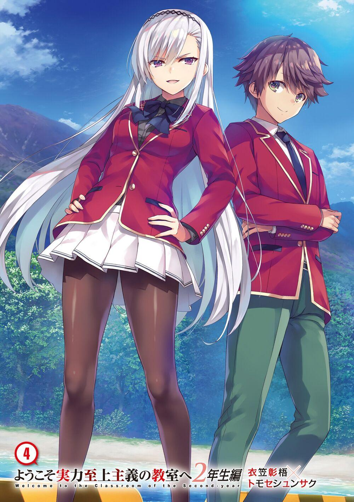
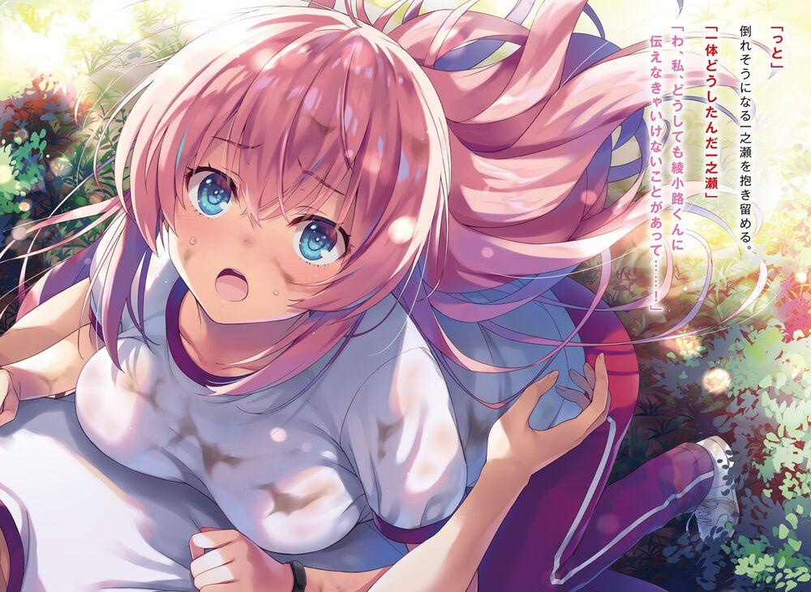
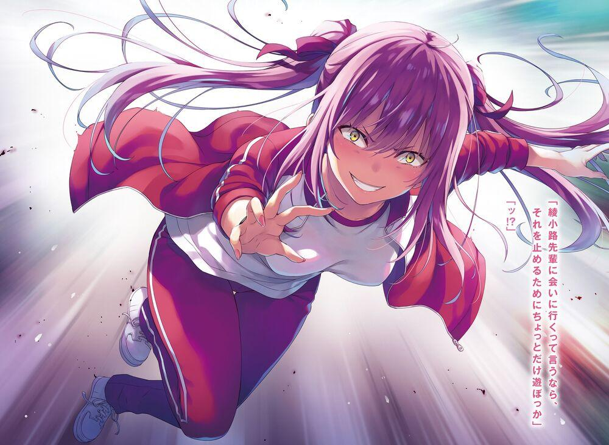
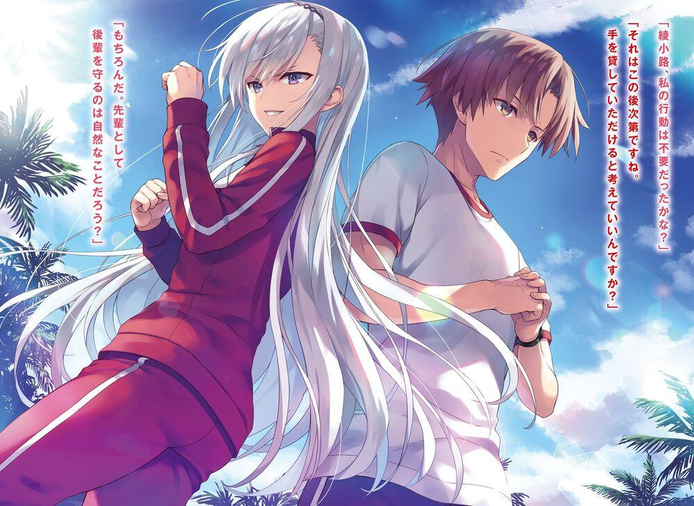
GLADHEIM
TRANSLATIONS
Youkoso Jitsuryoku Shijou Shugi no Kyoushitsu e - Segundo Año Volumen 4
EL MONÓLOGO DE AMASAWA ICHIKA
Bebés de probeta. ¿Has oído alguna vez el término?
Al parecer, hoy en día ya no se les llama así. En su lugar, la sociedad ha adoptado el término "bebés de FIV".
Yo soy uno de los nacidos de ese mismo proceso. Un humano nacido de la Fecundación In Vitro.
Sin embargo, no sé nada de mis orígenes fuera de eso. Ni siquiera he visto la cara de mis padres.
Dónde están ahora... Qué están haciendo... Por qué me pusieron en la Habitación Blanca... Nada.
Pero, para ser completamente honesta, no estoy realmente interesada en averiguarlo.
Hay una cosa que aprendí cuando por fin tuve la edad suficiente para entender el mundo que me rodea:
Que mis padres eran personas con mucho talento.
Por lo tanto, debo ser una niña increíblemente bendecida que nació con las cualidades para convertirse en un genio, ¿no?
Aunque, por muy correcto que sea, mi existencia entra en conflicto directo con la de la Habitación Blanca.
Una instalación cuyo objetivo final es elevar a todas las personas a una superioridad equivalente.
Una instalación en la que buscan demostrar que los límites de la humanidad no se deciden por la genética del individuo, sino por su ambiente.
En otras palabras, quieren que todas las personas posean un talento sobresaliente, no sólo los bendecidos con excelentes genes como yo.
Al final, para la Habitación Blanca, seguramente soy un experimento más.
Y aunque no me opongo del todo a ser un experimento, me pregunto si realmente creen que tendrán éxito.
Personalmente, hace tiempo que concluí que es imposible homogeneizar el intelecto, la personalidad y la ética.
De hecho, ¿no es mi propia existencia la mayor prueba de ello?
Desde que era niña, he estado orgullosa de ser diferente de los que me rodean, aunque nunca lo demostré. Apagaba la luz de mis ojos y fingía con indiferencia recorrer el camino, mientras me cuestionaba el significado de la existencia de la Habitación Blanca.
¿Realmente quiero crecer dedicando mi vida a promover los ideales de la Habitación Blanca?
¿Estoy realmente dispuesta a poner mi vida en juego, esforzándome día tras día, desesperada por convertirme en el máximo ejemplo de educación exitosa del mundo?
¿No sería eso, ya sabes, un poco patético? ¿No querrías vivir con más libertad?
Yo sí. Al menos, odiaría pasar el resto de mi vida encerrada en un mundo así.
Uy, parece que estoy divagando un poco. Volvamos al asunto que nos ocupa,
¿de acuerdo?
Ayanokouji Kiyotaka. El ser cuyo éxito preponderante destacaba sobre el resto de la Habitación Blanca.
Por supuesto, fui escéptica cuando oí hablar de él por primera vez.
Al fin y al cabo, ¿cómo podía creer que, a pesar de todos mis esmerados esfuerzos, él tuviera una puntuación muy superior a la mía en todos los sentidos?
Pero... por desgracia. Después de ver los datos, de conocerlo en persona, de hablar con él... finalmente lo entendí.
Entendí lo especial que es realmente.
Sin embargo, lo siento Senpai.
Realmente quiero ponerme de tu lado, pero no es así como el destino va a actuar.
Porque, hay quienes conozco desde hace mucho, mucho más tiempo que tú, Senpai.
Soy mucho más compasiva de lo que creía... ¿Quién lo hubiera imaginado?
Como uno de tus fieles admiradores, estaré mirando desde la distancia una vez que finalmente llegue "ese momento".
MANIOBRAS SECRETAS
La lluvia torrencial se había hecho más fuerte y la niebla, más espesa. Era difícil oír o ver algo debido al clima, pero podía sentir una presencia ominosa que se acercaba a nosotros por detrás. Había un sonido deliberado, casi exagerado, de barro pisado y esparcido por el aire.
Parecía que Nanase también lo había notado inmediatamente. Mirando por encima de mi hombro, alcancé a ver a una estudiante que se había detenido bruscamente detrás de mí, con su pelo rojo meciéndose en el viento.
—Parece que va a empezar a llover de verdad, ¿eh Sen~pai?
Era nada menos que Amasawa Ichika, de la clase 1-A, que estaba allí de pie bajo la lluvia. Aunque ya se había establecido que ella tenía la misma Tabla que Nanase y yo, esto no era de ninguna manera una mera coincidencia. No había ningún otro estudiante cerca, y ella tampoco tenía una mochila o una tableta.
Esto nos llevó a preguntarnos: ¿Cómo llegó hasta aquí exactamente? Una posibilidad es que simplemente haya escondido sus cosas en algún lugar cercano antes de acercarse a nosotros. Otra posibilidad era que nos hubiera estado siguiendo durante un largo periodo de tiempo, con las manos vacías desde el principio.
Supongo que también era posible que alguien nos hubiera seguido con el GPS y le hubiera transmitido nuestra posición por walkie-talkie. No obstante, había que descartar que se tratara de una simple coincidencia. Sea cual sea el método, su llegada no era bienvenida en lo que a mí respecta.
Además, tampoco era que Amasawa tuviera las manos completamente vacías.
En su mano izquierda llevaba un grueso bastón de madera: uno que era más que capaz de ser utilizado como arma para apalear a alguien. ¿Estaba tratando de tomarnos por sorpresa, sólo para que Nanase y yo nos diéramos cuenta inesperadamente antes de que pudiera hacerlo?
Pero, con tan mal tiempo, podría haber sido mucho más silenciosa con su aproximación si realmente planeaba atacarnos.
—Por favor, ponte detrás de mí, Senpai.
Mientras pensaba en la razón detrás de la repentina aparición de Amasawa, Nanase, a pesar de estar todavía agotada de antes, se colocó delante de mí.
Por el breve vistazo que le eché a su perfil, su mirada era firme con una evidente sensación de desconfianza escrita en su rostro.
—¿Oh? Nanase-chan, ¿no deberías alegrarte de verme? Qué horriblemente fría eres con una querida compañera de grupo. Espera, ¿acaso estás nerviosa por este pequeño palo amigo mío~?
Ella tiró casualmente el palo de madera al suelo entre nosotros en lo que parecía ser una muestra de buena fe. Aun así, Nanase no bajó la guardia en absoluto.
—No se puede confiar en ti─.
—Qué ma~la. ¿Cómo puedes decir algo así? ¡Soy super-duper linda~!
No creía que ser linda tuviera nada que ver con ser confiable o no, pero eso no importaba en este momento.
—¿Por qué dices que no se puede confiar en ella, Nanase?
Ciertamente había algo en Amasawa que hacía difícil saber lo que realmente pensaba. No sería una exageración decir que tenía una extraordinaria capacidad de actuación y la extraña habilidad de poner los planes en acción.
Así que, aunque era natural ser cauteloso con ella, no es que no lo estuviera haciendo ya a estas alturas. Pero eso no explicaba la excesiva desconfianza y cautela que Nanase le mostraba.
Por supuesto, Amasawa tenía claramente una razón para presentarse aquí. Se podría suponer que Nanase estaba exagerando ahora que se había convertido en mi aliada, pero...
—Cielos. No soy ninguna mala persona, ¿verdad Ayanokouji-senpai~?
Sólo quiero charlar un rato, ¿ok?
—Por favor, no la escuches, es peligrosa.
Aunque Amasawa no estaba mostrando ninguna hostilidad, Nanase se mantuvo despiadada y firme, negándose a ceder un ápice. A pesar de haber expresado sus quejas momentos antes, Amasawa no se molestó por la acusación aparentemente injustificada de Nanase.
—Senpai... Hay algo que he estado callando desde hace tiempo... En la época en que el grupo de Shinohara-senpai fue atacada y Komiya-senpai y Kinoshita-senpai se retiraron del examen, ¿recuerdas cómo fuiste a subir la cuesta con Ike-senpai?
Se refería al cuarto día del examen, cuando Ike escuchó un sonido procedente de la cima de la ladera y salió despavorido, pensando que Shinohara podría estar allí. Tras decidir que era demasiado peligroso para él ir solo, le seguí.
—Mientras estabas fuera, me di cuenta de que alguien nos había estado observando desde cerca, así que intenté perseguirlo.
—¿Por eso no estabas con Sudou y los demás cuando emprendíamos el camino de vuelta tras encontrar a Shinohara?
Ella asintió levemente con la cabeza.
—¿Y qué pasó?
—Huyó de mí. Y aunque no fui capaz de alcanzarlo... me las arreglé para verle bien el pelo.
Con eso, Nanase levantó lentamente su brazo derecho en el aire y señaló a Amasawa.
—En aquel entonces, la que nos observaba desde las sombras eras tú,
¿no es así Amasawa-san?
—Jajaja, así que me vieron después de todo.
En lugar de intentar negarlo, Amasawa se rió, admitiéndolo inmediatamente. No parecía ni remotamente sorprendida por haber sido atrapada con las manos en la masa, su actitud era la misma de siempre.
Por lo tanto, era seguro concluir que la presencia que percibí en aquel momento era realmente Amasawa.
—Tú también heriste a Komiya-senpai y a Kinoshita-senpai, ¿no es así?
—¿Eh? ¿No estás sacando conclusiones precipitadas? Tal vez sólo estaba en los alrededores.
—Entonces no necesitabas huir de mí, ¿verdad?
—Si una chica viene corriendo hacia ti con una mirada aterradora, ¿quién no huiría? Además, no quería ser sospechosa.
—No te creo. Para nada.
—Entonces, en otras palabras, Nanase-chan, acabas de decidir que yo empujé a esos dos senpais por la pendiente, ¿es así?
—Estoy segura de ello. Es casi imposible que me equivoque.
—Estás taaaan segura, y aun así has sentido la necesidad de lanzar un
'casi', ¿eh? ¿No tendría más sentido decir que no tienes ni idea?
Las dos chicas, compañeras de grupo, intercambiaron palabras, manteniéndose a raya.
—Entonces, ¿puedes jurarme que no fuiste tú quien les hizo daño?
—Puedo jurarlo, claro, pero en realidad no importa si cumplo mi palabra o no, ¿verdad?
Amasawa estaba diciendo básicamente que, a fin de cuentas, una promesa verbal no significaba nada.
—Permíteme preguntar: si realmente fuera yo, ¿qué harías? ¿Qué harías entonces?
En lugar de intentar escapar del incesante interrogatorio de Nanase, Amasawa se lanzó de cabeza por voluntad propia. Nanase seguramente se sentía un poco abrumada en ese momento, pero de todos modos siguió adelante, decidida a averiguar la verdad.
—Me gustaría que me dijeras por qué hiciste algo así. Que me dieras una razón. No, antes de todo eso, ¿por qué no salió tu nombre cuando los profesores investigaron las señales de GPS de los alrededores?
Esto no era algo que Amasawa necesitara explicar, así que hablé en su lugar.
—No es tan difícil deshacerse de una señal de GPS. Sólo hay que romper el reloj, eso es todo.
—Ding ding ding~ ¡Correcto! Ya sea intencionalmente o no, un reloj roto es un reloj roto. ¡Y además te lo pueden cambiar gratis!
Con una expresión encantada, Amasawa nos mostró el reloj atado a su muñeca derecha.
—Pero aunque se te rompiera el GPS antes del ataque, ¿no se habría dado cuenta la escuela?
—Sí, probablemente. Pero al menos en este caso, creo que habría sido bastante difícil darse cuenta con la prisa que tenían en ese momento.
Había más de 400 señales de GPS en la isla. Aunque faltaran una o dos en el mapa, es imposible que se dieran cuenta en ese momento, y tampoco es que tuvieran tiempo de comprobarlo todo. Los profesores tenían que priorizar, con razón, la seguridad y el bienestar de los alumnos.
—Sin embargo, la escuela aún llevaría a cabo una investigación exhaustiva más tarde, ¿verdad? Sólo sería cuestión de tiempo que lo descubrieran.
Dado que la propia Shinohara había declarado que fueron atacados por alguien, la escuela definitivamente investigaría el caso en detalle. Y, en el proceso, era muy probable que descubrieran que la señal del GPS de Amasawa era la única que había desaparecido. Sin embargo, ahí radica el problema.
—Si la señal GPS de Amasawa fue la única que desapareció cuando Komiya y Kinoshita fueron atacados, la escuela definitivamente sospecharía.
Pero eso es todo. Debido a la falta de pruebas no podrían concluir que ella es la culpable.
—Eso─
Habiendo atestiguado personalmente la presencia de Amasawa en el lugar del ataque, Nanase quería identificarla como la culpable. Sin embargo, probar un crimen era mucho más difícil de lo que ella hacía ver. Fuera como fuera, la escuela tenía que evitar forzar la retirada de alguien por una falsa acusación.
Originalmente, el reloj fue concebido como una forma de salvaguardar las reglas del examen y mantener el orden, pero los estudiantes podían eludirlo a su antojo.
Para evitar que los alumnos abusen del sistema, la escuela tendría que aplicar fuertes sanciones por romper los relojes, como limitar el número de veces que se pueden cambiar, cobrar puntos o incluso obligar a retirarlos.
Sin embargo, cuanto más fuertes sean las sanciones, más susceptible de abuso será el sistema en su conjunto. Por ejemplo, se abriría la posibilidad de manipular o romper el reloj de un competidor para hacerle frente a las sanciones.
Además, si los alumnos se vieran obligados a retirarse por un verdadero accidente o un mal funcionamiento del software, probablemente sería un examen especial bastante insatisfactorio.
—Hacer agujeros en las normas es una práctica habitual. Si la escuela no puede encontrar ninguna prueba, eres libre de hacer lo que quieras.
Aunque su fraseo era un poco torpe, lo que Amasawa estaba diciendo era correcto.
—Si no pueden encontrar ninguna prueba, entonces sólo tendré que testificar que te vi allí, Amasawa-san.
—La misma diferencia. Ya sea por mi GPS roto o por mi presencia en la escena del crimen, sólo acabaría en sospecha en el mejor de los casos.
Si hubiera sido uno de los estudiantes más problemáticos como Sudou o Ryuuen, que tenían un historial de comportamiento altamente violento, la escuela podría haber sospechado más. Amasawa, sin embargo, era una chica de primer año de preparatoria con un historial intachable. Dada la evidencia de su carácter, la probabilidad de que la escuela la encontrara culpable no era muy alta.
Además, Komiya y Kinoshita ni siquiera testificaron que habían sido atacados, y la propia Shinohara sólo pudo hacer una vaga declaración, incapaz de decir a quién había visto.
El testimonio de Nanase de haber visto a Amasawa en la zona no sería tratado de forma diferente. Sin pruebas concluyentes, sería imposible conseguir que la escuela castigara a Amasawa.
—Así es, Nanase-chan.
Al final del día, seguíamos sin saber la razón por la que Amasawa había venido aquí. Las continuas preguntas de Nanase y los evasivos juegos de palabras de Amasawa no parecían llevarnos a ninguna parte. Por ello, cada vez era más difícil creer que de repente nos tendiera una trampa en este momento.
Por ahora, podríamos dejar de lado la cuestión de si ella era o no la que estaba detrás de lo que les había ocurrido a Komiya y Kinoshita. Pensé que debía preguntar algo para superar el estancamiento actual y reconducir la conversación.
—¿Qué haces aquí Amasawa? No, ¿cómo nos encontraste?
Teniendo en cuenta que aún quedaba más de una semana para el examen especial, lo mejor para todos sería evitar estar bajo una lluvia torrencial como ésta. Necesitábamos montar nuestras tiendas y escapar del chaparrón lo antes posible.
—No es necesario tener tanta prisa, Ayanokouji-senpai. ¡Agradezcamos que hayamos podido encontrarnos así~!
—Lo siento, pero la lluvia ha sido mucho más exigente con mi resistencia de lo que esperaba. Vamos a terminar con esto. Por favor.
—Bueno~, ¿qué tal si te ayudo a montar una tienda y pasamos la noche juntos, los dos solos? ¿Qué te parece?
Los chicos y las chicas tenían expresamente prohibido pasar la noche juntos en la misma tienda, algo que ella también debía saber. Seguro que estaba tratando de ganar tiempo entablando conmigo una conversación sin sentido.
—Ah, ¿te preocupa romper las reglas? Está bien, está bien. Ni siquiera la escuela puede controlar todo, ¿sabes?
En cuanto Amasawa dio un paso adelante, Nanase se acercó inmediatamente y la agarró del brazo.
—¿Qué pasa con esto, Nanase-chan?
—Estabas a punto de ponerle las manos encima a Ayanokouji-senpai,
¿verdad?
—¿Desde cuándo eres su caballero de brillante armadura? ¿No estabas como que, conspirando para que lo expulsaran junto con Housen-kun?
—Eso... Eso no tiene nada que ver contigo. ¿Por qué viniste aquí?
—Resulta que me perdí, así que vine a intentar pedirles ayuda a ustedes.
Amasawa dijo una mentira descarada, sin ninguna intención de seguir guardando las apariencias. ¿Acaso vino hasta aquí para ver el resultado de mi pelea con Nanase y ver las consecuencias?
Quizá podría decir que Nanase también había cambiado de bando, dada su forma de actuar. Pero eso no tenía sentido. Después de todo, habría poca razón para que ella se quedara y tomara parte en una conversación tan insignificante si ese fuera el caso.
—Me gustaría charlar con Ayanokouji-senpai, así que ¿podrías soltarme y hacerte a un lado?
—¿Por qué no hablas desde donde estás?
—Bueno, no hay manera de que pueda hacer eso. Después de todo, tiene que ver con la Habitación Blanca~.
Amasawa confesó, habiendo llegado a la conclusión, aparentemente, de que no tenía sentido seguir ocultando su verdadera identidad. Sorprendida, Nanase se volteó y me miró.
A lo largo de este primer semestre, la existencia del estudiante de la Habitación Blanca siempre había estado en mi radar, pero no había sido capaz de precisar
su identidad. Dicho esto, nunca hubiera imaginado que lo descubriría debido a una confesión directa.
—¿Ahora lo entiendes? Pequeña señorita forastera~
Si Amasawa realmente era la estudiante de la Habitación Blanca, entonces sin duda tendría sentido que llamara a Nanase forastera.
—Suelta su brazo Nanase.
Aunque claramente algo insatisfecha, Nanase obedientemente soltó el brazo de Amasawa tal y como le indiqué.
—¡Vaya, eres una chica tan buena Nanase-chan~! Es como si fueras su perro fiel; te queda mejor de lo que pensaba.
En ese momento, Amasawa comenzó a acercarse lentamente a mí, poco a poco.
Estaba exasperado, pero al menos la conversación podría llegar a algún sitio ahora.
—Lo siento, pero teniendo en cuenta un malentendido anterior con Nanase, no sacaré ninguna conclusión sólo porque hayas mencionado la Habitación Blanca.
—Está bien, te demostraré que soy de verdad. Sin embargo... dejar que Nanase-chan lo escuche es un poco...
Se interrumpió, pronunciando las palabras "Lo entiendes, ¿verdad?" con su habitual sonrisa diabólica.
Hice un ligero gesto a Nanase, indicándole que se distanciara. Aunque era reacia a dejarme a solas con Amasawa, acabó cediendo y siguió su ejemplo. La lluvia torrencial se había hecho más fuerte, hasta el punto de que no sería capaz de oírnos si hablábamos en voz baja a pocos metros de distancia. Al pisar el suelo embarrado, Amasawa finalmente se puso al alcance de la mano.
—Ahora bien, ¿por dónde debería empezar~?
Se puso la mano en la barbilla, un movimiento grandilocuente que quería significar que estaba pensando en cómo explicarse exactamente. En cualquier
caso, el hecho de que haya venido aquí en primer lugar no tiene ningún sentido para mí.
Durante los últimos meses, el alumno de la Habitación Blanca había estado acechando en las sombras, esperando su oportunidad para hacer que me expulsaran.
Y sin embargo, Amasawa había aparecido delante de mí y había revelado su verdadera identidad sin ni siquiera un truco bajo la manga. Además, el hecho de que estuviera dudando sobre qué decir en ese momento era, para empezar, extraño.
Parecía bastante obvio que estaba alargando esto intencionadamente y ganando tiempo. Justo cuando empezaba a contemplar si debía o no presionarla al respecto, Amasawa abrió la boca.
—Senpai, el plan de estudios que cursaste cuando tenías 10 años incluía la Teoría de Sistemas basada en el Proyecto 5. Y a los 11 años era la Teoría de la Relatividad basada en el Proyecto 7. Yo misma participé en ambos, así que los recuerdo bien.
Comenzó a mencionar datos concretos de la Habitación Blanca para demostrar que veníamos del mismo lugar.
—Las aulas, los pasillos, las habitaciones que nos asignaron... todo era un mundo de blanco puro.
Al menos, parecía que Amasawa sabía mucho más sobre la Habitación Blanca que Nanase. Y me resultaba muy difícil imaginar que ella había oído hablar de ella a Tsukishiro. Él nunca hablaría de los entresijos de la Habitación Blanca con alguien ajeno a ella, un extraño.
Por lo tanto, era seguro concluir la culpabilidad de Amasawa. Desde las cosas que sabía hasta la forma en que se comportaba, encajaba a la perfección con la imagen de un estudiante de la Habitación Blanca.
—¿Por qué te tomas la molestia de hacerte pasar por una persona normal sólo para revelarme así tu identidad?
—Claro que sí, me imaginé que tendrías curiosidad por eso. Es porque quería decirte que no soy tu enemiga, Senpai.
—Eso no tiene sentido. El estudiante de la Habitación Blanca fue enviado aquí para forzar mi expulsión. Decir que no eres mi enemiga a la luz de eso no tiene mucho sentido.
Completamente indiferente al hecho de que nuestras ropas estaban siendo empapadas por la lluvia, Amasawa continuó hablando.
—No lo sabrías por formar parte de la cuarta generación, Ayanokouji-senpai, pero las generaciones posteriores albergan inmensos sentimientos de celos cuando se trata de ti. Los superiores pensaron que podrían seleccionar a alguien prometedor y manipular estos celos para forzar tu expulsión. Sin embargo, eligieron a la persona equivocada. No predijeron que yo no era más que una joven doncella que te idolatraba en secreto.
—Entonces, ¿por eso te revelaste?
Ella asintió con un silencioso
—Mhm.
—Entonces, ¿no habría sido mejor que lo hicieras cuando te inscribiste aquí por primera vez? Incluso te las arreglaste para pisar mi dormitorio en más de una ocasión, así que deberías haber tenido un montón de oportunidades para decírmelo.
—Bueno, por mucho que idolatres a alguien, eso está en tu cabeza,
¿sabes? Tienes que hablar con ellos y conocerlos cara a cara antes de que tu admiración empiece a estar justificada. Eso lleva tiempo.
En otras palabras, si yo no hubiera resultado ser alguien que Amasawa considerara digno de ser idolatrado, es posible que hubiera decidido eliminarme.
Y basándose en el flujo de nuestra conversación hasta el momento, eso parecía bastante razonable.
—¿Lo entiendes?
—Supongo. Sólo alguien que ha estado en la Habitación Blanca podría decir tanto al respecto.
—Ya está~. Se siente un poco extraño, ¿no? Pasar los días en la escuela como un estudiante de preparatoria ordinario.
Antes, yo había sido el único en experimentar la extraña y peculiar sensación de la que hablaba.
Pero saber que otro alumno de la Habitación Blanca pasaba ahora por lo mismo me había llenado de auténtica curiosidad.
—Si sientes lo mismo que yo, seguro que también te has dado cuenta de lo interesante que es esta escuela, ¿verdad?
—Sé exactamente lo que quieres decir, Senpai. Yo también he pensado en lo bonito que sería poder disfrutar de ser un estudiante como éste hasta la graduación. Lo he pensado varias veces, de hecho. Pero se me da fatal hacer amigos, así que no tengo mucha gente con la que hablar.
En cierto modo, ella era bastante parecida a mí. Aunque podía hablar con gente como Horikita e Ike, siempre había sentido que había una especie de distancia entre nosotros. Pensando en ello, durante bastante tiempo, sentí como si no pudiera llamar honestamente a nadie amigo.
—Eso no significa que me falte capacidad de comunicación como tú, Senpai.
Como si fuera plenamente consciente de lo que estaba pensando, Amasawa habló para aclarar.
—A mí me enseñaron esencialmente lo mismo que a ti, Senpai. Pero al mismo tiempo, hay ciertas cosas que sólo la quinta generación de estudiantes que vino después de ti pudo aprender.
Hizo una pausa para ver si quería decir algo antes de continuar.
—Se dice que, antes de la quinta generación, los niños solían ser aplastados uno tras otro debido a su excesivo individualismo. Por supuesto, a pesar de los malos resultados, se permitía que los que tenían excelentes
resultados entraran en contacto entre sí. En mi generación, en cambio, todos los niños debían mantener un nivel mínimo de comunicación interpersonal.
Si decía la verdad, entonces podía entender por qué le resultaba tan fácil hacer un surtido tan rico de expresiones faciales diferentes. Aunque podía fingir ser otra persona a corto plazo gracias a mis dotes de actor, era difícil romper el hábito que se había formado por haber vivido la mayor parte de mi vida carente de emociones.
—¿Todavía no me crees?
—Creo que eres de la Habitación Blanca, pero no me convence la razón que me diste para revelar tu identidad.
—Estás muy tranquilo y sereno para alguien que cree que soy un estudiante de la Habitación Blanca. ¿Quizás no crees que sea una amenaza para ti?
No dije nada en respuesta a esto, provocando que una sonrisa se asomara a su rostro.
—Bueno, entonces~ Ya dije todo lo que quería decirte, así que creo que ya es hora de que me disculpe.
Diciendo esto, me dio la espalda, contentándose con ser reconocida simplemente como la alumna de la Habitación Blanca.
—¿En qué estás pensando, Amasawa?
—Cielos~ ¿No te lo había dicho ya~? Te admiro, Ayanokouji-senpai. Eso es todo.
Mirando hacia atrás, alargó la mano y rozó la punta de sus dedos, húmedos y fríos por la lluvia, contra mi mejilla.
—Así que, por favor, no vayas a ser aplastado sin mi permiso, ¿de acuerdo?
Y con eso, retiró su mano y se alejó, dirigiéndose a quién sabe dónde.
Dijo "no vayas a ser aplastado"... ¿pero por quién? ¿Tsukishiro? ¿Los de primer año que tenían la vista puesta en la recompensa de veinte millones de puntos privados? O, tal vez...
—Ayanokouji-senpai, ¿estás bien? No te hizo nada, ¿verdad?
Tras percatarse de la partida de Amasawa, Nanase se apresuró a acercarse a mí, preocupada. Asentí con la cabeza para tratar de aliviar su preocupación antes de mirar hacia mi mochila.
—La lluvia. Será mejor que nos demos prisa.
Quería tomarme un tiempo para procesar todo, pero había otras cosas que tenían prioridad en este momento.
—¡Sí! Deberíamos montar las tiendas, ¿no?
—Sí.
Respondí afirmativamente, pero todavía había una cosa que no podía permitirme olvidar. A saber, comprobar las huellas que había dejado Amasawa.
—¿Senpai...?
—La lluvia borrará sus huellas pronto.
Amasawa acababa de marcharse y, sin embargo, sus huellas ya empezaban a perder su forma.
—¿Las huellas de Amasawa-san? ¿Hay algún problema con sus huellas?
—Cuando Komiya y Kinoshita fueron atacados, encontré unas huellas cerca de la escena del crimen. Por lo que puedo decir, estoy bastante seguro de que son del mismo tamaño que las de Amasawa.
En otras palabras, Amasawa definitivamente había estado allí, tal y como Nanase afirmaba.
—Entonces, en lugar de estar por casualidad en la zona, ¿estás diciendo que fue ella quien los empujó por la pendiente?
—No lo sé. Quizás sea seguro concluir que ella es la que nos estaba observando entonces, pero todavía no hay pruebas concluyentes que la señalen como la que los empujó.
Por un momento, pareció que Nanase no entendía de qué estaba hablando.
—Puede que no haya ninguna prueba sólida. Sin embargo, ¿no debería estar bien asumir que fue ella?
—Basándonos en la información que tenemos ahora mismo, Amasawa es sin duda la culpable más probable.
—Exactamente, yo también lo creo. Sé que lo estoy repitiendo a estas alturas, pero ella es sin duda la que vi entonces.
Y está claro que tampoco se equivocaba en eso.
—Sin embargo, no es que realmente la hayas visto empujarlos.
—Eso... bueno... ella acaba de confesar no hace mucho tiempo.
—Es difícil llamar a eso una confesión. Sólo te preguntó qué harías si fuera ella la que los empujó. Eso está muy lejos de admitir explícitamente que es la culpable.
—¿Quizás lo dijo así porque tenía miedo de que la estuviéramos grabando o algo así?
—Con lo ruidosa que es esta lluvia y las circunstancias en las que estamos, no creo que ella necesitara estar en guardia por eso.
A simple vista, este no parecía el tipo de ambiente adecuado para grabar nada.
—Todavía no se puede estar absolutamente seguro. Ella es muy consciente de que eres un oponente del que debe desconfiar, así que es razonable suponer que tomó todas las precauciones necesarias.
Para eliminar todos los riesgos potenciales, eso sería, de hecho, una sabia elección.
—Si deliberadamente infligió heridas potencialmente mortales a dos estudiantes mayores, entonces debería haber salido corriendo de allí inmediatamente después de hacer el acto. ¿Por qué se quedaría y dejaría que la vieras mientras huye?
Nanase reflexionó sobre cómo responder por un momento mientras recuperaba su mochila.
—Eso es... imagino que es porque ella estaba interesada en lo que le pasó a Komiya-senpai y Kinoshita-senpai. Es la misma mentalidad que la de un pirómano que siempre vuelve a la escena del crimen.
Es cierto que había un dicho que decía que los pirómanos, o los criminales en general, siempre vuelven a la escena del crimen. Aunque había muchas teorías sobre este fenómeno, era arriesgado intentar relacionarlo con esta situación concreta. Si especuláramos basándonos en la suposición de que Amasawa era la culpable, no seríamos capaces de ver más allá de lo superficial.
—Empujar a dos personas por una pendiente es un acto despiadado de por sí, así que no tiene sentido que se arriesgue a volver a la escena del crimen sólo porque le interese lo que les pasó. También está el hecho de que pudiste identificarla mientras huía. Sinceramente, me cuesta creer que alguien enviado aquí por Tsukishiro cometiera un error así.
Empecé a rastrear las huellas que se desvanecían rápidamente para asegurarme de que no me estaba perdiendo nada.
—Así las cosas, me pregunto por qué nos reveló su identidad de esta manera.
—Me imagino que lo hizo porque sabía que la vi entonces y que ya no podría ocultarlo. Aunque no demostraría su culpabilidad si yo informara a la escuela, le traería problemas, ¿no? Después de todo, la misión que le encomendó el director interino Tsukishiro se pondría en peligro.
—Al final, eso contradice el hecho de que ella regresó a la escena del crimen.
—¿No podemos atribuirlo a un error por descuido de su parte?
—Eso es imposible.
¿Quizás Amasawa dejó intencionalmente que Nanase la encontrara por alguna razón? Justo cuando empecé a pensar en esa posibilidad, me encontré con una nueva pista.
—Como pensaba, hay algo en todas y cada una de las acciones de Amasawa que no puede pasarse por alto.
—¿Algo que no se puede pasarse por alto?
Señalé el rastro de huellas de Amasawa, que ahora estaban a punto de ser arrastradas por la lluvia.
— Sus huellas parecen limpias y firmes ya que estaba haciendo su aproximación por detrás, pero... las anteriores─
—¿Eh? Estas...
Nanase finalmente se dio cuenta de la extraña discrepancia también.
—Estas son las huellas de otra persona, ¿no es así?
—Sí.
Había otro conjunto de huellas que parecían ligeramente más grandes que las de Amasawa, pero no era posible determinar su tamaño real porque ya habían perdido su forma.
—Sea quien sea, se ve que se estaba acercando a nosotros hasta justo aquí, donde se encontraron con las huellas de Amasawa. Algo pasó en ese punto ya que las huellas se confunden, pero puedes ver aquí cómo las misteriosas huellas terminan dando la vuelta.
—Entonces, ¿estás diciendo que... alguien más estuvo aquí sólo momentos antes de que Amasawa-san nos llamara...?
Si se trataba de un estudiante o de un miembro del profesorado de la escuela, no había manera de saberlo con seguridad.
—¿Puedes traerme el bastón que Amasawa sostenía antes?
—¡Está bien!
Fue a buscar el palo y me lo entregó. Una vez que lo vi de cerca, todas mis especulaciones hasta el momento llegaron a una única respuesta.
—¿Qué te parece, Nanase? ¿Notas algo?
—¿Que si noto algo...? Bueno, creo que sería peligroso golpear a alguien con eso. Espera, en realidad...
Nanase volvió a coger el palo y después de sujetarlo durante un segundo, cayó en la cuenta.
—Esto... Esto no parece algo que encontrarías tirado en el bosque.
—Sí. Lo han cortado en algunos lugares para poder usarlo mejor como arma. Mirando otras ramas de la zona, su forma es demasiado extraña.
—¿Crees que iba a usar esto para intentar atacarte, Ayanokouji-senpai?
—Si Amasawa realmente planeaba atacarme, entonces debería haber intentado tomarme desprevenido en lugar de llamarme como lo hizo. No obstante, aunque tenía un arma peligrosa en la mano, no me pareció que tuviera malas intenciones. En todo caso, creo que sólo quería que notáramos su presencia.
Y, todavía había otra cosa que se podía deducir de esto.
—Es decir, no tenía intención de atacarnos desde el principio... ¿No significaría eso que quien trajo esto aquí originalmente no fue Amasawa-san, sino la misteriosa persona que desapareció antes de que ella se acercara a nosotros?
Las huellas misteriosas parecían dar zancadas cortas mientras se acercaban a nosotros, pero cuando se dieron la vuelta después de encontrarse con Amasawa, las zancadas que dieron se distanciaron más. Se alejaron como si trataran de evitar ser notados, o más bien, como si trataran de huir.
—¿Pero por qué?
—Por lo que me dijo Amasawa, al parecer soy objeto de su admiración. Así que no parece tan descabellado pensar que haya querido protegerme cuando estaba a punto de ser atacado.
—Sin embargo, parece un poco arriesgado asumir que es una aliada basándose sólo en eso...
—Naturalmente. Sin embargo, estas huellas se dirigen claramente a mí, y ni siquiera puedo aventurar una conjetura sobre quién las hizo.
—¿Acaso... crees que podría haber sido un miembro del profesorado de la escuela?
—Es posible, pero también es cierto que tengo una recompensa por mi cabeza.
Había una alta probabilidad de que estas huellas misteriosas pertenecieran a un estudiante que tuviera la vista puesta en el cobro de mi recompensa. Era completamente imaginable que alguien estuviera dispuesto a jugarse su futuro para intentar forzar mi expulsión.
—¡Oh! ¡Eso es!
Habiendo llegado a algún tipo de comprensión, Nanase de repente levantó la voz.
—¡Senpai, hagamos una búsqueda por GPS ahora mismo! No ha pasado tanto tiempo desde que Amasawa-san se nos acercó por primera vez. Incluso si esta persona misteriosa huyó a toda velocidad, no debería haber sido capaz de llegar muy lejos con un clima como este, ¿verdad?
No estaba equivocada. Si hiciéramos una búsqueda por GPS ahora mismo y hubiera señales en los alrededores, podríamos reducir la lista de sospechosos de golpe. Sería tan sencillo como revisar las señales más cercanas una por una para ver quiénes eran.
—Oh, pero no seríamos capaces de identificarlos si rompen su reloj como hizo Amasawa-san, ¿verdad?
—No, eso no es cierto. Cuando se rompe el reloj, la señal del GPS
desaparece. Dejando a un lado a Amasawa, si hiciéramos una búsqueda ahora mismo y sólo hubiera un estudiante con la señal desaparecida, ¿qué pasaría entonces?
—...Entonces ese es nuestro individuo.
—Sí. Por lo tanto, podemos concluir que la persona que intentó atacarme definitivamente no rompió su reloj.
—Vale la pena que gastemos el punto en una búsqueda entonces,
¿verdad?
Sólo habían pasado unos quince minutos desde que Amasawa me llamó por primera vez. Así que, aunque corrieran a toda velocidad, como mucho habrían llegado ya al borde del área D3. Con un poco de suerte, sólo habría una señal que se ajustara a estas condiciones, lo que nos permitiría localizar al dueño de estas misteriosas huellas.
Por ello, tenía sentido que siguiera la idea de Nanase y realizara una búsqueda por GPS aquí y ahora, pero...
—No voy a usar la búsqueda por GPS.
—¿¡Eh!? ¿¡Por qué no!?
—A fin de cuentas, no sería sorprendente que todo esto formara parte de una estrategia para provocarme a hacer una Búsqueda por GPS para que saliera a la palestra alguien completamente ajeno que casualmente estaba cerca.
Era difícil afirmar con certeza que no se trataba de un intento de confundirnos para que sospecháramos de una persona inocente. Uno siempre debe tener cuidado en situaciones en las que un oponente te está dando información, como la forma en que Amasawa permitió deliberadamente que Nanase la viera mientras huía de la escena del crimen, o incluso la presencia de Amasawa aquí hoy en general.
—Sigue resultando un desperdicio ni siquiera comprobarlo.
—Si fuera yo, no sería tan tonto como para dejarme atrapar por algo tan trivial como esto. Si ni siquiera pueden tener en cuenta la función de búsqueda del GPS antes de actuar, entonces ciertamente no son nadie de quien debamos preocuparnos.
Aunque Nanase no parecía del todo convencida, acabó cediendo y acatando mi decisión. En cualquier caso, aunque todavía quería ordenar mis pensamientos, eso no iba a suceder dado el rumbo del clima.
Después de decidir terminar la conversación, nos apresuramos a montar nuestras tiendas de campaña. No sería una exageración decir que en ese momento estaba lloviendo mucho.
Nuestras tiendas se montaron con las entradas colocadas frente a frente, y una vez que todo estuvo en orden, nos escondimos rápidamente dentro, refugiándonos de la lluvia. Me quité el uniforme de gimnasia, el jersey y la ropa interior empapados antes de secarme el pelo y el cuerpo con una toalla.
Y luego, tras ponerme una ropa de repuesto, abrí ligeramente la entrada y eché un vistazo al exterior. Todavía era temprano, pero el mundo exterior estaba tan oscuro como la noche.
Seguramente íbamos a estar atrapados aquí durante el resto del día, como mínimo. Las gotas de lluvia se colaban prácticamente por el agujero de la entrada, así que cerré la cremallera y me tumbé en el saco de dormir.
En este corto tiempo, había descubierto el pasado de Nanase y había identificado a Amasawa como el estudiante de la Habitación Blanca. Sin embargo, eso no significaba que toda la niebla se hubiera disipado.
PARTE 1
Mientras el aguacero continuaba, llegó un mensaje de la escuela. Como era de esperar, era un anuncio de que el examen sería cancelado por ese día. Dado que sería difícil para los grupos remontar con toda la oportunidad perdida para las Tareas y el movimiento de áreas, el mensaje también indicaba que estaban buscando formas de compensarnos para que los estudiantes no tuvieran que irse a la cama preocupados por la pérdida de puntos.
La escuela no especificó cómo planeaba compensarnos hasta que el clima comenzara a despejarse. Dicho esto, no importa lo que finalmente se les ocurriera, no cambiaría el hecho de que el día se había desperdiciado.
Aunque la compensación ayudaría a los grupos a alcanzar la misma puntuación global a largo plazo, las estrategias que habían planeado para hoy serían en vano. Personalmente, en lo que a mí respecta, la cancelación no podía llegar en peor momento.
Mi plan había sido conservar mi energía para poder ir a tope durante la segunda parte del examen, robando una ventaja a los grupos que estaban de capa caída tras agotar su energía durante la primera parte y acumulando una gran cantidad de puntos en el proceso. Sin embargo, ahora que el séptimo día se había convertido en un día completo de descanso, todo el mundo tendría tiempo para descansar y recuperar su energía.
Por supuesto, una isla deshabitada durante una tormenta no era exactamente un día en el spa, así que no es que su fatiga desapareciera por completo. Pero, la disparidad entre tener tiempo para descansar y no tener ninguno marcaba toda la diferencia del mundo.
—¡───pai!
—¿Hmm?
Apenas pude distinguir una voz a través del incesante sonido de las gotas de lluvia golpeando el exterior de mi tienda.
—¡Sen─ai!
Una vez más, la voz me llamó. Seguramente era Nanase, que intentaba hablarme desde la tienda situada frente a la mía. Abrí un poco la cremallera de la entrada de mi tienda y me asomé a través de la tela de malla para ver qué pasaba.
La visibilidad del mundo exterior era bastante pobre, pero no era tan mala como para no poder distinguir la tienda de Nanase frente a mí.
—¡Me gustaría hablar contigo un rato, Senpai! ¿Está bien si voy y me uno a ti?
Nanase hizo una pregunta, gritando desde su tienda. Debería haber sido consciente de que no era exactamente apropiado que un chico y una chica se acurrucaran juntos en una misma tienda, pero al parecer ella lo había olvidado todo.
Las normas prohibían expresamente que chicos y chicas durmieran juntos en la misma tienda, así que técnicamente no habría problema si sólo pasábamos un rato juntos. Y mientras no perdiéramos el sentido común, tampoco debería haber nada ética o moralmente incorrecto.
Sin embargo, la lluvia seguía siendo tan feroz como siempre. Aunque nuestras tiendas estaban a menos de dos metros de distancia, no habría forma de evitar que se mojara de nuevo.
—Me parece bien, pero ¿por qué no voy a acompañarte a tu tienda?
Intenté ofrecerle una alternativa, pero se limitó a negar con la cabeza mientras desplegaba una toalla y se la ponía por encima para prepararse para el viaje antes de abrir completamente la entrada de su tienda. Siguiendo su ejemplo, abrí rápidamente mi entrada para hacerla entrar lo antes posible.
Al igual que yo, Nanase salió volando de su tienda y entró en la mía. Por supuesto, sólo estuvo en la lluvia durante menos de un segundo, así que el daño se había mantenido al mínimo.
—Hah... Siento haberme entrometido en tu descanso, Senpai.
—No, está bien.
En verdad, Nanase estaba más agotada que yo. Había sido un arduo viaje para llegar hasta aquí, uno que fue inmediatamente seguido por una feroz batalla, mal entendida como fue.
Tenía curiosidad por saber de qué quería hablar, pero no dijo nada de inmediato.
O, por lo que parecía, sería más exacto decir que no encontraba las palabras.
Durante un rato, los dos nos sentamos en silencio, simplemente observándonos...
—Soy bastante descarada, ¿no?
Diciendo eso, Nanase bajó la cabeza en señal de disculpa.
—Te traté con tanta hostilidad durante mucho tiempo, Senpai. Diciendo todo tipo de cosas terribles directamente en tu cara... Debes estar molesto de que me acerque de esta manera.
Ya era un poco tarde, pero era evidente que finalmente estaba aceptando su conciencia culpable.
—Realmente no me importa, así que por favor deja de disculparte. Por lo menos, ha quedado claro que no hay necesidad de más hostilidad entre nosotros, ¿o me equivoco?
Tal vez había una parte de ella que no estaría satisfecha con una respuesta como ésta, pero en estos momentos estamos en medio de un examen especial.
La vacilación de la mente sólo nublaría la conducta y el juicio de uno cuando más importaba.
—No, tienes razón.
Habiendo entendido esto ella misma, Nanase una vez más bajó la cabeza en señal de disculpa.
—¿Entonces? A pesar de la lluvia, ¿no había algo de lo que querías hablarme?
—¡Ah, sí!
Como si recordara por qué vino a mi tienda en primer lugar, Nanase comenzó a hablar.
—No he podido quitarme de la cabeza la imagen de Amasawa-san, apareciendo de la nada bajo la lluvia... Cuando empecé a pensar en todas las dificultades por las que has pasado, simplemente... sentí que tenía que llamarte.
Evidentemente, en lugar de tener algún tipo de motivo oculto, simplemente se había preocupado por mí. Era un pequeño problema que ella estuviera más preocupada por toda la experiencia que yo, pero de todos modos aprecié el sentimiento.
—Me convencí de que Amasawa-san fue quien empujó a Komiya-senpai y a Kinoshita-senpai por la pendiente. Pensaba que sólo ocultaba su verdadera naturaleza porque quería ocultar la verdad, pero entonces dijiste que no era necesariamente la culpable y ahora ya no sé qué creer...
—Eso es porque la verdad sigue envuelta en la oscuridad.
El color de Amasawa era gris, un gris que apenas rozaba la línea antes de teñirse de negro, pero definitivamente no había cruzado esa línea todavía.
—Me pregunto cuál es el objetivo del culpable. Sean quienes sean, ¿por qué harían algo tan arriesgado como esto?
—No lo estaríamos pasando tan mal si supiéramos la respuesta a eso. Así que avancemos bajo la suposición de que Amasawa no es la culpable.
Decidimos repasar nuestros pensamientos respecto al incidente de Komiya-Kinoshita. Al fin y al cabo, intercambiando opiniones, seríamos capaces de arrojar luz sobre cosas que quizá no hubiéramos considerado de otra manera.
Por lo que sabíamos: alguien empujó a Komiya y a Kinoshita por la pendiente. Y, a juzgar por el hecho de que no había otras señales de GPS en la zona en ese momento, estaba claro que había sido un ataque premeditado, y no algo hecho al calor del momento. Además─
—Eso... Uhm, ¿no sería extraño?
Nada más empezar a hablar, Nanase frunció el ceño, como si hubiera algún tipo de discrepancia que no pudiera entender.
—Sería extraño que Amasawa-san no tuviera nada que ver, ¿verdad? Es decir, su reloj se rompió por casualidad cuando Komiya y Kinoshita fueron atacados, y ella estaba observando desde algún lugar cercano. Y, para colmo,
¿se dio la casualidad de que yo la vi cuando huía de la escena?
—Con tantas coincidencias sucediendo una detrás de otra, es difícil llamar a todo el asunto una también. Básicamente, nos estaríamos preparando para el fracaso si dijéramos que Amasawa no tiene ninguna relación con lo ocurrido.
—Incluso si Amasawa-san no es la verdadera culpable, tendría que ser alguien que ella conoce, ¿no? Por lo tanto, ¿no es posible también que sea una cómplice de algún tipo?
Con eso, una teoría alternativa comenzó a tomar forma: que alguien cercano a Amasawa haya empujado a Komiya y Kinoshita en su lugar.
—Eso parece razonable. Esas huellas que encontré antes podrían haber pertenecido al verdadero culpable.
Si consideráramos lo ocurrido como un intento de ayudar al verdadero culpable, eso explicaría más o menos las acciones de Amasawa.
—Supongo que no es difícil imaginar que Amasawa-san es capaz de ejercer la violencia de la misma manera.
Nanase asintió para sí misma al decir esto, segura de que estábamos en el camino correcto.
—Sin embargo...
En este punto... Bueno, empecé a sentirme atrapado por algo completamente ajeno a todo esto.
—¿Sin embargo qué?
Tenía que ver con Nanase, pero al ver que me miraba con una expresión de desconcierto en su rostro, me sentí indeciso de decir algo. Si tuviera que dar una razón para eso, era porque simplemente no podía entender los "mecanismos"
detrás de lo que estaba pasando.
Este era nuestro séptimo día en la isla deshabitada, y Nanase había estado conmigo efectivamente todo el tiempo hasta ahora. Por lo tanto, ninguno de los dos teníamos tiempo ni espacio para lavar nuestros cuerpos adecuadamente.
Por supuesto, ella tuvo la oportunidad de enjuagarse la arena y el sudor de su cuerpo cuando se puso el traje de baño durante la Tarea de Banderas de Playa, y probablemente también se había duchado después de participar en la Tarea de natación en la zona de salida. Dicho esto, incluso el sudor y la transpiración de un solo día suelen acabar siendo bastante notables.
Ya que no había mucho espacio dentro de mi tienda de campaña de una sola persona, el olor de Nanase había llenado lentamente el espacio. Pero, extrañamente, no era exactamente un olor desagradable. Aunque era posible que enmascarara el olor a sudor limpiando diligentemente su cuerpo, no podía entender cómo se las arreglaba para oler tan bien. Quería preguntárselo, pero estaba claro que eso no era algo que debiera hacer un senpai con tacto.
—No, sólo entendí mal algo. No te preocupes.
—¿De verdad?
Ella asintió sin indagar más, y quizás sin sospechar nada en absoluto. Aunque tenía novia, todavía era un principiante en este tipo de cosas, y había demasiadas cosas que no entendía.
Cosas como el desodorante y el spray antitranspirante eran relativamente baratas y fáciles de conseguir por las normas, así que al final opté por decirme que ella usaba algo así. Era la única respuesta que se me ocurría en ese momento. Aunque había decidido no decir nada, el ambiente entre nosotros se había vuelto extrañamente incómodo.
Y mientras Nanase no parecía pensar nada al respecto, decidí retomar nuestra conversación en un intento de relajar el ambiente de nuevo.
—No tenemos forma de confirmar si Amasawa realmente hizo algo a Komiya y Kinoshita, pero tengo una idea bastante clara de a qué Tabla pertenece cada uno.
Nanase inclinó la cabeza hacia un lado, incapaz de entender lo que quería decir con esto, así que saqué mi tableta y se la mostré.
—Uhm... Tu información personal está ahí, ¿verdad Ayanokouji-senpai...?
¿Estás seguro de que está bien que yo vea esto?
Al hablar de información personal, probablemente se refería a los puntos que había ganado hasta el momento. Era una información muy importante, ya que los puntos y las clasificaciones de los grupos que no estaban entre los diez primeros y los últimos no se hacían públicos.
—Nanase, pensaba que teníamos una relación en la que podíamos confiar el uno en el otro sin ocultar nada. ¿O ha sido un malentendido por mi parte?
Hablé abiertamente, lo que provocó que sus ojos coincidieran con los míos, claramente sorprendidos.
—¿Qué? No. Gracias por confiar en mí. Estoy muy agradecida.
Sus palabras estaban llenas de una ligera mezcla de vergüenza, felicidad y culpa. De hecho, su reticencia a dar por perdida la descortesía que me había mostrado hasta el momento era muy acertada por su parte.
—Además, como nos hemos movido juntos, ya deberías poder tener una estimación aproximada de cuántos puntos he ganado sólo con recordarlo.
Aunque había participado en un puñado de Tareas por mi cuenta, por lo que sabía de Nanase, al menos sería capaz de estimar mi puntuación bajo el supuesto de que había obtenido el primer puesto en ellas. Por lo tanto, sin prestar atención al hecho de que estaba revelando información sensible, comencé con mi explicación.
—De todas formas, respecto a lo que dije antes de saber quiénes estaban incluidos en cada Tabla─
—Espera, ¿no es tu puntuación de alguna manera... más baja de lo esperado?
Astuta como siempre, Nanase se dio cuenta inmediatamente de que había algo fuera de lugar antes de que yo pudiera entrar en materia.
—¿Qué quieres decir?
Respondí a su pregunta con una propia, poniéndola a prueba. Empezó a contar con los dedos mientras hacía los cálculos en su cabeza.
—Hay bonos de llegada, bonos de Madrugador y tareas... y luego se restan puntos por cualquier penalización─ Ah, también asumo que obtuviste el primer lugar en las tareas en las que participaste mientras yo me tomaba un descanso.
En definitiva, su memoria parecía bastante sólida. Esto también era algo bueno, ya que una memoria sólida le resultaría útil en algún momento en el futuro.
—Me sorprende que te hayas dado cuenta. Hablando con propiedad, debería tener 88 puntos ahora mismo.
—Pero sólo tienes 78, 10 puntos menos. Tampoco creo que haya olvidado una penalización o algo así...
Así, surgió la pregunta: ¿cómo, cuándo y por qué desaparecieron esos 10
puntos? La respuesta a la que ahora detallaría.
—Para este examen especial, se anuncian áreas designadas cuatro veces al día mientras los estudiantes se mueven por la isla. Esta franja horaria tiene una duración de diez horas al día, desde las 7 de la mañana hasta las 5 de la tarde. Ayer, cuando la escuela levantó la restricción de la función de búsqueda del GPS, decidí hacer un total de diez búsquedas. La primera fue a las 7:00 AM
y la repetí cada hora en punto hasta las 5:00 PM. Es decir, con la excepción de la pausa del mediodía.
En cuanto a por qué lo había hecho, no parecía que Nanase hubiera atado cabos todavía.
—La función de búsqueda por GPS es una herramienta muy cómoda que permite conocer la ubicación de todos los estudiantes de la isla. Sin embargo, si se utiliza una sola vez, sólo se obtiene un vistazo a la ubicación actual de todos, por lo que su utilidad general es marginal. Pero al dividir el día en partes y hacer diez de ellas, eres capaz de averiguar todo tipo de cosas que antes no podías.
Conectando todos los puntos diferentes en líneas, te quedarías con las distintas rutas que todos habían tomado a lo largo del día. Si alguien hiciera diez búsquedas por su cuenta, se enteraría de que Nanase y yo siempre viajamos juntos.
—Uhm, ya entiendo en qué has usado tus puntos, Senpai. Y estoy de acuerdo en que si sabes por dónde se mueve todo el mundo cada hora, podrías averiguar a qué Tablas pertenecen. Sin embargo, no parecía que ayer estuvieras haciendo mucho con tu tableta, y tampoco es una información muy fácil de memorizar... ¿De verdad... me estás diciendo que lo has memorizado todo en un instante?
—Eso sería imposible. Se necesitaría una cantidad enorme de tiempo sólo para comprobar el nombre y la ubicación de todo el mundo.
Abrí el almacén de fotos de mi tableta y le mostré las imágenes que había guardado allí.
—Después de ejecutar la búsqueda por GPS, hice una captura de pantalla de alta calidad de los resultados y la guardé. De esta forma, puedo estudiar las imágenes durante mi tiempo libre y analizar despacio los grupos de movimientos realizados ese día cuando quiera.
Aunque no podíamos enviar mensajes o fotografías a nadie durante el examen, guardar las capturas de pantalla en nuestro dispositivo era una función integrada en nuestras tabletas, así que era natural que pudiéramos hacer uso de ella. Al examinar repetidamente las capturas de pantalla, fue posible mantener un registro detallado y persistente de la posición de cada estudiante.
—Al cruzar minuciosamente las imágenes, me queda lo que es esencialmente un registro del movimiento de todo un día que se puede ver en cualquier momento.
Además, había mucho tiempo para mirar los datos, ya fuera justo antes de acostarse por la noche, por la mañana antes de empezar el examen o incluso durante el periodo de descanso de dos horas en el almuerzo.
Y aunque sólo era para el sexto día, las capturas de pantalla también mostraban los detalles de las tareas que estaban disponibles en ese momento, por lo que podíamos obtener alguna información sobre las estrategias de alto nivel que cada grupo estaba utilizando.
—...Ni siquiera me di cuenta de que habías hecho esto, Senpai.
—No soy tan tonto como para dejar que un enemigo potencial se entere de lo que estoy haciendo. Después de todo, no tenía ni idea de la clase de persona que eras realmente.
En ese momento, todavía veía a Nanase como una enemiga, así que habría sido una inmensa tontería contarle lo que estaba haciendo con la Búsqueda GPS.
Los estudiantes tenían bastantes razones para estar siempre usando sus tabletas, desde confirmar su ubicación actual hasta comprobar los detalles de las Tareas cercanas, así que no me parecería tan extraño estar concentrado en ella durante todo el día.
Había sido tan sencillo como hacer una captura de pantalla de los resultados de la búsqueda por GPS cada hora aproximadamente, todo ello mientras me mantenía al tanto de mis áreas y tareas designadas.
Impresionada, Nanase empezó a pasar por las capturas de pantalla. Cada vez que pasaba a la siguiente imagen, las señales de GPS de cada estudiante de la isla cambiaban de lugar en el mapa.
—Lo digo con todo el respeto, pero ¿realmente merece la pena pagar diez puntos totales por esto? Si fuera posible compartir las capturas de pantalla con alguien, entonces podría haber algún valor añadido, pero se necesitaría una cantidad considerable de tiempo para que una persona analice los patrones de movimiento sin ayuda, ¿no es así?
Era cierto que esas imágenes serían más valiosas si pudiéramos adjuntarlas a un mensaje de texto o a un correo electrónico de algún tipo y enviarlas a nuestros compañeros. Al colaborar con varias personas, se abriría la posibilidad de realizar búsquedas en intervalos de tiempo más cortos, o incluso de seguir el rastro de otros grupos fuera del horario estándar de los exámenes. No me extrañaría que las demás clases pusieran en marcha un plan exactamente igual si no se nos restringiera explícitamente.
—Aunque sea una sola persona, todo depende de cómo lo aproveche. Se podrá decir si esto valió o no los puntos que gasté en los próximos días.
—¿Y con eso quieres decir...?
—Bueno, déjame mostrarte algunos de los datos que he encontrado hasta ahora.
Desde los de primer año hasta los de tercer año, se podían descubrir todo tipo de cosas nuevas mirando los datos según el grado. En el caso de los de tercer año, en particular, estaba claro que ocurría algo peculiar con respecto a sus movimientos.
—Por ejemplo, algunos grupos de tercer año se movieron de forma bastante inusual a lo largo del día de ayer. Además, estos grupos siempre están estrechamente relacionados con el grupo de Nagumo o el de Kiriyama. Cuando lo investigué, me di cuenta de algo bastante interesante.
A partir de las 7:00 de la mañana del sexto día, rastreamos la posición del grupo de Nagumo hora a hora mientras se movía por la isla.
—Para empezar, el grupo de Nagumo estaba en el área B8 a las 7:00 AM
de esa mañana.
—¿Significa eso que su última área designada en el quinto día fue el área B8?
—Es muy probable, pero estaba en el extremo sur de la zona, por lo que en realidad podría haber comenzado en el área B9 en su lugar. En cualquier caso, las únicas otras señales de GPS en la zona en ese momento eran las de los miembros de su propio grupo.
Sin embargo, a las 8:00 de la mañana, sólo una hora más tarde, varios otros grupos habían comenzado a concentrarse en la zona alrededor de Nagumo. La tendencia se acentuó aún más a las 9:00 AM, dejando claro que los grupos lo buscaban activamente y se reunían con él.
Y a partir de ese momento, el gran conglomerado de grupos comenzó a moverse. Hacia las 10:00 y las 11:00 AM, la oscuridad de lo que estaba ocurriendo se hizo aún más evidente.
—Hay tantos grupos moviéndose juntos... casi como si fueran un banco de peces.
—Con sólo echar un vistazo a los datos, ni siquiera te darías cuenta, pero pinta un cuadro completamente diferente una vez que sabes qué buscar,
¿verdad?
Nanase asintió un par de veces como respuesta mientras procedíamos a hojear el siguiente par de capturas de pantalla. Una vez que llegamos a la que yo había tomado a las 3:00 PM, ella hizo una pregunta.
—¿Están... haciendo esto para monopolizar las tareas?
—Lo más probable es que el objetivo sea que Nagumo se asegure sin esfuerzo el primer puesto en cualquier Tarea que se encuentre, arreglando la competencia a su favor.
No era complicado en lo más mínimo. Más bien, era una estrategia muy simple, y muy potente.
—Sin embargo, los grupos que no sean el del presidente Nagumo no podrán sumar puntos como resultado, ¿verdad? Tampoco puedo imaginar que todos formen parte de la misma Tabla. Trabajar juntos para el éxito de un grupo concreto... Es una idea que se le podría ocurrir a cualquiera, pero sería imposible ponerla en práctica de forma efectiva.
Los grupos tendrían que renunciar a sus áreas designadas, ya que perderían su tiempo viajando con los de otras Tablas. Además, al ceder el primer puesto al grupo de Nagumo, tampoco podrían ganar muchos puntos de las Tareas.
—No te equivocas. Pero, la razón por la que la estrategia funciona es porque ignora uno de los principios más básicos de este examen. Dime, ¿qué es lo que impide a los alumnos trabajar juntos para que un grupo específico quede en primer lugar?
—Eso sería debido a los puntos de la clase y a la amenaza general de expulsión, por supuesto.
Al oír eso, le hice un gesto a Nanase para que se acercara y observara a los estudiantes que se habían reunido en torno a Nagumo.
—Ellos... son todos de grupos de la parte baja de la clasificación...
—Y no hay ningún estudiante de clase A mezclado con ellos. Ni uno solo.
—La brecha en puntos de clase entre la Clase 3-A y las otras clases de tercer año debe ser tan irremediablemente grande que no hay manera de que los alcancen...
—O, por decirlo de otra manera, el tercer año está en tal estado que realmente no les importa quién pierda.
Tanto los estudiantes de primero como los de segundo año aún no habían llegado al punto de considerar la posibilidad de renunciar a la competencia entre clases, y era precisamente porque tenían sus miras puestas en alcanzar la Clase A por cualquier medio posible que hundirse en la clasificación inferior se sentía tan absolutamente inaceptable.
Sin embargo, no ocurría lo mismo con los alumnos de tercer curso. En su caso, las cuatro clases eran más que capaces de mirar más allá de eso y trabajar juntas.
—El punto fuerte de esta estrategia es que los grupos que están al final de la clasificación son libres de hacer lo que quieran durante el examen. Cuando estás en el último lugar, no hay diferencia entre tener un punto y tener cincuenta.
Al final, seguirás perdiendo puntos de clase y te expulsarán igualmente.
—Si realmente estás haciendo todo lo posible para apoyar a un grupo específico, lo más probable es que no tengas ningún punto tuyo, ¿verdad? Así que si bien es cierto que estos grupos de tercer año están en el fondo, ¿no te parece raro que cada uno tenga entre 20 y 30 puntos?
Si realmente renunciaron a todas las áreas y tareas designadas, naturalmente no habrían ganado ningún punto como resultado.
Por lo tanto, Nanase estaba diciendo que tendría más sentido que estuvieran rondando los cero puntos, debido a la penalización por incumplimiento de las áreas designadas. Decidí no decir nada en respuesta a esto, incitándola sutilmente a pensar en ello por sí misma. Y, al cabo de un rato, la respuesta empezó a hacerse realidad.
Finalmente, decidí añadir un par de palabras para ayudar a acelerar el proceso.
—Una estrategia pierde eficacia cuando la gente la descubre. Entonces,
¿qué hay que hacer para evitar que eso ocurra?
—Si tienes dos o tres grupos con cero puntos, es obvio que los demás cursos se darán cuenta de que algo raro está pasando. Por lo tanto, mientras tengan al menos algunos puntos disponibles, será más difícil que los demás se den cuenta de lo que está pasando...
Me miró de reojo mientras hablaba, habiendo llegado a una respuesta personal.
Y, probablemente, tenía razón. Precisamente por eso la estrategia de Nagumo era tan brillante. Si varios grupos tuvieran cero puntos, sería demasiado llamativo. Sería como si fueran por ahí declarando al público que estaban tramando algo siniestro.
—De hecho, aunque hay varios grupos que parecen dar apoyo a Nagumo, siempre hay al menos un miembro de cada uno que se dedica a llegar a las zonas designadas.
—Así que están tratando de evitar que la penalización se vaya de las manos.
Y en el proceso, poco a poco irían acumulando puntos, por pocos que fueran.
—En cierto sentido, también deberíamos asumir que los grupos que lo apoyan están compitiendo entre sí. Seguro que ceden el primer puesto a Nagumo, pero el segundo y el tercero están en juego para quien sea lo suficientemente hábil como para hacerse con ellos. Por eso, incluso entre los grupos inferiores, la clasificación cambiará de vez en cuando o la disparidad de puntos entre ellos empezará a crecer. También ayuda a que parezca que se toman en serio el examen especial.
Si no hicieras diez búsquedas por GPS, nunca podrías ver esta estrategia.
Aunque sospecharas que algo está pasando, no acabaría siendo más que una sospecha.
—¿Realmente querrían dejar ganar a Nagumo, incluso a costa de su expulsión? Aunque no puedan ascender a la clase A, no me imagino que quieran abandonar la escuela, ¿verdad?
—Puede que haya algunas excepciones excéntricas entre ellos, pero en su mayor parte, estoy de acuerdo. Entre bastidores, Nagumo seguramente ha preparado algunas medidas de ayuda por su cuenta.
—¿Medidas de ayuda por su cuenta...?
—Es imposible que las otras clases de tercer año se gradúen como Clase A saliendo airosas de los exámenes especiales. Dicho esto, ¿y si es posible entrar en la Clase A aceptando trabajar junto a Nagumo?
—Si esa es realmente la única opción que tienen, entonces... supongo que puedo ver por qué cooperarían.
Si se enfrentan a la elección entre graduarse como miembro de una de las clases inferiores y ponerlo todo en juego para intentar graduarse como miembro de la Clase A, no sería extraño que hubiera quienes se ofrecieran para lo segundo.
—En cierto modo, ya no sé quién dirige este examen: la escuela o el presidente del consejo estudiantil.
—Sinceramente, es probable que también tengas algo de razón. Después de todo, Nagumo tiene a todo el tercer año en la palma de su mano. No está aquí para seguir las reglas; está aquí para hacerlas y dictarlas al resto de nosotros.
El mero hecho de orquestar esta situación resultaba muy impresionante. No sería exagerado decir que, a lo largo de toda la historia de la Escuela Preparatoria de Educación Avanzada, Nagumo fue y será el primero y el último de su tipo.
Por supuesto, los alumnos de segundo año tampoco íbamos a quedarnos sentados viendo cómo hacía lo que le daba la gana.
El quinto día del examen, me dirigí tanto a Ryuuen como a Sakayanagi con una especie de propuesta: superar juntos determinadas Tareas con la ayuda de una
"parte selecta" del alumnado de segundo año. O, dicho de forma más sencilla, una estrategia de naturaleza similar a la que había adoptado Nagumo. Sin
embargo, se diferenciaba de la suya en que los puntos no se concentrarían todos en un grupo líder específico.
Como las llamas de la competencia entre los de segundo año seguían ardiendo con fuerza, la propuesta no habría llegado a ninguna parte en el momento en que los puntos se involucraran. Por lo tanto, puse como condición cooperar con respecto a algo más. Tanto Ryuuen como Sakayanagi estaban preocupados por el éxito de algunos de los grupos que habían formado sus compañeros, así que acordaron negociar en igualdad de condiciones con un enfoque más del tipo "tú me rascas la espalda, yo te rasco la tuya".
Como ejemplo, algunos grupos de la clase 2-A ayudarían a la clase 2-D con el aumento del tamaño máximo del grupo de Sudou, y a cambio nosotros les ayudaríamos a aumentar el tamaño máximo de uno de los suyos que lo necesitara. Esa era la idea general que había detrás. A pesar de ser enemigos mutuos, mientras nuestros intereses estuvieran alineados, podíamos unirnos sin siquiera pensarlo dos veces.
Se podría decir que ese era uno de los puntos fuertes de los que dirigían el segundo año. Naturalmente, no creo que la propuesta hubiera funcionado tan bien si esto hubiera tenido lugar hace un año. Más bien, fue gracias al año y medio de experiencia que hemos tenido juntos que pudimos poner en marcha este plan.
—Creo que ahora lo entiendo. Estás diciendo que, para ti, no era un riesgo muy grande gastar diez puntos a cambio de esta información, ¿verdad Senpai?
—En cierto modo. No he renunciado exactamente a mi objetivo de llegar a la cima ni nada por el estilo. Afortunadamente, Koenji ha estado poniendo mucho trabajo por su cuenta, así que en su lugar, me he centrado en reunir los recursos necesarios para apoyar a mis compañeros que necesitan ayuda.
—Koenji-senpai sí que es increíble, ¿verdad? Le hace frente al presidente Nagumo él solo.
Koenji era ciertamente asombroso, pero la verdad detrás de lo que estaba pasando aquí era realmente un poco diferente. Cada vez que alguien iba a comprobar la clasificación superior, veía a Koenji y al grupo de Nagumo
enzarzados en una reñida lucha entre ambos y pensaba que Koenji se estaba enfrentando a todo un grupo él solo. En realidad, sin embargo, lo más probable es que el grupo de Nagumo sólo estuviera actuando mientras reducía la velocidad para igualar el ritmo de Koenji.
Las clasificaciones estarían disponibles para el público hasta el final del duodécimo día, así que Nagumo iba a mantener el engaño hasta entonces. Y
después, una vez que las clasificaciones volvieran a estar ocultas, él y su grupo acelerarían el ritmo durante los dos últimos días del examen.
Al hacerlo, pintaría la imagen de que Nagumo había salido victorioso sobre Koenji, que se había quedado sin fuerzas durante el final del examen. El hecho de que haya utilizado un gran número de grupos aliados para acumular una gran cantidad de puntos de Tareas tampoco quedaría expuesto. Aunque, puesto que se estaba frenando para igualar su ritmo con el de Koenji, eso también nos daba a los demás la oportunidad de arrebatar la victoria para nosotros.
—De todos modos, por ahora, vamos a utilizar esta información para echar un vistazo a los movimientos que Amasawa estaba haciendo en el sexto día.
Con estas palabras, Nanase claramente hizo la conexión de que había todo tipo de valor oculto en las capturas de pantalla que incluso yo no había descubierto todavía.
—No parece que Amasawa estuviera en la zona designada esa mañana.
Dado que tenía la misma Tabla que nosotros, no sería extraño que también acampara en la misma zona designada que nosotros. Sin embargo, la señal de su GPS indicaba que estaba dos zonas al sur. Además, no había otras señales que se superpusieran con la suya, lo que indicaba que había pasado la noche sola.
—Aquí está la captura de pantalla de las 8:00 AM, una hora después de que se anunciara la primera zona designada.
—La zona a la que nos dirigíamos en ese momento era la B6, ¿verdad Senpai?
—Sí. Parece que ella tomó una ruta diferente a la nuestra hacia B6.
También se movía bastante rápido, dada la distancia que logró recorrer desde la captura de pantalla anterior.
¿Era que ella había viajado más rápido de lo esperado, o simplemente había tomado el camino óptimo? En cualquier caso, no parecía el movimiento de una chica solitaria caminando por el bosque.
A continuación, comprobamos el siguiente mapa a las 9:00 de la mañana, y ella estaba en el área C6, una zona a la derecha de la designada. Era probable que hubiera pisado la zona designada en algún momento anterior y que ahora se dirigiera a una tarea cercana.
—Esto es realmente sorprendente. Todos los movimientos que alguien hizo a lo largo del día están al alcance de la mano, claramente mostrados en un mapa.
Al menos durante las horas de la mañana del sexto día, la chica estaba haciendo el examen con la misma diligencia que cualquier otro estudiante.
Pronto empezamos a analizar las siguientes siete capturas de pantalla, centrando nuestra atención únicamente en la señal de Amasawa.
Pero al final, no hizo nada que destacara. Se limitó a participar en unas tres tareas mientras se dirigía diligentemente a las zonas designadas. Seguramente podríamos averiguar si obtuvo un buen puesto en dichas tareas cruzando los registros de la tableta de Nanase, pero su rendimiento no importaba en realidad.
—Por lo menos, no hay nada que indique que Amasawa nos estaba siguiendo, o haciendo algo sospechoso en general a partir de las 5:00 PM de ayer.
—...Así que al final, ¿no hemos averiguado nada?
—No, hemos averiguado mucho. Esto deja claro que Amasawa se está tomando el examen especial al menos con cierta seriedad. Además, esto significa que no está dejando ningún hueco del que podamos darnos cuenta a través de las búsquedas por GPS.
Era seguro asumir que ella estaba tramando algo una vez que las horas de examen programadas para el día habían terminado, es decir, desde el atardecer
hasta el amanecer. Pero aunque era posible realizar una Búsqueda por GPS
durante ese periodo de tiempo, eso acabaría siendo nada más que una pérdida de puntos.
En ese momento, recibimos una notificación de la escuela sobre la compensación que obtendríamos debido a la suspensión del examen por ese día.
『 Debido a las continuas complicaciones con el clima, sólo se pudo completar una cuarta parte del cupo de Tareas y movimientos de área del día. Para compensar la oportunidad perdida, la escuela ha aprobado la decisión de duplicar todos los puntos obtenidos a través de las Bonificaciones de Llegada, las Bonificaciones de Madrugador y las Tareas en el último día del examen.
Según el pronóstico, se espera que el tiempo mejore en algún momento antes de mañana por la mañana.』
El último día del examen era similar al primero, con sólo tres cuartas partes del día dedicadas al examen especial. Así que, en ese sentido, se podría decir que la compensación que habían elegido seguir era justo lo que el médico había ordenado.
—Senpai, parece que esto puede cambiar todo.
El último día era cuando se dirimían la mayoría de los conflictos, así que con el doble de puntos en juego, las posibilidades de remontar con éxito eran muy reales.
—La escuela ha hecho bien en avisarnos de esto con tanta anticipación.
Dará a los grupos la oportunidad de reevaluar sus planes para la segunda mitad del examen.
Con el día de hoy dedicado a descansar, seguramente habrá grupos que piensen en ir a un ritmo más lento a partir de mañana, conservando su resistencia en previsión del final. Por otro lado, tampoco sería tan sorprendente que hubiera grupos que optaran por aprovecharse de ello y salir a tope ya mañana. En cualquier caso, este resultado no fue un giro de los acontecimientos que me agradó. Después de mirar mi tableta durante un rato, me di cuenta de que Nanase había dejado de hablar tanto y vi cómo empezaba a cabecear a mi
lado. Era como si poco a poco fuera cayendo en la inconsciencia del sueño, con los ojos a veces muy abiertos o cerrándose lentamente.
—Sé que todavía es de día, pero quizá deberías ir a descansar un poco.
Se había obligado a escalar una montaña a primera hora de la mañana, para luego gastar el resto de su resistencia luchando contra mí inmediatamente después. Sin duda, hoy había sobrepasado dos o tres veces su límite, así que a estas alturas ya debía de estar agotada.
—¿Eh? ¡Ah...! Lo siento.
Intentó enderezarse, pero un fuerte hechizo de somnolencia no era algo de lo que se pudiera salir tan fácilmente. Y esto era todavía más cierto para alguien con un cuerpo destrozado como ella.
—...Entonces volveré a mi tienda.
Ella era la que sabía lo que era mejor para sí misma. Si se quedaba aquí dormitando así, sólo terminaría siendo un estorbo.
—Me parece una buena idea.
A juzgar por la forma en que la lluvia seguía cayendo, no creo que podamos hacer ningún viaje productivo hoy. Siendo ese el caso, deberíamos aprovechar cada segundo posible para dar a nuestros cuerpos el mayor descanso posible.
Aunque, no es que descansar dentro de una tienda de campaña fuera exactamente cómodo o algo así, pero así es como se desmorona el asunto a veces. Justo cuando Nanase estaba a punto de bajar el cierre de la entrada, se giró y me miró por encima del hombro.
—En cuanto deje de llover, creo que voy a intentar perseguir a Amasawasan. Está bastante claro que es de la Habitación Blanca, y me preocupa lo que planea hacer después de esto.
De hecho, si seguía junto a mí de esta manera, no descubriríamos mucho de lo que Amasawa estaba tramando. Y, como eran compañeras del mismo grupo, tampoco creía que Amasawa fuera a hacer algo cruel con Nanase.
—El hecho de que Amasawa haya conseguido permanecer hasta ahora como estudiante de la Habitación Blanca significa que es una amenaza. Es de vital importancia que no la subestimes debido al género o a la edad.
—No tengo claros todos los detalles, pero por lo que dices debe ser una oponente extremadamente peligrosa.
En términos de puro poder de combate, se podría decir que Amasawa estaba incluso un paso por encima de gente como Sudou y Ryuuen. Aunque puede que la superen en términos de fuerza física bruta, definitivamente estaría muy, muy por encima de ellos en lo que respecta a la técnica y la experiencia. No importa lo mucho que se esforzara, la misma Nanase no tendría ni una mínima oportunidad contra ella.
—Tienes a tu otro miembro del grupo, Housen, con el que hay que tener cuidado también.
—Sí. Dada su enorme fuerza, tampoco es un oponente que pueda manejar.
Nanase asintió, creyendo claramente haber entendido, pero la abrumadora fuerza física de Housen no era lo único que lo hacía peligroso. Sería mejor pensar en Housen como el tipo de persona que tiene algo más que el poder físico en bruto a su favor.
—Creo que es extremadamente improbable que Housen sea un estudiante de la Habitación Blanca, pero después de lo ocurrido con Amasawa, ya no estoy tan seguro de ello. En cualquier caso, deja mis asuntos en un segundo plano por el momento y céntrate en protegerte.
Eso es, por supuesto, suponiendo que su objetivo principal no resulte ser que me echen de la escuela.
—No tengo miedo de que me expulsen, Ayanokouji-senpai. Haré lo que sea si eso significa protegerte, sin importar el costo.
Más que ofrecer un consejo, mis palabras habían pretendido ser más bien una advertencia, pero a tenor de su respuesta no parecía que el mensaje hubiera calado.
—Permíteme que te lo explique de forma ligeramente diferente, Nanase.
Es posible que tus acciones descuidadas me causen problemas involuntarios.
Quiero que evites hacer cualquier cosa que pueda ponerme en peligro.
Le transmití que no era yo el que se mostraba aprensivo o preocupado por lo que pudiera ser de ella, sino por lo que, por extensión, pudiera ser de mí. Al hacerlo, el comportamiento valiente y leal de Nanase se transformó en el de un cachorro manso y frágil.
—Eso... Eso sería inaceptable por mi parte. No puedo causarte más problemas de los que ya te he causado...
—Si eso es realmente cierto, en cualquier caso, sólo te pido que tengas cuidado. ¿Entendido?
—Lo entiendo, lo prometo.
Habiéndole dicho todo esto, me sentí bastante seguro de que no haría nada imprudente. Al fin y al cabo, no creía que quisiera hacer nada que le supusiera más vergüenza de la que ya tenía. Una vez que Nanase volvió a su tienda, mi mirada se dirigió de nuevo a mi tableta. Quería repasar rápidamente las puntuaciones de los diez primeros grupos y de los diez últimos y, a continuación, planificar la situación actual del examen teniendo en cuenta mi propia puntuación.
『Las diez mejores clasificaciones』
1er puesto: Grupo de segundo año Koenji - 168 puntos 2º Puesto: Grupo de tercer año Nagumo - 166 puntos 3er puesto: Grupo de tercer año Kiriyama - 150 puntos 4º Puesto: Grupo de tercer año Mizoe - 133 puntos 4º puesto: Grupo de tercer año Ochiai - 133 puntos 6º puesto: Grupo de segundo año Ryuuen - 128 Puntos
7º puesto: Grupo de segundo año Sakayanagi - 127 puntos 8º puesto: Grupo de primer año Takahashi - 115 puntos 9º puesto: Grupo de segundo año Kanzaki - 104 puntos 10º puesto: Grupo de tercer año Kuronaga - 101 puntos Actualmente me encontraba en el puesto 49 de la general con 78 puntos. Había una diferencia total de 90 puntos entre Koenji y yo, que ocupaba el primer puesto.
Aunque parezca imposible que me recupere de la brecha entre nuestras puntuaciones, seguiría recibiendo 11 puntos por haber conseguido el primer puesto del Bono Madrugador. Y con cuatro oportunidades por día, me pondría al día sólo con quedar primero nueve veces seguidas. Por supuesto, esto también se daba siempre que Koenji no ganara ningún punto mientras tanto.
Si Koenji mantuviera su ritmo actual y siguiera acumulando puntos con diligencia, acabaría con una puntuación final de unos 350, por lo que si quisiera acortar la distancia, tendría que ganar cerca de 40 puntos al día durante el resto del examen. Si le pidieras eso a otro grupo, lo darían por imposible y se rendirían en el acto. Sin embargo, incluso un atípico como Koenji seguramente bajaría el ritmo durante la segunda mitad del examen.
—Pero el décimo puesto tiene 101 puntos, ¿eh?
Cuando se nos explicaron por primera vez las reglas de este examen de la isla deshabitada, pensé que los grupos habrían tenido puntuaciones ligeramente superiores a estas alturas. Sin embargo, por la situación actual de los diez primeros y el hecho de que yo estuviera actualmente en el puesto 49 de la clasificación general, parecía que el progreso general se había estancado un poco desde que el examen entró en la mitad del juego. Después de que la eficiencia general alcanzara su punto álgido en el segundo o tercer día, empezó a aparecer una persistente sensación de fatiga, y se produjo un notable aumento
en el número de áreas designadas perdidas, penalizaciones y abstenciones en las tareas.
Al mismo tiempo, como los grupos pequeños también empezaban a fusionarse, el número total de grupos iba disminuyendo poco a poco. Esto era definitivamente algo que debía tener en cuenta también.
Para poder entrar con éxito en los rangos superiores, tendría que mostrar un crecimiento significativo durante la segunda mitad del examen. Y la clave para ello era la puntuación del décimo puesto, que actuaba como barrera entre el conocimiento público y el anonimato.
Para ello, me esforcé previamente en ascender silenciosa y pacientemente por los puestos inferiores durante esta primera mitad sin forzarme demasiado.
Mis esfuerzos habrían dado sus frutos también a partir de mañana, el octavo día, pero como el examen se ha suspendido hoy debido a la fuerte lluvia, debería esperar otro gran pico de actividad de todos los grupos durante los próximos dos días aproximadamente. Además, no cabe duda de que habrá grupos que quieran conservar su resistencia para los puntos dobles que se ofrecen el último día.
Este examen especial parecía completamente imposible de ganar para un grupo de un solo hombre. Sin embargo, había algo contradictorio en la relación entre las reglas del examen, el movimiento básico y las tareas.
Si se intentaba llegar a las áreas designadas lo más rápido posible, se corría el riesgo de perder las Tareas; por el contrario, si se concentraba la energía en llegar a las Tareas, lo más probable era que se perdieran las Bonificaciones de Madrugador. Esta era una verdad universal, independientemente de si formabas parte de un grupo grande o estabas solo.
En general, el examen se había construido y equilibrado de forma muy inteligente, desde el hecho de que la elegibilidad para las bonificaciones de Madrugador se basaba en el momento en que la última persona de un grupo pisaba el área designada, hasta el sistema establecido que obligaba a los grupos a aventurarse a los lugares de las Tareas sin saber siquiera si podrían participar.
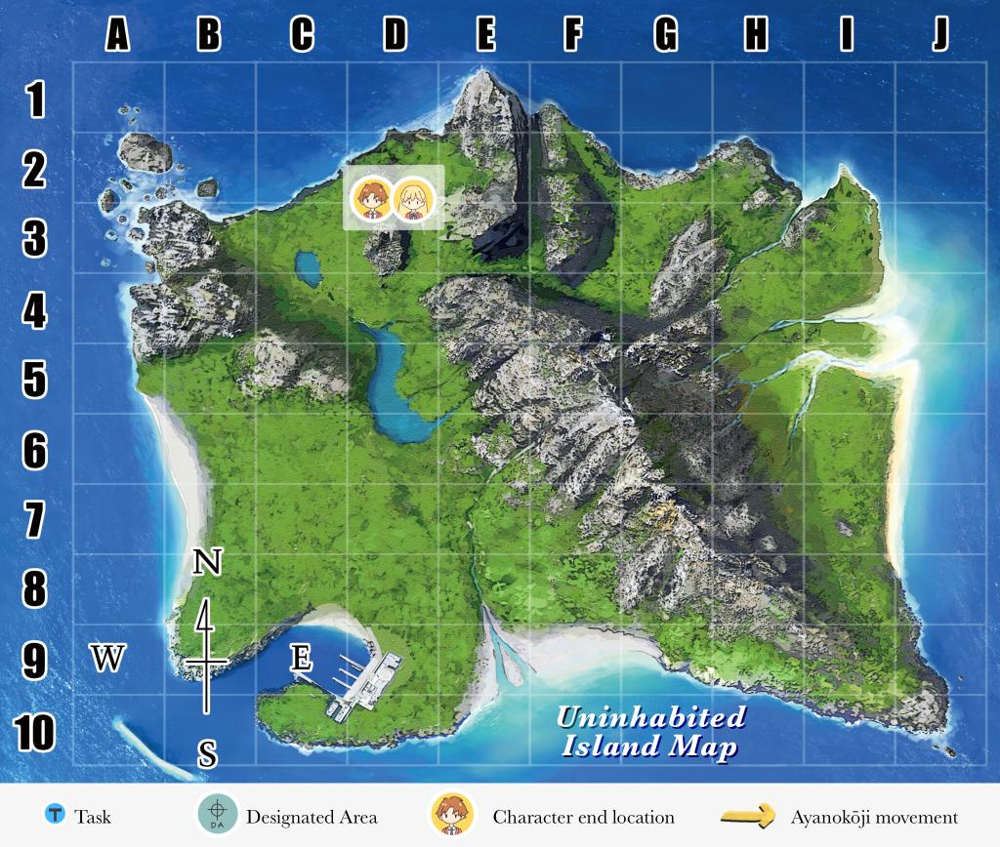
No estaba claro cuándo dejaría de llover exactamente, y seguía preocupado por Nanase entre otras cosas, pero a partir de mañana comenzaría la segunda parte del examen, y yo iba a luchar con una estrategia totalmente nueva en la mano.
SIMPLE Y ÚNICO SILENCIO
La fuerte lluvia duró hasta casi el amanecer, proyectando una gran sombra de ansiedad sobre los estudiantes.
Sin embargo, a las 6:00 AM, las nubes de lluvia se desvanecieron como si nunca hubieran existido en primer lugar, pintando el cielo con el mismo azul claro de los días anteriores. Sin embargo, el dosel del bosque era tan espeso que bloqueaba por completo la luz del sol en algunos lugares, dejando un suelo fangoso que tardaría en secarse.
—Tendré que ocuparme de la escasez de comida más pronto que tarde...
Poco a poco empezaba a quedarme sin energía, incapaz de mantener la ingesta calórica diaria necesaria para un estudiante de preparatoria. Como nunca me había sometido a un entrenamiento intencional de privación de alimentos, era la primera vez que experimentaba lo que era tener el estómago vacío durante un periodo de tiempo tan prolongado.
Aunque sería posible mantenerme activo mientras me mantuviera hidratado, no sería exactamente la mejor rutina en la que caer. Mi sistema inmunológico se resentiría y me dejaría susceptible a las enfermedades. Supongo que no sería imposible cazar animales salvajes o insectos, pero no tendría que llegar a eso a menos que no tuviera otra opción.
Podías comprar comida en la zona de inicio si aún te quedaban puntos de provisión, pero esa no era una solución eficaz a largo plazo, ni estaba disponible para mí.
En otras palabras, mi única opción real para conseguir más comida era obtenerla de las Tareas, ya sea quedando en lo más alto en las que la otorgaban, o consiguiéndola gratis de las que la tenían como premio de participación.
Sin embargo, las Tareas que proporcionaban comida seguirían siendo cada vez más competitivas a partir de ahora.
—Ya tengo todo empacado y listo para salir.
Habiendo terminado de ordenar el campamento improvisado, Nanase se acercó a mí con su mochila atada a la espalda.
—Lo más probable es que Amasawa-san se dirija a la siguiente zona designada, ¿verdad?
—Basándome en el número de puntos que hemos ganado, diría que es una apuesta segura. Así que si te da igual, ¿puedo seguir acompañándote hasta que lleguemos a la primera zona designada?
Asentí en silencio como respuesta. Puesto que ambos íbamos al mismo lugar, no había razón para que nos separáramos todavía.
Poco después de empezar a caminar, Nanase habló.
—Amasawa-san nos estaba siguiendo desde la tarde del sexto día o la mañana del séptimo, ¿verdad?
—Sin pensar demasiado en ello, probablemente es seguro asumir que se acercó a nosotros usando una búsqueda GPS en la mañana del séptimo.
Como no había forma de ver el historial de búsqueda, no había ninguna prueba concreta de que Amasawa hubiera utilizado la Búsqueda GPS. Sin embargo, si estaba claro que la puntuación del grupo había disminuido en algún momento en el transcurso del séptimo día, entonces al menos podíamos estar seguros de que alguien del grupo lo había utilizado.
Sin embargo, el grupo de Amasawa no formaba parte de los diez primeros ni de los últimos en ese momento, así que, como miembro del grupo, sólo Nanase habría estado al tanto de esa información.
—Naturalmente, ya he referenciado esto con los datos de mi tableta, pero...
por lo que recuerdo, nuestra puntuación no bajó en absoluto ayer.
En resumen, si la memoria de Nanase era de fiar, entonces Amasawa no había utilizado la búsqueda por GPS.
—Aunque no se sabe en qué parte de la isla estaba Amasawa-san esa mañana, tú y yo viajábamos bastante rápido en ese momento. No habría sido muy fácil para ella alcanzarnos a menos que ya estuviera en algún lugar cercano,
¿verdad?
—Probablemente por eso se le ocurrió un plan inteligente para ayudar a acortar la distancia.
A diferencia de nosotros dos, que llevábamos pesadas mochilas y equipo, Amasawa había viajado ligera. Por eso, aunque había empezado a una distancia considerable, era más que capaz de acortar la distancia entre nosotros.
—Supongo que utilizó algún tipo de truco para averiguar mi ubicación exacta.
—¿Estás diciendo que Amasawa-san hizo que alguien más revelara dónde estabas, Ayanokouji-senpai?
—Posiblemente.
Tal y como estaba la situación, era difícil estar absolutamente seguro de qué método había utilizado.
PARTE 1
— Aquí nos separamos, Senpai. Al menos por ahora.
Una vez que ambos ganamos un Bono de Llegada de un punto por cruzar el límite hacia el área E3, Nanase finalmente rompió el hielo.
—¿Cómo piensas reunirte con Amasawa y Housen?
La Búsqueda por GPS es una herramienta excelente para saber dónde se encuentran otras personas, pero no sirve para facilitar una reunión. Ése es un trabajo mucho más adecuado para una herramienta capaz de establecer una comunicación interpersonal directa, como un walkie-talkie.
—No puedo imaginar que me cruce con ellos vagando sin rumbo por la isla, pero tampoco es que pueda desperdiciar un montón de puntos buscándolos. En ese caso, empezaré usando el punto que acabo de obtener e intentaré perseguir sus señales de GPS. Si no puedo encontrarlos después de eso, supongo que viajaré a la siguiente zona designada.
Esto significaba que sin duda iba a adoptar un enfoque minimalista, buscando a Amasawa y Housen durante el tiempo de inactividad que tuviera entre zonas.
Pensé en pedirle que compartiera conmigo la ubicación de Amasawa antes de marcharse, pero como aún no había empezado con la búsqueda, decidí simplemente dejarlo pasar.
—Creo que será necesario que un estudiante de primer año como yo curiosee y averigüe lo que hacen los demás estudiantes de primer año. Si me entero de que algo malo está pasando, vendré corriendo a avisarte, Ayanokouji-senpai.
Aunque Nanase rebosaba de entusiasmo, temía que acabara perdida, dando vueltas sin rumbo.
—Pero no te excedas.
Con una respetuosa inclinación de cabeza y su tableta en la mano, Nanase se puso en marcha. Sería bueno que se reuniera con ellos pronto, pero todo dependería de cómo se comportaran los otros dos al avanzar.
Si estuvieran recorriendo consistentemente las áreas designadas, se acabaría con bastante rapidez, pero conociendo a esos dos, no sería sorprendente que ambos terminaran moviéndose erráticamente.
Tras ver cómo la figura de Nanase desaparecía en las profundidades del bosque, saqué mi tableta. Por fin volvía a estar solo, y con ello podía empezar oficialmente con la segunda parte del examen.
—No hay tareas cerca, ¿eh?
Había una a unos cuatrocientos metros de aquí, pero hacía ya más de veinte minutos que se había abierto la inscripción, lo que se convertiría en treinta y cinco minutos dado que me llevaría quince o más solo llegar hasta allí. Además, sólo podrían participar cinco grupos.
Al final, decidí que ir tras esta tarea no sería muy práctico, así que opté por tomarme un descanso. Me sentaré y esperaré a que se anuncie la siguiente zona designada para que, cuando mis fuerzas estén totalmente recuperadas, esté listo para levantarme y entrar en acción.
Cuando el reloj marcó las 9 de la mañana, cogí mi tableta y me preparé para lo que vendría. Si me dirigía a la zona designada o me dirigía a una tarea, todo dependía de dónde se presentara la siguiente zona. Comprobé rápidamente mi tableta y descubrí que se trataba de la designación aleatoria del día.
La zona en cuestión era el área E6, tres áreas al sur de aquí, que en realidad no estaba tan lejos, teniendo en cuenta el hecho de que había sido designada al azar.
Empecé a caminar inmediatamente, pero mantuve los ojos pegados a mi tableta mientras lo hacía.
Después de inspeccionar cada una de las Tareas que también habían aparecido con el paso del tiempo, decidí mi curso de acción.
Para ganar tantos puntos como fuera posible en el tiempo que me quedaba hoy, tenía que ser eficiente.
Para ello, es fundamental que haga todo lo que esté en mi mano para descartar la influencia de la suerte.
PARTE 2
Poco antes de las 16:00. Acababa de terminar con una Tarea en la que participé y estaba a punto de despedirme del lugar.
—¿Ayanokouji-kun?
En ese momento, me crucé con Horikita por primera vez desde que nos separamos al inicio del examen.
Aunque se veía un poco sorprendida de verme, no pareció especialmente cansada.
—Han pasado ocho días, ¿eh?
—Así es.
Nos encontrábamos en el área F7, reunidos una vez más desde nuestra última conversación el primer día del examen.
—¿Has venido por la Tarea, o simplemente estás de paso? ¿A dónde te diriges después de esto, Horikita?
—Me dirijo a G8. Terminé pasando por aquí en el camino. ¿Y tú?
Por lo visto, la zona a la que se dirigía estaba justo al lado de la mía.
—F8. Parece que vamos a ir en la misma dirección general.
Como sería una pérdida de tiempo quedarse aquí hablando, los dos nos pusimos inmediatamente en marcha juntos, sin decir ni una palabra más.
Viajar juntos parecía la mejor manera de hacerlo, dado que íbamos a tomar la misma ruta en su mayor parte.
—Estás en mejor forma de lo que esperaba. Y por su aspecto... supongo que sigues sola.
—Sí, lo estoy. Es problemático en muchos sentidos, pero estar sola también tiende a facilitar muchas cosas.
Era cierto que, al estar solo, no tenías que preocuparte de cuidar a los demás ni de igualar su ritmo.
Sin embargo, durante todo el examen hasta ahora, el nombre de Horikita nunca ha aparecido entre los diez últimos. Aunque eso era una prueba decente de que le iba bien en términos de puntos, era extraño que no pareciera cansada en absoluto.
—¿Es realmente tan difícil para ti creer que todavía estoy en tan buena forma?
—La mayoría de los estudiantes con los que me he cruzado parecían terriblemente cansados.
—Hmm. ¿Ha pasado algo inusual?
—¿Inusual? Ah... ahora que lo mencionas, ¿te has enterado de lo que pasó con Shinohara?
—Sí. Para ser exactos, me enteré hoy. A la luz de eso, me alegro de haberme encontrado contigo.
Según parece, la cosa había sido así: alguien de la clase 2-A se puso en contacto con Horikita mientras estaba cerca de la zona de salida hoy mismo, y la instaron a reunirse con Sakayanagi, quien le informó de la retirada de Komiya y Kinoshita.
Después, Sakayanagi le habló de la estrategia que le propuse el quinto día y ambas empezaron a negociar.
—No te negaste a colaborar, ¿verdad?
—No tenía ninguna razón para hacerlo; tengo que evitar que expulsen a Shinohara-san de la escuela. Escuché que fuiste uno de los primeros en llegar a la escena en ese momento, ¿sabes los detalles de lo que pasó?
—No, en realidad no. Creo que pudo ser tanto un incidente como un accidente.
Le expliqué lo que sabía como alguien que había visto de cerca la mencionada escena del crimen.
Por supuesto, me guardé ciertas cosas, como el hecho de que Amasawa había estado observando desde las sombras.
—La clasificación del grupo de Shinohara-san ha ido bajando cada día más. Actualmente, está colocada en el séptimo lugar desde el fondo. A este ritmo, creo que caerá lo suficiente como para ser expulsada al final del día de hoy, así que tenemos que darnos prisa. En el peor de los casos, si no podemos encontrar otro grupo para que se una, tomaré el asunto en mis manos. Antes de
encontrarme contigo, tuve la suerte de conseguir el primer puesto en una tarea que me recompensó con tres plazas adicionales en mi grupo.
Esto era una buena noticia. Las Tareas que aumentaban el tamaño máximo del grupo eran bastante escasas, y además muy codiciadas.
Conseguir el primer puesto en una Tarea tan disputada no podía ser fácil.
—Pero si las cosas son así, entonces sólo tú y Shinohara se llevarán todos los puntos. Si es posible, espero que nuestra colaboración con Sakayanagi vaya bien para que puedas fusionarte con un grupo que lo haga mejor para nosotros.
Horikita asintió con la cabeza.
—En cualquier caso, en estos últimos ocho días que he estado recorriendo la isla, me he dado cuenta de que hay muchos más grupos con walkie-talkies de los que preveía. He visto a estudiantes haciendo uso de ellos por todas partes, Sakayanagi-san contando a sus compañeros lo que le pasó a Shinohara-san es sólo un ejemplo de ello.
—Parece una tendencia especialmente fuerte entre las clases superiores, que son capaces de tomar las riendas y les sobran los puntos. Los walkie-talkies te permiten intercambiar información a larga distancia, así que dependiendo de lo bien que lo utilices, podría merecer la pena gastar tal cantidad de puntos.
—Si confiáramos un poco más entre nosotros, me pregunto... si podríamos haber hecho eso también...
Horikita frunció ligeramente los labios, tal vez encontrando la noción bastante difícil de imaginar, a pesar de haberla mencionado.
—Aunque los walkie-talkies son indudablemente útiles, eso no significa necesariamente que hagan mucho por nosotros. Sería un desperdicio si no hiciéramos nada con ellos.
—Eso es bastante cierto.
Saqué mi tableta para ver si habían aparecido nuevas Tareas, sólo para encontrar que una Tarea sin riesgo y sin complicaciones que daba comida como premio de participación apareció no muy lejos de nuestra ubicación actual.
Además, había espacio para que se inscribieran en ella hasta quince grupos.
Sin embargo, sólo daba un punto a todos los grupos por participar, así que no era muy atractiva en cuanto a puntos.
—Me estoy quedando sin comida, así que creo que me gustaría pasarme por esta tarea. ¿Y tú, Horikita?
Si tenía la vista puesta en el Bono Madrugador de su área designada, entonces sería mejor que siguiera adelante sin pestañear.
—A mí tampoco me queda mucha comida, así que también me pasaré por la Tarea.
Como nuestras prioridades eran idénticas, decidimos cambiar de rumbo y seguimos camino a la Tarea. Aunque la Tarea en sí era una bendición, participar en ella sería muy competitivo.
Horikita y yo empezamos a acelerar el paso mientras nos apresurábamos hacia el lugar de la Tarea. Por el camino, empezamos a ver poco a poco a otros grupos. Desde los de primer año, pasando por los de tercero, hasta los de segundo, todos parecían tener la vista puesta en el mismo destino, dado que todos se movían en la misma dirección que nosotros. De hecho, la mayoría echó a correr en cuanto se dieron cuenta de que estaban rodeados por la competencia directa.
—Horikita, no necesitas preocuparte por mí. Ve y apresúrate al lugar de la tarea.
—Mira quién habla. Si realmente te has quedado sin comida, entonces tú mismo deberías estar un poco más presionado.
—Simplemente no tengo la energía para correr más.
—Y yo estoy en la misma situación.
A pesar de las prisas, daba la impresión de que su postura respecto al derroche de energía era la misma que la mía.
Estaba sola y, sin embargo, estaba claro que actuaba con cierto grado de flexibilidad, marcando metódicamente el ritmo mientras abordaba el examen de la isla deshabitada.
Poco después, llegamos al lugar de la tarea justo a tiempo para participar, y ambos decidimos tomarnos un tiempo para mezclarnos con algunos de nuestros compañeros que hacía tiempo que no veíamos. Después de todo, aunque nos apresuráramos a ir a nuestras zonas designadas desde aquí, seguramente llegaríamos demasiado tarde para poder optar a las bonificaciones de Madrugador. Siendo así, sería mejor buscar el intercambio de información hasta el último minuto para poder aprovechar al máximo el resto del examen.
Además, muchos de nuestros compañeros aún no sabían en qué situación se encontraba Shinohara.
Más tarde, una vez terminado el examen del día, hice un recuento de mi puntuación. Obtuve 4 puntos por las bonificaciones de llegada y 14 puntos por participar en cuatro tareas diferentes, para un total de 18. Con ello, mi puntuación total ascendió a 96, el puesto 23 de la clasificación.
En general, me dio la impresión de que los grupos habían sido más activos hoy que en la quinta o sexta jornada. Sin embargo, como también había grupos que, en su mayoría, no habían estado activos para nada, se había trazado una clara línea entre los que buscaban conservar su resistencia y los que no.
El octavo día, que por otra parte esperaba que se convirtiera en una feroz batalla, no había sido tan malo al final. Tampoco hubo cambios significativos en las puntuaciones de los diez primeros, ya que el grupo de Kuronaga seguía en el décimo lugar con un total de 111 puntos.
Mañana, mi objetivo era mantener un rango ideal y, si era posible, reunirme con Sakayanagi una vez más.
Esa noche me dormí con la esperanza de que las próximas zonas designadas me llevaran hacia la zona de salida.
LA LUCHA CONTRA LA SOLEDAD
Después de quitarme las telarañas que se habían enredado en mi ropa, me quité lentamente la mochila y la dejé en el suelo.
El Examen de la Isla Deshabitada entró en su noveno día, y hacía tanto calor y humedad como siempre.
Cuando llegué a la cuarta zona designada, ya respiraba con dificultad.
De un modo u otro, logré llegar a mi destino, tal como estaba previsto.
El sudor de mi frente empezó a bajar lentamente por el puente de la nariz, así que me lo limpié con la manga de mi camiseta.
El área D5, la zona designada revelada a las 15:00 horas, había quedado a una distancia considerable de la anterior área H9. Me había costado mucho esfuerzo llegar en el tiempo previsto.
De hecho, incluso me había topado con una tarea decente por el camino, pero opté por renunciar a ella para minimizar el riesgo de acumular una penalización.
Aunque el viaje me llevó casi dos horas enteras, no parecía que muchos otros grupos hubieran llegado todavía, ya que había conseguido la bonificación por ser el tercer clasificado.
No estaba insatisfecho con mi progreso en su mayor parte, pero todavía no había podido volver a la zona de salida y reunirme con Sakayanagi.
Sería un desperdicio de energía si me obligaba a ir allí ahora, y no quería esforzarme demasiado. Hoy me había cruzado con varios estudiantes de la clase 2-A a lo largo del día, pero por desgracia, ninguno de ellos tenía walkie-talkies. Pensé en si debía arriesgarme e ir allí mañana por la mañana, pero...
bueno, eso complicaría bastante las cosas.
Después de decidir dejar de lado por el momento toda la situación con Sakayanagi, seguí adelante y eché un vistazo a todo lo que había pasado hoy.
―Así que con todos los puntos que gané hoy, subí mi puntaje total a 112,
¿eh?
El grupo de Kuronaga, que había mantenido su 10º puesto, tenía una puntuación global de 123 puntos, apenas 11 puntos por delante de mí, que había subido al 13º puesto. Dado que pronto serían las 17:00, lo más probable es que esta diferencia de 11 puntos terminara por hoy.
Mi objetivo era alcanzar el 11º puesto, pero una diferencia de 11 puntos parecía estar dentro de mi rango de tolerancia. Aunque se produjo con un ligero retraso debido a lo sucedido con Nanase y a la mala racha meteorológica, finalmente me había asegurado la posición estratégica a la que había aspirado desde el principio.
Así es, había estado buscando el 11º lugar desde antes de que comenzara el examen especial de la isla deshabitada. Actualmente estaba en el 13º lugar, que era un poco más bajo, pero eso no era lo importante aquí. Más bien, sólo tenía que asegurarme de una cosa: que no subiera al décimo puesto.
Para estar en el podio de los ganadores, había que trabajar para acumular puntos. Sin embargo, independientemente de que estuvieras solo o en un grupo de siete personas mediante el uso de la tarjeta "Más gente", al formar parte de los diez primeros puestos públicamente visibles, inevitablemente acabarías llamando la atención, aunque no lo quisieras.
Y al llamar la atención, tus rivales desconfiarían de ti, y tendrías que afrontar el riesgo de ser saboteado antes del final del examen.
Para evitarlo y seguir aspirando a un puesto destacado, el 11º lugar era la posición más idónea. Dicho esto, esta estrategia tenía algunos inconvenientes.
Dada la naturaleza del examen, mantener el control de tu puntuación puede ser bastante difícil. Por lo tanto, si no vigilas de cerca tus resultados, es posible que el nombre de tu grupo aparezca inadvertidamente en las tablas de clasificación, aunque sólo sea por un momento. Y si eso ocurriera, toda la estrategia sería inútil.
Además, un inconveniente todavía mayor es el hecho de que depende en gran medida de la puntuación del grupo que ocupa el 10º puesto. Cuanto menor sea la diferencia entre el 10º y el 1º puesto, más fácil será la remontada. Sin embargo, si la diferencia es más grande, será cada vez más difícil dar la vuelta a la situación, ya que habrá que ganar un mayor número de puntos para recuperar el terreno perdido.
Por esa misma razón, es importante que los grupos superiores se esfuercen por impedir activamente el progreso de los demás.
Pero... eso ha ocurrido menos de lo previsto. Tanto es así, que algunos grupos se han dejado llevar por la ventaja.
Afortunadamente, la ausencia de presión por parte de los de primer y tercer año significaba que los de segundo tenían una relativa ventaja, aunque eso no significaba exactamente mucho dados todos los demás inconvenientes. Para que los grupos interfirieran entre sí, tendrían que sacrificar su capacidad de ganar puntos, así que sería difícil poner algo en marcha a menos que ya tuvieras un número considerable de puntos disponibles.
Tenía curiosidad por saber qué iba a hacer Nagumo en el futuro. Parecía que sería una buena idea que adoptara algún tipo de contramedidas para hacer frente a Koenji, su principal competidor por el primer puesto. Sin embargo, por lo que vi durante mis anteriores búsquedas por GPS, no hubo ningún indicio de que tuviera algún plan para interferir en este momento. Es posible que, en lugar de eso, simplemente estuviera volcando su energía en conseguir puntos en este momento, pero...
―Con la forma en que van las cosas, incluso si no gano, no tendré ninguna queja mientras Koenji tome el primer o segundo lugar.
Quedando en el undécimo puesto o en torno a él, no llamaría mucho la atención.
E incluso si mi progreso se viera obstaculizado por el sabotaje de Amasawa o de alguno de los otros estudiantes de primer año, no tendría que preocuparme por caer hasta el fondo de la clasificación.
Todo lo que tengo que hacer en este momento es mantener una posición alta hasta el final del duodécimo día de examen.
Me tomé un merecido descanso a la sombra de un árbol cercano y, una vez que el sudor se desvaneció de mi frente, me puse la mochila y me puse en marcha, en dirección al área vecina.
En lugar de acampar justo en la frontera, quería encontrar un lugar agradable y abierto situado un poco más lejos.
Justo cuando el sol empezaba a ponerse y tenía que decidir dónde acamparía por la noche, vi una tienda de campaña aislada, de una sola persona, montada en un claro no muy lejos de mí. La entrada estaba cerrada con un cierre a pesar del calor sofocante, así que no parecía que su dueño estuviera descansando dentro. Tal vez estuvieran explorando los alrededores, o incluso yendo al baño.
―Qué bonito lugar.
Es difícil encontrar un lugar tan plano y abierto en esta zona del bosque.
Me facilitaría mucho las cosas personalmente si pudiera montar mi tienda en algún lugar de por aquí.
Sin embargo, comparado con cuando me acompañaba Nanase, actualmente era un chico que viajaba solo.
Por lo tanto, si el dueño de esta tienda era una chica, mi presencia podría llevar a problemas involuntarios si no confiaban en mí para que estuviera aquí.
Además, fuera quien fuera, no sabía qué pensar del hecho de que fuera una tienda individual.
¿Actuaban por separado del resto de su grupo, o habían estado solos desde el principio?
Si era esto último, entonces era casi seguro que fuera alguien conocido por mí.
En este punto, al menos quería averiguar su identidad, independientemente de si acababa montando mi tienda aquí o no.
Decidí quedarme un rato para ver si el dueño aparecía.
Si estaban dando un paseo, deberían volver antes de la puesta de sol. Y, si había ruidos procedentes del interior de la tienda, podría llamarlos.
Era plenamente consciente de que sería más eficaz intentar llamarlo ahora, pero... bueno... ya te haces una idea. Esperé unos diez minutos después de eso, pero no había señales ni sonidos de nadie. Cuanto más esperaba, más posible me parecía que simplemente se hubieran acostado temprano.
Y como no tenía ninguna razón para creer que alguien más iba a aparecer buscando hacer uso de la zona de acampada, finalmente me decidí y llamé desde el lado de la tienda.
―¿Hay alguien ahí?
Contuve la respiración durante unos segundos y escuché atentamente en busca de algún tipo de reacción, pero todo estaba en perfecto silencio.
―Lo siento, pero me gustaría montar mi tienda cerca. Por favor, avísame si tienes algún problema con eso.
Pasé por la formalidad de pedir permiso y, tras llegar a la conclusión de que realmente no había nadie dentro, bajé mi mochila al suelo.
Eso sí, después de haberme distanciado convenientemente de su tienda, por supuesto. Aunque seguía sintiendo cierta curiosidad por saber con quién estaba compartiendo el campamento, terminé rápidamente de montar mi propia tienda.
Una y otra vez, me había impresionado lo fácil que era montar esta tienda de campaña en comparación con la utilizada durante el examen de la isla deshabitada del año pasado. Y eso no era lo único. También era agradable tener una tienda de campaña para mí solo sin tener que preocuparme por compartir el espacio con otra persona.
Aunque, esta forma introvertida de pensar puede ser la razón por la que mis amigos eran tan pocos y distantes.
Una persona alegre y risueña probablemente diría que dormir en una tienda de campaña sin otras personas sería aburrido.
No pude evitar preguntarme si llegaría un día en el que yo también pensara así.
―...Realmente no puedo imaginarlo.
Era un futuro que probablemente nunca llegará.
―Me pareció escuchar a algún bicho raro aparecer, pero pensar que eras tú de entre todos.
Justo cuando estaba ordenando mi muda de ropa para mañana, una voz me llamó desde atrás.
Al parecer, la dueña de la tienda de campaña solitaria que había al otro lado del camino no era otra que Ibuki.
―¿Hice demasiado ruido?
―La verdad es que no.
Su respuesta fue breve, e inmediatamente la acompañó de una mirada penetrante. Pensé que diría algo más, pero al instante volvió a entrar en su tienda. Sintiendo que algo estaba fuera de lugar, decidí ir a ver qué estaba haciendo.
―¿Tienes un minuto?
La llamé desde fuera de su tienda, pero me ignoró. Lo único que pude escuchar fue un ruido débil e indistinto que provenía del interior.
―Me gustaría preguntarte algo.
Intenté llamarla de nuevo, pero siguió negándose a responder. Al principio pensé que simplemente me estaba ignorando, pero tras una inspección más detallada, parecía que en realidad estaba tramando algo ahí dentro.
―Voy a abrir la solapa, ¿de acuerdo?
Para asegurarme, esperé unos treinta segundos antes de abrir la entrada de su tienda.
―...¿Qué quieres?
Al mirar dentro, me encontré con la visión de una Ibuki sentada y que parecía estar masticando algo.
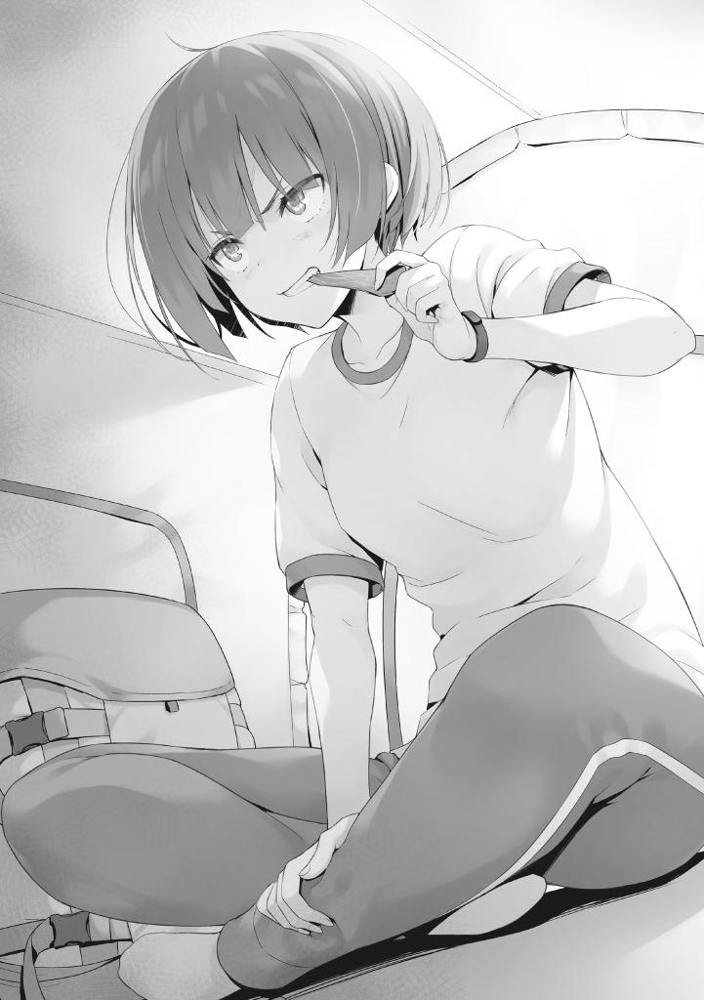
―Estás realmente... Espera, no, ¿qué estás comiendo?
―Carne seca.
―¿Carne seca...? ¿Aunque eso no estaba incluido en el Manual de la Isla Deshabitada que nos entregaron antes del examen?
En otras palabras, consiguió carne fresca de alguna manera, tal vez comprándola, y la secó hasta convertirla en cecina ella misma.
Sin embargo, le costaría mucho tiempo y esfuerzo hacer la cecina ella sola.
Cuando comenzó el examen, había empezado provocando a Horikita antes de dirigirse inmediatamente a la primera zona designada. Si hubiera llevado carne cruda en aquel entonces, ni que decir tiene que se habría estropeado en pocas horas con este calor abrasador.
Teniendo eso en cuenta, tenía más sentido pensar que esto era parte de una estrategia en la que estaba metida toda la Clase 2-B.
Podía imaginar que algún grupo de la clase 2-B se encargó de hacer una gran cantidad de cecina para el resto de la clase.
Sólo sería posible porque era rentable y barato para las finanzas. Por muy portátil que fuera, comprar directamente alimentos prefabricados de larga duración, como carnes secas, no sería muy práctico desde el punto de vista de la rentabilidad, debido a los altos precios que la escuela cobraría por ellos. Así que, en lugar de comprar el resultado procesado, podrías obtener más beneficios por tu dinero haciendo el esfuerzo de hacer tu propia cecina con carne cruda.
No había visto cómo era la situación alimentaria de Ryuuen cuando me crucé con él, pero era seguro asumir que también llevaba raciones de emergencia, cecina en particular. Aunque no podía hacer daño, los estudiantes de la Clase 2-B podían mirar más allá de las Tareas altamente competitivas que suministraban comida a los participantes.
―Qué te importa? No es asunto tuyo.
Podía quedarme pensando en esto todo lo que quisiera, pero no era que fuera a escuchar la verdad de ella pronto.
En cualquier caso─ hasta donde sabía, hasta el momento el nombre de Ibuki no había aparecido en los diez últimos grupos, a pesar de que estaba participando en el examen ella sola. Había conseguido mantener una puntuación algo decente.
Para Ibuki, ocupar un lugar destacado en una tarea centrada en la capacidad académica sería una causa perdida.
En ese caso, su principal fuente de ingresos debía ser los bonos de llegada y los bonos de Madrugador que se obtienen al viajar a las áreas designadas, y fuera de eso, se vería limitada a las tareas que ponían a prueba nuestras habilidades deportivas.
Como resultado, inevitablemente se desgastaría a un ritmo más rápido que otros estudiantes.
Cualquiera que tuviera ojos podía ver el estrés físico y mental al que la habían sometido.
De hecho, era muy posible que ya hubiera superado su límite.
―¿Con cuántas personas has hablado desde que empezó el examen?
―¿Qué...?
No parecía que hubiera dormido muy bien, ya que podía ver cómo se formaban unas débiles ojeras bajo sus ojos.
―...Sólo Horikita. Me oíste decir que no perdería contra ella, ¿verdad? Tú estabas allí.
―En otras palabras, ¿estás diciendo que no has tenido una conversación decente con alguien desde el primer día?
En el mejor de los casos, probablemente sólo había abierto la boca para responder a preguntas de sí o no durante el proceso de registro de la tarea.
―Deberías intentar encontrar a alguien con quien hablar, aunque sea un poco.
―De ninguna manera voy a hablar con mis enemigos.
―Entonces habla con un compañero de clase. Si vagas lo suficiente, seguro que te encuentras con alguien.
―No considero a mis compañeros de clase como 'amigos'.
Su estado actual es el resultado de haberse cerrado al mundo exterior, escondiéndose en su caparazón. Y pensar que ya llevaba nueve días así, y aún le quedaban cinco más para el final del examen.
Si el hilo que mantenía unida a Ibuki se rompiera, lo más probable es que todo se desmoronara a su alrededor.
Y, como alumna solitaria, si se le obligaba a retirarse del examen, su expulsión sería casi definitiva.
Sin embargo, este examen especial era tal que, en la medida de lo posible, no se quería dejar expulsar a grupos de su propio curso. Para ello, sería ideal que Ibuki pudiera dedicar un día a descansar y recuperarse. Si pudiera pasar un día completo tomándoselo con calma, sería suficiente para que recuperara la mayor parte de su energía. Teniendo en cuenta el tipo de persona que es, no sería imposible para ella superar los cuatro días restantes del examen en ese momento.
Pero la realidad no era tan misericordiosa. Por muy fácil que parezca, tomarse un día libre del examen sería increíblemente difícil.
Y, aunque se obligara a tomar un descanso, no se sabía si su estado mental mejoraría o no.
Mientras descansaba, sus rivales estarían acumulando puntos, lo que le pondría en riesgo no sólo de ser superado, sino que posiblemente le haría caer hasta el último puesto.
Sería imposible para una persona normal sentarse y vaciar su mente mientras el resto del mundo seguía con el examen sin ellos.
Además, faltar a las cuatro áreas designadas de un día conllevaría una penalización, cuyos efectos de ramificación sólo harían que los días siguientes fueran mucho más extenuantes.
―Sal ya.
―...De acuerdo.
Aunque fuera Ibuki, seguía siendo una chica.
Con el sol hundiéndose cada vez más bajo el horizonte, no sería exactamente apropiado que un chico estuviera mirando dentro de la tienda de una chica solitaria como esta.
Aunque Ryuuen estuviera aquí ahora mismo, tenía mis dudas de que ni siquiera él fuera capaz de resolver su problema.
Tras salir de la tienda de Ibuki, volví a ordenar mi ropa.
Hoy fue un día con bastante viento, así que esperaba que fuera una noche relativamente fresca.
―Oye.
Justo cuando llegué a un punto de descanso decente con lo que estaba haciendo, Ibuki salió de su tienda.
Se tambaleó un poco al ponerse en pie, trastabillando de forma algo azarosa, pero pronto recuperó la orientación.
Y entonces, con las manos en los bolsillos, empezó a caminar hacia mí.
―¿Cuántos puntos tienes ahora mismo?
Por fin salió de su tienda, para luego preguntarme algo sorprendentemente atrevido.
―Somos enemigos, lo sabes, ¿verdad?
―Así que no me lo vas a decir.
En voz baja, murmuró algo que sonó como la palabra "tacaño", pero todavía no tenía intención de divulgar esa información.
Podía decirle que estaba en el puesto 13, pero no había ninguna persona en esta isla desierta que se beneficiara de ello.
―Así son las cosas.
―Entonces, al menos dime si estás más arriba o más abajo que yo.
Actualmente tengo─
Justo cuando Ibuki estaba a punto de revelar voluntariamente su puntuación, extendí la mano para detenerla.
―Lo siento, pero no voy a responder a tu pregunta, independientemente de la forma en que la plantees.
Decirle simplemente si mi puntuación era más alta o más baja no sería diferente de darle una pista, y lo mismo ocurría con mentirle al respecto.
Puede parecer que no hay ningún riesgo en decir que mi puntuación es inferior a la de ella, pero si la gente se entera de que estoy luchando por conseguir puntos, existe la posibilidad de que alguien intente forzarme a una situación desesperada para expulsarme. Pasara lo que pasara, tenía que evitar que cualquier información sobre mí cobrara vida propia.
Ibuki chasqueó la lengua, con las manos aún en los bolsillos.
―...Da igual. De todos modos, era una pérdida de tiempo molestarse en preguntarte.
―Me parece justo. Además, tu verdadero objetivo aquí es Horikita,
¿verdad?
Tan pronto como el nombre de Horikita cruzó mis labios, el cansado y apático comportamiento de Ibuki cambió drásticamente.
Sacó la mano del bolsillo y me presentó el dedo corazón con el ceño fruncido.
―La próxima vez que veas a esa zorra, hazme un favor y dile que jamás perderé contra ella.
―Eso está bien y todo, pero probablemente no sea yo a quien debas dedicar el dedo medio.
―Tú, ella, la misma diferencia. Después de todo, ustedes dos están en muy buenos términos.
No, no lo estamos.
Estaba completamente fuera de lugar, pero desde su perspectiva, probablemente parecía que Horikita y yo nos tratábamos así.
Por lo visto, no tenía nada más que decirme, ya que empezó a caminar hacia su tienda sin decir nada más.
―Espera un momento.
Le grité mientras iba tras ella, sólo para que mirara hacia atrás justo cuando estaba tratando de agarrar su brazo.
Ya estaba más que recelosa de mí, pero al ver lo que estaba haciendo, esa cautela se incrementó al máximo, ya que se movió instantáneamente para evitar mi mano.
―¿Haaa? ¿Intentas hacer algo?
Apretó los puños mientras hablaba. Daba la impresión de que interpretó mis acciones como un intento de pelear con ella.
―Esa no era mi intención para nada, pero─
Dejando mi frase sin terminar, extendí el brazo por segunda vez y, sin darle oportunidad de escapar, la agarré rápidamente de la muñeca.
―¡¿Qué demonios estás haciendo?!
Envió una patada volando hacia mí con pánico, lo que me llevó a bloquear su pie con mi mano libre. Esperaba que lo intentara de nuevo, pero en su lugar dejó escapar un suspiro de resignación y desvió la mirada.
―Admito que no puedo vencerte, claro, pero un día de estos, te juro que voy a tener la satisfacción de patearte los dientes.
Personalmente, preferiría que no se pusiera una meta tan inquietante.
―¿Entonces? ¿Horikita te puso en esto? ¿Intenta meterse en mi camino?
No sólo no entendía mis verdaderas intenciones al agarrar su muñeca, sino que sus extrañas sospechas la habían llevado a una conclusión aún más extraña.
Al ser uno de los compañeros de Horikita, no parecía que hubiera forma de que mis palabras llegaran a ella.
Pensando en ello con lógica, las probabilidades de conseguir que Ibuki se tomara un descanso voluntariamente habían sido minúsculas desde el principio.
―Tu pulso está acelerado.
―¿Ah?
―El interior de tu boca también parece seco, por no hablar de lo agrietados que están tus labios. Obviamente estás deshidratada.
Con la forma en que las cosas iban, no sería muy sorprendente si su primera Alerta de Advertencia fuera a sonar pronto.
En realidad, era muy posible que ya se hubiera disparado.
La razón por la que había estado sentada pasivamente dentro de su tienda no era sólo que estuviera cansada, sino que había estado tratando de evitar que se disparara una alerta debido a su ritmo cardíaco anormal.
―Ya no tengo tanta sed...
―¿Ya no? Entonces, ¿dices que en algún momento tuviste sed?
Solté la muñeca de Ibuki e inmediatamente se distanció de mí con una mirada abiertamente hostil.
―Métete en tus asuntos. No hay nada malo en mí.
Con eso, me dio la espalda una vez más, pero enseguida la perseguí y llegué a su tienda un paso antes que ella.
―Espera, ¿qué? ¡Qué estás haciendo!
No iba a escucharme por muy claramente que se lo explicara, así que entré en su tienda y saqué su mochila.
―Enséñame lo que hay dentro.
―¿¡Haaa!? De ninguna manera voy a mostrarle a un tipo. No, tampoco lo haría a una chica.
―Me parece justo.
Como no me iba a dar permiso, simplemente lo abrí sin él.
―¡Eh! ¡Dije que no!
Dentro de su mochila, había ropa, accesorios y un poco de comida como cecina.
Aparte de eso, había una botella de agua de plástico de 500 ml, pero ya estaba vacía.
Como la escuela había colocado contenedores de basura en ciertos lugares, como los sitios de las tareas, ya debería haber tirado todo lo que no necesitaba a estas alturas. Sin embargo, no había ni una sola gota de agua en el interior de la botella de plástico, lo que indicaba que había estado vacía de su contenido durante bastante tiempo.
Además, no parecía tener un walkie-talkie o cualquier otra forma de dispositivo de comunicación.
―¿Cuánto tiempo llevas sin agua?
―No tengo que decirte nada─
―Dije, ¿cuánto tiempo has estado sin agua?
Volví a formular mi pregunta, esta vez con un tono más fuerte y una mirada rígida e implacable.
―...Un día entero... y algo más.
―¿Así que sólo has estado caminando sin agua de esta manera?
―No. He estado descansando aquí todo el día.
―Qué mentira tan obvia. No había señales de GPS cerca de aquí esta mañana.
―¿Hiciste una búsqueda por GPS?
Por supuesto que no lo había hecho. Me estaba tirando un farol. Sin embargo, no creí que Ibuki me reclamara por ello.
Después de todo, con lo desesperada que estaba por derrotar a Horikita, no podía imaginar que eligiera voluntariamente tomarse un descanso.
―¿Ya ha saltado tu primera Alerta de Advertencia?
―...Lo hizo hace una hora. Por eso decidí, a regañadientes, irme a dormir temprano.
Las Alertas de Advertencia funcionaban con un sistema en el que sólo dejaban de sonar cuando la anomalía detectada dejaba de producirse.
Y entonces, si la misma anomalía volvía a aparecer más tarde, te encontrabas con una nueva Alerta de Advertencia en lugar de que se convirtiera en una Alerta de Emergencia.
―Si no te rehidratas en algún momento, seguirá sonando aunque descanses.
Si no conseguía controlar su acelerado ritmo cardíaco, pronto llegaría una Alerta de Emergencia.
Para cuando llegara eso, probablemente estaría aún más deshidratada, hasta el punto de que si le hicieran un chequeo médico, no podría evitar que la condenaran al retiro.
―Yo me encargaré mañana, y si se da el caso, incluso volveré a la zona de salida, así que olvídate y déjame en paz.
―Hay más de dos kilómetros desde aquí hasta la zona de salida. Si te derrumbas en el camino, todo habrá terminado.
―Entonces haré una Tarea cercana o algo así.
―Pero no puedes hacer eso, ¿verdad? Si no, no estarías en el estado en el que estás ahora.
La única forma de apaciguar la irracionalidad de Ibuki era presentar mi propia lógica.
Fui a buscar mi mochila en mi tienda de campaña y saqué dos botellas de agua de plástico de 500 ml que había conseguido en Tareas hoy mismo.
―Cambio.
―¿Qué?
―Resulta que me estoy quedando sin comida. Por otro lado, tengo un poco de exceso de agua. Te pido que negocies conmigo ya que creo que podemos hacer un intercambio justo.
Ibuki tragó audiblemente mientras miraba el agua prístina que contenía la botella de plástico, por muy caliente que estuviera.
―¿Qué te parece? Lo diré de nuevo para estar seguro, pero quiero hacer un intercambio justo. Tendrás que darme una cantidad adecuada de comida a cambio.
―¿Quién demonios te crees que eres─
―Siéntete libre de decir que no, pero no te daré la oportunidad de cambiar de opinión.
Mantuve una actitud firme e inflexible, e Ibuki guardó silencio.
―Si te retiras así por deshidratación, definitivamente perderás contra Horikita. De hecho, me encontré con Horikita hace un rato. Su complexión estaba perfectamente bien, y tampoco parecía tener problemas con el agua o la comida.
En lugar de enfatizar la inminente amenaza de expulsión, dejé caer el nombre de Horikita, la palabra más efectiva para incitar a Ibuki a actuar.
―Lo entiendo... Comerciaré contigo. Pero, ¿cuánto quieres de mí?
Con lo que tenía disponible ahora, Ibuki se quedaría sin comida en poco menos de dos días.
Sin embargo, si pidiera sólo unas escasas migajas, no sería exactamente un intercambio justo, ¿verdad?
―La mitad de tu comida restante. Eso debería ser suficiente.
―¿Sólo eso?
―Al menos es mejor que mantenerme comiendo hierbas silvestres.
Así de fácil, finalizamos el intercambio y cambiamos la comida por agua.
En cuanto Ibuki tuvo una de las botellas en la mano, le quitó el tapón y se bebió la mitad de una sola vez. Normalmente, le habría dicho que intentara conservarla, pero teniendo en cuenta que ya sufría de deshidratación, me pareció mejor que se hidratara cuanto antes.
Al parecer, no le gustó que viera esta faceta de ella, ya que su habitual mirada afilada y punzante regresó rápidamente.
Aunque su condición física mejorara un poco, su estado de ánimo claramente no era normal en este momento. Había estado sometida a una gran cantidad de estrés sin tiempo para relajarse, y no le quedaba más remedio que tratar de aceptar su situación.
No pude evitar preguntarme cuánto tiempo más sería capaz de aguantar.
¿Serían unas horas o unos días? Con suerte, sería capaz de perseverar hasta el final.
Ibuki y yo teníamos Tablas diferentes, así que una vez que nos separáramos, probablemente no volveríamos a encontrarnos hasta que terminara el examen.
Por ello, sentí que debía decir al menos algo más, por si servía de algo.
―No voy a darte las gracias si eso es lo que buscas. Se supone que es un intercambio justo, ¿recuerdas?
―No quiero que me des las gracias.
―¿Entonces qué quieres?
Posiblemente era sensible al contacto humano debido a tener constantemente la guardia levantada durante el último día o así. Esa mentalidad sería útil a corto plazo, sin duda, pero en su situación actual, sólo traería su propia destrucción.
―Si no te va tan mal con los puntos, ¿qué tal si mañana pasas la mayor parte del día descansando? ¿Eso, o cambiar a una estrategia en la que sólo te centres en adquirir comida y agua?
―¿Así que estás diciendo que renuncie a conseguir puntos? Tienes que estar bromeando.
Al escuchar mi sugerencia, Ibuki se enfureció y perdió los estribos.
―No voy a hacer todo este trabajo porque no quiero que me expulsen. Mi único objetivo aquí es vencer a Horikita.
Era muy consciente de ello.
Y precisamente porque entendía lo que la motivaba, le daba los consejos que necesitaba para aumentar sus probabilidades de éxito.
Pero... bueno... Ibuki me odia desde que se enteró de que yo era el ''X'' que Ryuuen estuvo buscando.
Debido a su perspectiva deformada y sesgada del tipo de persona que era, mis verdaderas intenciones no tenían ninguna posibilidad de llegar a ella.
―No tengo nada más que decirte.
Diciendo eso, Ibuki volvió al interior de su tienda y cerró la cremallera de la entrada.
Mi intento de persuadirla parecía haber sido infructuoso, pero mis palabras deberían haber servido al menos de advertencia efectiva.
En cualquier caso, con esto, Ibuki debería estar bien durante los próximos dos días.
Más allá de eso, dependerá de ella. Tendría que volver a ponerse en pie y conseguir comida y agua para sí misma.
Como estaba sola, me preocupaba un poco su puntuación, pero habiendo visto lo inflexible que era en su enfrentamiento con Horikita, probablemente no lo estaba haciendo tan mal.
Aunque la noche aún era joven, hoy había gastado mucha energía, así que decidí acostarme temprano. A pesar del sofocante calor del verano, pasé el resto de la noche relajándome antes de dormirme.
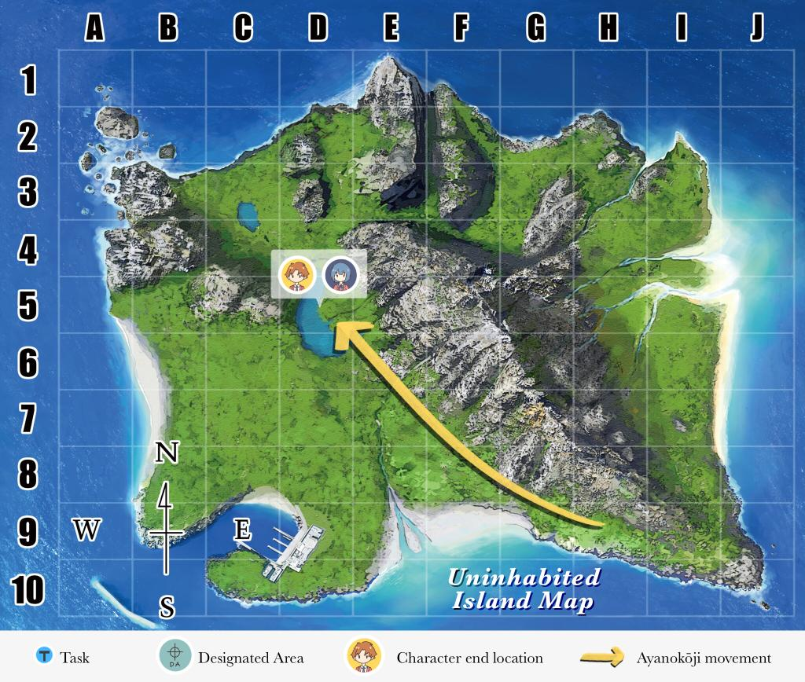
PARTE 1
A primera hora de la mañana, salí del campamento para ir al baño en el bosque cercano. Cuando volví con mi bolsa sanitaria en la mano, vi a Ibuki agazapada sospechosamente junto a mi tienda.
―¿Qué estás haciendo?
―¡…!
Su cabeza se levantó con una expresión de sorpresa en su rostro. Parece que había estado tan concentrada en rebuscar en mi mochila que no se había dado cuenta de que volvía al campamento.
―¿Intentabas mirar a hurtadillas mi tableta, o había algo más que querías?
Por desgracia para ella, era imposible que alguien accediera sin autorización a mi tableta, ya que había activado la pantalla de bloqueo.
―¡Yo no haría algo así! Sólo... sólo quería asegurarme de que nuestro intercambio era realmente justo, eso es todo.
Después de decir eso, se distanció rápidamente de mi mochila.
―¡Sólo te queda una botella de agua ahí, y ya te has bebido parte de ella!
Creía que habías dicho que tenías demasiada agua.
Aunque sólo había estado fuera algo menos de un minuto, supongo que me descuidé un poco. Al parecer, aquello fue más que suficiente para que ella confirmara el contenido de mi mochila.
Dicho esto, no podía culparla exactamente, ya que el día anterior busqué en la mochila de Ibuki sin permiso. Incluso si mintiera y dijera que me había bebido el resto del agua anoche, ella sólo tendría que preguntar dónde estaba la botella vacía. Al fin y al cabo, tirar basura en la isla iba en contra de las normas.
―Entonces qué, ¿estabas tratando de ayudarme para que te deba un favor?
―Si no hubieras rebuscado en mi mochila, nunca habrías sentido que me debías algo...
―Grr...
Mis palabras dieron en el clavo, haciendo que la mejilla de Ibuki se crispase ligeramente.
―En otras palabras, te digo que la verdad no importa. De cualquier manera, fue un intercambio justo.
―No me convence, pero... lo entiendo. Si es así, no te voy a devolver el agua.
―Si lo hiciera para que me debas un favor, ¿me lo devolverías?
―De ninguna manera.
―... ¿De verdad?
Al parecer, se había visto obligada a rebuscar en mi mochila simplemente porque no se atrevía a confiar en mí.
Como la conversación se agotó después de eso, volví a entrar en mi tienda.
Eran sólo las seis y media cuando oí ruidos procedentes de la tienda de Ibuki.
Bajé la cremallera de la entrada de mi tienda para echar un vistazo a lo que ocurría, sólo para descubrir que ella ya había empezado a recoger sus cosas.
Si hubiera sido el segundo o tercer día del examen, habría pensado que estaba rebosante de motivación, pero... El ambiente que desprendía me decía que no quería que la molestaran, así que simplemente miré para otro lado.
No tardaron en llegar las 7:00 de la mañana, y con ello la primera zona designada del día, que se anunció que era la zona E4. Inmediatamente decidí gastar un punto para realizar una búsqueda por GPS y localizar la ubicación de todos los demás en la isla.
Esta búsqueda mereció la pena por el único punto que me costó realizarla. Mi puntuación estaba tan cerca del grupo de Kuronaga, que ocupaba el décimo lugar, que podría adelantarlos accidentalmente. Al gastar un punto aquí, la diferencia entre nuestras puntuaciones se ampliaría a 12 puntos. De este modo, incluso si ganara 11 puntos por conseguir el primer puesto de la bonificación por Madrugador, seguiría estando a duras penas fuera de los diez primeros.
Mirando el mapa, había unos tres grupos más que tenían el potencial de disputarme la bonificación de Madrugador.
Entre ellos, había un oponente especialmente formidable que se encontraba en una posición ideal para hacerse con la bonificación. En este caso, decidí renunciar a luchar por ella, lo que funcionó a la perfección, ya que mi principal
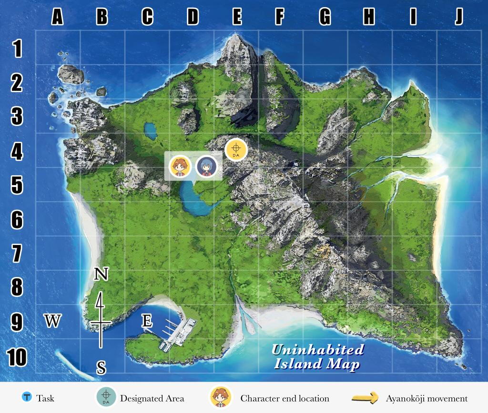
prioridad en este momento era reponer mis recursos. Por cierto, esta búsqueda por GPS también me permitió ver cuántos estudiantes estaban cerca de las tareas que me interesaban. En otras palabras, me abrió la puerta para predecir cómo sería la competencia antes de dedicar tiempo a realizarla.
Para cuando terminé de prepararme y puse un pie fuera de mi tienda, Ibuki ya no aparecía por ningún lado. Poco ganaba con actuar antes de que empezara el examen de ese día, pero supongo que sólo quería alejarse de mí lo antes posible.
PARTE 2
Aunque la zona designada estaba bastante cerca del campamento, tardé una hora y media en llegar. Ni que decir tiene que, cuando por fin puse un pie en la zona, mi reloj no indicaba que hubiera ganado la bonificación de Madrugador, por lo que sólo me quedaba una bonificación de llegada de un punto. Por supuesto, no estaba insatisfecho con esto, ya que había participado en una tarea en el camino.
El área E4 estaba situada a una altitud bastante elevada, en lo alto de un acantilado, por lo que la vista era lo suficientemente decente como para poder inspeccionar una buena parte de la isla.
―Seguro que te has tomado tu tiempo para llegar aquí, Ayanokouji.
En mi visión periférica, vi a Kiryuuin. Me habló sin siquiera mirar en mi dirección, con los ojos fijos en la base del acantilado.
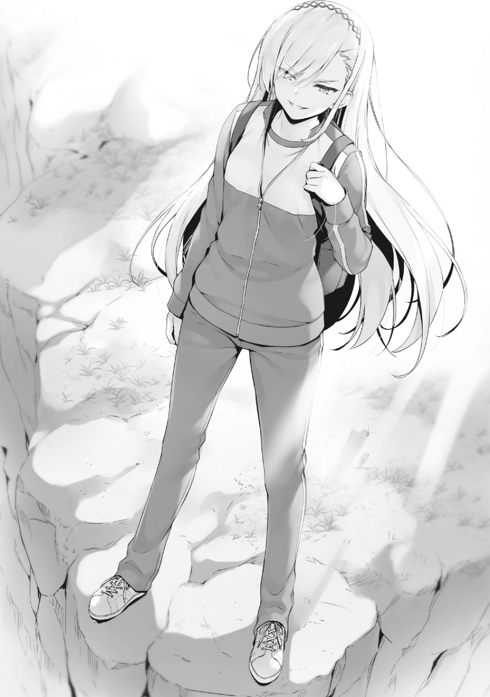
―Eso parece.
En la búsqueda de GPS de esta mañana, ella era la formidable oponente que compartía tabla conmigo y contra la que me parecía más problemático competir.
―Entonces, Ayanokouji, ¿eres tú el que me ha hecho trabajar por todos los bonos de Madrugador?
― No sé, me lo pregunto. La gente puede acabar en la misma zona a veces a pesar de formar parte de diferentes tablas. Más importante, pensé que no estabas interesada en llegar a los diez primeros, Kiryuuin-senpai.
Esta mañana, Kiryuuin se había disparado desde abajo del décimo lugar hasta el noveno.
―Bueno, este examen ha sido más interesante de lo que esperaba. Es un poco impropio de mi edad, pero he estado muy emocionada últimamente.
Dijo que era "impropio de su edad", y eso que sólo era un año mayor que yo.
―Supongo que seguiré a mi ritmo actual, al menos por el momento.
―¿Así que no quieres conseguir el primer puesto, Senpai?
―Todo el mundo echa espuma por la boca por el primer puesto. Si me mezclara en eso, no podría relajarme y disfrutar. Aunque, si Nagumo y Koenji colapsan, entonces eso podría cambiar un poco las cosas.
―¿Colapso? Honestamente, eso no parece muy probable en este momento.
―¿Realmente crees que Nagumo dejará a Koenji suelto a su suerte?
Al parecer, Kiryuuin también había previsto cómo se desarrollarían las cosas en adelante, al menos hasta cierto punto.
―Con el actual estancamiento, es difícil decir que Nagumo tiene garantizado salir victorioso. Hasta ahora parece que ha estado observando pacientemente las cosas, pero tarde o temprano hará su movimiento. O más específicamente, hará su movimiento sobre Koenji. Dependiendo de la situación, es posible que ambos comiencen a disminuir la ganancia de puntos.
Alternativamente, era posible que uno de ellos fuera aplastado y cayera en picada a través de la clasificación.
―Eso es cierto. Patear al oponente para abajo es importante.
Aunque no había manera de saber exactamente cuándo sucedería, definitivamente se enfrentarían en algún momento.
O, al menos, sentía que era seguro decir que Nagumo detendría a Koenji.
―¿Qué hay de ti? ¿Estás buscando los primeros puestos, Ayanokouji?
―Desafortunadamente, realmente no me veo entrando entre los diez primeros.
―¿En serio? Pensé que tendrías casi el mismo número de puntos que yo.
Parecía terriblemente interesada en mí y en lo bien que lo estaba haciendo.
Bueno, para ser exactos, probablemente no era sólo yo quien le interesaba.
Seguramente buscaba analizar las estrategias de todos y cada uno de los estudiantes de la escuela.
―Como consejo: es probable que la mayoría de los grupos empiecen a bajar el ritmo pronto, así que no te rindas y sigue dando lo mejor de ti.
Aunque no conocía a Kiryuuin desde hacía mucho tiempo, tenía claro que era un personaje bastante influyente.
Era, a todas luces, una alumna excepcional tanto por la profundidad de su perspicacia como por la amplitud de su intuición, cualidades que incluso el sistema de la OAA no tenía en cuenta.
―Para cambiar de tema, por lo que he visto en mi tableta, no parece que ningún grupo se haya retirado todavía. ¿Qué opinas de eso?
―Sólo significa que no puedo permitirme el lujo de descuidarme, ni siquiera por un momento. Eso es todo.
―Hmm... Descubrí algo interesante cuando me pasé ayer por la zona de salida. Al parecer, algunos de los grupos que se han quedado sin comida y agua
han adoptado una nueva estrategia de última hora. Han comenzado a cortar algunos de sus miembros con el fin de conservar los recursos.
―Esa es una decisión sabia.
No importa cuántos puntos acumule tu grupo, si todo el grupo se retira, serás descalificado y tu expulsión será casi definitiva. En ese caso, sería más seguro enviar a una o dos personas a la zona de salida, aunque eso supusiera un descenso general en términos de eficiencia. Allí, no sólo podrían beber una cantidad ilimitada de agua fresca, sino que también podrían mantener su higiene personal, por lo que sería más fácil evitar enfermar.
―Los diez últimos grupos probablemente tienen los dedos cruzados en este momento, rezando para que algún otro grupo se retire primero.
―No se sabe lo que puede hacer alguien que ha sido arrinconado. No te descuides, ¿de acuerdo?
―¿Es eso realmente algo de lo que una chica solitaria como tú debería preocuparse, Kiryuuin-senpai?
―¿Oh? Hmm... Bueno, es cierto que, como joven y delicada doncella, puede ser mejor que sea más precavida.
Aunque lo había dicho en broma, sorprendentemente, ella se lo había tomado en serio.
―Si se trata de eso, entonces sí... tendré que superarlo a la fuerza.
Diciendo eso, Kiryuuin apretó su puño.
Honestamente, su respuesta no era muy propia de una doncella, ni por asomo.
―No puedo decir si estás hablando en serio o no.
―Fufu, siento haberte quitado tanto tiempo. Después de todo, para gente como nosotros, cada segundo es precioso.
Con eso, ella levantó ligeramente su mano y comenzó a alejarse.
Basándose en la dirección que tomó, probablemente se dirigía a una tarea cercana.
―¿No vas a venir? Podría haber espacio para ti también si te das prisa.
―Paso. No creo que sea capaz de ganarte, Senpai.
A estas alturas, probablemente quedaban como mucho dos plazas para la Tarea en cuestión. Además, ya había más de tres grupos en la zona cercana, así que con Kiryuuin también dirigiéndose a ella, mis probabilidades de poder participar ya eran, en el mejor de los casos, escasas.
Mientras la veía marcharse, se detuvo de repente y, a pesar de que estaba presionada por el tiempo, miró hacia atrás para decir una última cosa.
― Ah, ahora lo entiendo ─ Parece que tendré que ir a comprobar esta Tarea por mí misma, por si acaso.
Hablando como si hubiera unido los puntos y hubiera descubierto mi estrategia, Kiryuuin lo dejó así y se dirigió hacia la Tarea una vez más.
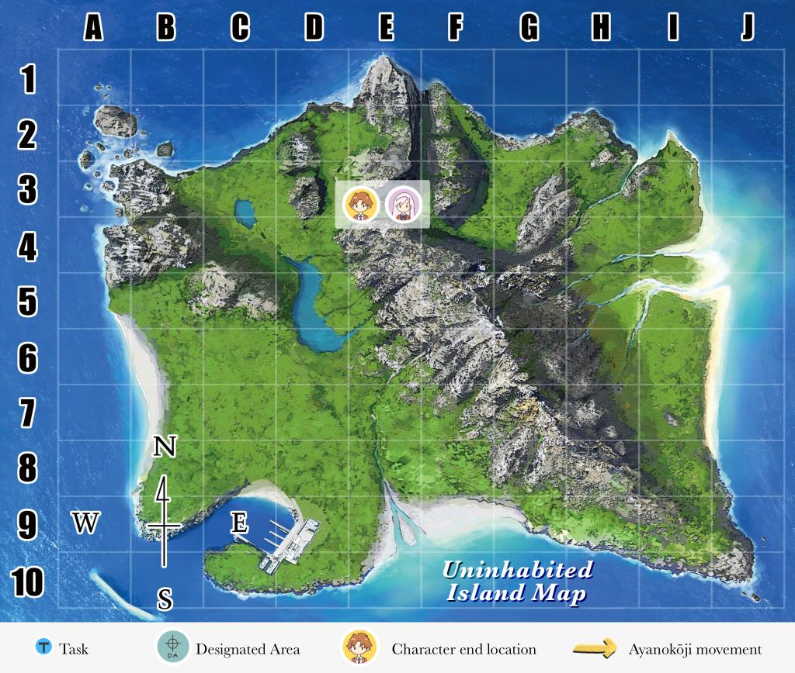
PARTE 3
El sol se había puesto en el décimo día del examen y ya eran más de las 21:00
horas.
Estaba repasando las clasificaciones finales del día y las capturas de pantalla del GPS que había tomado cuando una luz brillante parpadeó contra el lateral de mi tienda desde algún lugar del exterior.
―¿De verdad hay alguien viajando a estas horas de la noche...?
Aunque es un poco peligroso, había grupos que buscaban recuperar el terreno perdido viajando a su última zona designada en plena noche.
Por reflejo, comencé a rastrear la luz desde el interior de mi tienda. Fuera quien fuera, no parecía que estuviera apuntando a propósito con su linterna en mi dirección. Por el contrario, dados los movimientos erráticos de la luz, parecía que estaban rastreando la zona en general, como si estuvieran buscando algo frenéticamente.
Con la curiosidad despierta, decidí salir de mi tienda y averiguar qué estaba pasando.
A lo lejos, pude ver la luz de una linterna que iluminaba escasamente el oscuro bosque mientras se alejaba cada vez más de mi campamento.
Efectivamente, parecía que alguien buscaba desesperadamente algo... o a alguien.
¿Era Amasawa, que me buscaba para hacerme caer en una trampa de algún tipo?
No, si fuera ella, no creo que usara su linterna tan descaradamente.
Tendría más sentido que confirmara mi ubicación con un GPS y se acercara en secreto, oculta bajo el velo de la oscuridad.
―...Yume-chaaan...
Apenas pude escuchar una débil y tímida voz que provenía de la dirección de la linterna. No reconocí de quién era la voz, pero sí sabía que, apodos aparte, sólo había una persona en esta escuela con el nombre de Yume.
Lo más probable es que fuera Kobashi Yume, de la clase 2-C. Así que, siendo ese el caso, seguramente se podía asumir que la voz pertenecía a alguien relacionado con esa clase. Y, si no recuerdo mal, había una chica llamada Shiranami Chihiro en el grupo de Kobashi.
En cualquier caso, parecía que iba a romper a llorar en cualquier momento. Era posible poner la otra mejilla y actuar como si no hubiera visto nada, pero eso sería difícil dado que era una estudiante de la clase 2-C. Después de todo, la clase 2-C empezó a colaborar recientemente con Sakayanagi y el resto de la clase 2-A.
Saqué mi tableta del interior de mi tienda y encendí la luz externa que venía con ella.
Era un poco tenue en comparación con la linterna más tradicional, pero debería ser suficiente para que ella notara mi presencia.
Poco después, el haz de su linterna apuntó en mi dirección.
―¿Yume-chan?
Gritó, con una voz llena de una mezcla de pánico y excitación, mientras se dirigía rápidamente hacia mí.
Tras quedar momentáneamente cegada por la luz de su linterna, la chica empezó a aparecer lentamente.
―¡Yume-chan!
―Lo siento, pero no soy Yume.
―Oh...
La persona que salió de la espesura de los árboles no era otra que Shiranami, tal y como había sospechado.
―Uhm, Ayanokouji-kun... Buenas noches.
Aunque ella y yo no éramos para nada amigos, parecía algo aliviada de verme.
¿Era eso un testimonio de lo desesperada que era su situación?
―Es bastante peligroso vagar por la noche sola. ¿Dónde están Kobashi y Takemoto?
―Yo, uhm... no sé... tenía prisa por reunirme con ellos, pero antes de darme cuenta, ya no supe dónde estaba...
No debería haber hecho una pregunta con una respuesta tan obvia.
El paisaje del bosque solía tener el mismo aspecto sin importar la dirección en la que estuvieras. Bastaría un solo giro equivocado para perder el sentido de la orientación.
Teniendo esto en cuenta, era seguro asumir que Shiranami se había alejado del resto de su grupo.
―¿Cuánto tiempo ha pasado desde que los viste por última vez?
―No estoy segura... tal vez unos quince o veinte minutos...
En cuyo caso, no estaba tan perdida como para no poder encontrar nunca el camino de vuelta, pero definitivamente estaba lo suficientemente lejos como para que su grupo no pudiera oírla llamándoles.
―En cualquier caso, vagar sin rumbo sólo te hará perderte todavía más.
―S-sí.
Por el momento, decidí tomar el mando y guiarla de vuelta a mi tienda, utilizando mi tableta para iluminar el camino. Después de todo, sería un problema si yo también me perdiera.
No podía dejar mis cosas desatendidas e ir a ayudarla a encontrar a su grupo.
Hasta ahora, la mayoría de los estudiantes se habían perdido como Shiranami.
Con el tiempo, todos ellos conseguirían volver. Sólo sería cuestión de si tendrían suerte y lo harían rápidamente, o si les llevaría un tiempo.
Sin embargo, si tardaban demasiado, tendrían que pasar la noche perdidos en el bosque solos, lo que sería un reto, como mínimo.
Aunque no fuera muy exigente físicamente, mentalmente sería agotador.
No tardamos en llegar a mi campamento, donde me di la vuelta y hablé con la inquieta Shiranami.
―Hay muchos bichos, así que puedes refugiarte en mi tienda de campaña por ahora para evitarlos si quieres.
―¿Eh?
Más que sonar sorprendida, parecía que su voz contenía un sutil matiz de miedo.
―No voy a entrar, así que no tienes que preocuparte.
Aunque estaba claro que ella y yo no estábamos de acuerdo y había algunos pequeños problemas con mi razonamiento, empujé a Shiranami a mi tienda y cerré la entrada entre nosotros.
―Siento haberme entrometido... en tu lugar de descanso...
―No pasa nada. Y lo que es más importante, ¿se encuentran bien Kobashi y Takemoto?
―Sí.
En ese caso, probablemente se estaban preocupando porque Shiranami no había regresado aún.
Lo más probable es que estuvieran discutiendo si debían salir a buscarla o quedarse a esperar en su campamento.
―¿Hizo su grupo un plan de contingencia para cuando uno de ustedes se pierda?
pregunté, pero Shiranami se limitó a mover la cabeza de un lado a otro, así que continué hablando.
―Es posible que Takemoto salga a buscarte él solo, pero existe la posibilidad de que se pierda. Dicho esto, si Takemoto y Kobashi fueran a buscarte juntos y dejaran sus tiendas y mochilas desatendidas, eso también sería bastante arriesgado.
Tampoco sería muy práctico que recogieran sus tiendas y se llevaran sus cosas, dado que era posible que Shiranami se dirigiera sola a su campamento, sólo para encontrarlo completamente desierto.
Si querían ir lo más seguros posible, no debían alejarse de sus tiendas, sino patrullar los alrededores, manteniendo las luces encendidas mientras llamaban a Shiranami con la esperanza de que se diera cuenta de su presencia. Sin
embargo, como ni siquiera habían discutido previamente lo que harían en una situación como ésta, no era posible saber si serían capaces de mantener la calma y tomar una decisión sensata.
Era muy probable que salieran a buscarla sin pensarlo dos veces.
―¿Y ahora qué...?
Hizo una pregunta, pero más que preguntarme a mí, parecía que iba dirigida a ella misma. Podría decirse que sólo había cometido un error tonto, pero desde otro punto de vista, también podría decirse que había cometido uno grave. Era comprensible que se sintiera ansiosa.
El problema ahora era tratar de averiguar qué harían Kobashi y Takemoto. No, dependiendo de las circunstancias, podría ser incluso más complejo que eso.
―¿Sigue siendo su grupo sólo ustedes tres? ¿O han incorporado a más miembros?
―Eso...
Shiranami, que hasta entonces se había mostrado perfectamente dispuesta a contar todo lo que sabía, se quedó ahora repentinamente sin palabras.
Ya que definitivamente estaría al tanto de lo que ocurría dentro de su grupo, tenía que haber alguna otra razón para su vacilación.
Actualmente, la clase de Ichinose estaba en una alianza estrecha con la clase de Sakayanagi.
Por supuesto, había un puñado de grupos en la clase 2-C que se habían hecho entre amigos cercanos, pero la gran mayoría se había hecho en consideración a la alianza de la clase 2-A. Por lo tanto, decirme si su grupo se había fusionado u otros detalles internos de este tipo no sería diferente de filtrar información privada. En ese sentido, la decisión de Shiranami de no decir nada había sido ciertamente lo correcto.
―Lo entiendo. No tienes que contarme nada en detalle. Sólo escúchame primero.
Con eso como prefacio, continué.
―Si yo fuera un miembro de tu grupo, casi seguro que ya me habría dado cuenta de lo ocurrido. Probablemente habría llegado a la conclusión de que te perdiste y te quedaste vagando por el bosque oscuro tú sola.
Shiranami asintió mansamente.
―Por supuesto, no te abandonaría sin más. Empezaría por intentar llamarte. Pero, como dije hace poco, si eso no funcionara, tendría que intentar otra cosa. Supongamos que fuera Kobashi la que se perdiera, ¿qué harían tú y Takemoto si llamarla no funcionara?
―...No estoy segura... ¿quizás iríamos juntos a buscar a Yume-chan...?
―¿Aunque eso los ponga a los dos en riesgo de salir heridos y de retirarse del examen si las cosas se van al traste?
―Ella es mi amiga. De ninguna manera podría dejarla a su suerte.
Su respuesta era realmente propia de la unidad de su clase; no importaba si era o no la elección estratégica correcta. Como estudiante de la clase 2-A, Takemoto podría ser un poco reacio a abandonar el campamento al principio, pero al final, se doblegaría y decidiría ayudar igualmente.
Dicho esto, el plan más fiable para avanzar sería sentarse y esperar a que vinieran a buscarla.
Y si se diera el caso, incluso podrían gastar un punto en la búsqueda por GPS
para intentar encontrarnos.
Sin embargo, con lo oscuro que estaba, no se sabía si tendrían éxito incluso con una o dos búsquedas en la zona cercana.
―¿A tu grupo le sobran puntos? ¿Gastar dos o tres en búsquedas con GPS pondría en riesgo su clasificación?
―Eso─ me pregunto. No creo que sea muy bueno.
Al parecer, no tenían una clasificación muy alta, al menos no hasta el punto de sentirse cómoda gastando un par de puntos. ¿Hacerlo les costaría todo, o no importaría al final? No había forma de saber qué impacto tendría realmente hasta que terminara el examen.
A Shiranami tampoco le gustaba la idea de que sus compañeros de grupo gastaran sus puntos para venir a buscarla.
Como era de esperar, la mejor opción que tenía ahora mismo era esperar aquí en mi campamento, pero... no podía descartar la posibilidad de que Takemoto y Kobashi no vinieran a buscarla, o que se rindieran al no poder encontrarla. Si eso ocurriera, me vería obligado a pasar la noche fuera, dado que Shiranami utilizaría mi tienda, lo que, a su vez, acabaría retrasándome mañana.
Por lo tanto, si hubiera un momento para actuar, sería ahora.
―¿Cómo estás?
―¿Eh?
―¿Te pregunto si tienes suficiente energía para caminar?
―S-sí. Debería estar bien, es sólo que...
Bajé la cremallera de la entrada de mi tienda y le indiqué a Shiranami que saliera.
―Ven, te llevaré a tu grupo.
―Pero... ¿cómo?
―Bueno, no es que vagar sin rumbo por el bosque vaya a solucionar nada, así que usaremos esto.
Le mostré la tableta que tenía en la mano.
―Si hago una búsqueda por GPS, sabremos en qué dirección ir y aproximadamente hasta dónde tendremos que movernos.
Sin embargo, incluso con esto, no será fácil encontrarnos con ellos.
Sería excepcionalmente difícil navegar adecuadamente por el bosque con lo oscuro que estaba.
Para un estudiante ordinario como Shiranami, sería básicamente imposible sin el uso repetido de la Búsqueda GPS.
―¿Por qué... por qué me ayudas...?
―¿Por qué? Este examen especial se reduce más o menos a una batalla entre los diferentes años escolares. Por eso.
―Pero, para que vayas tan lejos como para usar una búsqueda por GPS...
Para mí, gastar uno o dos puntos no era una gran carga.
Siempre podía ganar más puntos, siempre y cuando no consiguiera los suficientes para superar el 11º puesto en las tablas de clasificación.
Sin embargo, no me serviría de nada contarle eso, así que pensé en inventarme una razón que ella creyera.
―Si tuviera que decirlo... supongo que es porque eres una de las compañeras de clase de Ichinose.
Justo cuando las palabras cruzaron mis labios, la mirada de Shiranami se endureció ligeramente.
―...Estás...
Ver su reacción me hizo preguntarme si había dicho algo de mal gusto.
―¿Hm?
―¿Están tú y Honami-chan...?
Shiranami volvió a quedarse callada antes de cerrar la boca como si no tuviera nada más que añadir.
De alguna manera, logré entender a qué se refería, aunque después de una especie de desfase.
Me acordé de todo lo que me dijeron los otros compañeros de Ichinose cuando me crucé con ellos hace unos días.
―No hay nada entre nosotros.
Rápidamente intenté corregir su malentendido, pero sólo sirvió para que su expresión, ya de por sí rígida, fuera mucho más pronunciada.
Decidí dejar de lado el tema por el momento y proseguí con la búsqueda del GPS. Tras un momento, miré los resultados. Dado que las señales de GPS de Kobashi y Takemoto estaban justo encima, estaba claro que al menos no se habían separado. Inmediatamente comenzamos a caminar, dirigiéndonos en busca del grupo de Shiranami.
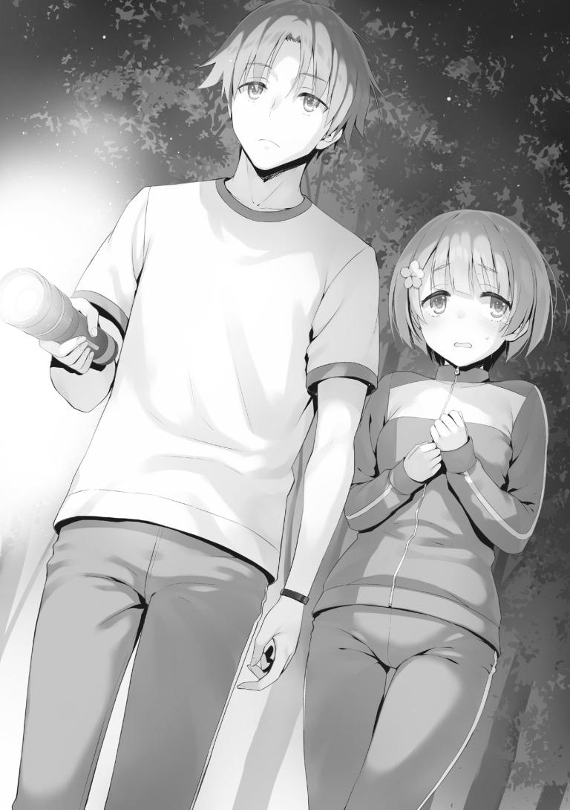
Y entonces, después de unos diez minutos de caminar en la dirección de sus señales de GPS...
―¡¡¡Chihiro-chan!!! ―gritó Kobashi, que nos vio al salir de un hueco entre los árboles.
Llevaba la mochila atada a la espalda, y a su lado estaba el tercer miembro del grupo, Takemoto, que también llevaba su mochila. Y por el hecho de que Takemoto llevaba otra mochila en las manos, habían partido hacia Shiranami con todas sus pertenencias a cuestas.
Teniendo en cuenta que se habían dirigido directamente hacia nosotros, parecía muy probable que también hubieran utilizado el GPS de búsqueda.
Al final, todos decidimos ir a donde yo había montado el campamento.
―Muchas gracias por ayudar a Chihiro-chan, Ayanokouji-kun.
―No, estoy seguro de que al final la habrían encontrado. No hay necesidad de agradecerme.
―¿No hay necesidad de agradecerte? Podría haberse lesionado si hubiera ido mucho más lejos, sin mencionar lo más difícil que hubiera sido para nosotros localizarla.
A pesar de ser de otra clase, incluso Takemoto se sintió aliviado de que Shiranami hubiera sido encontrada tan rápidamente.
Si hubieran tenido que buscarla mientras vagaba por el bosque, esto podría haberles costado algo más que un punto o dos.
―Espero que no les moleste la pregunta pero, ¿tienen un walkie-talkie?
Habiendo encontrado una buena oportunidad para cambiar de tema, miré a Takemoto y le pregunté sobre algo por lo que había sentido curiosidad.
―¿Eh? ¿Walkie-talkie? Yo tengo uno pero─
Ya que les había hecho un favor, lo más probable es que estuvieran dispuestos a prestármelo durante un tiempo.
―Si te parece bien, ¿podría hablar con Sakayanagi? Estoy preocupado por algunos de mis compañeros, así que me gustaría preguntarle si alguno de ellos ha vuelto a la zona de salida.
―Si sólo es eso, entonces claro. Espera un segundo.
A Takemoto no pareció importarle mi petición. De hecho, parecía feliz de devolver el favor, ya que rápidamente sacó su walkie-talkie y empezó a juguetear con él.
Al ser un producto proporcionado por la escuela, los walkie-talkies eran naturalmente digitales y no analógicos. Además, venían con soporte completo para los códigos de privacidad. En pocas palabras, los códigos de privacidad permiten mantener conversaciones privadas con cualquier persona que tenga el mismo código en un canal determinado, eliminando así el riesgo de que sus comunicaciones sean interceptadas por un tercero. Los grupos que decidieron comprar walkie-talkies para este examen deberían haber recibido cada uno un código de privacidad para evitar cualquier filtración de información.
Pronto, Takemoto habló por el walkie-talkie para ver si Sakayanagi estaba allí para contestar.
Ella respondió poco después, y entonces me pasó el walkie-talkie a mí.
―Me gustaría hablar con ella en privado, si les parece bien.
Al ver que los tres asentían como respuesta, me alejé educadamente del campamento. Por supuesto, me aseguré de permanecer donde pudieran verme para que no pensaran que estaba tramando algo nefasto. Luego, tras hablar un rato con Sakayanagi, volví al grupo y le devolví el walkie-talkie a Takemoto a petición de Sakayanagi.
―Eso es todo Sakayanagi. Perdona por molestarte tan tarde.
Takemoto habló, Sakayanagi dijo unas breves palabras en respuesta, y con eso, la llamada terminó.
Basado en su breve conversación, se veía que todo fue sin problemas.
―Eso realmente ayudó, pude obtener toda la información que necesitaba de Sakayanagi.
―Me alegra escuchar eso. Además, Sakayanagi me pidió que te diera esto permanentemente.
―Ah, gracias.
Takemoto me devolvió el walkie-talkie.
―Nosotros somos los que deberíamos darte las gracias~ ¿Verdad Chihiro-chan~?
―Sí, gracias por ayudarme esta noche Ayanokouji-kun.
Los tres, Shiranami incluida, volvieron a dar las gracias, y sin más, comenzaron a montar sus tiendas de campaña.
Esa noche, me quedé dormido escuchando cómo contaban historias sobre la clase A y la clase C, historias que normalmente nunca podría escuchar.
ACORRALADO POR TODOS LADOS - KOENJI CONTRA EL
GRUPO LIBRE
Eran poco más de las cinco de la tarde del décimo día de examen, justo a la hora en que los estudiantes se liberaban de sus obligaciones por ese día. El líder de la clase 3-B, Kiriyama, cerró los ojos en silencio después de terminar una conversación por su walkie-talkie.
A pesar de que la segunda mitad del examen ya estaba en pleno apogeo, Koenji seguía sin dar señales de bajar el ritmo pronto. A lo largo de los últimos días, estuvo acumulando suficientes puntos para mantenerse a la par del grupo de Nagumo. Cuando se revelaron por primera vez los diez primeros grupos en el cuarto día del examen, fue algo sorprendente ver el nombre de Koenji incluido en la lista. Sin embargo, en ese momento, ni Kiriyama, ni Nagumo, ni casi nadie le dio mucha importancia.
Al fin y al cabo, cualquiera podía decir que un grupo de un solo hombre como Koenji llegaría a su límite muy pronto.
―Kiriyama, ¿no crees que la respuesta de Nagumo a esto ha sido demasiado, ya sabes, pasiva? ¿No se suponía que iba a escapar con la ventaja una vez que comenzara la segunda mitad del examen? Lleva tanto tiempo posponiendo el enfrentamiento con ese tal Koenji que ya es el décimo día y sus puntuaciones siguen siendo prácticamente las mismas.
Mikitani, también estudiante de la clase 3-B, habló mientras miraba el estado actual de las tablas de clasificación en su tableta. El grupo de Nagumo tenía una puntuación global de 236 mientras que el de Koenji era de 230, una diferencia de sólo 6 puntos. Koenji estaba en una posición privilegiada para dar la vuelta a las cosas; solo haría falta una única bonificación del primer puesto de Madrugador.
El grupo de Nagumo había aumentado drásticamente de tamaño gracias a la tarjeta especial "Más gente", y por ello, podían ganar de forma fiable 7 puntos por Bonificación de Llegada sólo con que todos llegaran a una zona designada antes del límite de tiempo.
Koenji, por otro lado, sólo podría ganar 1 punto por Bono de Llegada, pero al mismo tiempo, le sería más fácil ganar Bonos de Madrugador. Esto era aún más impactante dado que él solo ostentaba el mayor número de Bonos de Madrugador de todos los grupos del examen.
―Aunque Nagumo consiga el primer puesto, tal y como van las cosas, vas a acabar en el tercer puesto. Amigo, si terminas perdiendo contra un humilde de segundo año, entonces tu reputación con todos tus seguidores se irá por el desagüe.
El grupo de Kiriyama tenía actualmente un total de 188 puntos. La diferencia entre su puntuación y la de Koenji no había hecho más que aumentar a medida que pasaban los días.
―Ahora que lo pienso, hubo un rumor que circuló no mucho después de que Koenji se inscribiera el año pasado, ¿no es así? ¿Todo ese asunto de cómo se acercaba a varios alumnos de segundo y tercer año y les soltaba indirectas sobre la compra de sus puntos privados con dinero en efectivo? ¿Qué pensaste de eso en ese entonces?
―Pensé que se estaba adelantando porque es rico, algo así.
―Estoy bastante seguro de que eso es lo que pensaba todo el mundo.
Sólo un chico extraño de una familia rica. Uno que parecía bastante capaz físicamente y que sacaba buenas notas en los exámenes, pero que nunca hacía nada realmente para hacerse un nombre.
Al escuchar la respuesta de Kiriyama, Mikitani asintió.
―La principal razón por la que Koenji consiguió pasar desapercibido durante tanto tiempo es que nunca ha parecido muy serio en nada. Va a contracorriente, se niega a comportarse como debería ser un estudiante de esta
escuela. Incluso durante los exámenes pasados, siempre ha sido totalmente desafiante a la hora de participar.
Este conocimiento se había extendido no sólo entre los de segundo año, sino también entre los de tercero.
Si Koenji hubiera sido siempre un estudiante serio y diligente, entonces Nagumo lo habría reconocido como un enemigo formidable mucho, mucho antes. Por lo tanto, también habría tomado medidas contra él probablemente antes. Después de todo, el clavo que sobresale se clava.
―No sé qué pasó, pero está claro que Koenji va con todo en esta ocasión.
Y como resultado, se ha convertido en el oponente más fuerte en este momento.
Su energía aparentemente ilimitada lo hace especialmente temible. Es muy posible que no se agote antes de que termine el examen.
No sólo estaba aprovechando al máximo las pocas ventajas que suponía operar en solitario, sino que además ejecutaba cada movimiento con un suministro casi inagotable de energía.
Como había logrado tanto, a los de tercer año no les había quedado más remedio que idear un plan para intentar enfrentarse a él.
Si lo dejaban sin control, Koenji terminaría sin duda entre los tres primeros.
Y dependiendo de la situación, podría incluso terminar superando a Nagumo.
Si bien perder contra un estudiante de menor edad sería un problema, de por sí, perder contra un grupo de un solo hombre sería francamente vergonzoso.
Era un oponente al que debían derrotar a toda costa, un oponente del que debían deshacerse cuanto antes.
Por supuesto, había que evitar la violencia en la medida de lo posible.
Si los de tercer año asaltaban a Koenji, hiriéndolo y forzando su retirada, eso sin duda traería problemas.
Después de todo, aplastar su progreso con violencia, inevitablemente traería un duro castigo por parte de la escuela.
Al final, tendrían que someter a Koenji lo más pacíficamente posible.
―Kiriyama, ¿has decidido un plan?
―Sí. Usaremos el Grupo Libre.
El Grupo Libre: un grupo informal compuesto por varios grupos de tres personas que Nagumo eligió personalmente para que actuaran como sus brazos y piernas durante el examen. Había cinco grupos de cada clase 3-B, 3-C y 3-D, para un total de quince. A dos miembros de cada grupo se les encomendó la tarea de seguir las instrucciones que les diera una figura designada, mientras que al último se le dijo que se desplazara entre las zonas designadas para no incurrir en ninguna penalización.
En otras palabras, dentro de cada uno de estos llamados "Grupos Libres", había dos estudiantes libres de moverse por la isla.
―Bueno, supongo que eso está bien. Entonces, ¿cuántos piensas utilizar?
―Los seis grupos que tengo a mi disposición, todos.
―¿Los seis? ¿Hablas en serio, amigo? Sólo es un tipo. Cuatro deberían ser más que suficientes si haces que mi grupo se haga cargo. Los otros dos pueden quedarse con tu grupo y─
Kiriyama intervino, interrumpiendo a Mikitani a mitad de la frase.
―Koenji es la única amenaza; habrá mucho tiempo para ocuparse de todos los demás después de aplastarlo. Tenemos hasta el final del duodécimo día para comprobar las tablas de clasificación, así que sólo tenemos los próximos dos días para derribar al tipo de una vez por todas. Una vez que empiece a perder impulso, no será capaz de recuperarse de nuevo.
Incluso si Koenji se uniera a algún otro grupo, el resultado seguiría siendo el mismo.
―Eso es cierto y todo, pero ¿no dijo Nagumo que había algún otro grupo que le preocupaba? Si enviamos a todos los que tenemos disponibles para lidiar con Koenji, no tendremos recursos para nadie más.
A Mikitani no le habían dicho a qué grupo exactamente se había referido Nagumo, pero sintió que era seguro asumir que eran parte de los diez primeros, lo que significaba que lo más probable era el grupo de Ryuuen de segundo año, el grupo de Sakayanagi, o el grupo de Utomiya de primer año.
―No te preocupes más por eso. Nagumo se estaba exaltando por nada.
Kiriyama, por su parte, sabía exactamente por qué grupo se había preocupado tanto Nagumo.
Sin embargo, ese grupo en particular no había aparecido en la tabla de posiciones ni una sola vez en los últimos diez días.
Incluso si aceleraran el ritmo en este momento, sería imposible que llegaran a uno de los primeros puestos.
―Así que simplemente fue un error de Nagumo, ¿eh?
―...Parece extraño, ¿no? Que Nagumo se equivoque en algo así.
―Supongo que no es descabellado, al fin y al cabo el tipo ha sido perseguido por un fantasma del pasado.
Un fantasma del pasado: un remanente dejado por Horikita Manabu, el único hombre que Nagumo había reconocido.
Bajo esa luz, era comprensible que Nagumo, que normalmente era más que capaz de supervisar el campo de batalla, ahora se hubiera quedado ciego.
―Así que, de todos modos, ¿vas a dejar que los seis Grupos Libres se encarguen de Koenji mientras tú sigues recolectando puntos como siempre?
―No. Tomaré el mando y me encargaré yo mismo.
―¿Tú? ¿No sería eso demasiado ineficiente? Deja que me encargue yo.
Si el grupo Kiriyama, actualmente en tercer lugar, se involucrara en obstruir el progreso de Koenji, sólo serviría para inhibir su progreso actual.
―¿Me estás pidiendo que te deje a cargo?
―Esta vez es un asunto de vida o muerte para mí. Ya has encontrado tu camino, pero no tengo más remedio que intentar que Nagumo me reconozca de alguna manera, así que, por favor, hombre, deja que me encargue de ello.
Mikitani hizo su mejor alegato, pero Kiriyama no parecía aceptarlo.
―Eso no va a suceder. Si utilizas los seis Grupos Libres y metes la pata, los resultados serán desastrosos.
―Pero tienes que conseguir el segundo puesto, ¿verdad? No pierdas el tiempo cuando no tienes que hacerlo.
Desesperado por tomar el crédito, Mikitani se negó a retroceder.
―Aparte de mí o de Nagumo, nadie podrá detener a Koenji. Fin de la historia.
Al oír esto, el ceño de Mikitani se arrugó ligeramente. Sin embargo, Kiriyama ni siquiera se molestó en dedicarle una mirada, por lo que no se dio cuenta de su expresión contrariada.
Esa tarde, los seis Grupos Libres se apresuraron a salir con Kiriyama al mando, todo por detener a un solo estudiante.
Mientras que un oponente ordinario sería una cosa, incluso Kiriyama no tenía idea de lo que Koenji era realmente capaz.
El único problema ahora era dónde aparecería la primera zona designada a las siete de la mañana de mañana, el undécimo día.
El plan de acción variaría dependiendo de la dirección en la que Koenji terminara moviéndose.
Por ello, lo ideal sería ocuparse de todo esto en algún momento después de que se hubiera instalado para pasar la noche, pero antes de que el examen volviera a empezar por la mañana.
Afortunadamente, la ubicación actual de Koenji, el área B3, y la ubicación actual de Kiriyama, el área E3, no estaban muy lejos.
Como los resultados de los grupos superiores sólo podían ser monitoreados hasta el final del duodécimo día, Kiriyama sólo tenía dos días más para verificar si sus esfuerzos darían frutos o no. Como mínimo, quería establecer una ventaja de treinta puntos para Nagumo antes de que desaparecieran las tablas de clasificación.
―¿Hasta dónde vas a hacernos marchar esta noche?
Poco después de emprender el largo viaje, Mikitani planteó una pregunta a Kiriyama en un intento de matar el tiempo.
―Tan lejos como podamos. Soy consciente de que es arriesgado viajar así en la oscuridad, pero creo que al menos me gustaría llegar a su área antes de parar para pasar la noche. Después de todo, tenemos que alcanzarlo antes de las siete de la mañana.
Una vez que Koenji comenzara a moverse de nuevo, alcanzarlo se volvería significativamente más difícil.
―Bueno, tenemos dos días, así que calculo que será un paseo por el parque. Con los seis de tu grupo que vienen, tenemos dieciocho personas en siete grupos trabajando en esto.
Mikitani se giró y miró por encima del hombro, como si quisiera señalar a los dieciséis estudiantes de tercer año que les seguían.
―No se descuiden. Hay muchas posibilidades de que nos despiste con lo extenso que es el bosque.
―Entiendo que es jodidamente fuerte para ser de segundo año, pero eso no cambia el hecho de que es más joven que nosotros.
Kiriyama y Mikitani nunca habían visto de primera mano la extraordinaria destreza física de Koenji, por lo que les resultaba difícil hacer una evaluación completamente precisa de a quién se enfrentaban. Pero aun así, estuvieron recopilando datos sobre el verdadero alcance de sus capacidades a partir de varios estudiantes de tercer año que habían competido previamente contra él en las Tareas.
―Sé precavido y mantén la calma. Traten esto como si fuéramos a enfrentarnos a nuestro mayor adversario.
―¿El mayor adversario? Seguuuuuro, amigo. Lo que tú digas.
Ante una respuesta tan despectiva y burlona, Kiriyama pensó que rechazar la petición de Mikitani había sido la decisión correcta.
Cuando te enfrentas a un enemigo al que tienes que derrotar cueste lo que cueste, debes enfrentarte a él con la inquebrantable intención de matar, de arrancarle la vida.
Sin embargo, si no tienes la determinación de hacerlo y te acercas con negligencia, entonces es cuando puedes acabar siendo tú el que se extinga.
PARTE 1
Poco después de las 6:30 de la mañana siguiente, el undécimo día del examen, el grupo de Kiriyama y los seis Grupos Libres lograron rodear el campamento de Koenji.
Kiriyama solicitó a Mikitani una actualización.
―¿Cuál es la situación?
―No parece haber ningún movimiento dentro de la tienda todavía, así que probablemente esté durmiendo como un tronco ahora mismo. Aunque, seguro que nos facilitaría mucho las cosas si el tipo se enfermara y durmiera todo el día.
Fue en ese momento cuando Mikitani expresó una sugerencia, no sólo a Kiriyama sino también a los miembros cercanos del Grupo Libre.
―¿Por qué no lo atrapamos en su tienda antes de que tenga la oportunidad de salir? Si hacemos que no pueda levantar su campamento, el tipo no podrá hacer nada.
Al escuchar la sugerencia de Mikitani, los demás miembros del Grupo Libre comenzaron a asentir. Kiriyama, sin embargo...
―Es cierto que si lo entretenemos aquí lo suficiente, podemos retrasar que llegue a tiempo a su primera zona designada. Sin embargo, ¿cómo nos explicaríamos exactamente si alguien nos viera haciendo eso? Tenemos que abstenernos de hacer algo que pueda parecer brusco a los espectadores, aunque signifique hacer algo menos efectivo en general.
Aunque ya estaban violando las normas, debían priorizar la reducción del riesgo en la medida de lo posible.
―Entonces, ¿no podemos hacer una búsqueda por GPS primero? No es que no podamos prescindir de los puntos.
―No olvides que una Búsqueda por GPS no es el fin de todo; nuestras tabletas no nos van a decir la ubicación de ningún miembro del profesorado. Nos ceñiremos al plan y atacaremos una vez que Koenji recoja el campamento y se ponga en marcha. Mientras tanto, si te cruzas con algún estudiante de primer, de segundo año, o incluso con un miembro de los profesores de camino a establecer un sitio de Tareas, busca inmediatamente distanciarte de Koenji.
Esencialmente, Kiriyama estaba advirtiendo a todos que se mantuvieran fuera del alcance de Koenji.
A medida que el reloj se acercaba a las 7:00 AM, la situación finalmente comenzó a cambiar.
―Está en movimiento.
Koenji parecía felizmente inconsciente de que había sido rodeado, tarareando una melodía para sí mismo mientras empezaba a desmontar su tienda. Sus movimientos eran practicados y hábiles, y daba la impresión de que estaría listo para partir a las siete de la mañana.
Y entonces, una vez que terminó, sacó su tableta y comenzó a esperar a que el examen comenzara en el momento en que se cumpliera la hora.
―Vamos.
Decidido que era el momento de atacar, Kiriyama dio la orden y procedió a acercarse a su objetivo.
Mikitani y el resto del Grupo Libre lo siguieron a distancia.
No estaba claro si Koenji era o no consciente de la situación en la que se encontraba, ya que se limitaba a mantener los ojos pegados a su tableta sin ni siquiera levantar la cabeza para vigilar sus alrededores. A pesar de haber sido rodeado por un ejército de 18 personas, seguía actuando como si fuera ajeno a su presencia.
Mikitani comenzó a acercarse, habiendo juzgado que Koenji sólo estaba fingiendo ignorancia, pero Kiriyama lo detuvo con una mirada severa antes de tomar él mismo la iniciativa.
―Koenji, ¿tienes un momento?
A pesar de que se dirigió a él por su nombre, Koenji siguió sin levantar la vista de su tableta.
―¿Qué quieres de mí?
La respuesta de Koenji fue cortante, de ninguna manera una forma apropiada para que alguien se dirija a un estudiante mayor, pero Kiriyama no le dio importancia.
Después de todo, era plenamente consciente de que Koenji Rokusuke era alguien que carecía de cualquier forma de sentido común.
―No esperaba que te esforzaras tanto esta vez. Si siempre has sido así de capaz, ¿por qué no te has tomado en serio ninguno de los exámenes anteriores?
―¿Realmente es algo de lo que deberíamos hablar ahora? Pronto serán las 7 de la mañana, así que ¿no deberían estar preparándose para salir corriendo a su próxima área designada?
―Deberías entenderlo sin necesidad de que yo diga nada, Koenji. Has conseguido demasiados puntos.
Koenji hablaba como si aún no hubiera atado cabos, pero Kiriyama estaba bastante seguro de que era sólo una actuación.
―Voy a tener que pedirte que te quedes aquí el resto del día de hoy.
―Para evitar que gane puntos... ¿es así?
―Así es.
Naturalmente, no había manera de que Koenji simplemente accediera a una petición como esta.
―No sé quién eres, pero cualquiera puede decir con sólo la más trivial cantidad de pensamiento que sólo estás siendo irrazonable. Sin embargo, viendo que has traído a tantos contigo... supongo que eso significa que vienes preparado para contenerme aquí si me niego a obedecer, ¿no?
―Aunque sigas al ritmo que llevas, será imposible que ocupes el primer puesto. Estás solo, mientras que el grupo de Nagumo tiene siete personas, y mi grupo está en tercer lugar con seis. Admito que lo has hecho bastante bien tú solo estos últimos días, pero me imagino que empezarás a chocar con un muro cuando empieces a quedarte sin energía.
―Entonces no es necesario que te preocupes por mí, ¿verdad?
―Lo hacemos por si acaso, eso es todo. Además, como estudiantes de tercer año, es difícil aceptar que hayamos tenido que hacer tanto para competir contra una sola persona. Por supuesto, no tendrá que pasar nada malo si eres obediente y aceptas seguir nuestras órdenes. Nagumo es el presidente del consejo estudiantil, así que caerle en gracia también facilitará tu vida en la escuela.
Esencialmente, a Koenji se le ofrecieron dos opciones distintas: podía ser forzado a someterse, u obedecer y ganarse el favor de Nagumo.
Mientras se producía un silencio entre ellos, la hora cambió, y con ello llegó la revelación de la primera área designada del día.
Tras comprobar la notificación, Koenji guardó lentamente su tableta en la mochila.
Kiriyama y los demás mantuvieron sus ojos fijos en él, observando si el estudiante de segundo año entraba en acción o no.
―Tengo que ir a un sitio, así que si me disculpan.
Tan pronto como estas desafiantes palabras salieron de sus labios, Koenji salió instantáneamente corriendo, pasando por encima de los miembros del Grupo Libre que lo rodeaban.
―¡¡¡Qué!!!
A pesar de que lo tenían rodeado, todavía había huecos en su formación lo suficientemente grandes como para que una persona se deslizara a través de ellos, lo que Koenji aprovechó al máximo. No estaría mal decir que todos, incluso Kiriyama, habían sido complacientes con la forma en que estaban abordando la situación. Habían descartado la posibilidad de que Koenji pudiera simplemente ignorar sus órdenes y escapar.
―¡Tras él!
Mikitani gritó a sus compañeros para que le dieran caza, pero en ese momento, Koenji ya había desaparecido en lo más profundo del bosque.
―Que no cunda el pánico. Sólo conseguiremos hacernos daño si intentamos seguirle el ritmo.
―¡No tenemos tiempo para eso ahora, hombre! Se está escapando.
―Puede que consiga el primer Bono Madrugador, pero eso es todo. Si decide correr y tratar de escapar de nosotros, entonces eso significa que no podrá participar en ninguna Tarea. Y si tiene el descaro de participar en una Tarea a pesar de eso, será fácil para nosotros alcanzarlo.
Aunque no podrían determinar hacia qué zona se dirigía Koenji basándose en la dirección en la que había huido, la existencia de la Búsqueda GPS significaba que no podría esconderse para siempre. Esto era algo de lo que Kiriyama era muy consciente.
Mikitani, sin embargo, estaba impaciente y con ganas de avanzar, y corrió por delante una vez que todos comenzaron la persecución en grupo.
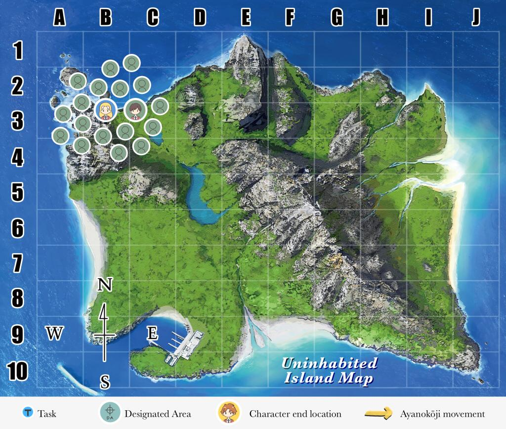
PARTE 2
Con Mikitani a la cabeza, Kiriyama y el resto del Grupo Libre estaban en estos momentos rastreando a Koenji.
―¿Cuál es su ubicación actual?
―Sobre eso, no parece que se haya movido en absoluto desde antes. He buscado tres veces ya y ha estado en el mismo lugar cada vez.
Era demasiado extraño que alguien se mantuviera completamente inmóvil cuando aún no era la hora del descanso.
Kiriyama miró su tableta en un intento de entender el incomprensible comportamiento de Koenji.
―Tampoco parece que haya ninguna Tarea cerca de él.
―Sí. Deberíamos alcanzarlo en 200 metros más o menos.
―No te descuides esta vez. Acorrálalo de una vez por todas, ¿entendido?
―No tienes que decírmelo dos veces.
Unas seis horas después de que Koenji hubiera escapado, Kiriyama y el Grupo Libre finalmente lograron alcanzarlo.
Sorprendentemente, la razón de ello resultó ser que había optado por echarse una siesta a plena luz del día, ignorando por completo sus circunstancias actuales.
Al ver semejante espectáculo, los de tercer año intercambiaron miradas de asombro.
Tomando la iniciativa, Mikitani se acercó al hombre dormido. Lo miró desde arriba por un momento antes de hablar con un tono fuerte.
―Levántate y brilla, Koenji. Tienes muchos huevos para echarte una siesta como ésta después de intentar huir de nosotros. ¿O tal vez sólo te cansaste después de todo el trabajo que has hecho estos últimos diez días?
A Mikitani solo se le ocurría una razón para que Koenji hiciera esto, dada su situación actual.
Que, aunque no quisiera descansar, a veces su cuerpo no le daría otra opción.
Koenji abrió lentamente los ojos con una sonrisa tranquila y relajada.
―¿No es evidente? Al igual que tú, no soy más que un humano, después de todo.
―Entonces, ¿qué tal si te sientas ahí y te tomas el resto del día libre?
Debes haberte agotado bastante estos últimos días. Tu senpai aquí está dándote un consejo muy considerado, así que será mejor que te lo tomes en serio.
―¿Tomar el resto del día libre? Eres todo un comediante.
Completamente imperturbable por el hecho de haber sido rodeado una vez más, Koenji se puso en pie.
Mikitani había sido el que le miraba con desprecio momentos antes, pero una vez que Koenji, que medía más de 180 cm, se puso en pie, se encontró con que ahora se vio obligado a mirar hacia arriba.
Los ojos de Koenji rebosaban de vitalidad, y parecía mucho más grande que cuando había salido de su tienda esa misma mañana.
―...No hace falta que te esfuerces. Si te sientas y disfrutas de un breve descanso, nadie tendrá que sufrir.
Aunque se sintió intimidado, Mikitani siguió presionando.
―No hay necesidad de preocuparse por eso. Mi resistencia ya se ha recuperado a la perfección. Te sugiero que te abstengas de meterme en el mismo saco que los de la clase media.
Tomando el comportamiento sereno de Koenji como un mero farol, Kiriyama habló en respuesta.
―Efectivamente, tienes un aspecto saludable, pero como dijo Mikitani, has estado corriendo bastante estos últimos diez días. No hay duda de ello, puesto que has ganado más bonos de Madrugador que cualquier otro grupo. Sin embargo, aunque tengas más resistencia que una persona normal, deberías estar llegando a tu límite en cualquier momento.
―Debo decir que tener un límite me parece algo que sólo se aplicaría a alguien atrapado en su normalidad.
―O en otras palabras, ¿estás diciendo que todavía no has llegado a tu límite?
Kiriyama formuló una pregunta, con la voz cargada de escepticismo, pero Koenji respondió sin siquiera pensarlo dos veces.
―Que sepas que tengo un sueño inmensamente corto, raramente predispuesto incluso a los hechizos más fuertes del sueño REM.
―¿Qué demonios? ¿Predispuesto a los hechizos de qué?
Mientras Mikitani expresaba su confusión sobre lo que Koenji estaba hablando, la expresión de Kiriyama se endureció inmediatamente.
―¿Un sueño corto, eh...? Si eso es cierto, este es un problema bastante serio.
―¿Qué quieres decir, Kiriyama?
―Una persona promedio necesita idealmente dormir entre siete y ocho horas por noche para mantenerse saludable. Después de todo, si duerme más o menos de lo que su cuerpo necesita, no dormirá cómodamente. Sin embargo, una persona que duerme poco tiene la capacidad de mantenerse perfectamente sana con menos, a veces necesitando tan sólo seis horas por noche.
En conjunto, el sueño alterna repetidamente entre dos estados diferentes: REM
y no REM. En pocas palabras, el sueño REM es el estado en el que el cerebro está activo y despierto, mientras que durante su contraparte no REM, el cerebro está dormido.
Y dado que los que duermen poco pasan menos tiempo en el sueño REM, podrían rejuvenecer tanto sus mentes como sus cuerpos con un simple descanso corto o dos.
―Me pareció extraño que estuvieras durmiendo así al aire libre... Así que esa fue la razón...
Aunque Koenji tiene una fuerza y una resistencia extraordinarias, el cansancio sin duda empezaría a hacer mella tras un largo periodo de intenso esfuerzo físico durante las Tareas y los desplazamientos.
Sin embargo, durmiendo una siesta intermitente durante cualquier tiempo de inactividad que tuviera después de llegar a una zona designada o siempre que
no hubiera ninguna Tarea adecuada cerca, había conseguido conservar una buena parte de su resistencia.
Si Koenji realmente dormía tan poco como decía que lo hacía, entonces no sólo su resistencia eclipsaba la de una persona normal, sino que también lo hacía su capacidad de recuperación.
Ahora, por primera vez, un leve sentimiento de ansiedad comenzó a tomar forma dentro de Kiriyama.
A pesar del incentivo generalizado que tenían para mantener el ritmo, todos los miembros del grupo se sentían cansados y fatigados a estas alturas.
La sensación de que tus piernas piden un descanso a cada paso que das. La sensación de que tu impulso para participar en el examen se desvanece poco a poco.
Eran sentimientos que todos los estudiantes compartían, en el fondo de las partes más inconscientes de su psique.
O al menos, eso es lo que Kiriyama había supuesto, y fue debido a esa suposición que pensó que Koenji sería fácil de manejar.
Sin embargo, ¿qué pasaría si los hilos que sostenían esa suposición comenzaran a romperse...?
―Por cierto, ¿todavía tienen algo que necesitan de mí?
―Nos da igual el aguante que tengas o lo poco que duermas; nos vas a escuchar sí o sí─
Tras perder la paciencia, Mikitani volvió a intentar imponer la obediencia de Koenji, pero Kiriyama intervino justo cuando las palabras salían de su boca.
―No tenemos nada más, no hace falta que te preocupes por nosotros.
Kiriyama quería evitar en lo posible el uso de un lenguaje provocador y tratar de mantener las cosas civilizadas.
Era un enfoque suave e indulgente, y aunque Mikitani se sentía cada vez más frustrado, le siguió la corriente.
―Fufu. Dices eso, y sin embargo todos ustedes parecen terriblemente beligerantes, ¿eh?
Koenji no parecía prestar atención a sus advertencias o amenazas.
Fue en ese momento cuando se anunció la tercera zona designada del día, lo que hizo que Koenji se pusiera en marcha inmediatamente tras echar un breve vistazo a su tableta.
Mikitani habló una vez que Koenji se alejó del alcance de sus oídos.
―No es el tipo de persona que nos vaya a escuchar, Kiriyama.
―Eso puede ser cierto.
―Y estoy bastante seguro de que también se está tirando un farol con esa mierda de dormir poco.
Sin embargo, mientras que muchos grupos ya habían visto un notable descenso en su eficiencia, Koenji había mantenido un ritmo acelerado desde casi el principio. Era obvio que estaba constantemente perfeccionando su cuerpo, día tras día. De hecho, Kiriyama llegó a plantear la hipótesis de que sólo veía el examen especial de la isla deshabitada como un medio para perfeccionar todavía más su entrenamiento.
―No tenemos más remedio que cambiar de planes. Lo forzaremos a continuar sólo a través de las Tareas.
Con eso, Kiriyama finalmente llegó a una decisión y dio la orden de que todos persiguieran a Koenji.
Sin embargo, Mikitani parecía disgustado, visiblemente molesto con la dirección que había tomado Kiriyama.
―Yo soy el que manda aquí, Mikitani. No crees ningún problema.
―Hmph...
A pesar de sus recelos, los distintos alumnos de tercer año comenzaron a abrirse en abanico, formando un triángulo de 18 personas alrededor de Koenji, que en ese momento se dirigía tranquilamente a su siguiente destino.
Mientras tanto, Kiriyama comenzó a dar órdenes por su walkie-talkie.
Koenji, sin embargo, simplemente siguió caminando sin prestar atención a sus acciones.
No dejó de avanzar, ni se quedó quieto.
Kiriyama tenía en mente un total de tres planes diferentes. El primero era sencillo: intentar persuadir a Koenji para que renunciara a conseguir el primer puesto. Por supuesto, este plan en particular implicaba tener a todos cerca de él para ayudar a magnificar la presión y conseguir que cediera. El segundo plan giraba en torno a permanecer en formación alrededor de Koenji mientras éste recorría la isla en un intento de inhibir sus movimientos. Y, por último, el tercero consistía en intentar anticiparse a las Tareas a las que se dirigiría y llegar allí antes que él para completar los espacios.
Entre los seis Grupos Libres y el propio de Kiriyama, tenían un total de siete grupos a su disposición, lo que debería ser más que suficiente para impedir que Koenji se inscribiera en las Tareas. Y, aunque todavía consiguiera inscribirse, al menos podrían reducir sus posibilidades de ganar haciendo que todos compitieran con la única intención de aplastarlo.
Aunque cada tarea tenía diferentes condiciones de participación, en general había dos tipos diferentes.
Estaban aquellas en las que se participaba como individuo, y aquellas en las que se participaba como grupo.
Mientras que los Grupos Libres no podían inscribirse en las Tareas basadas en el grupo, ya que no tenían a todos sus miembros presentes, esas mismas Tareas solían requerir un mínimo de dos personas para participar. Esto significaba que Koenji estaba restringido a las Tareas que le permitían participar solo, lo que a su vez significaba que cualquiera de los estudiantes de tercer año podía participar también en esas Tareas.
Los estudiantes de tercero siguieron a Koenji durante un tiempo sin ningún problema, pero a medida que pasaba el tiempo, comenzaron a inquietarse cada vez más.
Desde la perspectiva de un extraño, la velocidad de Koenji al caminar era tan rápida que podría haberse confundido con una especie de corredor profesional, tanto que perseguirlo requería bastante resistencia. Los alumnos de tercer año ya empezaban a mostrar signos de fatiga sólo por intentar seguir su ritmo.
El ritmo era tan extraño para ellos que al poco tiempo estaban completamente agotados.
Francamente, probablemente habría sido más fácil para ellos correr en su lugar.
―¡Koenji! ¡Déjate de toda esa mierda de fanfarrón y de tipo duro!
Mikitani gritó en voz alta, habiendo juzgado que Koenji simplemente estaba abriéndose camino bajo una falsa muestra de coraje.
―Vaya, vaya, eres bastante ruidoso, ¿no? En ese caso, ¿qué tal si acelero un poco el paso?
Con eso, Koenji comenzó a correr por segunda vez.
―¡Esta vez no! ¡Rodéenlo!
Los varios estudiantes de tercer año que habían estado siguiendo desde la distancia se acercaron todos a la vez.
Pero, justo antes de que lo tuvieran completamente rodeado, Koenji se coló instantáneamente entre las grietas de su formación.
―¡¿No puede ser?!
Exclamó sorprendido uno de los de tercer año, el sonido de su voz ahogado por el sonido del viento.
El hombre en cuestión ya se había alejado, cruzando rápidamente el duro terreno, como si estuviera corriendo en una pista bien mantenida en un evento deportivo escolar.
Y luego, con una velocidad que avergonzaría a un velocista de alto nivel, desapareció en el bosque.
Muchos de los doce individuos que formaban el Grupo Libre estaban sumamente confiados en sus capacidades atléticas.
Incluso en la aplicación de la OAA, todos ellos tenían calificaciones de habilidad física B o superior.
En cierto sentido, eran una unidad de soldados que Nagumo y Kiriyama habían reunido con el fin de monopolizar la mayoría de las Tareas.
―¡Tras él! ¡No dejen que se escape!
―¡Espera, Mikitani! ¡No actúes sin que yo lo diga!
―¡Cállate! ¿¡De verdad quieres que se escape otra vez!? ¡Atraparemos a ese imbécil y lo arrastraremos de vuelta a la fuerza!
Ignorando las órdenes de Kiriyama, Mikitani y el resto de los de tercer año comenzaron a perseguir a Koenji.
―Esos idiotas...
Kiriyama deliberó momentáneamente sobre si debía o no perseguirlos, pero finalmente decidió simplemente sacar su tableta e intentar reformular su estrategia.
Le resultaba difícil creer que Koenji se pusiera a correr sin motivo.
Por lo tanto, concluyó que o bien se dirigía a su próxima área designada o a una Tarea.
―De las Tareas cercanas, la del E3 es la única en la que podrá participar, pero la recompensa por quedar en primer lugar es de sólo 8 puntos... No sería sorprendente que priorizara los 10 puntos del Bono de Madrugador del primer lugar, pero... ¿dónde está exactamente su próxima área designada?
El área D4 era la candidata más probable dada la dirección que había tomado, pero fácilmente podría haber sido un área designada al azar.
―...Qué oponente más difícil de entender.
Kiriyama había caído en la cuenta de que Koenji era algo más que un excéntrico; que era alguien cuyas acciones parecían desafiar el sentido común y la lógica por completo.
PARTE 3
Resultó que, después de todo, el objetivo de Koenji era la Tarea en el área E3.
En un abrir y cerrar de ojos, llegó al lugar de la Tarea y completó rápidamente el proceso de registro. Fue entonces cuando finalmente dejó de moverse.
Unos minutos después, Mikitani y el resto del Grupo Libre lo alcanzaron. Sin embargo, en el tiempo que tardaron en llegar, otra persona ya había ocupado la última plaza, por lo que se vieron obligados a sentarse y esperar hasta que terminara. La tarea en cuestión era un examen de inglés, y aunque los participantes variaban desde los de primer año hasta los de tercero, la dificultad del tema era la misma en todos los casos.
Finalmente, un estudiante llamado Dōmichi, que era considerado por todos como uno de los más brillantes del tercer año, se hizo con el primer puesto, pero Koenji quedó en segundo lugar por un estrecho margen, ganando cuatro puntos como resultado.
Debido a que había profesores y personal del evento alrededor, Mikitani y el resto del Grupo Libre planeaban acercarse una vez que Koenji abandonara el lugar de la Tarea, pero Koenji salió en un sprint antes de que cualquiera de los profesores tuviera la oportunidad de irse.
Perdieron la iniciativa y no les quedó más remedio que perseguir por reacción a un hombre cuya velocidad superaba con creces la suya.
La siguiente vez que lograron alcanzarlo fue justo antes de las tres de la tarde, justo después de que Koenji llegara a su tercera zona designada.
Por tercera vez, Mikitani y el resto del Grupo Libre lo rodearon.
―Son un grupo bastante persistente, lo reconozco.
―¡Como si nos importara una mierda lo que piensas!
Durante prácticamente todo el undécimo día de examen, habían hecho todo lo posible por anticiparse a las Tareas que Koenji iba a realizar, pero ni una sola vez habían sido capaces de detenerlo.
Era seguro decir que, a estas alturas, su orgullo de tercer año había quedado completamente destrozado.
Probablemente, Nagumo también se sentiría extremadamente decepcionado al enterarse de ello.
La palabra "amigable" apenas podía describir ya la situación.
―Esta es tu última advertencia, Koenji.
Kiriyama habló con severidad mientras el Grupo Libre rodeaba a Koenji por lo que parecía ser la última vez.
―Sólo un día. Escúchanos y quédate quieto por un día. Eso es todo lo que tienes que hacer.
Si conseguían que detuviera sus movimientos durante 24 horas, entonces Nagumo tendría prácticamente garantizado el primer puesto.
Lo único que importaba era impedir que Koenji volviera a ocupar el primer puesto.
―¡Hey, Nagumo dijo que lo mantuviéramos ocupado durante dos días...!
¿No deberíamos decirle que se quede quieto tanto mañana como pasado mañana?
―Para entonces perderemos la capacidad de comprobar la clasificación.
Aunque dudo que haya otros grupos capaces de alcanzarnos, deberíamos centrarnos en mejorar nuestra puntuación en lugar de intentar cerrarle el paso a otro.
Esta era la conclusión a la que había llegado Kiriyama después de haber observado a Koenji hasta ahora.
―Gastar tres días completos en esto simplemente no vale la pena.
―¡Entonces deja a algunos de nosotros aquí para asegurarnos de que el tipo se quede quieto durante dos días! ¡Problema resuelto!
―¿Realmente crees que Koenji te permitirá hacerlo?
Si Koenji se quedaba sólo un día, todavía tendría una buena oportunidad de tomar el segundo o tercer lugar en la general.
Sin embargo, si fueran dos días, correría el riesgo de salirse de la tabla de posiciones.
―No hay manera de que él tome una derrota como esta tranquilamente.
―Bueno, eso depende de cómo manejemos esto, ¿no?
Harto de seguir las instrucciones de Kiriyama desde hace tiempo, Mikitani finalmente se quebró.
―...¿De verdad crees que puedes hacerlo?
―Claro que puedo, y una vez que lo haga, depende de ti conseguirme un billete de ida directo a la clase A, ¿entendido?
Con eso, Mikitani se adelantó, empujando a Kiriyama a un lado mientras le hablaba directamente a Koenji.
―Has oído todo eso, ¿verdad? Mañana y pasado, quédate aquí.
―¿Es una petición?
―No, es una orden.
―Qué audaz. ¿Y qué pasa si me niego?
―En el peor de los casos, serás expulsado.
Con esas palabras, Mikitani y el resto de los de tercer año se acercaron aún más.
Aunque no lo dijeron explícitamente, sus intenciones eran perfectamente claras: si no podían resolver esto pacíficamente, lo harían por la fuerza.
Pero, a pesar de su amenaza, la intrépida sonrisa de Koenji no vaciló en ningún momento. Se limitó a observar cómo se acercaban los de tercer año.
―Viendo que no dices nada, ¿puedo suponer que eso significa que cederás y nos obedecerás?
―No voy a ceder ante nadie.
―Entonces, no nos dejas otra opción. Tendremos que hacer que te sometas a nosotros. Estás de acuerdo con eso, ¿verdad Kiriyama?
―Ya no me importa mientras se rinda. Es su decisión.
Al escuchar el acuerdo tácito de Kiriyama, Mikitani dejó escapar una risa desdeñosa, con su actitud tan bulliciosa como siempre.
Sin embargo, en el momento en que se anunció la última zona designada del día, Koenji se puso en pie.
Con un poco de pánico, Mikitani dio rápidamente la señal para que todos se acercaran.
―Te dije. Quédate. Quieto.
Estaban tan cerca que prácticamente no había forma de que Koenji pudiera alejarse sin empujar a Mikitani o a alguno de los otros estudiantes de tercer año.
―No puedo decir que encuentre ninguna belleza en lo cerca que estás. No soy sodomita, déjame fuera de esto.
―¿Y qué vas a hacer al respecto? Si te abres paso a la fuerza, lo tomaré como una declaración de guerra.
―Fufu, ¿es así?
Koenji sonrió mientras daba un paso adelante.
Por supuesto, ese único paso le bastó para entrar en contacto con Mikitani, que estaba de pie justo delante de él.
Sin embargo, no dio ese paso con la intención de apartar a Mikitani del camino.
Más bien, fue un paso ordinario hacia adelante, uno que no resultó en nada más que sus hombros chocando entre sí.
En pocas palabras, fue el intento de Koenji de forzar su paso frente a Mikitani sin levantar activamente la mano contra él.
Mikitani podría haber sido simplemente apartado, pero gracias a su físico fuerte y bien construido, estaba bastante seguro de que sería capaz de mantener su posición. Para él, esta era una oportunidad de oro para demostrar que el hecho de que Koenji fuera rápido no significaba que fuera poderoso, pero...
―¡¡¡….!!!
Sintió como si una roca se estrellara lentamente contra él, y al poco tiempo no le quedó más remedio que ceder y apartarse del camino de esa roca.
Por otro lado, Koenji simplemente prosiguió caminando hacia adelante como si nada hubiera estado delante de él para empezar.
―¡Cabrón, espera!
Mikitani extendió desesperadamente la mano y agarró a Koenji por el hombro, pero un esfuerzo tan poco entusiasta nunca podría detenerlo.
Si dejaba marchar a Koenji ahora, mientras lo tenía delante de sus propias narices, entonces no le quedaría más remedio que repetir el mismo e inútil juego del gato y el ratón al que había estado jugando todo el día de hoy.
Por lo tanto, optó por hacer lo que podía para resistirse, aunque no pudo evitar que Koenji siguiera adelante.
Cuando se dio cuenta de que Kiriyama le estaba mirando resistir, Mikitani chasqueó la lengua y cambió de marcha.
Rápidamente llamó a uno de sus compañeros, Morooka, para que le ayudara, y juntos, intentaron lo que pudieron para tirar de Koenji hasta detenerlo.
Sin embargo, en el momento en que Morooka puso su mano en el hombro de Koenji, se encontró arrastrado, abrumado por el impulso de Koenji.
Una fracción de segundo más tarde, se desplomó en el suelo de forma dramática, aparentemente destrozado por el dolor.
―¡Aaaagh! ¡Creo que mi brazo está roto!
Morooka comenzó a gritar y a gritar por su aparente lesión, como un jugador de fútbol profesional que se hubiera "lesionado" en el campo.
Al ver lo que le ocurrió a su compañero, Mikitani rodeó rápidamente a Koenji y se colocó directamente frente a él, bloqueando a la fuerza su camino.
―¡Mira lo que has hecho, Koenji! ¡Es evidente que heriste a Morooka!
―Parece que acaba de escenificar una lesión, si me lo preguntas, ¿no?
―Sí, sí, di lo que quieras, no va a cambiar el hecho de que lo empujaron al suelo.
Todo el mundo parecía sentir que las mareas habían cambiado, ya que una vez más se cerraron sobre Koenji, impidiendo por completo que pudiera escapar.
El enfoque más moderado y amistoso que habían utilizado antes era ahora cosa del pasado.
―¿Así que ha llegado el punto en que ya no puedo pasar por alto tus acciones, hm? ¿Qué hago, qué hago, me pregunto?
―Por esa mirada arrogante que tienes, me imagino que estás a punto de mandarnos a volar. Pero, será un gran problema si de alguna manera te las arreglas para golpearnos a todos y cada uno de nosotros, lo sabes, ¿verdad?
Esta era la forma en que Mikitani daba una advertencia, dejando claro que Koenji no sería capaz de poner un solo dedo sobre ninguno de ellos.
Sin embargo, en lugar de refutar el punto de Mikitani, Koenji continuó hablando con neutralidad.
―No tengo ninguna intención de mostrar piedad con la gente que se interpone en mi camino, y mucho menos con aquellos que me enseñan los colmillos mientras lo hacen.
Tras escuchar a Koenji decir que no dudaría en usar la violencia, la expresión de Mikitani se endureció por un momento.
―¿Y si te denunciamos a la escuela entonces?
―¿Y si? ¿No sería sólo poner una mancha en sus registros como un grupo de tercer año que trató de sabotear a uno de sus estudiantes de menor edad?
La confianza de Koenji provenía del hecho de que sabía que todos los relojes de los de tercer año funcionaban correctamente. Si no lo estuvieran, su estrategia de intentar predecir las Tareas a las que iba Koenji y registrarse en ellas con antelación no les llevaría a ninguna parte. Después de todo, se necesitaba un reloj en funcionamiento para inscribirse en las Tareas.
―Entonces, ¿hemos terminado aquí? Gracias a todos ustedes, me será difícil llegar a tiempo a mi Bono de Madrugador.
Habían pasado más de diez minutos desde que se anunció la última zona designada del día, por lo que los grupos contrarios probablemente ya estaban bien encaminados hacia ella a estas alturas.
Había una posibilidad decente de que Koenji se perdiera el Bono de Madrugador del primer puesto, pero no se sabía exactamente cómo acabaría la cosa.
―Lo siento, pero... no te vamos a dejar ir.
Mikitani habló con seguridad, dejando claro que él y sus amigos no dejarían de ir tras Koenji.
―Tampoco vamos a jugar limpio contigo para siempre, ¿entendido?
―¿Así que estás diciendo que tienes la intención de seguir enseñándome los colmillos?
Aunque muchos de los de tercer año habían estado perdidos debido a la extraña atmósfera de Koenji hasta ahora, pronto recordaron su propósito original. Sabían muy bien lo vergonzoso que era que tanta gente rodeara a un solitario estudiante de menor edad, pero como era la única opción que tenían para sobrevivir, no les importaba.
En circunstancias más normales, su oponente habría cedido una vez que se hubiera dado cuenta de lo verdaderamente desesperados que estaban, pero Koenji era diferente.
Un joven que no tenía interés en nadie más que en sí mismo. Un hombre que sólo se preocupaba por lidiar con la situación actual de una manera que apaciguara su sentido de la belleza. Su larga y rubia cabellera no tenía nada que envidiar a la de una mujer, y estaba claro que la había cuidado incluso durante su estancia en la isla.
Koenji se apartó el flequillo ligeramente desordenado y esbozó una sonrisa atrevida.
Al ver eso, Mikitani se sintió momentáneamente abrumado por una mezcla de asombro y miedo e inconscientemente dio medio paso atrás.
―El tiempo es oro, así que por supuesto, vengan hacia mí.
Diciendo eso, Koenji extendió sus brazos, aparentemente invitando a los de tercer año a dar el primer golpe.
―¿Estás seguro de esto Mikitani? ¿Seguro al 100%?
Uno de sus compañeros pidió confirmación tímidamente, y tras un momento de silencio, Mikitani se armó de valor una vez más y emitió la inevitable orden.
―...Sí. En el peor de los casos, tendremos que llevarnos a Koenji con nosotros. ¡Atrápenlo!
Con las palabras de Mikitani actuando como su grito de guerra, tres estudiantes de tercer año cargaron simultáneamente contra Koenji.
Uno se acercó por detrás para intentar sujetar sus brazos mientras los otros dos se movían por delante y a la izquierda.
A simple vista, podría parecer que enfrentarse a tres atacantes que se acercaban sería difícil, pero los tres estudiantes en cuestión no tenían precisamente experiencia cuando se trataba de pelear.
Sus movimientos carecían también de un sentido de trabajo en equipo, por lo que era más bien como si todos se hubieran abalanzado sobre Koenji con una sincronización más o menos similar que como si hubieran ejecutado un asalto planificado y coordinado.
Ninguno de ellos estaba tratando seriamente de herirlo. En todo caso, cada uno de ellos parecía estar pensando que alguien más lanzaría los golpes reales.
Por ello, Koenji lo evitó todo con un único y grandioso paso hacia un lado, haciendo que los estudiantes de tercer año que se acercaban chocaran accidentalmente de cabeza unos con otros.
―¡Amigo! ¡Atácale a él, no a mí!
―¡Eso debería decírtelo yo!
Los de tercer año empezaron a discutir entre ellos sobre quién tenía la culpa, y no hace falta decir que era cualquier cosa menos el bonito escenario que Koenji había estado esperando.
―No pierdan de vista por qué vinimos aquí. Nuestro objetivo es Koenji y sólo Koenji.
Mikitani, el luchador más experimentado de todos ellos, llamó a sus compañeros que discutían para intentar evitar que se autodestruyeran.
PARTE 4
No mucho tiempo después de que comenzara la pelea, Koenji estaba rodeado de estudiantes de tercer año exhaustos; cada uno de ellos de rodillas, jadeando.
Les había destrozado el ánimo esquivando sin esfuerzo todo lo que le habían lanzado, todo ello sin llegar a asestar un solo golpe de los suyos.
―Haaa... Haaa... Maldita sea, ¿qué eres...? ¿Una especie de monstruo?
¿Por qué pasar por todo este esfuerzo en primer lugar? ¿No habría sido mucho más fácil apartarnos de tu camino como antes...?
Mikitani se encorvó con miedo, habiéndose dado cuenta de que Koenji podía ir fácilmente detrás de él en cualquier momento.
―Es bastante molesto que me sigan todo el tiempo, ¿sabes? Es desagradable, como tener el viento barriendo hojas muertas de otoño en mi cara una y otra vez.
Escuchando de reojo, Kiriyama ofreció con calma un análisis de la situación.
―Ya veo. No te equivocas, Mikitani estaba, en efecto, totalmente dispuesto a perseguirte hasta el final, así que pensaste en quebrantar su determinación dejando perfectamente claro lo mucho más poderoso que eres.
Pero pensar que lo quebrarías sin siquiera mover un dedo... Seguramente eres el único capaz de idear una maniobra como esa y realmente llevarla a cabo.
Koenji decidió cortar este problema de raíz aquí y ahora, incluso si eso significaba renunciar a la oportunidad de obtener un bono de Madrugador para hacerlo.
Y por la forma en que se había desarrollado, a Kiriyama y al resto de los de tercer año les había tocado sufrir de lleno.
―¿Estás bien, Mikitani?
―S-sí. No estoy herido...
Algunos estudiantes se habían caído por accidente, mientras que otros se habían tirado al suelo como consecuencia de la autodestrucción, pero en general, casi todos estaban ilesos. Incluso en los peores casos, nadie tenía más que algunos rasguños en las manos.
El hecho de que Koenji nunca hubiera utilizado la violencia ilustraba aún más la abrumadora diferencia de poder entre ellos.
―Me voy a despedir, si te parece bien.
―Haz lo que quieras Koenji.
―Discúlpame entonces. Adieu~
Al no quedar nadie para detenerlo, Koenji simplemente se alejó.
Una vez que el joven desapareció de la vista, el todavía abatido Mikitani comenzó a murmurar para sí mismo.
―¿Qué demonios le pasa a ese tipo? ¿De verdad es sólo un estudiante de preparatoria?
―En la vida siempre habrá gente que no parece jugar con las mismas reglas que el resto. Como Nagumo.
―Así que estamos atascados y arrastrándonos por el suelo de esta manera para el resto de nuestras vidas, ¿eh?
Mikitani golpeó el suelo con su puño, frustrado por su propia incapacidad.
―¡Ese monstruo! Me hace parecer un jodido idiota. ¡Maldita sea! ¡¡¡Maldita sea!!!
―Nuestra pelea todavía no ha terminado.
Kiriyama lanzó una mirada en la dirección en la que se había ido Koenji antes de coger su walkie-talkie.
―¿Qué, vas a informar de mi fracaso a Nagumo?
―¿Y de qué serviría eso a estas alturas? Ya decidí ganar esto.
― Cierto.
―No te preocupes Mikitani. Anticipé que Koenji sería extraordinario desde el principio. Pero, no importa la persona, todos tienen una debilidad. Al fin y al cabo, como dice el refrán: ve a lo grande o vete a casa.
Mikitani asintió en silencio, sintiéndose al menos algo aliviado por las palabras de Kiriyama.
Kiriyama, por su parte, no se inmutó lo más mínimo por nada de lo que había ocurrido hoy. Al fin y al cabo, desde el principio anticipó que todo acabaría así.
Todo formaba parte de su estrategia para que Koenji bajara la guardia ahora que creía que los de tercer año habían renunciado a detenerlo.
A pesar de los mejores esfuerzos de todos los integrantes del Grupo Libre, hoy no habían logrado efectivamente nada. Como resultado, Koenji tenía la impresión de que los de tercer año en su conjunto eran unos pusilánimes. Y eso era exactamente lo que Kiriyama esperaba.
PARTE 5
El undécimo día, momentos antes de las 17:00.
Acababa de llegar a mi última zona designada, J10, cuando me encontré momentáneamente cautivado por el paisaje rocoso y escarpado que se extendía ante mí.
Si bien es importante para mí acumular puntos y provisiones de las tareas, lo es aún más mantener un firme control de mi posición actual en la tabla de clasificación.
Después de todo, era sorprendentemente difícil mantener mi puntuación en el undécimo lugar todo el tiempo. No sólo tenía que evitar que me penalizaran por faltar a demasiadas áreas designadas, sino que también tenía que ganar los puntos suficientes para mantenerme emparejado con el grupo del décimo puesto.
Ayer, la tercera zona designada fue la zona B9, que fue designada al azar desde la zona F4. Dada la distancia, renuncié inmediatamente a llegar a tiempo.
Tampoco llegué a la zona siguiente, la C9, por lo que me perdí dos zonas seguidas.
De alguna manera conseguí evitar la penalización al llegar a mi primera zona designada esta mañana, la zona C8, pero la escuela anunció entonces otra designación aleatoria en la zona H9 que, por supuesto, acabé fallando de nuevo.
La mala suerte continuó, ya que me pasé el resto de la mañana jugando a ponerme al día con la zona anunciada después, la zona I9.
Una vez que una designación aleatoria decidía enviarte hasta el otro lado de la isla, no tenías más remedio que perseguirla y esperar que te diera un respiro.
Y después de la experiencia que tuve recientemente, estaba claro que estas designaciones aleatorias de larga distancia eran el principal contratiempo con el que tenían que lidiar los grupos, así como la razón número uno por la que la puntuación nunca parecía aumentar.
El camino que había tomado para llegar a la zona J10 fue empinado y escarpado, pero desde algún lugar no muy lejano, pude escuchar lo que parecía ser un chico y algunas chicas hablando entre sí.
El viento era bastante fuerte, así que no pude distinguir bien lo que decían, pero aun así, sus voces me resultaron vagamente familiares.
Pensé que, ya que podían ser conocidos míos, podría acercarme un poco más para echar un vistazo.
Las voces venían del oeste, cerca de la orilla del mar.
Al dirigirme en esa dirección, vi a un grupo de tres chicas de la clase 2-B: Isoyama Nagisa, Morofuji Rika y Shiina Hiyori.
Se les unió otro grupo de segundo año, uno que no había visto desde el primer día del examen. En concreto, el de Ishizaki Daichi, Nishino Takeko y Tsube Hitomi.
Al principio, cada uno de nuestros grupos tenía tablas diferentes, pero al parecer nuestras áreas designadas se habían superpuesto esta vez.
―¿Ara? ¿Pero si no es Ayanokouji-kun?
De los seis, cinco estaban completamente absortos en su conversación. Sólo Hiyori, que estaba sentada justo delante de mí y un poco separada del resto, se percató de mi presencia. Me hizo un gesto para que me acercara a ella en cuanto nuestras miradas se cruzaron.
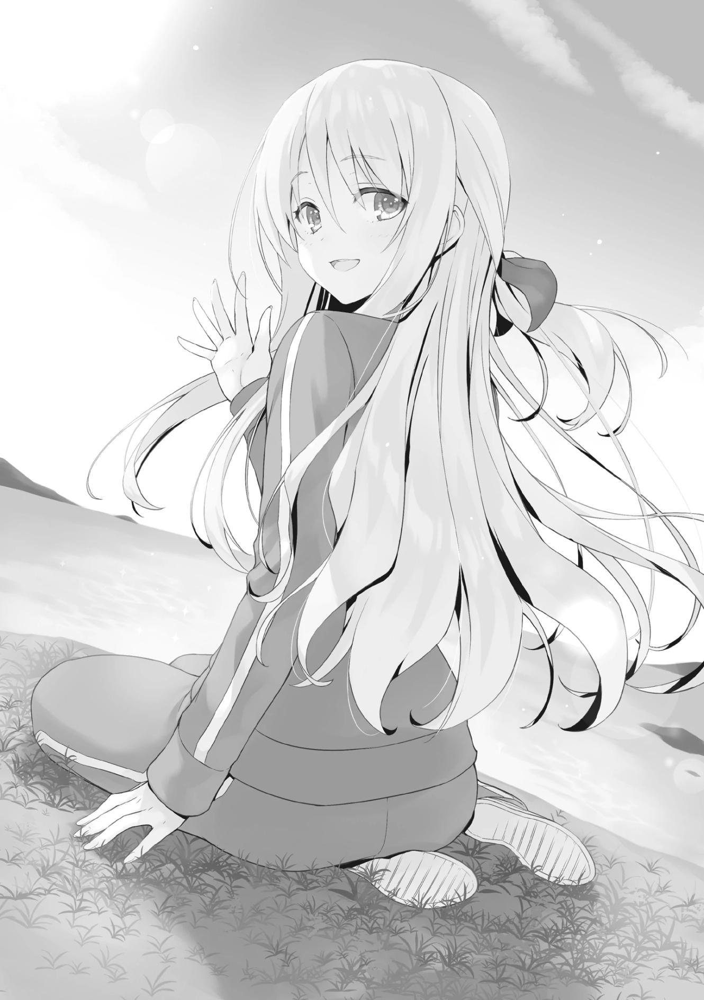
―Parece que te va mejor de lo que esperaba.
―Eso es porque hemos estado trabajando con bastante diligencia para mantener el ritmo de todos. Incluso conseguimos aumentar el tamaño máximo de nuestro grupo a seis.
En otras palabras, su grupo había unido fuerzas con Ishizaki y los demás.
A decir verdad, no parecía que su grupo tuviera mucho potencial puro, pero Hiyori al menos podría aportar más de lo que le correspondía en cuanto a capacidad intelectual. Sería la columna vertebral del grupo en ese sentido, aunque sus habilidades físicas eran, francamente, bastante pobres. De hecho, mirando al grupo en su conjunto, se podría decir que tenían un equilibrio bastante sólido de fortalezas y debilidades a su favor.
―¿Pensabas unirte al grupo de Ishizaki desde el principio?
―Algo así. Tenía varios grupos en mente para unirme si tenía la oportunidad, y ellos eran uno de ellos.
Habló sin siquiera intentar ocultar nada, dirigiendo su mirada hacia Ishizaki y los demás al hacerlo. Estaban inmersos en una discusión amistosa mientras veían cómo el sol del atardecer empezaba a desvanecerse en el horizonte, calmando sus cansados espíritus.
Dado que el grupo estaba formado principalmente por alumnos de la clase 2-B, parecían llevarse bastante bien entre ellos.
Incluso Tsube, el único de otra clase, se mezclaba muy bien con ellos.
―¿Qué tal tú, Ayanokouji-kun? ¿Ningún problema de salud, espero?
Aunque pudo ver que seguía viajando solo, Hiyori no parecía especialmente preocupada o sorprendida por ello.
―Sí. Hasta ahora todo va bien.
―No creo que haya nada de qué preocuparse, pero por favor, ten cuidado.
Al fin y al cabo, basta con una simple lesión para que te retires.
―Lo sé.
Señaló el suelo a su lado, así que acepté su oferta y me senté.
―Sólo quedan tres días más, ¿eh?
Me planteó una pregunta mientras observábamos juntos el océano, y no parecía que hubiera ningún significado especial y profundo detrás de ella.
―Sí.
Así que simplemente asentí mientras los dos nos hundíamos en un apacible silencio mutuo, relajándonos y rejuveneciendo bajo los rayos del sol poniente.
Normalmente, cuando me reunía con un amigo o con alguien a quien fuera cercano, lo primero que me preguntaban era qué tal me iba en el examen.
Como estábamos en medio de una ardua batalla en la que nos jugábamos el futuro, era natural que sintieran curiosidad por eso.
Sin embargo, Hiyori no parecía tener ningún interés en preguntarme cuántos puntos había ganado o qué tal me iba.
Bueno, más que desinteresada, parecía que simplemente confiaba en que no me expulsarían.
―¡Oi! ¡Si es Ayanokouji!
Tras percatarse por fin de mi presencia, Ishizaki gritó en mi dirección, sonriendo con una inexplicable y excesivamente feliz sonrisa.
Los restantes miembros del grupo también se dieron cuenta de mi presencia, pero en lugar de unirse a la alegría de Ishizaki, lo agarraron por el hombro cuando intentó acercarse.
―¿Qué?
―No los molestes.
―¿Eh? No es que Ayanokouji me odie o algo así.
―Ese no es el punto aquí...
―Ya, ya. La inconsciencia es sólo uno de los encantos de Ishizaki-kun,
¿no crees?
―¿Encantos? Estás bromeando, ¿verdad? En mi opinión, no sabe leer el estado de ánimo en absoluto. No hay nada "encantador" en eso.
―Eso es... Bueno, sí, realmente no puedo negar eso.
Por lo que decían, parecía que Nishino y Tsube se habían abierto realmente entre ellos desde la última vez que los vi.
Esta mayor sensación de camaradería era algo común para muchos grupos, provocada por el largo periodo de tiempo que habían pasado juntos mientras estaban atrapados luchando en una isla desierta.
Al fin y al cabo, si pasas cada momento de tu vida trabajando con alguien para evitar la expulsión, es fácil dejar de lado los pequeños problemas que hayas podido tener con esa persona.
Pero en otro sentido, era cruel.
Una vez que este examen especial terminara, la guerra entre clases volvería a empezar, provocando un futuro para todos nosotros lleno de conflictos y luchas.
Cuando llegue ese momento, seguro que habrá un buen número de estudiantes que no sean capaces de tomar las decisiones difíciles debido a las amistades que fomentaron durante el examen.
―Perdón por molestarlos a todos.
Me despedí mientras me levantaba para marcharme, tras concluir que no podrían hablar libremente entre ellos conmigo cerca. Sin embargo, Ishizaki se apresuró a correr hacia mí y me rodeó el hombro con su brazo antes de que pudiera llegar muy lejos.
―Es estresante ser el único chico en este grupo lleno de chicas, así que
¿por qué no pasas un rato con nosotros, eh Ayanokouji~?
―¿Pasar el rato con ustedes...?
―De todas formas, el examen ha terminado por hoy, y apuesto a que también estabas planeando acampar en algún lugar del área I9, ¿no?
A pesar de ser mi última zona designada para el día, el área J10 no era muy adecuada para acampar debido a los fuertes vientos y al terreno irregular y rocoso. Así que, en cierto sentido, Ishizaki tenía razón. De hecho, había planeado evitar la costa y montar mi tienda en algún lugar más cercano a la zona I9, pero...
―¡Me parece una idea espléndida!
Hiyori se levantó de donde estaba sentada y se acercó a nosotros, expresando su apoyo a la idea de Ishizaki.
En el gran esquema de las cosas, Ishizaki y Hiyori se llevaban relativamente bien conmigo, así que no sería exactamente un problema que compartiéramos el campamento. Mi problema era lo que pensaban las otras chicas al respecto.
―Me parece bien si a todas les parece bien. Ayanokouji-kun me parece bastante inofensivo.
―Por supuesto. A mí me parece bien.
Pero, por lo visto, ni una sola de ellas tuvo problemas con eso.
Es difícil de explicar con palabras, pero en general, su grupo ofrecía un ambiente increíblemente amistoso y acogedor. Casi parecía que se hubieran olvidado de que estaban en medio de un examen especial sin concesiones y de alto riesgo.
Era el tipo de ambiente que se esperaba de los de la clase de Ichinose, pero supongo que esto significaba que la clase de Ryūen estaba empezando a cambiar gradualmente también.
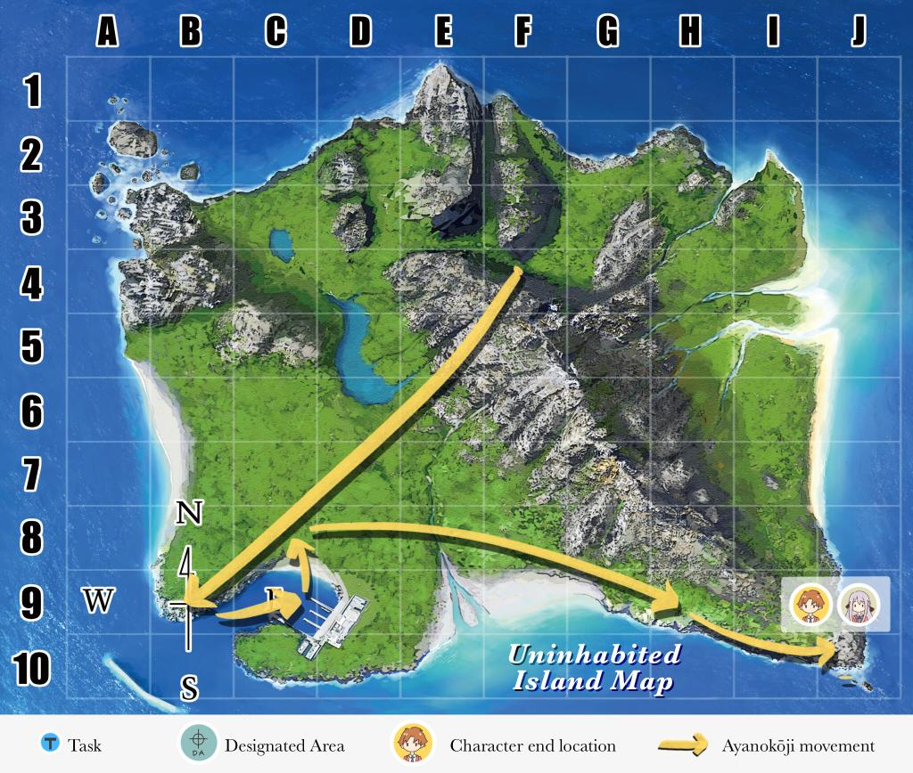
PARTE 6
―¡Ayanokouji-senpai...! ¡Ayanokouji-senpai...!
Más tarde esa noche, cuando todos ya se habían ido a dormir, me desperté con una voz que decía mi nombre.
Hablaban en voz baja para no despertar a nadie más en el campamento, y me susurraban desde el exterior de mi tienda.
Comprobé brevemente mi reloj para ver lo tarde que era, y descubrí que eran las 2:30 de la madrugada.
―Soy yo, Nanase.
Al oír eso, me desperté rápidamente y asomé la cabeza fuera de mi tienda.
Efectivamente, Nanase estaba de pie en la oscuridad ante mí, con su figura débilmente iluminada por la luz de su tableta. Además, a pesar de la oscuridad, me di cuenta de que le asustaba algo.
―¿Qué haces aquí tan tarde...? No estás herida, ¿verdad?
―Estoy bien, lo que pasa es que acabé aquí en I9 como tú Senpai. De hecho, te vi de lejos esta misma tarde, pero decidí no hacer contacto ya que estaba junto a Housen-kun en ese momento.
―...¿Y?
―Hay algo urgente que necesito contarte. Hoy... no, supongo que en realidad fue ayer dado lo tarde que es, pero de todos modos, Housen-kun me dijo que en el duodécimo día, los estudiantes de primer año llevarán a cabo un plan a gran escala para tratar de sorprenderte, Senpai.
―¿Un plan a gran escala? ¿Te pidió que jugaras un papel en eso?
―Ah, no, cómo decirlo... Da igual, empezaré por el principio.
Después de respirar profundamente, Nanase comenzó a explicar lo que había sucedido.
Al parecer, le dijeron a Housen que se reuniera con Takahashi, Yagami, Tsubasa y Utomiya, pero nunca se presentó a la reunión. Nanase no sabía exactamente qué día tuvo lugar esta reunión, pero más tarde, al noveno día, un estudiante diferente se acercó a Housen con un walkie-talkie en la mano, afirmando ser el mensajero del grupo. Vinieron pidiendo la cooperación de Housen una vez más, y los detalles de su petición fueron los siguientes: Primero, dijeron algo sobre cómo iban a forzar mi retiro durante la etapa final del examen especial.
Luego, hablaron de cómo querían cazar a otros alumnos de cursos superiores que estaban haciendo el examen solos y forzar su retiro también.
Finalmente, el mensajero le entregó a Housen el walkie-talkie y le dijo que se pondrían en contacto el día del examen con los detalles específicos. Sin embargo, por lo que Housen le dijo a Nanase después del hecho, supuestamente no tenía ninguna intención de trabajar realmente junto con los otros estudiantes de primer año. En cambio, planeaba fingir que cooperaba con ellos mientras los utilizaba para promover sus propios objetivos.
En cualquier caso, todo esto no hacía más que validar mi sospecha de que iban a entrar en acción durante la fase final del examen. Afortunadamente, ya había tomado medidas para hacer frente a ese mismo escenario con antelación.
―Hicieron una buena elección al guardarse los detalles hasta el último momento.
Si, de alguna manera, los detalles de su plan se filtraran y llegaran a mis oídos, sólo me facilitaría la preparación de contramedidas.
De hecho, todavía no han revelado los detalles más finos de su plan a Housen, por un temor bien fundado a que pueda traicionarlos.
―¿Quién es el que encabeza todo esto?
―No lo sé con certeza, pero el principal contacto con el que Housen ha estado hablando por el walkie-talkie es Tsubaki-san.
―Sin embargo, ella nunca ha parecido del tipo que toma medidas al descubierto como esta.
―Eso es lo que yo pensaba también. En todo caso, tenía la impresión de que la clase 1-C se centraba en Utomiya-kun. Sin embargo, he escuchado que Housen-kun y Utomiya-kun están en malos términos. Al parecer, se vuelven beligerantes durante las discusiones, por lo que es posible que Tsubaki-san sólo haya sido elegida para actuar como su intermediario.
Eso era sin duda posible, pero alguien como Yagami o Takahashi también podría ser quien moviera los hilos.
―Estoy agradecido sólo por saber qué día entrarán en acción. Sé que es tarde, pero será mejor que no te quedes aquí mucho tiempo. Las cosas podrían ponerse muy feas más adelante si se enteran de que me contaste todo esto.
Dejando a un lado mi situación, ser descubierto ahora podría causar muchos problemas para la vida escolar de Nanase en el futuro.
Para bien o para mal, ella seguía en la misma clase que Housen, y eso no iba a cambiar pronto.
Por lo tanto, le indiqué que se fuera antes de que Housen se diera cuenta de lo que estaba haciendo.
―De acuerdo. Me pondré en contacto contigo si ocurre algo más.
―Ah, no hagas eso. Te lo agradezco, pero ya has hecho más que suficiente por mí para este examen especial. Aunque notes que pasa algo más con los de primer año, no hace falta que me informes de ello. No hace falta que te desvivas por seguir ayudándome.
―Pero─
―Ya me diste suficiente información. Da un paso atrás y céntrate en hacer lo necesario como miembro de tu grupo con Amasawa y Housen.
Si Nanase perdiera su confianza ahora, no podría actuar como informante para mí en el futuro.
En cuyo caso, el valor de Nanase para mí se desplomaría considerablemente.
―Si así lo dices, Senpai, entonces... lo entiendo.
Con una profunda reverencia, Nanase trotó hacia la oscuridad.
Una vez que su figura desapareció por completo de la vista, saqué mi tableta y me quedé pensando un segundo.
Cuando mis ojos ajustaron el brillo de la pantalla, pude sentir que mi somnolencia se desvanecía por completo.
Aunque era seguro decir que la información que Nanase me había dado era genuina, que las cosas terminaran siendo así era un asunto totalmente diferente.
No sabía mucho sobre el funcionamiento interno de la Clase 1-D, pero como persona, sabía que Housen utilizaba el mismo tipo de tácticas que Ryūen para mantener el control sobre su clase. La única diferencia real entre ellos era que Housen tenía una tendencia a adoptar un enfoque más egoísta cuando se enfrentaba a los obstáculos.
Y sin embargo, Housen había mantenido a Nanase a su lado desde que se inscribieron aquí por primera vez.
Era lógico que él lo hiciera también. Después de todo, Nanase tenía un nivel de resistencia y fortaleza mental que era prácticamente inaudito para una estudiante de primer año de preparatoria. Añadiendo eso a sus impresionantes habilidades académicas y físicas, era sin duda una persona excepcionalmente útil para mantenerla cerca.
Sin embargo, queda por ver hasta qué punto Housen confía realmente en ella.
Si no confiaba realmente en ella, entonces es posible que le hubiera contado todo para engañarla. Y aunque no creí del todo que Housen se hubiera dado cuenta de que Nanase estaba de mi lado, no me sorprendería exactamente que aún se sintiera receloso al respecto. Además, teniendo en cuenta que Amasawa está involucrada, siempre cabía la posibilidad de que ella también se lo contara...
En cualquier caso, este plan en el que estaban trabajando los de primer año no era una gran sorpresa. Dada la considerable recompensa por mi cabeza, había estado operando bajo la suposición de que tratarían de hacer algo conmigo desde el momento en que puse un pie en la isla. Así que, aunque agradecí el informe de Nanase, mis planes no cambiaron.
PARTE 7
Tras dormir brevemente, encendí la búsqueda del GPS justo cuando llegaron las 6:00 de la mañana. Si lo hago hoy debería ver alguna actividad inusual entre los mejores estudiantes de primer año, incluido Housen.
No hay nada inusual en el posicionamiento. El único en la misma tabla, Housen, está en una posición cercana, pero todos los demás están al menos a tres casillas de distancia. No hay indicios de que estén preparando nada en este momento. Es difícil imaginar que sea atacado en un lugar público, así que mientras Ishizaki y los demás estén cerca, es de suponer que estamos a salvo.
Hiyori, Ishizaki y los demás empezaron a levantarse y a prepararse para el duodécimo día de examen. Cuando todos estuvieron listos, empezamos a caminar juntos.
Ishizaki se quejó, todavía aturdido por el sueño.
No se puede evitar. Perderemos puntos si pisamos de repente el área designada.
Ishizaki y Nishino comenzaron a hablar. Debían de llevar más de diez días hablando así. El resto del grupo se concentró en caminar, como si no estuvieran escuchando.
―Ayanokouji-kun, ¿alguna vez te sientes solo estando en el examen?
―me preguntó Hiyori, que caminaba a mi lado.
―No especialmente. Me siento más cómodo.
―Creo que es un poco solitario y aterrador.
―¿Aterrador, eh? No me imagino a Hiyori asustada.
Como siempre está tan relajada, parece ser insensible a estos temas. Incluso cuando ocurren fenómenos psíquicos, parecería que sólo aplaudiera y dijera:
"¡Esto es increíble!"
―Pero sigo teniendo bastante miedo, ¿sabes? Por eso estoy sinceramente impresionada con Ayanokouji-kun.
Creo que Horikita e Ibuki lo hacen mejor que yo.
Cuanto más tiempo luchas contra la soledad, más débil se vuelve tu estado mental, y más empiezas a pensar en cosas que no necesitas pensar.
Empiezas a sentir cosas que no están en el sonido del viento o el balanceo de los árboles.
―Seguramente... vivir sola en una isla deshabitada es imposible para mí.
Hiyori lucía un poco asustada al imaginarlo.
Sólo a través de esta prueba de la isla deshabitada fui capaz de ver un lado inusual de ella.
―Son muy cercanos. ¿Verdad?
No estoy seguro de cuánto tiempo llevaba caminando delante de todos, pero Ishizaki se giró, nos miró y lo dijo. (No hace falta que te metas en nada más).
―¿Por qué no empiezan a salir? Pueden ser novios y así Ayanokouji viene a nuestra clase, ¿no?
―Lo estás pensando demasiado.
Nishino lanzó un fuerte puñetazo e Ishizaki gritó agarrándose la cabeza.
―Es gracioso, ¿verdad, Ishizaki-kun?
Con una risita, Hiyori contestó sin parecer importarle. Si me tomara al pie de la letra las palabras de Ishizaki cada vez, tendría problemas. Lo dejaré pasar.
―Ay, eso duele. Si quieres poner a Ayanokouji en tu clase, ¿no crees que es necesario?
―No lo creo para nada. Eres tú el que está tan obsesionado con Ayanokouji-kun.
Para los de otras clases, que no conocen los detalles de la situación, eso sería más misterioso. Conseguir una puntuación perfecta en un examen puede parecer demasiado demandante.
―Bueno, ¿qué puedo decir? ... Estamos en la misma sintonía.
―No creo que estén en la misma sintonía. No creo que nadie esté en la misma sintonía que tú.
Ante la dura respuesta de Nishino, Ishizaki buscó ayuda sin dudarlo.
―Eso no es cierto. Ishizaki-kun tiene una mirada decidida.
Dijo Hiyori como para continuar, pero todos agacharon la cabeza al unísono.
―¿Qué quieres decir?
―Es lo que es. No puedo responder a más preguntas.
―...Así que sí. En cualquier caso, es bueno que Shiina-san te elogie.
―¡Oh, sí! No sé lo que es, ¡pero no me siento mal por ser elogiado!
Supongo que no se me ocurría nada específico que decir. No había forma de decir algo tan cruel, así que escuché en silencio.
Más tarde, a las siete de la mañana, se anunció que la primera zona designada fue la H10. Hiyori y sus amigas tenían una zona designada diferente a la J9, así que que no íbamos a competir entre nosotros. Lo agradezco, porque no es bueno competir con otros alumnos del mismo curso.
―Eso es todo por ahora, Ayanokouji. Hasta luego.
―Ah. Sólo quedan unos días, así que no pierdas la calma.
Ishizaki me ofreció su puño, que acepté, y luego empezamos a ir por caminos separados. Tras un breve trayecto, me pareció oír una voz detrás de mí. Me giré y vi a Ishizaki y a Hiyori saludándome con la mano. Me despedí de ellos con la mano y me dirigí a H10.
No escatimé esfuerzos para repetir la búsqueda por GPS cada hora de este día, pero no había señales de ningún cambio en los movimientos de los alumnos de primer año.
La información que Nanase había arriesgado tanto para contarme sobre el ardid del día 12 resultó vana. O bien Amasawa, que conocía la traición de Nanase, señaló la fuga de información. O el plan iba a seguir su curso hoy pero fue pospuesto o cancelado debido a algún accidente.
En cualquier caso, no puedo bajar la guardia mañana, el decimotercer y último día. La tercera y cuarta zonas designadas del día tuve que dejarlas pasar dos veces debido a zonas aleatorias.
No he perdido mucho terreno en la clasificación, pero las búsquedas me han pasado factura y he bajado al 16º puesto.
Mañana tengo que pisar la zona designada a toda costa.
LA OPINIÓN DE TODOS Y CADA UNO
El tiempo regresa al día siguiente de cuando Nanase se acababa de separar de Ayanokouji-kun, el 9º día del examen de la isla deshabitada.
A las 7 de la mañana, Housen, que había estado moviéndose solo en un grupo de 3 desde el primer día, todavía estaba acostado en su tienda después de que las áreas designadas fueron anunciadas.
Pasadas las 8 de la mañana, una silueta se acercó a Housen y alzó la voz.
―Buenos días, Housen-kun.
―¿Ah?
―Soy yo, Nanase.
―Se nota por tu voz. ¿Por qué estás aquí?
―¿Por qué estoy aquí? Estamos en un grupo juntos, ¿no es anormal que nos encontremos?
Aunque era una respuesta seria, Housen se rio con desprecio al escucharla.
―¿De verdad puedes decir eso? Parece que te has divertido mucho con Ayanokouji, pero ¿qué resultó de ello?
―...Nada. No coincidí con él como enemigo.
―Haa, ¿por qué lo desafiaste frontalmente sin siquiera usar las armas de las mujeres?
―¿Armas de una mujer... dices?
Su voz decía que no sabía qué era eso. Housen estaba desconcertado y continuó.
―Aunque tu pecho es grande, parece que tu cabeza no es buena.
―Um, la relación entre el tamaño de mi pecho y mi cabeza es algo que no entiendo muy bien.
…Está bien. Entonces... ¿Viniste aquí sólo para informar de eso?
Housen sacó una tableta e inició una búsqueda por GPS sin dudarlo.
Porque aparte de no saber si alguien había seguido a Nanase, juzgaba que era necesario ser precavido con los alrededores. Pero no había siluetas de seres humanos en las cercanías que Housen estaba marcando.
―Mi plan de hacer expulsar a Ayanokouji-senpai yo sola fracasó. Debido a eso, pensé en que Housen-kun podría prestarme su poder y vine aquí. Si tienes un plan por favor déjame escucharlo.
Después de haberse movido a su antojo, en este momento Nanase le estaba pidiendo que fuera su camarada. Housen simplemente no confiaba en ella. Más que eso, desde el principio nunca hizo algo como confiar en nadie.
―Piérdete. Lo haré yo mismo.
―... Voy a tener que esperar aquí hasta que pienses lo contrario.
―Mejor ve a tu área designada. Lo que puedes hacer es evitar un castigo.
Aunque trató de alejarla diciendo eso, Nanase no mostró ninguna señal de irse.
Ignorando eso, Housen cerró los ojos y trató de que se fuera. Después de que pasaron unos 10 minutos, Nanase volvió a levantar la voz.
―Housen-kun.
―Sigues sin querer hacerlo. Estás perdiendo el tiempo, ¿sabes?
―Parece que hay una visita.
Cuando Housen-kun abrió ligeramente los ojos, apareció la silueta de alguien que no era Nanase.
―U, Uh Housen-kun... soy yo.
―No ¿quién eres? ¿Conozco a alguien como tú?
Respondió con palabras prepotentes a la persona que levantó la voz sin siquiera decir su nombre.
―Ho-Hola... soy de la Clase C... K, Katagiri.
―No te conozco.
― Yo te escucharé en su lugar. ¿Qué pasa?
―Es que tengo algo que necesito darle a Housen-kun.
―¿Algo que tienes que dar? ¿Qué demonios es?
―Es algo que no puedo decirle a nadie más que a Housen-kun...
Housen, que había estado escuchando sin ningún interés, mostró su cara desde el interior de la tienda, como si hubiera cambiado de opinión. Luego, cuando se levantó, con su enorme complexión miró a Katagiri.
―Si no es importante, te mandaré a volar, ¿de acuerdo?
―¡E... esto!
Él cerró los ojos y tímidamente sostuvo el transceptor en sus manos mientras temblaba.
―Parece ser, un transceptor.
―Esto, esto es. Puedes hablar con Utomiya-kun.
Aunque tenía miedo de Housen, Katagiri lo expresó.
―Haa. Así que tenía tantas ganas de hablar conmigo que se desvivió por enviar a un insignificante.
Cogió el transceptor como si lo estuviera saqueando.
―¿Qué pretendes conseguir esforzándote en contactar conmigo?
¿Quieres que juegue? Utomiya.
Algo así se transmitió a través del receptor, pero la respuesta de la otra persona no llegó.
Aunque no llegó la respuesta, Housen utilizó su transceptor para verificar que Utomiya estaba en el mapa.
―No sé si no te das cuenta o simplemente me ignoras, pero esta es la primera y última oportunidad, ¿sabes?
Una respuesta llegó en réplica a esa última advertencia hecha desde el otro lado.
―...No quería contactar contigo. Pero la ejecución del plan no puede seguir adelante si te evito.
―¿El plan? ¿De qué demonios estás hablando?
―¿Ya olvidaste lo que pasó el sexto día?
―Ah, nos dijiste que tuviéramos una reunión secreta o algo así. Siento haberlo olvidado.
El hecho de que Nanase no fuera informada para nada porque había estado con Ayanokouji hizo que su expresión facial se endureciera un poco.
A pesar de echar una mirada de reojo a eso, Housen escuchó el transmisor-receptor sin distraerse.
―Tomé en cuenta el hecho de que lo ignorarías.
―Así es. ¿Entonces?
―Dentro de muy poco, llevaremos a cabo un plan para salvar a los de primer año.
―¿Salvar los de primer año?
Con esa respuesta, por un momento Housen interrumpió el sonido de la voz de Utomiya. Nanase sacó apresuradamente un transceptor de su mochila y mostró una lista de los 10 últimos grupos.
En este momento un total de 4 grupos de 1er año estaban expuestos al riesgo de ser expulsados.
―También hay 2 de nuestra clase de 1er año D.
―Haa, de todas formas no me importa que desaparezca esa basura.
¿Será que ese imbécil piensa que voy a actuar para salvar a mis compañeros?
―No seas negligente. Creo que está planeando algo.
―Eres ruidosa.
Diciendo que lo sabía muy bien, Housen volvió a encender la transmisión.
―No sé qué estás planeando, pero ¿qué tiene que ver conmigo?
Nanase, al menos, entendía por experiencia que algún tipo de plan ya estaba en marcha. Por el momento se mantenía en silencio y escuchaba atentamente, pero su posición estaba muy clara en la búsqueda del GPS. Sin duda estaban hablando mientras examinaban los alrededores de Housen, ¿no es así?
Tampoco daban la impresión de llamar la atención deliberadamente.
―Porque cuando se trata de salvar a alguien, hay algo que siempre es...
necesario.
Estaba en el transmisor-receptor. No se podía ver la expresión de Utomiya.
Pero Housen percibió que partes que no eran sus pensamientos verdaderos se mezclaban con sus pensamientos sinceros.
Housen no era tan estúpido como para no entender eso.
―¿Alguien te dijo eso? No es interesante.
―Si te vas a negar, entonces niégate. Sólo estoy hablando contigo como una formalidad. Desde el principio, he pensado que incluso sin ti podemos hacer esto sin problemas.
―Si eso es cierto entonces esta conversación terminó. Me niego.
Dicho esto, Housen esperó una respuesta durante un rato y luego terminó la transmisión. Aunque sólo por un rato, agarró con fuerza el transceptor que estaba a punto de tirar y esperó inmóvil una reacción.
―...Housen.
Aunque irritado, Utomiya dijo el nombre de Housen.
Pero Housen respondió con su silencio.
―Esto significa que no puedo tener tu colaboración, ¿verdad?
Considerando su personalidad, Utomiya casi terminó la conversación en el momento en que Housen se negó. Housen leyó que el hecho de que no lo hiciera era porque los motivos de otra persona estaban involucrados.
―Espera un segundo. Nadie está diciendo que no vaya a cooperar.
―...¿Qué?
Desde el otro lado del receptor, Utomiya estaba un poco confundido. Ya podía adivinar que eso se decía después de acertar con algo que no sabía.
―Si vienes hasta aquí, te arrodillas y luego expones tu petición, no me importaría darte una mano, ¿sabes?
―No te metas conmigo. ¿Quién bajaría la cabeza ante alguien como tú?
―Entonces esta conversación nunca ocurrió. ¿Está bien? Tsubaki.
Hacia Tsubaki, que escuchaba la conversación desde al lado de Utomiya, Housen dijo eso.
―¿Te diste cuenta? ¿O hiciste una búsqueda por GPS?
―¿Desperdiciaría un punto en algo tan obvio? Me di cuenta de la mujer sospechosa hace mucho tiempo.
Esa fue la mentira de Housen. Utilizó la búsqueda por GPS para averiguar que Utomiya y Tsubaki estaban en la misma posición y lo hizo pasar por su intuición.
―Parece que no puedo confiarle esto sólo a Utomiya-kun, ¿eh?
Al escuchar la conversación entre Utomiya y Tsubaki, Housen se rio un poco.
―¿No confías en Utomiya?
―Sólo cuando se trata de ti. El hecho de que ustedes dos se lleven como un mono y un perro es de conocimiento público. Se insertan emociones innecesarias y las negociaciones se rompen en contra de mis intenciones.
―Y, ¿qué era eso de un salvador de los de 1er año?
―¿No lo sabes ya? Entre los 10 grupos más bajos, 4 de ellos son de 1er año. Aunque 2 de ellos vienen de la clase 1-D. A este paso cuando termine el examen especial, el daño que sufriremos los de 1er año y la clase de Housen-kun será enorme.
Con respecto a los grupos de la clase D que ellos contaban, el futuro era alarmante. Tenían que hacer algo. Sería extraño que no mostraran ningún tipo de nerviosismo como ese.
Pero Housen no sólo no estaba preocupado. Ni siquiera estaba en su mente.
―¿Entonces? No estarás sugiriendo realmente que intentemos salvar a todos los grupos de 1º año que están en el fondo, ¿verdad?
―Antes de responder, una cosa. Podemos pensar en Nanase-san como nuestra aliada, ¿verdad?
Aquí Tsubaki tocó la existencia de Nanase por primera vez. Ella estaba tratando de reunir información de todas las palabras sin tacto y los silencios.
―Más o menos. La clase D está llena de basura así que ella es más o menos la única útil.
―Así es. Con eso continuaré las discusiones sin prestar atención a eso, pero esa fue la respuesta correcta. Tengo la intención de salvar a todos, tanto a los 4 grupos que están actualmente en el fondo como al grupo que ha estado recientemente cerca del fondo.
―Estás hablando de un juego muy grande, pero ¿qué puedes hacer?
Hasta ahora no has hecho nada que destaque. Si me haces perder mi precioso tiempo sin razón alguna, no lo pasaré por alto, ¿sabes?
―Parece que te estás tomando tu supuesto precioso tiempo con calma,
¿eh?
Esas palabras de Tsubaki revelaron que ella había visto a Housen desde una etapa temprana usando el GPS.
―Como broma, ¿por qué no golpeo a tu recadero hasta dejarlo medio muerto y lo mando de vuelta?
Housen endureció su expresión. Katagiri se marchitó ante él.
Con un ligero cambio de su expresión, la mayoría de los estudiantes se estremecerían de miedo.
―No te dejes llevar Housen. Si le pones una mano encima a Katagiri te lo haré pagar.
―Disculpa Utomiya-kun, por favor no interrumpas en este momento.
―Pero...
Como una pelea comenzó en el otro lado, la transmisión se detuvo por un momento.
―¿Qué debo hacer, verdad?
―¡Hii!
Tal vez porque la sonrisa de Housen parecía espantosa, Katagiri se preparó automáticamente para huir.
―Tch. Qué tipo tan aburrido. Vete ya.
―P, pero el transceptor...
―Yo me encargaré de esto.
―Pero...
―Katagiri-kun, no diré nada malo de ti con respecto a si debes prestárselo a Housen-kun.
Nanase intervino y lo persuadió así.
Si imprudentemente te niegas a retroceder, no sabemos lo que te puede pasar, dijo ella con sus ojos. Housen, que lo miraba fijamente por detrás de ella, fue la gota que derramó el vaso. Asustado, se dio la vuelta y echó a correr. Incluso cuando parecía que se iba a caer por el camino siguió corriendo.
―Idiota.
―Qué prepotente.
―Así es como hago las cosas. Tú también lo entiendes, ¿no?
Después de un intercambio como ese entre los dos, volvió una respuesta de Tsubaki.
―Te he hecho esperar. ¿Recomenzamos la discusión?
―Está bien, pero ese tipo Katagiri dejó el transceptor y se fue a algún lugar, ¿sabes?
―Lo intimidaste, ¿verdad?
Sin necesidad de adivinar, Tsubaki contestó brevemente.
―Ser débil en las peleas debe ser duro, ya que siempre se resuelve antes de terminar. ¿No lo crees tú también? Tsubaki.
―Efectivamente, si se trata de una pelea no sería capaz de ganar por mucho que lo intente. Pero esto es diferente.
―¿Esto?
―La cabeza. La inteligencia.
Ante aquella respuesta demasiado seria para haber sido una broma, Housen se rio inconscientemente.
―Ja... Aunque si realmente te enfadas más que yo sería impresionante.
―Hay una manera de salvar por la fuerza a los grupos que están en un dilema. Para eso necesitamos la cooperación de al menos una persona más.
Los estudiantes superiores ya parecen estar usando una estrategia similar, así que quiero que la clase 1-D me preste su poder.
Por eso quería la cooperación de Housen a pesar de que hasta ahora hacía lo que quería, es lo que dijo Tsubaki.
―Aunque realmente quiero ayudar, hay cosas que estoy haciendo. Ahora mismo estoy muy ocupado.
Tsubaki también lo sabía ya que a Housen le faltaba tiempo porque no se movía ni siquiera cuando se anunciaban las zonas designadas. Pero Housen lo dijo deliberadamente porque quería ver sus reacciones.
―Muy ocupado, dices... ¿estás intentando que expulsen a Ayanokouji-senpai?
―Así es. No me importa que desaparezca la basura de nuestra clase.
―¿Pero cómo pretendes que lo expulsen? Aunque ya es la mañana del 8º
día Ayanokouji-senpai sigue moviéndose solo. Pero su nombre no está en los 10
últimos grupos. De acuerdo con las reglas, aparte de las dos únicas condiciones para ser expulsado en este examen especial que son retirarse o hundirse en los grupos inferiores, no hay manera de ser expulsado.
Y viendo sus puntos, no había forma de que se hundiera en los grupos inferiores.
―Además, en la semana hasta este momento, parece que se han retirado varias personas pero en cuanto a grupos enteros eliminados, no hay ninguno ahora mismo. Aunque la semana que queda empezará a ser más difícil por lo que algún grupo en algún lugar podría retirarse.
―Tienes razón. También hay gente que ya casi no tiene comida.
La voz de Utomiya entró por el lado de Tsubaki. Ya estaban salvando a los de 1er año que estaban preocupados por la falta de suministro de alimentos con las medidas que estaban a punto de desplegar.
―Si 5 de nuestros grupos son eliminados, no podemos esperar que Ayanokouji-senpai sea expulsado en el futuro ¿verdad? ¿No puedes pensar que el esfuerzo empleado para salvar a los de primer año es un esfuerzo empleado para expulsar a Ayanokouji-senpai?
La sonrisa de Housen se debilitó por primera vez. Un asunto serio comenzaba a insinuarse.
―Así que, salvar a los de 1er año ¿eh? Bueno, no parece una mala idea pero... escuchemos el método.
―Lo dije antes, ¿no es así? Otros estudiantes superiores ya están usando esta estrategia. Se unen en grupo con estudiantes del mismo grado. Los grupos que se hunden hasta el fondo son absorbidos en grupos con espacio libre y los elevan. Si es necesario, me pregunto si podemos incluso robar tareas a los grupos de 2º y 3º que no van bien.
―La gente no se tomará la molestia de agruparse tan fácilmente ¿no? Hay una clase A y una clase B. Que ayuden a la clase C y a la D es impensable.
―No creo que debas preocuparte. Su cooperación está decidida desde hace tiempo. Ahora sólo estamos esperando su cumplimiento, ya sabes.
Si la clase 1-D promete unirse a ellos entonces pueden empezar a moverse.
―No es una mala idea, pero no hay garantía de que podamos ganar con eso. En última instancia, sólo estaríamos usando la misma estrategia que ellos.
Con la diferencia de experiencia, el primer año acabaría perdiendo.
Aunque pareciera que estaba escuchando distraídamente, Housen estaba simulando la estrategia de Tsubaki en su cabeza.
Y los que tenían más posibilidades de salvar a los de 1er año no serían capaces de deshacerse de las condiciones desfavorables, es la conclusión a la que llegó.
―Tienes razón. A este ritmo no podremos reducir el número de víctimas de 1er año a 0.
―¿No es extraño lo que dices? Salvar a todos los de 1er año, ¿no es así?
―Si todos los años escolares usan la misma estrategia los de 1º año estarán en desventaja. Es como tú predices. Así que está bien hasta que termine el último día y se anuncien los retirados, ¿no es así?
Aquí queda clara la verdadera naturaleza y el objetivo de Tsubaki.
―Algunos de los estudiantes más capaces siguen moviéndose solos.
Deberíamos hundirlos.
―Ya veo. En efecto, si hacemos caer a 5 grupos podremos salvar a todos los de 1er año.
―Había pensado que esta batalla comenzaría cuando todos estuvieran agotados en la última mitad de la batalla, del 8º al 10º día. Pero ocurrieron cosas inesperadas.
Housen no se mostró en el 6º día.
Todo el séptimo día desperdiciado a causa del mal tiempo, permitiendo a la gente recuperarse.
Esas cosas pasaron inmediatamente por la cabeza de Housen.
―¿Entonces? Intenta decir lo que quieres de mí en términos tangibles.
―Los patrocinadores de esta prueba también tenían una sugerencia, ¿no?
Que no importaría que algunos grupos se hundieran por la violencia. Tienes la intención de derribar por la fuerza a Ayanokouji-senpai, ¿no es así?
―Bueno, sí. No tengo otra opción.
Aunque Housen dijo que sus verdaderos pensamientos eran diferentes.
No importa cuántas estrategias tenga la gente, cuando Ayanokouji-kun fuera aplastado, él lo resolvería con sus propias manos.
―Pero Ayanokouji-senpai siempre se mueve solo. Ir por ahí tratando de contenerlo será difícil. Por lo tanto, no tuviste esa oportunidad. Pero sería una historia diferente si tuvieras una gran red envolvente.
Tsubaki estaba diciendo que se encargaría de organizar eso.
―Usando a Utomiya-kun y Housen-kun como punto de referencia, he investigado cuánta gente dentro de los de 1er año confía en sus habilidades de pelea y no se resiste a la idea. Si lo rodeas por completo, serás capaz de obstruir su ruta de escape.
―¿Me estás diciendo que coopere si preparas eso?
―Sí.
―¿Realmente consentirán algo tan arriesgado Tsubaki? Además, no creo que Utomiya trabaje sin compensación.
―Por supuesto. He llegado a un acuerdo con los colaboradores de que si esto tiene éxito les pagaría 500.000 puntos. Creo que disminuir tu parte es un gasto necesario.
Propuso repartir los puntos que obtendrían por la expulsión de Ayanokouji-senpai.
―Espera Tsubaki. En principio está prohibido cometer actos de violencia.
¿Harán eso por sólo 500.000 puntos?
Parecía que Utomiya-kun también estaba escuchando el plan real por primera vez. Esa voz sonó desde el otro lado del transceptor. Aquí Housen se dio cuenta de que Tsubaki dejó escapar intencionadamente el hecho de que Utomiya-kun no lo sabía.
Por lo general, los transceptores no envían la voz de uno a su compañero a menos que esté presionando el botón.
Si parecía que Utomiya iba a decir algo inconveniente, entonces ella podría haber soltado el botón. Ella estaba transmitiendo indirectamente un secreto por su propia voluntad.
―Por supuesto, si hubiera preguntado el primer día entonces habría sido inútil. Pero es la segunda parte de la batalla cuando la mente y el cuerpo están desequilibrados. Los estudiantes han experimentado una cantidad adecuada de estrés. Es una situación en la que chocan el sentimiento de todos de querer tomárselo con calma y el de querer ir al extremo. Por supuesto, sigo pensando que nuestra primera ofensiva encontrará una fuerte resistencia. Precisamente por eso, quiero confiar la vanguardia a Housen-kun.
Tsubaki dice que la ejecución será fácil después de analizar con calma.
―Cuando hay pocos coches en la carretera, la cantidad de gente que piensa que quiere ignorar los semáforos en rojo no es pequeña. Pero si hay otras personas mirando, no pueden dar el primer paso. Sin embargo, si una persona empieza a cruzar la situación cambia.
Tsubaki estaba diciendo que quería confiar ese papel a Housen.
―Bueno, no me desagrada esta forma de hacer las cosas. Pero la escuela tampoco está formada por idiotas.
―En ese caso ninguna de las partes gana la pelea. Como ambos bandos declararán en contra del otro, cualquiera de ellos podría ser expulsado. Yo asumiré la responsabilidad como cabecilla que dio las indicaciones a los de 1er año y me iré de la escuela.
―¿Ah?
―No tengo nada parecido a un apego duradero por esta escuela. Así que no pasa nada aunque renuncie enseguida, o algo así. Además, les di por anticipado a los que formaron un grupo conmigo una tarjeta de reducción de medio punto.
Aunque la responsabilidad recayera no sólo en Tsubaki, que había hecho la planificación, sino también en su grupo, seguiría estando bien, fue su respuesta.
―La gente que puede autodestruirse da miedo. Ahora te veo de forma diferente.
Housen dijo palabras sencillas a Tsubaki, que tenía un arma poderosa al venir aquí.
―No te lo dije todavía Utomiya-kun, pero ¿te opones a este plan?
―...No. He estado pensando que no tendría más sentido hacer algo obvio.
He examinado a Ayanokouji a mi manera. El hecho de que sea el objetivo con 20.000.000 de puntos no es una simple coincidencia. Creo que está marcado como objetivo precisamente porque es tan obviamente bizarro. Incluso si tratamos de vencerlo dentro de las reglas, seguramente lo evitará. En caso de que esto se haya determinado, no tengo derecho a detenerlo.
Utomiya-kun no se oponía a realizar acciones violentas, pero tenía reparos en subestimarlo.
Si Tsubaki asumía toda la responsabilidad, entonces la situación cambiaba. Si Housen o Utomiya y los demás asumían toda la responsabilidad, la situación cambiaba.
Era posible incurrir en algún tipo de sanción, pero era difícil pensar que la escuela expulsaría a decenas de personas.
―Probablemente será difícil que expulsen realmente a Ayanokouji-senpai.
Por lo tanto, creo que se ha preparado un lugar en esta isla deshabitada donde la gente no esté mirando.
―Ya veo. Así que no ocurrirá accidentalmente.
Housen cerró el mapa de su tableta y lo puso en modo de grabación.
―Has pensado en el plan para que Ayanokouji se retire mediante la violencia tú sola, ¿verdad? Tsubaki.
―Así es.
―Si te seguimos, los estudiantes de primer año no seremos expulsados.
¿Puedes garantizarlo?
―Lo prometo. Y en el peor de los casos, me haré responsable.
Una vez transmitido esto, Housen se dio por satisfecho y terminó la grabación del vídeo.
―¿Has asegurado bien la prueba? Tener mi testimonio te da tranquilidad,
¿no?
En respuesta a las palabras de Tsubaki que lo había descubierto, una sonrisa de satisfacción flotó en el rostro de Housen.
―¿Entonces? ¿Cuándo lo haremos?
―No puedo decirlo todavía. No debo dejar que la información sobre la ejecución se filtre tan fácilmente.
―Así que no puedes confiar en mí, ¿eh? Ser reservada está bien, pero no puedo colaborar así.
―Para eso está el transceptor.
El transceptor que robó a Katagiri fue preparado para Housen desde el principio.
Aunque intentara robarlo el resultado sería el mismo.
―Así que es por eso.
―Me pondré en contacto contigo de nuevo cuando vea una oportunidad.
Saludos cordiales.
Después de decir eso Tsubaki paró la transmisión unilateralmente.
―No es una chica a la que pueda quitarle importancia, ¿eh?
Riendo, Housen sacó el transceptor de su bolsillo y lo apagó.
―¿Qué vas a hacer?
―No importa lo que haga, no puede hacer daño seguir el plan de Tsubaki
¿verdad? En todo caso he tenido la intención de aplastar a Ayanokouji, aunque sea yo solo.
Por esa razón hacer una búsqueda por GPS de nuevo será necesario.
Juzgó que si Tsubaki preparaba todo, incluyendo eso, entonces sería beneficioso seguirle la corriente.
―Si actúo violentamente como me gusta, Tsubaki asumirá toda la responsabilidad como cabecilla. ¿No es esto demasiado bueno?
―¿No te parece sospechoso?... Como si nos estuvieran utilizando. O algo así.
―Si se llega a eso, lo agradecería. Bueno, de todos modos eso es lo que es.
―...Yo también cooperaré.
―¿Ah?
―Yo misma quiero proteger a los grupos de la clase 1-D. Hasta que la información específica venga de Tsubaki-san, por favor déjame permanecer a tu lado.
En respuesta a la propuesta de Nanase, Housen solo dio una respuesta corta; haz lo que quieras.
PARTE 1
El momento se mueve al 13º día del examen especial, a las 6:51, durante la movilización. Utomiya ve a Tsubaki junto a la tienda, mirando al cielo.
―¿Qué tienes en mente? Tsubaki.
―Estaba simulando el plan en mi mente por última vez. ¿Necesitas algo?
―No, más o menos pensé en hablar contigo antes de que empiece.
Después de todo, mi relación contigo podría terminar aquí.
―Sí.
Como esta podría ser su última conversación, ambos dijeron lo que tenían en mente.
―¿Por qué sólo has puesto en pausa el transceptor durante tu disputa conmigo?
―Si no puedes ver su cara mientras hablas, no puedes saber las verdaderas intenciones de la otra persona. Lo entiendes por mi conversación con Housen-kun, ¿no?
―Es cierto. No sé lo que está pensando, pero no puedo confiar en él para nada.
―La razón por la que no puedes confiar en él es porque se trata de Housen-kun, ¿no?
Como ella dio en el clavo, Utomiya giró torpemente su rostro.
―El único en quien puedo confiar entre los de 1er año es Utomiya-kun. Así que quería que escucharas el plan directamente y me dijeras lo que pensabas sin más.
La expresión de Tsubaki derivó en una sonrisa de autocrítica, y luego volvió a ser ilegible. Aunque dijo que confiaba en él, Utomiya recordó las cosas que tenía que confirmar.
―¿Cómo van los preparativos?
―¿Quieres ver la captura de pantalla que tomamos cuando hicimos una búsqueda por GPS hace un momento?
Tras decir eso, Tsubaki activó su tableta y mostró la imagen de la búsqueda por GPS.
El campamento de Ayanokouji estaba en E5. Los de primer año estaban acampados en D4 y E6.
―Las posiciones son exactamente según tu plan.
―Bueno, eso es porque me he estado preparando cuidadosamente hasta ahora. El terreno también ha sido útil.
Tsubaki miró lentamente a Utomiya, que estaba grabando intensamente la pantalla en su mente.
Una persona se acercó a esa pareja.
―Tsubaki-san, ¿puedes dedicarme algo de tu tiempo?
Era la persona más cercana que tenía el 1-B de Utomiya a un líder, Yagami.
―Los preparativos ya están hechos, así que tengo algo de tiempo para hablar...
Poniendo una cara de sospecha, Tsubaki dejó que Yagami sintiera su descontento.
―La verdad es que tengo algo que me gustaría que escucharas sin importar qué.
―Lo siento pero espera un segundo, tengo algo que necesito discutir con Yagami primero.
Yagami intentó hablar con Tsubaki. Utomiya lo detuvo con un tono fuerte.
―¿Qué puede ser?
―¿A dónde te escapaste ayer de repente?
―Lo siento. Mi reloj estropeó, así que me apresuré a volver al punto de partida.
Mostró el reloj de pulsera en su mano izquierda mientras decía eso.
―¿Una avería? Es la segunda vez que ocurre.
Como si sospechara algo, Utomiya mostró su cautela.
―¿Qué estás planeando, Yagami?
―Es inesperado que sospeches que estoy planeando algo sólo porque mi reloj se descompuso. El reloj de Utomiya-kun también se rompió hace unos días,
¿no es así? ¿Esto también te convierte en sospechoso?
―En mi caso fue un simple defecto.
―Algo así también me pasó a mí.
Yagami, que había estado sonriendo desde el principio, y Utomiya, que lo miraba con desprecio.
―Esperen ustedes dos, ¿podrían por favor no pelear en un momento como este? Somos más o menos amigos, ¿verdad?
―...Lo siento. Probablemente me estoy poniendo demasiado nervioso antes del plan.
―También me he pasado un poco. Me disculpo.
―Entonces, ¿estás demasiado cansado por la jornada de reemplazar tu reloj? ¿O has venido a hablar conmigo por otra razón?
―En cuanto a la ejecución del plan de hoy, he preparado un regalo para Tsubaki-san.
―¿Regalo?
―El plan es rodear a Ayanokouji-senpai, pero no podemos decir que no vaya a salir mal, ¿verdad?
Antes de la ejecución de este importante plan, algo inquietante salió de la boca de Yagami.
Y el que mostró una reacción nerviosa no fue Tsubaki sino Utomiya que estaba a su lado.
―¿Qué estás diciendo Yagami? Incluso si este plan falla-
―Pero no pretendo ejecutar un plan pensando que va a fallar.
Como para encubrir la negativa de Utomiya, vuelve a reforzar su tono y se dirige a Tsubaki.
―Por supuesto, el plan que hizo Tsubaki es perfecto. Podría decirse que no tiene huecos lo suficientemente grandes como para que una hormiga se arrastre por él. Es la mejor apuesta con la que podemos competir los de primer año. Por eso no dudo de su éxito. Sin embargo, ¿no crees que sería mejor hacer todo lo que podamos?
Aun manteniendo la sospecha sobre Yagami, que hablaba con fluidez, Tsubaki preguntó en voz baja.
―Yo personalmente no quiero hacer nada irregular, pero por favor, déjame escuchar lo que tienes que decir.
Sería más práctico decidir si aceptar o no la propuesta de Yagami después de escucharla, murmuró Tsubaki en su corazón.
―De aquí en adelante, creo que Tsubaki-san captará la posición de Ayanokouji-senpai utilizando repetidamente la búsqueda por GPS, pero no habría manera de evitar el desperdicio de un montón de puntos para eso,
¿verdad?
―Hemos preparado tabletas de repuesto de otros grupos para eso.
En respuesta al comentario de Utomiya, Yagami dijo que lo entendía como para apaciguarlo.
―Sin embargo, incluso si uno fuera generoso, eso no puede llamarse un cumplido. ¿Sabes por qué es así?
―No sabemos cuáles son las áreas designadas por Ayanokouji-senpai. No podemos predecir sus movimientos.
Como si estuviera satisfecho con la respuesta de Tsubaki, Yagami asintió una vez.
―Así es. Moviéndose hacia su área designada, moviéndose para perseguir tareas, o simplemente moviéndose para huir. Lo que él priorice y lo que abandone. Si podemos leer eso, nuestra eficiencia aumentará a pasos agigantados.
―Si pudiéramos leer eso tan fácilmente no sería tan difícil. ¿No es por eso que hemos preparado varias tabletas para hacer búsquedas con GPS?
―Con el paso del tiempo, también he estado pensando en cómo puedo ser útil. Entre las 12 tablas, ¿a qué tabla pertenece Ayanokouji-senpai?
Las manos de Tsubaki, que habían estado jugando con su pelo como diciendo que esto no tenía sentido, se detuvieron.
Y al mismo tiempo, las refutaciones de Utomiya se detuvieron.
―¿Lo sabes?
―Sí. Para ser precisos, no lo encontré yo mismo, sino a partir de esta tabla.
Diciendo eso, Yagami presentó una tableta individual.
―¿Esto es?
―Algo que tomé prestado de mis compañeros de la clase 1-B. El dueño de esta tableta tiene la misma tabla que Ayanokouji-senpai.
―En otras palabras, con esto podemos captar los movimientos de Ayanokouji-senpai durante todo el día sin demora.
Yagami asintió lentamente.
Si pudieran confirmar el área designada por Ayanokouji al mismo tiempo que él, entonces sería fácil llegar antes que él.
―¿Realmente puedes decir que esta es la misma tabla que la de Ayanokouji?
Con una mirada de reojo, Utomiya continuó con fuerza la conversación entre Yagami y Tsubaki sin usar honoríficos.
―Creo que estás preguntando cómo me enteré de esto, pero-
―Localizaste esta tabla utilizando la búsqueda por GPS repetidamente.
Sin siquiera pensarlo, Tsubaki intentó ver el método.
―...Como era de esperar. ¿Fue esto innecesario?
Yagami pensó que sorprendería un poco a Tsubaki, pero en cambio terminó sorprendiéndose él.
―No. Estaría encantada de que me prestaras esa tableta. Pensando en la cantidad de puntos que vamos a gastar a partir de ahora, quiero evitar el derroche en la medida de lo posible. ¿Pero te parece bien?
―Estamos todos en el mismo barco. El éxito de Tsubaki está ligado a mi éxito. Y como representante de los de 1er año mi grupo luchó con el grupo de Utomiya, pero se ha vuelto difícil tomar uno de los 1er-3er lugar. Ahora que se ha vuelto así, no tenemos otra opción que poner todo nuestro esfuerzo en otro lugar.
El hecho de que se hayan reunido aquí hoy también se debe a que ya no podían hacer una gran diferencia en la cantidad de puntos que podían ahorrar.
Si hubieran llegado a un punto en el que pudieran aspirar al primer puesto, no tendrían la libertad de reunir puntos tan tranquilamente.
Y entonces, después de eso Yagami continuó de nuevo.
―Además, si no aceptas esta propuesta, no podré preparar un seguro.
―¿Un seguro? ¿Qué quieres decir?
―Nuestra primera prioridad es rodear a Ayanokouji-senpai con el plan de Tsubaki-san y obligarlo a retirarse. Pero eso podría terminar fallando por algún motivo. Por ejemplo, el caso de que el mismo día, Ayanokouji-senpai se mueva junto a un tercero durante todo el día. Después de todo, no podemos atacarlo mientras otra persona esté observando.
―No hay necesidad de preocuparse. Para empezar, se ha estado moviendo solo desde el octavo día.
Utomiya respondió que estaban de suerte, pero Yagami negó con la cabeza.
―Pero no podemos asegurar que eso sea así también para el día 13.
―En efecto, tienes razón. ¿Y?
―En caso de que venga un factor imprevisto y nos haga fracasar, podemos cambiar de estrategia y hacer que no llegue a todas las áreas designadas, disminuyendo así sus puntos. Y mañana, en el 14º y último día, también habrá 3 áreas designadas a las que podemos impedir que llegue.
―En otras palabras, ¿penalizarlo 5 veces?
―No, como máximo podremos penalizarlo 7 veces. La tercera área designada en la tabla de Ayanokouji-senpai mañana está lejos en D4. Después de eso, si también le impedimos llegar a su 4ª área designada, D2, eso sería un total de 2 fallos. Está garantizado que cambiará a tomar tareas.
―Y suponiendo 7 veces, perdería 28 puntos... un número nada despreciable.
Sólo quedan 2 días. Perder 28 puntos en ese periodo de tiempo sería considerablemente devastador.
Utomiya se da cuenta de la magnitud del seguro que pensó Yagami.
―Ayanokouji-senpai incluso ahora está solo. No está claro cuántos puntos tiene, pero como está solo no deben ser tantos, ¿no? Aparte de eso, también podemos usar la búsqueda por GPS en nuestro ataque. Si lo superamos y le robamos sus tareas, es posible que se hunda en los 5 grupos más bajos.
―Bueno, tienes razón en eso.
―Si conseguimos que Ayanokouji-senpai se retire usando este seguro,
¿qué te parecería darme 5.000.000 de puntos mientras Tsubaki-san y los demás se llevan 10.000.000 de puntos? Los grupos fallidos consentirían que se les diera los 5.000.000 de puntos restantes.
―No es una mala idea. ¿No crees, Tsubaki?
Al contrario que Utomiya, que estaba sorprendido de todo corazón, Tsubaki sólo mostró una pequeña reacción.
―Tsubaki, creo que deberíamos usar este seguro.
Él aconsejó a Tsubaki que aceptara la sugerencia de Yagami una vez más.
―Bueno, si has preparado una tableta con la misma tabla para nosotros, entonces no hay manera de que me niegue a hacerlo.
Sin embargo - reteniendo esa palabra sólo por un segundo, Tsubaki presentó otra tableta.
La tableta de Tsubaki, la tableta de reserva, y una tercera tableta fueron mostradas.
―¿Qué es esa tableta?
―Una tableta con la misma tabla que Ayanokouji-senpai.
―¿Qué? ¿Cuándo...?
Incluso antes de que Yagami identificara la tabla, Tsubaki ya tenía lo necesario en la mano.
―Tsubaki-san está más allá de mis expectativas. Ya has pensado en esto...
―Si es así, ¿por qué no lo dijiste?
―No me gustó el hecho de que Yagami-kun también pensara en lo mismo.
Pensé en fingir ignorancia, pero era demasiado parecido a lo que yo pensaba.
Por eso.
Su razón era tan infantil que, sin saber por qué, Yagami y Utomiya se miraron.
―Si ese es el caso, entonces ya no puedo tomar una parte de la recompensa, ¿verdad? No voy a tomar 5.000.000 de puntos. Entonces, haré guardia en otro lugar.
―Gracias, si hubiera gente en la que no pudiera confiar honestamente, esto sería difícil de hacer. Supongo que eres de gran ayuda.
Yagami aceptó esa manera directa de hablar que no trataba de ocultar nada, sin siquiera parecer insatisfecho.
Después de que Yagami estuviera a cierta distancia, Utomiya habló.
―Tsubaki. Si Ayanokouji fuera derrotado físicamente, ¿se vería realmente obligado a retirarse?
―Como estamos usando la fuerza no es que no vayamos a tener problemas. Si esperamos lo peor, la probabilidad de que sólo nosotros los de 1er año seamos expulsados no es 0.
―Si eso incluye a los grupos que nos ayudan, sería un número considerablemente grande.
Al imaginar que sólo los de 1er año fueran expulsados, la expresión facial de Utomiya se endureció.
―Pero esa probabilidad es prácticamente 0. La que soportará el mayor castigo debería ser sólo yo, la mente maestra. Después de todo, la escuela no puede expulsar a diez o veinte de primer año.
―Eso es un problema. ¿Realmente tienes la intención de soportar el castigo tú sola?
―En primer lugar, cuando se anunció este examen especial, la que dijo que había que expulsar a Ayanokouji-senpai fui yo, ¿no es así? Utomiya-kun sólo me acompañó.
―Eso es cierto, pero...
Utomiya recordó el examen especial vinculado a un estudiante de 2º año inmediatamente después de entrar en la escuela.
El examen especial en el que quien hace que Ayanokouji Kiyotaka sea expulsado puede ganar 20.000.000 de puntos. Al principio, Utomiya, mostrando repulsión hacia este examen especial, sugirió que 1-C no se involucrara.
Pero Tsubaki convenció a Utomiya en repetidas ocasiones y lo convirtió en su camarada. Si después de esto, 1-C va a aspirar a las clases superiores, esos 20.000.000 de puntos se convertirían en una gran ventaja.
Cuando Utomiya preguntó qué tipo de estrategia utilizarían para hacer que lo expulsaran, Tsubaki respondió inmediatamente.
Hacer una pareja con Ayanokouji y fallar intencionalmente el examen.
Autodestruirse.
Tsubaki sería expulsada, y la recompensa de 20.000.000 de puntos sería para su conspirador Utomiya. Y luego, usar esos puntos, a partir de entonces se vuelven útiles para el 1-C, dijo.
―Al principio, cuando propusiste este plan, no me contaste mucho sobre tus circunstancias.
―¿Tienes curiosidad? Sobre por qué me parece bien que me expulsen.
―...Si dijera que no la tengo, estaría mintiendo. Ser expulsado justo después de matricularse no es natural.
―Bueno, el 1-C es más cómodo de lo que pensaba, lo reconozco.
Precisamente por eso, si me van a expulsar de todos modos, podría ceder si fuera por el bien de mi clase.
Tsubaki contestó con eso, pero seguro que no tocó sus circunstancias.
Utomiya adoptó la actitud de que preguntar más que eso sería una violación de las reglas, y giró su vista hacia el bosque.
―En cualquier caso, ¿no debería ir yo también? Si soy yo, estoy seguro de que puedo vencer a Ayanokouji-kun en una pelea 1 contra 1.
―Eso no es bueno. Utomiya-kun es personal indispensable para la clase 1-C. Además, existe la posibilidad de que incluso después de que yo asuma la responsabilidad, seas juzgado junto conmigo. Deja a Ayanokouji-senpai para los demás.
―Si fuera un oponente normal entonces estaría bien. Pero Ayanokouji tiene una recompensa de 20.000.000 de puntos sobre su cabeza. Él no es normal. Ya que Housen-kun, que inició el primer movimiento contra él, no tuvo éxito, debemos hacer lo que podamos.
―Es cierto. Sería más exacto pensar en esto como Housen-kun.
Y con eso, sin darle una señal de salida, Tsubaki le indicó a Utomiya que se quedara aquí.
―...Entiendo. Observaré tu pelea desde una posición cercana.
―Oye, Utomiya-kun.
Tsubaki alzó la voz a la espalda de Utomiya, que iba a tratar de tomar cierta distancia para no ser una molestia.
―¿Qué pasa?
―Pareces bastante fuerte, pero ¿dónde aprendiste a pelear? Espero que no seas un delincuente.
―No es gran cosa. No hay necesidad de entrometerse demasiado, ¿no?
De forma mutua.
―Sí. Pero por si acaso, escúchame. No me estás ocultando nada excesivo,
¿verdad?
―¿Algo excesivo? No. Mi cerebro sólo funciona para pelear.
―Entonces está bien.
Entonces, cuando llegan las 7 de la mañana, se abre la prueba. Sosteniendo un transceptor en una mano y una tableta en la otra, Tsubaki abre la boca. El destino de Ayanokouji, mostrado en la tableta, es el C3.
―Mensaje a todos los grupos, el enemigo se dirige a la zona designada C3. Grupos en D4 en espera, grupos en E6, diríjanse al norte y comiencen a flanquear. Aunque sean descubiertos, está prohibido hacer contacto antes de la aprobación.
Dando estas órdenes, Tsubaki termina tranquilamente la transmisión.
―Después de que Ayanokouji-senpai sea eliminado, antes de que la escuela se entere de mi existencia, a cuántos grupos individuales de 2º y 3º año podemos aplastar, es difícil elegir.
¿A quién atacaría Tsubaki? Ella había llegado a su última consideración.
PARTE 2
Noté algo extraño alrededor de las 7 de la mañana, cuando se anunció mi zona designada, la C3.
Como estuve haciendo durante unos días, utilicé una búsqueda por GPS y busqué a los rivales que se dirigían a mi área designada.
Mientras lo hacía, me di cuenta de que tres de los principales estudiantes de primer año, Utomiya, Tsubaki y Yagami, se estaban reuniendo. Utomiya y Yagami están en el mismo grupo así que no era nada extraño, pero me molestó el hecho de que Tsubaki estuviera allí. Además, los miembros de los otros grupos principales no se veían. Intuitivamente me vino a la mente lo que dijo Nanase el otro día. Que los de 1er año iban a hacer algo hoy.
Los grupos de 1er año están, como es lógico, repartidos por toda la isla, pero desde que lo comprobé anoche, muchas de sus posiciones han cambiado. Están tratando de rodearme reuniendo un número considerable de grupos en D4 y E6.
―¿Debo, moverme?
Aunque se trata de una gran isla deshabitada, si el enemigo pretende utilizar las búsquedas por GPS hasta sus límites, será difícil seguir topándose con ellos. El hecho de que Nanase tenga la misma tabla que yo se ha comprendido desde hace varios días. Está bien confiar en que saben a qué zonas me dirijo a continuación.
Si ese es el caso, es imposible que me acerque a C3, pero recibir una penalización en la etapa final sería un gran riesgo. En cuanto a ayer, me salté las zonas designadas dos veces seguidas. Si no pongo un pie en las 7 zonas restantes, mi rango realmente bajará... No sé si han sincronizado su ataque con mis 2 omisiones o si es sólo una coincidencia, pero su sincronización podría calificarse de impecable.
―Parece que al menos saben pelear.
No presionarse y atacar durante la noche o la madrugada fue la decisión correcta. Si me hubieran dejado escapar en la oscuridad de la noche, por mucho que buscaran con el GPS habría sido imposible atraparme. Por otro lado, si hubieran atacado durante la madrugada, entonces habría sido difícil saber cuál era mi destino sin mi zona designada.
Pero es un número considerable. Tenía en la cabeza que empezarían con un número considerablemente pequeño de personas fuertes como Housen, pero el alcance real supera mis expectativas. La posición de Housen es la D4, la misma que anoche. Si me dirijo a mi zona designada, me toparé con él.
Si me atacan los de 1er año, hay muchas posibilidades de que la escuela me proteja. Sin embargo, al mismo tiempo me establecen como algo inquietante y extraño para todos ellos. Al mismo tiempo, mi objetivo de llevar una vida escolar tranquila también se perderá. Aunque la mayoría de la institución no sabe nada, su evaluación de mí cambiará a un estudiante anormal, ¿verdad?
Como también hay miembros de la institución en el mosaico en cuestión, mi seguridad está garantizada, pero ser perseguido por un gran número de personas no puede llamarse una decisión inteligente. También podría moverme junto a otros estudiantes, pero por supuesto, no con ningún estudiante de primer
año. También debo esperar que cualquier alumno de 3er año, con Nagumo respirando en su nuca, sea un enemigo.
Escapar continuamente de los de 1er año hasta que se les acabe la energía y renuncien a perseguirme podría ser una de mis opciones. Termino de arreglar mi tienda de campaña y arreglo mis preparativos en 10 minutos. Después de eso, cuando vuelvo a hacer una búsqueda con el GPS, según las respuestas del GPS de los de 1er año, se están lanzando hacia mí.
Las palabras de Nanase, "Una vez que sean descubiertos usarán la violencia", se ha convertido en la situación existente. Las personas que encabezan esta estrategia no tienen miedo a la expulsión. Podría ser el caso de 1 en 10000 que el cabecilla esté decidido a asumir toda la responsabilidad. Si ese es el caso, incluso si es ese evento de 1 en 10000, debería evitar en lo posible las hostilidades para las que no estoy preparado. Incluso si termino ignorando un total de 6 áreas designadas combinadas con el día de ayer.
Como estoy rodeado de ríos y montañas, sin querer me apetece subir a las montañas y correr por allí, pero teniendo en cuenta el posicionamiento, eso no puede llamarse una opción inteligente. Aunque sea más o menos peligroso, sería mejor para mí escapar hacia el sur. Es probable que si elijo un lugar alejado de la zona designada, el enemigo no siga persiguiéndome tan lejos.
Saqué algo de mi mochila y comencé a caminar.
PARTE 3
―¿Cuál es la situación, Tsubaki-san?
Por la mañana, 8am. Si todo va bien, los grupos de 1er año deberían hacer contacto con Ayanokouji. Yagami, preocupado por el hecho de que aún no parecía haber llegado ese informe, hizo una pregunta.
―Por favor, no entren en pánico. Todo hasta este momento está de acuerdo con el plan. Todo va tan bien que da miedo.
―Menos mal.
Para poner distancia entre ellos y Ayanokouji, los grupos de 1er año están dando un rodeo mientras se aseguran de no ser atrapados. Su posición no está clara, pero el hecho de que él esté usando regularmente búsquedas por GPS es obvio. Si pudieran hacer que usara aunque sea un punto más, entonces no habría nada mejor. Tsubaki tampoco dudaba en usar la violencia, pero si podían aplastarlo sin hacerlo, entonces ese sería el resultado ideal.
Si acumula más fallos como este, ganar sin hacer contacto es posible. Si no puede aguantar más y planea atravesar con fuerza, entonces y sólo entonces estaría bien golpearlo. Lo estaban rodeando sin rodearlo, creando pequeños caminos por los que le sería fácil escapar.
Sin contenerse, Tsubaki gastó los puntos acumulados y activó otra búsqueda por GPS en el minuto 10. No es que hubieran acumulado puntos hasta el día 12
de ayer para ganar la prueba. Era para utilizarlos todos en este momento, en este instante.
Después de las 9 de la mañana, se verificó el tercer fallo de Ayanokouji.
El siguiente destino de Ayanokouji como se muestra en la tableta era D2. Ya que está escapando en C6 en este momento, incluso si no lo obstruyen sería difícil para Ayanokouji alcanzarlo. 2 grupos continúan moviéndose para acorralar a Ayanokouji Kiyotaka. Aunque se haya movido desde la última búsqueda de 10
minutos, sus movimientos se pueden captar bien.
A este ritmo es posible que pase por B4 y C5, y siga escapando hacia el norte.
Por esa razón, los 3 grupos restantes tienen instrucciones de reunirse en C4.
Tsubaki juzga que la situación parece estar bien por ahora y se permite tomar un descanso de una hora. Pasadas las 10 de la mañana, para comprobar la situación, verificó las posiciones de todos. Ayanokouji estaba como Tsubaki esperaba pasando por B4 y C5. Los 2 grupos que le perseguían también habían entrado en B5.
―No lo dejaremos escapar.
Ella dirigió a los grupos en C4 para esperar el descenso de Ayanokouji de la montaña. Ella tenía la intención de guiarlos a B4 y B3 por delante de él. Aquí Tsubaki hace otra búsqueda de 10 minutos y capta las posiciones de todo el
grupo. Como había leído, para escapar de los de 1er año que se habían adelantado, Ayanokouji se dirigía al norte, a B4. Viendo eso, los 3 grupos en el C4 le permitieron ir al norte y se movieron para rodearlo.
―¿Puedo decir algo, Tsubaki-san?
―...¿Qué?
Yagami, que estaba manejando su tableta desde un lugar cercano, giró los ojos.
―Si das instrucciones más detalladas, ¿no serías ya capaz de acorralar a Ayanokouji-senpai? Creo que el procedimiento actual es demasiado flojo.
―Qué irritante...
Dijo eso en una voz baja que Yagami no pudo escuchar, Tsubaki naturalmente decidió ignorarlo. Entonces, en la marca de 30 minutos, el transceptor recibió algo. Los 3 grupos del C4 a los que se les había ordenado ir hacia el norte casi no se movieron.
Aunque se hubieran encontrado con algún tipo de problema, ¿era suficiente para detener a 3 grupos? Esta vez, en lugar de por 10 minutos, renovó sus posiciones en su GPS por 5 minutos.
―Realmente no se están moviendo...
Aunque Ayanokouji estaba tratando de escapar a través de B3, los 3 grupos no iban a C4. A este ritmo es posible que escape a través de C3.
―¿Qué pasa? ¿Pasó algo?
Aunque llamó en el transceptor, no hubo respuesta.
―Extraño.
Tsubaki adivinó que no se trataba de un simple accidente dentro del grupo.
―¿Qué pasó, Tsubaki-san?
Al ver una sombra sobre su expresión facial, Yagami echó un vistazo a su tableta sin ningún aviso.
―¿Qué pasa?
―Entre los 5 grupos de 1er año que enviamos, 3 han dejado de moverse.
Lo que tienen en común esos 3 grupos que dejaron de moverse es la presencia de grupos de 2º año amontonados en la misma posición.
En una prueba de isla deshabitada con 400 personas, que varios grupos se crucen no es raro. Debido a eso, Tsubaki no prestó atención a esto hasta ahora.
―Por favor, respondan.
Tsubaki habla una vez más en el transceptor, pero a pesar de esperar durante mucho tiempo no llegó ninguna respuesta.
―¿Qué hay de la posibilidad de que sea un simple accidente? En esta isla deshabitada hay muchos grupos que se mueven constantemente para buscar zonas y tareas. Por el contrario, creo que decidir tan pronto es peligroso.
―¿Aunque casualmente 3 grupos están siendo detenidos por los de 2º
año?
―Así es, pero...
Después de otros 5 minutos, Tsubaki, que había estado soportando un sentimiento de impaciencia, renovó su GPS.
―Por ahora parece que han empezado a moverse, pero muy lentamente.
―Los de 2º año se están pegando a ellos perfectamente.
Incluso en ese tiempo, Ayanokouji estaba pasando por B4, bajando la montaña en B3, y yendo hacia C3. Como se ha puesto así no hay más remedio que encomendarse a los 2 grupos que lo persiguen por detrás pero... cuando se dio cuenta de que los 2 grupos venían por detrás Ayanokouji también dejó de moverse. Y entonces, de la misma manera los grupos de 2º año se pegaron a ellos.
―Bueno, efectivamente parece que están siendo obstruidos por los de 2do año pero... si ese es el caso entonces quien-Yagami intentó tocar la tableta y confirmar los detalles sin permiso.
―Espera, no interfieras por favor.
―¡¿E-eh?!
Yagami fue rechazado y alejado.
―Somos temporalmente camaradas así que te permito quedarte aquí, pero no recuerdo haberte permitido extender tus manos egoístamente.
Al ser mirado con ojos que atacaban su espíritu, Yagami dio un paso atrás.
―...Entendido. Sin embargo, por favor, déjame escuchar lo que piensas.
¿No sería mejor averiguar quiénes son los de segundo año que nos detienen?
―Entiendo.
Tsubaki que tenía la intención de verificar eso sin necesidad de que se lo dijeran, comenzó a operar la tableta. Los estudiantes de 2do año que podrían ser sospechosos de obstruirlos. Sin embargo, entre los 5 grupos no había una sola persona que se le ocurriera.
―Parece que los líderes de 2° año no están participando.
―Pero de los estudiantes de la clase A a la clase D, no hay nada que destaque.
―En otras palabras, no se están moviendo desde una única clase, sino desde la voluntad de todo el alumnado de 2º año...
Aunque fue como dijo Yagami, Tsubaki recordó algo que había estado en su mente.
Esto es porque ella no pensó que todo el año escolar se uniría para proteger a Ayanokouji.
―...Eso es.
La única respuesta que se desprende de la situación.
―No entienden por qué se les ha hecho detener los movimientos de esos 5 grupos.
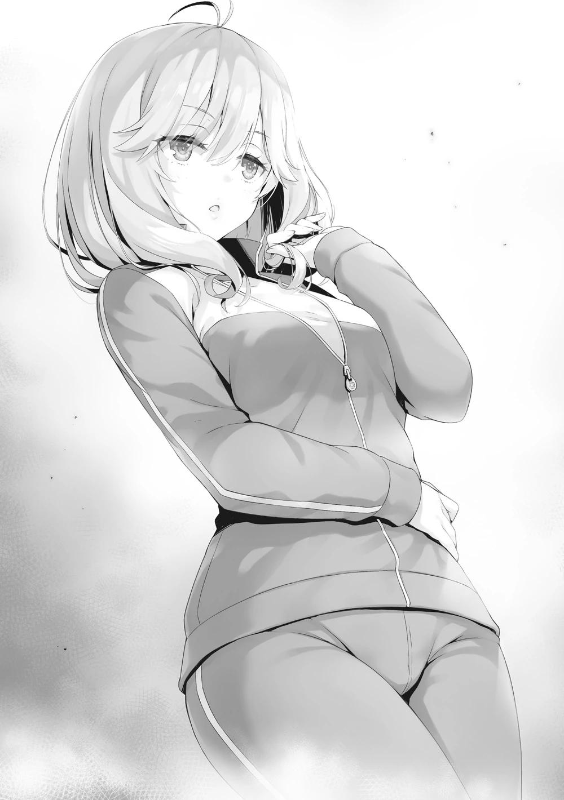
―¿Quieres decir que están cooperando con ellos sin saber nada?
―Todo vale por una razón. ¿No se les pidió que protegieran a alguien de 2º año molestando los movimientos y tareas de los de 1º como si fueran unos recaderos?
Aceptando la situación, revisa los registros de las búsquedas por GPS de hoy.
Se desliza por las capturas de pantalla y sigue el recorrido de los alumnos de 2º
año.
―Esta ejecución es demasiado buena. Nuestro ataque de hoy se filtró desde el principio, no hay otra manera.
―Sólo quedan 2 días para este examen especial. No es difícil pensar que estarían así de atentos. Ayanokouji-senpai también debe saber que hay dinero de premio por él, por lo que debe haber sentado las bases de antemano.
Viendo como se ha llegado a la segunda parte de la prueba, no es de extrañar que el día de su ataque fuera aprovechado, es lo que decía Yagami.
―Como iniciadores, es comprensible que dediquemos algo de tiempo a nuestro ataque por ahora. Pero no hay manera de que los de 2do año hayan estado vigilando a Ayanokouji-senpai por 24 horas al día ¿verdad? Al fin y al cabo hay una prueba especial.
El hecho de que sólo quedaran 2 días significaba que era un período de tiempo en el que la gente quería ahorrar incluso 1 punto más.
―En efecto...
―Aparte de eso, otra cosa que llama la atención es la forma en que nuestros grupos se acercaron a partir de caminos indeterminados. Incluso si se movían por separado, capturar a 5 grupos no es una tarea sencilla.
Sin responder, Yagami se puso una mano en la boca y pensó.
―¿Por qué no lo entiendes? Esa es la prueba de que el comandante del otro grupo se está escondiendo.
―¿Quieres decir que, al igual que Tsubaki, el que tiene el mando del otro bando se está ocultando...?
Tsubaki asiente y abre un mapa de toda la isla.
Entre una de esas reacciones del GPS, hay una persona que está mirando el estado de la batalla como ella.
Y entonces, dando instrucciones precisas, suprimieron a los grupos de 1er año.
―Si fuera yo, pensaría que debería suspender temporalmente el plan.
―¿Por qué?
―¿Podría estar pensando en forzar su paso por la fuerza? Eso es peligroso.
―No lo haré. Ahora mismo con esos 5 grupos de estudiantes capturados, no puedo hacer nada tan atrevido.
―Entonces, ¿por qué no lo suspendes?
―Lo haga o no, sería el mismo resultado.
―¿El mismo... resultado?
Esta situación estaba, desde el principio, dentro de las expectativas de Tsubaki.
En todo caso, estaba agradecida de que hubieran aparecido grupos obstructores.
―Aunque no sé quién da las instrucciones, les enseñaré que la información que pueden ver con sus ojos no lo es todo.
―¿Qué diablos vas a hacer?
―El comandante enemigo probablemente se dio cuenta anoche de que los 5 grupos de 1er año se movían.
―Ya veo, así que no se perdieron las búsquedas ni siquiera durante la noche.
―Aunque ya lo dije antes, los de 2º año tienen pruebas de 2º año. He preparado 5 grupos, así que de la misma manera el comandante enemigo nos lanzó 5 grupos de manera que salieran bien. Porque si hubieran preparado 6 o 7
grupos, estarían descuidando el examen especial.
―Pero ¿qué hay de la posibilidad de que hayan preparado 1 o 2 grupos más por aquello de ser precavidos?
―Así es. Pero por lo que puedo ver ahora, los grupos de 2º año que mostraron un comportamiento irregular sólo son 5. ¿No están lo suficientemente confiados como para juzgar que pueden lidiar con nosotros usando el mismo número? Pero eso es fatal.
Tsubaki tomó el transceptor en su mano, y una vez más dio órdenes.
―Con esto se acabaron los disturbios. Ahora puedes hacer lo que estabas esperando.
―¿Con quién contactas? Entre los grupos de los alrededores no hay ni uno que pueda moverse...
―¿No te dije? La información que puedes ver con tus ojos no lo es todo.
Después de dar instrucciones, Tsubaki piensa. Sobre quién estaba tomando parte en esta pelea.
―¿Mientras Ayanokouji escapa? No, eso es realmente imposible. No tengo suficiente poder de cohesión para dirigir a otras clases mientras doy órdenes, ni tengo espacio para hacerlo en este momento.
Murmuró de tal manera que incluso Yagami, que estaba a su lado, no escuchó más que el movimiento de su boca. Como Tsubaki pensaba, tendía a hacer conjeturas que ni siquiera eran escuchadas por su entorno. No importa lo pequeño que sea el volumen, una vez que se pone en una voz se vuelve claro en la mente de uno.
Si hubiera que compararla con algo, ella estaba tomando la ropa 1 pieza a la vez de un cajón desordenado y empacado y poniéndola de nuevo en orden.
―Es de suponer que Ayanokouji se ponga en contacto con quienes participan en esta situación y les pida su cooperación. Después de todo, probablemente se haya preparado para este momento desde una etapa temprana.
―Eh, ¿qué dijiste?
―Nada. Por favor, no te preocupes.
¿Había llegado a Yagami algo que sonaba como palabras por sus repetidos susurros?
Tsubaki contestó con un poco de irritación antes de volver a bajar la vista a su tableta.
PARTE 4
Contemplando el océano que titilaba como un diamante, Sakayanagi sólo bebió un sorbo de agua.
Más que mantenerse hidratada, quería mantener sus labios húmedos.
Eran las 7:05 de la mañana. Exactamente cuando Tsubaki comenzó su plan.
―Parece que han empezado a moverse.
Dejando caer sus ojos en la tableta, Sakayangi dio órdenes con el transceptor en su otra mano.
Sakayanagi continuó utilizando la búsqueda por GPS durante 3 noches; la 10ª
noche, la 11ª noche y la 12ª noche. Porque para rodear a Ayanokouji, era necesario moverse fuera de las horas de la prueba.
―Parece que éste terminó de estar a la espera, así que vamos a movernos.
―Eso está bien y todo, pero no hay garantía de que nos encontremos con ellos sólo porque vayamos a la misma zona ¿verdad?
La voz lánguida de alguien regresó desde el transceptor.
Era Tsukasaki de la clase de Sakayanagi.
Tsukasaki, que se dirigía al área, fue persuadido para molestar a algunos de 1er año y evitar que hicieran tareas hoy.
―Hasta este día 12, aunque poco a poco el terreno en esta isla deshabitada ha ido cambiando. ¿Sabes a qué se debe?
―¿Cambio en el terreno? ...Básicamente, ¿después de que la gente pase por allí?
―Así es. Todos los días los estudiantes y los miembros de las instalaciones se mueven a través de la isla deshabitada. Prácticamente, ya que Tsukasaki-kun eligió una ruta rápida que también es segura, ¿qué pasa con su utilización de la naturaleza?
Aunque es un cambio pequeño, había muchas pisadas que la gente había dejado atrás a lo largo de los caminos, especialmente desde que llovió.
―Más que nada, una vez decidido el destino, la deducción de qué ruta tomar no es difícil.
―No estás aquí pero es como si pudieras ver los caminos directamente.
Es sólo desde la parte superior de una tableta, pero Sakayanagi estaba efectivamente viendo la isla deshabitada en 3 dimensiones.
¿Quién se movía y hacia dónde? Dentro de su mente, una estimulación estaba ocurriendo.
Y después de eso, las personas que estaban haciendo marcas en el mapa son capturadas gradualmente.
Y entonces Sakayanagi, después de haber pasado 30 minutos mirando el océano, volvió a mirar su tableta.
―Ahora bien, como este es un momento para buscar tareas y áreas, no hay casi nadie que deje de moverse.
A partir de ahí, redujo los estudiantes a los de 1er año, y por un momento los redujo aún más en la medida de lo posible. Entonces descubrió 3 señales de
GPS que no se habían movido desde que la prueba comenzó a las 7 de la mañana.
―Yagami Takuya-kun, Utomiya Riku-kun, y Tsubaki Sakura-san. ¿Cuál es realmente mi oponente? ¿O están trabajando todos juntos?
Entrecerró los ojos mientras se reía alegremente.
Sakayanagi comenzó a recordar a la persona que le trajo esta interesante pelea.
Eso fue hace 3 días. Se remonta a la décima noche.
Sakayanagi recibió el contacto del grupo de Takemoto, que también había recibido un transceptor.
―¿Qué pasa en un momento como este? ¿Hay algún problema?
Sakayanagi pensó que pudo haber algún tipo de accidente, pero no parecía ser el caso.
―No, no es eso. En realidad, Ayanokouji parece querer hablar contigo.
―¿Ayanokouji-kun quiere?
Debido a ese nombre inesperado, la conciencia de Sakayanagi, que se estaba volviendo un poco somnolienta, se aclaró.
―Si pudiéramos prestárselo y permitirle hablar contigo, eso sí que ayudaría, dijo, pero...
―Por supuesto que no me importa. Por favor, pásamelo.
―Por favor, espera un poco.
Después de un rato de silencio-
―¿Es Sakayanagi?
―Buenas noches, Ayanokouji-kun.
Con un saludo tan elegante que el hecho de que estuviera a la altura del examen de la isla deshabitada era impensable, Sakayanagi rompió el hielo.
―Parece que estás bien coordinado con tu clase.
―Sí. Ryuuen-kun y Horikita-san también han podido contactar conmigo.
Todo está yendo favorablemente. Aunque no me he enterado de los detalles, parece que el grupo de Takemoto-kun tiene buena opinión de ti, ¿verdad?
―Tu grupo también ha progresado hasta el 5º puesto, eh. Estás en posición de aspirar a un puesto bastante alto.
―Sin embargo, no hay ningún motivo de preocupación.
―¿De verdad?
―¿Te reuniste con Ichinose-san?
―No, ni siquiera una vez en esta prueba. ¿Pasó algo?
―Ella se puso en contacto conmigo diciendo que algo no estaba bien. Me preocupa que esté distraída por haber estado aquí varios días. El examen especial es como un maratón. No es raro que el cuerpo se estropee o que la gente se sienta mal. Entonces, ¿necesitas algo?
―Tengo una cosa que me gustaría pedirte.
―Por favor, no te contengas y dilo. Te devolveré el favor por ayudar a mis compañeros.
―Tiene que ver con la habitación blanca.
―Como siempre, suena muy interesante.
Sakayanagi también sabía lo del director interino Tsukishiro. Ayanokouji tocó el tema y explicó cómo Nanase fue uno de los sicarios enviados tras él. Sin embargo, la habitación blanca todavía no estaba particularmente involucrada en eso. Explicó que la posibilidad de que fuera Amasawa Ichika era muy alta.
―Habría sido mejor que me lo hubieras dicho antes.
Hablando como si hubiera perdido la oportunidad de disfrutar, Sakayanagi parecía decepcionada.
―No tenía ninguna confirmación al respecto.
―¿Así que quieres que aplaste a Amasawa Ichika-san?
―...No, no es eso.
Ayanokouji se sintió ofuscado ante Sakayanagi por decir algo tan sorprendente con tanta suavidad.
―La verdad es que hay otra espina en mi costado.
Ayanokouji le contó a Sakayanagi el verdadero problema: Nagumo, Tsukishiro y el premio en dinero que le habían puesto.
Sakayanagi conocía a Ayanokouji desde que eran pequeños. Ella era la única persona que conocía su verdadero estado entre todos los de 2º año.
Pero la razón por la que no le había hablado antes del tema en cuestión era porque, como es lógico, los problemas que tenía Ayanokouji eran graves, y nunca antes había contado con Sakayanagi como una 『aliada』.
En primer lugar en esta escuela, la gente de diferentes clases eran enemigos hasta la graduación. Eso no cambió. Era imaginable que Sakayanagi utilizara la información sobre la habitación blanca para ganar. Sin embargo, por su contacto con ella, entendió que ese riesgo no era tan alto.
Y esta vez, como resultado de sopesar ese pequeño riesgo con un nuevo riesgo, el panorama cambia.
―Así que quieres decir que en un futuro próximo, los de 1er año empezarán a actuar pensando en ti.
―Así es. Me gustaría que te ocuparas de ellos por mí.
―Pero no creo que nadie pueda acorralarte, excepto si son de la habitación blanca.
―Los de 1er año seguramente usarán la violencia. Aprovechar que estoy solo para que me expulsen es lo más sólido. En ese caso, es probable que me impidan realizar cualquier tarea cercana y que me obstruyan el acceso a las zonas designadas.
Independientemente de la cantidad de gente que venga, a Ayanokouji no le sería difícil usar la fuerza para mantenerlos alejados, pensó Sakayanagi. Pero no se puede pensar que esa sea una forma favorable de hacerlo.
―Si todo el poder de los de 1er año no es capaz de derribarte, tu nombre se extenderá por toda la escuela en un instante. En cuanto a mí, si debo alegrarme o entristecerme, es un sentimiento complicado.
―Si puedes, quiero que estés triste. Además, es posible que Tsukishiro también esté planeando algo. Si puedo, quiero concentrarme en eso.
―Entiendo la situación.
―Tu carga se volverá inevitablemente pesada.
―Entendido. Si tengo que vigilarte continuamente, es posible que tenga que utilizar periódicamente la búsqueda por GPS.
Era algo que tenía que ser confiado a Sakayanagi sin importar qué.
―Por favor, no te preocupes. Ya disponemos de todos los puntos de los grupos pertenecientes a la clase A.
―Eso es porque - estás elaborando el contacto con los demás.
―Hasta el día 12 hemos estado rastreando la cantidad de puntos que tienen los 10 últimos grupos, ya que es vital para entender qué grupos están en problemas y qué grupos tienen puntos de sobra. Hay muchos grupos que tienen puntos hasta cierto punto, pero que no pueden llegar a los 10 primeros grupos.
En otras palabras, como organización, aunque utilicemos el GPS para buscar varias veces, tendremos suficientes puntos para llegar a la última jornada con holgura.
La clase A, perfectamente controlada por Sakayanagi, y la clase B de Ichinose, de la que ni uno solo traicionaría a los demás, unirse es actualmente una estrategia viable. En cuanto a la clase D, con respecto a las cosas que podían hacer podría decirse que ésta no era una de ellas. Incluso el coste de vigilar un transceptor no era algo con lo que se pudiera jugar.
―¿Estará bien si freno a los de 1er año que te tengan como objetivo?
―¿Significa eso que cooperarás?
―Sólo en lo que respecta a tu problema, sobre todo porque ésta ha sido un examen aburrido. Además, parece que esto tendrá un mérito para mí.
―¿Qué significa?
―Que Takemoto-kun está en deuda y tiene un gran concepto de ti es muy significativo. Eso significa que esto se convertirá en una "deuda" ¿sabes?
―Esto me duele en los oídos, pero si resulta bien hagámoslo un "favor".
―Está decidido. Ahora, pues, empezaré mis preparativos.
―Ah. Desde aquí, si te parece bien, ¿podrías seguir prestándome este transceptor?
―Por supuesto que tengo la intención de hacerlo. Al fin y al cabo, será más fácil poder comunicarnos entre nosotros. Ahora, ¿podrías devolverle el transceptor a Takemoto-kun un momento? Le contaré las circunstancias y luego le pediré que te lo entregue.
-Sakayanagi recuerda aquella décima noche, y sonríe porque es nada menos que un gran recuerdo.
Encima de su tableta, los 5 grupos que Sakayanagi puso a los de 1er año los detuvo.
―Ahora bien, con esto esos sospechosos 5 grupos han dejado de moverse. ¿Debo identificar a la persona que planeó este ataque?
Con el transceptor en la mano, Sakayanagi se puso en contacto con los alumnos de la clase A.
PARTE 5
―Um, ¿Tsubaki-san?
―¿Todavía hay algo que necesites?
―Aunque no sé lo que vas a hacer, creo que los 5 grupos deberían haber recibido instrucciones específicas en previsión de un momento como este. Antes de estar rodeados de 2º año no hubiera sido tan difícil para los 5 grupos escapar
¿no?
Los grupos de 1º año enviaron un total de 5. Aunque alguien señalara a esos 5
grupos, atraparlos en esta enorme isla deshabitada no sería fácil. El hecho de que hubieran sido atrapados tan fácilmente a pesar de eso, era una falla en el plan, quiso decir Yagami.
―Aunque se forzaran a escapar, podrían decir que tenían miedo de involucrarse con sus mayores o cualquier número de excusas. Si me lo hubieras dicho antes...
―¿Quieres decir que esto sucedió porque lo olvidé?
―Si lo expresas con tanta dureza, sí.
Tsubaki se enfrentó al aparentemente insatisfecho Yagami y respondió.
―Bueno, te lo diré ya que ha terminado... de hecho, es todo lo contrario.
―¿Lo contrario, dices?
―Mis grupos no fueron capturados, ellos capturaron los grupos del oponente.
―Eh... lo siento, parece que aún no lo entiendo.
―Los 5 grupos que enviamos para que expulsaran a Ayanokouji-senpai.
Incluso suponiendo que fueran capaces de acorralarlo hasta que fuera visible, si hubiera una gran diferencia de poder físico se escaparía, ¿no? Según los rumores tiene un poder similar al de Housen-kun o algo así. Para empezar, no tenía intención de detenerlo con estos grupos.
En respuesta a lo dicho por Tsubaki, Yagami ladeó la cabeza.
―Si dices eso, parece que quieres decir que los 5 grupos que enviaste nunca iban a ser capaces de ganar contra Ayanokouji-senpai. Eso haría que este plan no tuviera sentido.
―Tenemos dos objetivos. El primero es explorar el proceso de pensamiento de Ayanokouji-senpai. ¿Qué le gusta y qué no le gusta?
Ella explica mientras golpea la tableta con la yema del dedo índice.
―Antes de dirigirse al área designada, le disgusta reunirse con los estudiantes de 1er año. Mientras que evita las tareas con los miembros de las instalaciones y los alumnos de 2º año, así como con los de 3º. Lo que podemos leer de esto es que le disgusta tanto destacar que para evitarlo está dispuesto a aceptar castigos.
―Aunque fuera para leer sus patrones, todavía no hay necesidad de dejar que los grupos sean capturados.
―Hay un significado más importante, ¿no? Con esto los grupos que tratarán de proteger a Ayanokouji-senpai están atrapados.
Al escuchar esas palabras, Yagami se lanza un haa.
―Lo que debemos evitar es que alguien interrumpa en medio de la eliminación de Ayanokouji-senpai. Y el único que puede eliminar a Ayanokouji-senpai aparte de Utomiya-kun es Housen-kun-
Habiendo comprendido finalmente el objetivo de Tsubaki, Yagami comienza a buscar la señal GPS de Housen-kun. Sin embargo, no se podía ver en ninguna parte.
―La información que puedes ver con tus ojos no lo es todo... así que eso es todo.
Una vez terminada la explicación, Tsubaki deja salir sus pensamientos distraídos por un momento.
―Por favor, dime una última cosa. ¿Significa esto que si Housen-kun no hubiera seguido el plan, no habría funcionado?
―Uum, no lo creo. Confiaba en que Housen-kun estaría de acuerdo con este plan, así que lo ejecuté. Después de todo, desde el principio parecía que quería luchar solo. Pero incluso en la posibilidad de 1 entre 100 de que no aceptara, simplemente habría enviado a Utomiya-kun. En cualquier caso, sólo
necesitaba crear una situación perfecta de 1 contra 1. Después de eso, sólo hay que dejar que se enfrenten sin preocuparse por el resultado y todo saldrá bien.
Ayanokouji moviéndose solo se verá obligado a retirarse.
PARTE 6
El hombre cuya fuerza destacaba incluso en medio de todo el alumnado se adentraba vigorosamente en el bosque.
Sólo hay un objetivo. Derribar a Ayanokouji Kiyotaka de 2-D.
Considerando esta prueba de isla deshabitada, no, considerando el sentido común, las acciones violentas no son recomendables.
Sin embargo, a diferencia de la escuela que tenía cámaras de seguridad por todas partes, en esta isla deshabitada no hay vigilancia.
Con sólo los relojes de pulsera pegados a sus cuerpos, no era posible verificar hechos concretos.
El cerco sugerido por Tsubaki Sakurako.
No tenía ningún interés hacia tal cosa desde el principio, pero tenía una razón para seguir el plan.
En esta vasta isla deshabitada, encontrar a un solo ser humano no es sencillo.
No sólo habría que usar repetidamente el GPS para buscar, sino que si alguien te obstruye todo sería en vano.
Si alguien tomara el mando, podría ser útil para eliminar esa obstrucción.
Precisamente porque pensaba eso, Housen decidió fingir que seguía las órdenes de Tsubaki.
Todo era para encontrar, sin esfuerzo, a Ayanokouji en una situación de 1 contra 1 en la que nadie sería capaz de interrumpirlos. Cuando sólo quedaba una pequeña distancia de Ayanokouji, Housen tiró su transceptor.
Mostró su intención de ignorar las órdenes de Tsubaki de aquí en adelante.
Sacando su propia tableta, utilizó una búsqueda por GPS y cerró el último tramo de distancia.
Con sus propios ojos, comprobó que Ayanokouji Kiyotaka se encontraba en una posición a 300 metros de él. Estaba más lejos que los demás estudiantes de primer año. Sólo un poco más. Housen no tardó en reflexionar sobre la felicidad que le producía el hecho de que fuera a poder luchar contra él de verdad.
Sin embargo, como para bloquear la ruta de Housen-kun, la señal del GPS de alguien interceptó su línea de visión. Fue sólo una coincidencia. Pensando eso, Housen ni siquiera verificó de quién se trataba.
Más allá de su línea de visión, su objetivo de capturar a Ayanokouji estaba al alcance de la mano.
―¡Te encontré, Ayanokouji-senpai!
Ayanokouji notó a Housen por su grito que no contuvo su emoción y se volteó.
―Housen ¿eh?
Miró tranquilamente a Housen y dejó de caminar.
―¡He estado esperando esto!
―Pensé que vendrías a mi encuentro antes. Estás más callado de lo que esperaba.
―Eso es porque alguien que te bloquea cuando estás tratando de hacer algo es algo que te desanima.
―¿Qué quieres decir?
―No te hagas el tonto. Sé que Nanase vino a delatarme y a darte una amable advertencia.
―Ya veo. ¿Preparaste a propósito el tiempo para que Nanase me hablara del ataque un día antes?
―Pensé que sería un truco barato que no me gustaría, pero resultó ser conveniente para mí. Fue útil.
Dijo Housen mientras agarraba con fuerza sus manos y chocaba sus puños. Se podía creer sin lugar a dudas que la verdadera pelea comenzaría dentro de 10
segundos a partir de ahora.
―Eso no es razonable, ¿sabes? Housen.
―¿Ah?
En este lugar que debería ser una situación de 1 contra 1, un hombre sin siquiera una sombra se paró para bloquearlo.
―Piérdete ahora. Estás en el camino.
Como si este hombre hubiera previsto que Housen iba a aparecer, había estado al acecho. Los ojos de Ayanokouji se encontraron rápidamente con los de ese hombre, y desapareció en el bosque. Housen quería perseguirlo de inmediato, pero sería difícil ignorar
al hombre que tenía delante.
―¿Qué hace aquí un cabrón como tú? -Ryuuen.
―Esa es mi línea, Housen. No deberías tener nada que hacer aquí,
¿verdad?
A partir de ese breve comentario de Ryuuen, Housen comprendió inmediatamente la situación.
―¿Ah? ...Ah, ¿se han filtrado mis pensamientos en alguna parte de la línea? ―Housen, que comprendió la situación, soltó una risa alegre―. Así que el hecho de que los otros de 1er año fueran capturados por los de 2do año no fue una coincidencia".
La compañía enviada por Tsubaki para acorralar a Ayanokouji fueron todos acorralados por los de 2º año y dejaron de moverse de sus lugares. Todo eso apuntaba a la existencia de alguien que controlaba a los de 2º año al igual que Tsubaki controlaba a los de 1º.
―¿Fuiste tú? No, no tengo esa sensación.
Si Ryuuen hubiera estado dando las órdenes, una tableta y un transceptor serían indispensables.
Pero Ryuuen ni siquiera parecía llevar una mochila. Además, dar órdenes a varios grupos mientras se lucha en el frente sería difícil.
―¿Ya terminaste de ordenar tus pensamientos?
―No lo sé. Pero cómo voy a moverme es algo que no tiene nada que ver contigo.
Aunque comprendía la situación, no podía entender por qué Ryuuen se había convertido en una de las personas que estaba protegiendo a Ayanokouji de la expulsión.
―Desafortunadamente, sí tiene que ver conmigo.
Mientras ríe superficialmente, Ryuuen comienza a caminar hacia Housen.
―He estado haciendo muchas cosas y ahora mi bolsillo se ha enfriado.
Ahora soy como un mercenario que sólo cumple porque tiene que hacerlo.
―Dinero, ¿eh? ¿Pero crees que puedes detenerme?
―¿Qué, estás pensando que no puedo detenerte?
A quemarropa. A una distancia tan cercana que se tocarían si extendieran sus brazos, los 2 sonrieron siniestramente. El que atacó primero fue Ryuuen.
Manteniendo a Housen a la vista, dirigió su puño izquierdo cerrado hacia Housen. Como la diferencia de poder por la diferencia de sus complexiones era obvia, fue un ataque que apuntó a la mandíbula.
―Otto... Esa es una mano izquierda bastante rebelde.
A pesar de que le habían quitado el primer movimiento, Housen no había descuidado la pelea. Detuvo ligeramente la mano izquierda de Ryuuen frente a su pecho, abrió la boca y se rio.
―Apestas. No vomites tu aliento sobre mí, gorila.
―Sólo tu boca es de primera clase. ¿Por qué no me muestras el orgullo y la fuerza de uno de segundo año? ¡¿Eh?!
Cuando pensó que había soltado su mano izquierda capturada, su enemigo volvió a agarrar su brazo al instante y tiró de él. Entonces Housen le golpeó la frente con la suya.
―¡¡…!!
Ese inesperado y violento golpe sacudió el cerebro de Ryuuen y lo hizo trastabillar significativamente. No es que Ryuuen no tuviera experiencia. Más bien, tenía muchos logros peleando cara a cara que no se podían comparar con los de un delincuente común.
Sin embargo, el Housen que tenía enfrente ya había superado eso varias veces.
―¡Oraa!
Ryuuen, incapaz de girar su cuerpo para esquivar, recibió la patada de Housen sin más en su abdomen. Su espalda, al haber sido arrojada al suelo, presentaba una enorme abertura. Pero Housen sólo se rio donde estaba y sin moverse.
―Ladraste muy fuerte pero aún no han pasado 10 segundos ¿sabes? No me hagas reír.
―Ja... tienes la cabeza muy dura, carajo. ¿Seguro que eso no es una piedra? Maldito gorila.
Inmediatamente después, Ryuuen dijo cosas que podrían interpretarse como un desafío hacia Housen. Al escuchar eso, como si estuviera asombrado Housen se rascó la parte posterior de su cabeza.
―Parece que realmente te he sobrestimado. Seguro que ni siquiera merece la pena hablar de ti.
―Sin embargo, no creo que haya nadie que pueda satisfacerte allí.
―Lo hay. Ayanokouji se alejó fácilmente por detrás de ti. Ahora déjame ir.
―¿Ah?
Ryuuen, al escuchar esas palabras de Housen, dejó de sonreír por primera vez.
―¿Qué? ¿Sabes algo, Housen?
―¿Que si sé algo? Ah, ¿el hecho de que eres tan débil como pareces?
―Pensé que sólo había unas pocas personas que conocían el otro lado de ese tipo. Nunca hubiera pensado que tuviéramos eso en común.
Como si se entendieran, se acumularon monólogos que parecían una conversación.
―Por primera vez, me interesas, Housen. ¿Cuándo y dónde lo hiciste, y quién ganó?
―¿Tú también estás encaprichado con Ayanokouji, Ryuuen?
La mayor razón por la que Ryuuen se contuviera en esta escuela era para vengarse de Ayanokouji. Por eso, ya sea por una pelea o cualquier otra cosa, no permitiría que Ayanokouji fuera derrotado. Incluso si fuera por Housen frente a él, en una pelea más allá del nivel de los estudiantes de preparatoria.
Housen percibió esa pasión mezclada con algo parecido a la intención de matar y resopló.
―Relájate. Mi pelea con él nunca terminó, no, ¿o debería decir que nunca empezó?
Estirando el cuello hacia la derecha y hacia la izquierda y dejando que sus huesos tronaran, se acercó a Ryuuen.
―No he visto a nadie que pudiera parar tranquilamente mis puños hasta ahora. No, para empezar, a partir de ahora no creo que vea a nadie que pueda ser apuñalado con un cuchillo sin mostrar siquiera dolor.
Cuchillo, apuñalado. Al escuchar esas palabras, Ryuuen inmediatamente desenterró recuerdos en su mente. El recuerdo de cuando Ayanokouji llevaba temporalmente una venda sobre su mano que cubría una cicatriz.
―Tch, parece que se está divirtiendo mucho sin mí.
Incluso mientras recibía dos golpes de sus puños, los ojos de Ryuuen no dejaron de mirar a Housen ni un segundo. Incluso viendo algo tan siniestro, Housen siguió acercándose a él sin sentir recelo. En primer lugar, nunca tuvo nada parecido a la presunción o la negligencia hacia una pelea. Sólo una disposición normal para el combate.
Más aún teniendo en cuenta que el enemigo que tenía delante era Ryuuen, con el que compartía una mala reputación en la secundaria. Pateó el suelo y acortó la distancia con una velocidad impensable para un cuerpo tan grande. Ryuuen, que había estado haciendo para protegerse la cara, fue derribado, y un puño se le clavó en la cara.
El brazo se movió con tanta fuerza que, si no se estuviera protegiendo, no sería raro que se hubiera roto la nariz. Poco después de levantarse, Ryuuen volvió a caer al suelo. Housen comprobó internamente que la diferencia entre sus fuerzas era evidente en este combate 1 a 1.
Ryuuen trató inmediatamente de levantar la parte superior de su cuerpo, pero una patada fue lanzada vigorosamente a su cara, como si estuviera esperando ese momento, tirándolo de espaldas.
―Estás muy ocupado durmiendo y despertando, ¿eh?
Poco menos de 1 minuto después de iniciada la pelea, el resultado era obvio para cualquiera que lo viera.
―¿De verdad crees que es así imbécil...
―¡Hahaa! ¡Es como pensaba Ryuuen! ¡Sólo estás en este nivel!
Housen parecía feliz cuando gritó eso, pero al mismo tiempo podría haber sido llamado un señalamiento. Desde el principio, la diferencia en sus potenciales de combate era lo suficientemente grande como para que un giro fuera imposible. A pesar de ello, la voluntad de pelear de Ryuuen no mostraba señales de flaqueza.
El corazón de Housen se partía cuando su oponente de lucha era derribado en un 80% con un solo golpe. Otro 10% fue un farol. Y el último 10% se desesperaba cuando recibía el segundo y tercer golpe. Sin embargo, sus ojos no pudieron ver un solo cambio en los de Ryuuen ante él, incluso mientras recibía
golpes. Por eso, intentó utilizar palabras para hacerle entender la diferencia de poder y rendimiento.
En respuesta a ese ataque mental, Ryuuen se adelantó un paso.
―Esto es un poco divertido, pero ¿crees que ya ganaste?
Incluso estando dolorido, Ryuuen levantó su torso con una sonrisa indestructible.
―No me hagas reír. Como si tú fueras mi enemigo.
Housen se puso delante de él, agarró el cuello de Ryuuen y lo levantó.
―Al final, eres un hombre que no puede conseguir nada a menos que utilice a alguien más.
―Ganar en estas peleas de 1 contra 1 no lo es todo, ¿sabes? La verdad es que cuando estábamos en la secundaria, tu y mi visión del mundo no cambió.
A pesar de la situación, Ryuuen intenta sacudir a Housen.
―Sí, siempre te escabullías y evitabas cualquier enfrentamiento directo.
Qué poder tan aterrador.
Aunque no es que su intento de sacudirlo haya sido completamente sin sentido, no estaba al nivel de dañarlo. La posición de Housen, que poseía una abrumadora supremacía en la lucha, no cambió. Entonces, Ryuuen hizo un gran movimiento con su mano izquierda mientras era capturado. Luego llevó esa mano al costado de Housen y le lanzó la tierra que tenía en su agarre a los ojos.
―¡Agh!
Aunque lo tomó por sorpresa ese ataque, Housen se defendió con su mano hasta que la tierra se despejó.
―¡Eres un ingenuo!
―¡¿Es eso cierto?!
Esta vez usando su mano derecha, lanzó la arena almacenada hasta allí a los ojos de Housen.
―¡He dicho que eres un ingenuo!
Housen evitó sin dificultad su mano izquierda y la arena fue lanzada desde allí con su mano. Desde que levantó a Ryuuen, había estado prestando atención a sus puños cerrados.
―¡Después de todo, el valor de las técnicas en las que se apoya un principiante en las peleas ya está decidido!
Esta vez, justo después de ser contraatacado, Housen golpeó rápidamente el lado izquierdo de la cara de Ryuuen.
Era un golpe tipo jab que daba más importancia a la velocidad que a la potencia.
Esta vez fue dirigido al lado izquierdo, y luego igualmente al lado derecho. Los golpes son como los de un boxeador que golpea un saco de arena repetidamente.
Mientras es golpeado con la suficiente intensidad como para perder el conocimiento, la luz de los ojos de Ryuuen atraviesa las pupilas de Housen durante un segundo. Justo después, el campo de visión de Housen, que estaba mirando a Ryuuen siendo golpeado lo suficientemente fuerte como para salir volando, vaciló por un segundo.
―...¡Hagh!
Ryuuen, girando su cuerpo incluso mientras lo liquidaban, lanzó una patada giratoria justo antes de ser derribado. Aunque sólo un poco, rozó la barbilla de Housen. Al no tener intención de recibir ni siquiera un golpe más, Housen se irritó. Agarró el flequillo de Ryuuen y lo levantó.
―¿Te conformas con pegarme una vez? ¡¿Ah?! ¡Te voy a matar!
Cuando fue golpeado por séptima vez, una alerta sonó desde el reloj sobre la muñeca de Ryuuen.
―¡Jajaja! Finges estar bien pero esa alerta significa que tu cuerpo está llegando a su límite ¿no? Parece que tu reloj es mucho más honesto que tú.
El reloj había estado monitoreando anormalidades en cosas como el ritmo cardíaco y lanzó una alerta.
―Eres realmente, un gorila, no es así... Al menos reconoceré tu orgullo en la pelea...
Housen tomó ese elogio como una rendición, sonrió triunfante y se soltó el flequillo. Incapaz de mantenerse consciente, Ryuuen cayó al suelo sin más. La alerta de advertencia resonó inútilmente por todo el bosque.
―Parece que la alerta de advertencia está sonando. ¿No significa eso que vas a llegar pronto a tu límite? Está bien mostrarlo, ¿sabes?
―Ja... estás bromeando. ¿No se acaba de romper este reloj?
Ryuuen bajó los ojos a su reloj de pulsera y sonrió, pero cualquiera podía ver que obviamente se había hecho mucho daño.
Al ver esa desagradable figura, Housen escupió a sus pies, como si estuviera aburrido.
―Nos vemos Ryuuen. No fue divertido pelear contigo.
―Espera. Tengo curiosidad por saber por qué crees que has ganado.
―¿Ah?
―¿Te dije que había perdido aunque sea una vez?
Housen no sintió más que asombro y se dispuso a pasar junto a él, pero su atención había sido atraída por un momento y decidió no hacerlo. Los ojos de aquel que parecía burlarse de él de forma unilateral, al igual que sus palabras, aún no habían muerto.
―Al menos reconoceré tu fortaleza mental. Pero ¿sabes?... ¡no es que pueda seguir haciendo esto para siempre!
Los humanos son criaturas débiles al dolor. No importa lo duros que se comporten, si son golpeados por un poder intenso como el que desprenden los puños de Housen, el dolor llegará para cualquiera. Es sólo una cuestión de cuánto pueden soportar.
Por no hablar de que cuando se tiene que aguantar, es imposible anular una diferencia de poder abrumadora. Sin perder la compostura a pesar de que la
alerta de advertencia sonó por segunda vez, Ryuuen recibió medidas precisas de dolor. Al recibir innumerables golpes de Housen, el reloj que Ryuuen tenía en la muñeca cambió automáticamente a la alerta de emergencia. A este ritmo, si se le dejaba solo más de 5 minutos, los empleados y un equipo médico vendrían a este lugar.
―Tu cuerpo es honesto. Es suficiente, acepta ya esta situación desesperada.
―Ah, el dolor está lo suficientemente adormecido como para sentirse bien...
Ahora mismo, sin volver los ojos a su reloj de pulsera ni una sola vez, se levantó mientras sonreía siniestramente.
Aquí y ahora, Housen aprendió que Ryuuen tenía una fortaleza mental indomable.
―¿Qué carajo eres? ¿Por qué persistes aunque te cueste todo lo que tienes sólo para mantenerte en pie? No debería tener mérito seguir siendo terco aquí.
Como si de un despertador se tratara, acercó por un momento a sus oídos el reloj de pulsera que sonaba como una penetrante alerta de emergencia.
―¿Seguir siendo terco? Haa, tu forma de pensar está equivocada.
En ese momento Housen pensó que Ryuuen interrumpiría su alerta de emergencia directamente. Pero sin llegar a interrumpir su alerta de emergencia, Ryuuen bajó los brazos e introdujo las manos en sus dos bolsillos.
―La pelea aún no ha terminado.
―¿Estás loco...? si no llamas a la escuela, tendrás que retirarte, ¿sabes?
―¿Así que como el que me hizo retirarme, te expulsarán?
Si estas circunstancias fueran vistas por la escuela, Ryuuen se preguntó cómo lo juzgarían. Housen recibió una ligera patada en la barbilla. Casi no tenía heridas.
La probabilidad de que la escuela interpretara esto como violencia unilateral no podía ser ignorada.
―Ya que no puedes estar a la altura como oponente, ¿pretendes hacerte la víctima? Qué patético. Eres patético, Ryuuen.
Viendo la situación, esto podría tomarse como una inversión de sus posiciones, pero Housen no vaciló ante algo así. Desde el principio decidió hacer que Ayanokouji se rindiera con violencia, aunque había pasado por su lugar.
―Si la escuela da tanto miedo, ¿no deberías volver?
―Hablando de mierda.
Juzgando que activar intencionalmente la alerta de emergencia era la estrategia de Ryuuen, Housen se adelantó una vez más.
―Mi GPS en particular está apagado. Matarte antes de que llegue la escuela no sería un problema.
Aunque la escuela se apresurara a llegar a este lugar, tendrían al menos 30
minutos.
―Kuku, ven hacia mí.
Housen todavía no estaba asustado. Ryuuen le dio la bienvenida sin siquiera sacar la mano del bolsillo.
―Si ni siquiera tienes ganas de protegerte, ¡vete a dormir ya!
No queriendo perder más tiempo, Housen cerró su puño derecho. Ryuuen sacó sus dos manos del bolsillo, pero éstas seguían cerradas.
―¡No se te ocurra usar trucos baratos conmigo!
Housen intuyó que Ryuuen se estaba aferrando a algo, pero no hizo que se detuviera en absoluto. Para quebrar su voluntad y romperla, envió un derechazo hacia Ryuuen con todas sus fuerzas. Al ver eso, Ryuuen lo aceptó de frente sin abrir ninguno de sus puños.
El brazo de Housen intentó abrir su guardia, pero justo después-
―¡Doryaaa!
Desde un punto ciego dentro del bosque, dos sombras saltaron y tomaron la espalda de Housen.
―¡¿Qué?!
Era natural que Housen se sorprendiera desde el fondo de su corazón. No había sentido ninguna señal de ellos. Cuando utilizó la búsqueda por GPS hace unos minutos, nadie más que Ayanokouji y Ryuuen estaba en los alrededores.
Incluso si se hubieran dirigido hacia aquí justo después de que comenzara la pelea, no habrían tenido la oportunidad de llegar. A pesar de eso, 2 hombres capturaron los brazos de Housen. Eran como fantasmas.
Habría sido una cosa si fuera sólo Ishizaki, pero Albert, que poseía una fuerza que no era inferior a la de Housen también saltó sobre él. Como era de esperar, incluso Housen ya no podía seguir avanzando. Albert tenía su brazo derecho, el dominante, mientras que Ishizaki mantenía su brazo izquierdo en el otro lado.
―¡Qué mierda es esto!
Aunque luchó frenéticamente, ni siquiera Housen pudo sacudirse fácilmente ambos brazos. Al instante siguiente, lo que se reflejó en los ojos de Housen fue que Ryuuen bajó la guardia y se rio de forma insólita.
―Es sencillo. Si el reloj se rompe, no será detectado por el GPS.
Desde el principio, Ishizaki y Albert desactivaron las funciones de sus GPS y acompañaron a Ryuuen. Housen se enteró de que cuando pensaba que esto iba a ser una pelea 1 a 1, ya había entrado en el plan de Ryuuen.
―¿De verdad pretendes luchar conmigo 3 contra 1? ¡¿Aah?!
―No ladres tan fuerte, gorila. Tu ejecución comienza aquí, ¿sabes?
Una vez más, Ryuuen lanzó sus puños cerrados a la cara de Housen sin un ápice de duda. Incluso cuando la cara de Housen se dobló hacia la derecha y hacia la izquierda, siguió repitiendo hasta que sus piernas se clavaron en el suelo.
Mientras soportaba el temblor de sus rodillas Housen seguía aullando, pero sin poder mover las manos ni una sola vez, seguía recibiendo golpes. Al poco tiempo, Housen se desplomó en el suelo por el daño que había acumulado.
Cuando la cabeza de Housen llegó a un punto justo, Ryuuen la sujetó con ambas manos y golpeó repetidamente con su rodilla. Tenía debilidad por su nariz.
―¡Gah...!
Alzando una voz que no salía, Housen cayó de espaldas por primera vez.
Ryuuen hizo una señal a los 2 con los ojos, y le sujetaron los brazos igual que cuando estaba de pie.
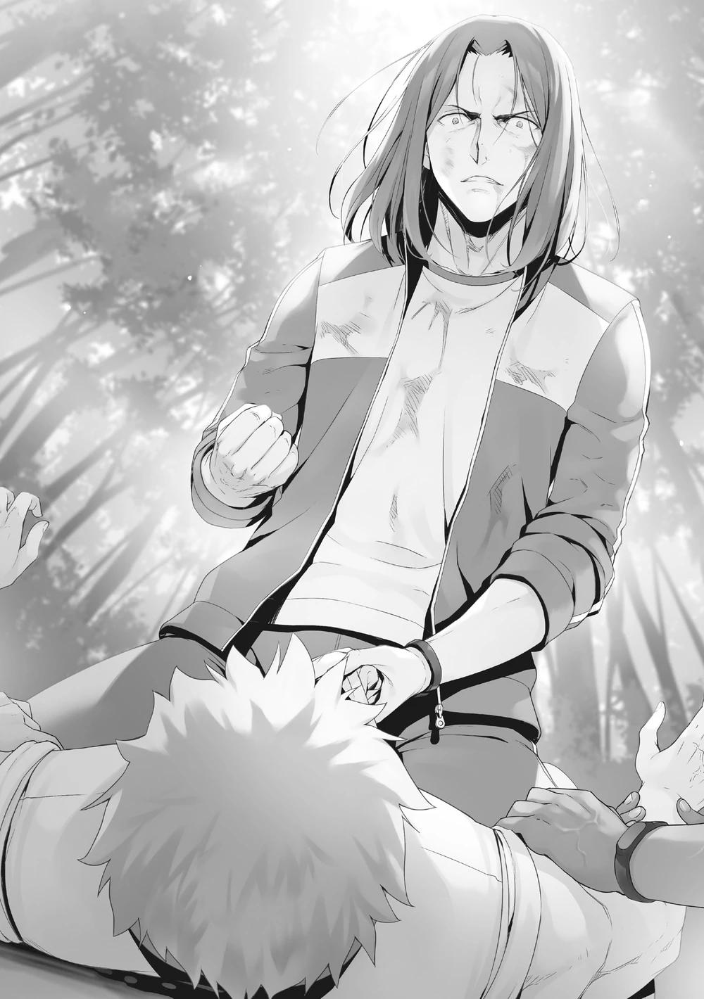
―Los gorilas no suelen llevar esposas. Bueno, me has dado mucho, Housen.
Arreglándose el pelo, Ryuuen se puso a horcajadas sobre Housen desde arriba.
―¡Despreciándome... este cabrón de mierda!
―¿Despreciándote? Ja, ¿qué diablos quieres decir?
― ¡Dije que eres un miserable de poca monta que ni siquiera puede pelear conmigo 1 a 1!
―Kuku, no me hagas reír. No soy tan estúpido como para enfrentarme a un gorila 1 contra 1.
Diciendo eso mientras se reía, Ryuuen levantó su mano.
Y entonces sin vacilar golpeó la cara de Housen con ella.
―Ah bien, quédate tranquilo Housen. No te diré que llores. Nada cambiará aunque te disculpes.
Incluso siendo golpeado mientras está completamente indefenso, Housen no fue débil al recibir daño aquí. Por el contrario, se enfadó más y luchó más. Albert e Ishizaki sabiamente siguieron conteniéndolo.
―¡¡Cabeza de mierda!! ¡Muévanse, cabroncetes!
―No luches tanto, la cocción sólo empieza a partir de aquí, ¿sabes? te daré un gran masaje así que disfruta ahí abajo.
El puño de Ryuuen descendió dos y tres veces, pero lejos de escupir palabras de rendición, Housen siguió aullando.
―Como era de esperar no tienes más que orgullo para pelear.
Ya sea en el plano físico o mental, Housen demostró lo que tanto le enorgullecía a la hora de pelear. Si tan solo fuera un 3 contra 1 desde el principio. Al equipo de Ryuuen le costaría mucho ganar solo. Eso simplemente mostraba la fuerza de Housen, el hombre que actualmente estaba a su merced.
Pero cuando se trataba de peleas, el vencedor se decidía a menudo en un momento. La diferencia en un golpe o en la caída era como la luz y la oscuridad.
Un segundo de negligencia o de engreimiento podía hacer que las tornas se volvieran en tu contra. Después de eso Ryuuen asestó a Housen un linchamiento repetido y unilateral. Como era de esperar, incluso Housen perdió poder en su cuerpo.
―Rudo. Me ha empezado a doler el brazo.
―Haa, haa... imbécil...
Intentó liberar su brazo derecho dominante de Albert, pero no tuvo efecto.
―Pensar que tenías un subordinado así... superó mis expectativas.
Housen miró fijamente a Albert que no perdería ante él en términos de poder bruto.
―Tú, grandullón. ¿Por qué sirves al mando de alguien como Ryuuen? ¿Ah?
El hecho de que Albert tenía una fuerza de combate pura que superaba a la de Ryuuen era evidente.
―Bueno, tienes razón cuando dices que Albert es un hombre al que no puedo ganar en 1 o 2 combates por mucho que lo intente.
―¿Y por qué?
―No lo entiendes Housen. La simple fuerza sobrehumana de la que puedes presumir no significa que estés en la cima.
Aunque le dijeran tal explicación, Housen, al haber peleado usualmente solo, era incapaz de entenderlo completamente.
―Kuku. Aunque en el caso de Albert es una cuestión de simple camaradería.
Aunque no les gustaban las peleas sin sentido, la clase de Ryuuen juzgó que seguirlo era su mejor opción. Precisamente por eso, le prestaban manos que no dudaban en hacer cosas poco éticas de vez en cuando. Hubo ocasiones en las que Ryuuen perjudicó temporalmente a sus compañeros como parte de sus
planes, pero creyendo que en última instancia era por el bien de la clase, decidió seguirle. Al principio era un hombre de buen corazón al que no le gustaba la violencia.
―¡No creas que ganaste con esto Ryuuen!
―Nunca podré estar de acuerdo contigo. La forma en que estoy significa mi derrota. Pero para mí, algo como el método no importa. Quien quede en pie al final es el ganador.
Ryuuen nunca compartió el bello sentimiento de tener una pelea 1 a 1. Para él, las provocaciones de Housen no tenían sentido. Más bien las aceptaba como la aflicción del perdedor y se regodeaba en el placer.
―¡J, sh, mierda...!
Habiendo sido golpeado varias decenas de veces, incluso Housen se estaba acercando a su límite. Incluso si sus brazos no hubieran sido suprimidos, no habría sido fácil vencer a Ryuuen.
―Recordaré esto... aunque ganes aquí, bastardo, te mataré de inmediato la próxima vez que te vea.
―Aunque no pretendo que un gorila tome represalias... si vas a hacerlo hazlo bien ¿de acuerdo? Ganar no es tan sencillo. Incluso si me mandas a volar, si eso hace que te expulsen, es tu derrota.
― ¡Que mierda dices...!
El recto absoluto de Ryuuen golpeó la mejilla de Housen y le arrancó la conciencia. Como el combate concluyó con el desmayo de Housen, Ryuuen se levantó.
―Fu-... esa fue una pelea que rompió los huesos.
Limpiando la sangre de su puño, Ryuuen miró al cielo y exhaló un aliento cansado.
―Sí, pero qué tipo tan formidable... Realmente pensé que era un monstruo.
―Luchar contra alguien así de entrada habría sido una idiotez.
Albert estuvo de acuerdo con esas palabras y asintió.
―Ustedes también lo hicieron bien.
Como para hablar de lo duro que fue este combate, Ryuuen dio palabras de agradecimiento.
―¡N, no! ¡Sólo te apoyamos! ¡¿Cierto, Albert?!
Ni Ishizaki ni Albert tenían grandes heridas que destacaran. Eso era porque Ryuuen decidió que esos 2 no podían ser dañados después de arrastrarlos a esta pelea. Eso es porque si más personas hubieran sido heridas, esta pelea no habría terminado como una simple pelea.
―Ustedes, váyanse pronto. No sería raro que los miembros de la institución llegaran aquí en cualquier momento.
Había pasado un tiempo razonable desde que el reloj de Ryuuen hizo sonar la alerta de emergencia.
―Uh, ¿qué pasa con Ryuuen-san...?
―Bueno, esto es así. Aunque dijera que quiero continuar, no me dejarían hacerlo tan fácilmente.
Al igual que el inconsciente Housen, las heridas que recibió Ryuuen eran tan graves como debían ser.
―Me retiraré con Housen de esta manera.
―¿Está bien?
―He confiado todo lo que hay que hacer a Katsuragi. Aunque se ha vuelto difícil entrar en el top 3.
Si hubieran dejado ir a Housen aquí, habría sido posible que viniera de nuevo tras Ayanokouji. Y si el cabecilla herido, Ryuuen, hubiera desaparecido de este lugar, eso se convertiría en sí mismo en un problema.
Harían creer que esto había sido una pelea 1 a 1 entre Ryuuen y Housen y se retirarían juntos. Ese era el plan, pero también había juzgado desde el principio que esa era la forma más limpia de hacerlo.
―...Es decir, desafortunado.
Para ayer, el grupo de Ryuuen y Katsuragi estaba en el quinto lugar. Aunque no es mucho, todavía había una oportunidad para que se mantuvieran en los primeros puestos. Ishizaki se lamentó de ello.
―En realidad, ni siquiera eso.
Como si recordara algo, Ryuuen sonrió levemente. Sin saber por qué lo hizo, Ishizaki y Albert se miraron.
―Ya les contaré. De momento, váyanse.
Tanto Ishizaki como Albert querían evitar retrasarse lo más posible en el regreso a su grupo. Por esa razón, tenían que intercambiar sus relojes y reunirse con su grupo lo antes posible. Después de que los 2 corrieran juntos hacia el punto de partida, Ryuuen utilizó el cuerpo de Housen como una banca improvisada, se sentó en él y perdió el conocimiento.
PARTE 7
―Gracias por el informe, ya puedes volver a la prueba.
Tsubaki recibió el informe de un transceptor y terminó la conversación en silencio.
―¿No resultó bien?
Yagami lo juzgó por su expresión y preguntó.
―Cuando llegaron a ver el punto donde contactamos por última vez con Housen-kun, los profesores acababan de reunirse y se dirigían al punto de partida. Al parecer, tuvo una pelea con Ryuuen, de la clase 2-B, en la que ambos resultaron gravemente heridos. Era sospechoso que Ayanokouji-senpai siguiera moviéndose.
Si Housen hubiera ido a encontrarse con él en una pelea 1 contra 1, habría sido extraño que su señal de GPS no dejara de moverse desde ese lugar.
―No sé mucho acerca de esa persona, pero parece que detuvo a ese Housen-kun.
Tsubaki , que no había digerido del todo la situación, hizo un mohín con los labios y pensó en el porqué de su plan fallido. Habían impedido perfectamente que Ayanokouji llegara a sus zonas designadas C3 y D2, pero aún así pudo conseguir una buena posición. Pero al mismo tiempo también se podía decir que esto le daba tiempo al enemigo.
―No hemos terminado de intentar que Ayanokouji-senpai sea expulsado con esto ¿verdad? Viendo como los de 1er año nos están ayudando, no podemos dejar de aplastar a un solo grupo. Si tienes otro plan por favor dímelo.
Yagami se acercó a ella diciendo eso, pero Tsubaki evitó su mirada y murmuró con desinterés.
―Incluso si intentamos hacer algo más peligroso no nos beneficiaría.
Porque nuestras posibilidades de salvar a los grupos en dificultades van a desaparecer tarde o temprano.
―...Entonces, ¿nos vamos a retirar?
―Realmente no me gusta esto. Mi plan podría haber estado condenado al fracaso desde el principio.
―¿Qué quieres decir?
―Ya que eligió caminar solo a pesar de tener el dinero del premio en su cabeza, Ayanokouji-senpai debe haber estado bastante alerta. Más que nada, ejecutar este plan con los de 1er año que ni siquiera pueden confiar en los demás fue una imprudencia.
Tsubaki odiaba estar inquieta después de fracasar más que sentirse deprimida.
―Me arrepiento de no haberlo hecho yo.
Se lamentó mucho de que hubiera sido mucho mejor así. Se dio cuenta de algo cuando bajó la pantalla de su tableta.
―¿Oh...?
Aquí Tsubaki notó que Utomiya no estaba allí.
―¿Qué pasa?
―¿Dónde está Utomiya-kun?
Cuando le preguntaron eso, Yagami también actuó como si acabara de notar que Utomiya no estaba allí.
―Hace unos 30 minutos, creo que estaba cerca...
Tsubaki se lanzó a luchar contra un enemigo invisible que no podía ver con su tableta. Sintiéndose inquieta, Tsubaki mostró el mapa de hace 10 minutos y buscó la posición de Utomiya en ese momento. Estaba a 400 metros al suroeste de donde Tsubaki estaba ahora mismo.
―Qué estás haciendo...
Sólo había otra señal de GPS en la zona. El nombre era clase 2-A, Kitou Hayato.
Una vez que vio ese nombre, Tsubaki tomó su transceptor.
PARTE 8
Un hombre grande estaba corriendo en el bosque cerrado.
El objetivo de ese hombre grande era, el campamento de Sakurako, Yagami Takuya y Utomiya Riku. Había aceptado las instrucciones de Sakayanagi de encontrar a quienquiera que estuviera al mando del enemigo.
Al intentar localizar visualmente el campamento mientras corría, divisó la silueta de alguien frente a él. Ese hombre se interpuso en su camino mientras miraba en su dirección, como si quisiera obstaculizarlo. Kitou no recordaba la cara de esa persona, pero se dio cuenta enseguida de que no era un aliado. Intentó
cambiar su ruta mientras aún quedaba distancia entre ellos, pero vio que la otra persona también se movía.
Habiendo reconocido plenamente que se trataba de un enemigo, Kitou se enfrentó al hombre que detuvo su carrera.
―¿Tienes algo que hacer aquí?
A pesar de ser un estudiante superior, Utomiya preguntó con un tono áspero y ojos duros, olvidándose de hablar educadamente.
―Si no recuerdo mal, eres Kitou Hayato de la 2-A. Mi superior, eh.
Dijo tal cosa mientras mezclaba tranquilamente la cortesía en su discurso. Tenía recuerdos de Kitou de antemano porque era un grupo individual, pero como se coordinaba con un grupo, fue borrado de la lista. Pero parecería sospechoso si le dijera que sabía de él desde el principio. Así que actuó como si no lo supiera hasta ahora.
―Tengo prisa.
Negándose formalmente, Kitou intentó pasar al lado de Utomiya. Pero Utomiya le agarró el hombro y lo detuvo.
―...¿Qué?
Kitou se sintió irritado por eso y lo fulminó con la mirada, pero Utomiya se limitó a lanzarle una mirada afilada.
―Lo siento, pero no puedo dejar que vayas más lejos que esto.
―¿Qué?
Frente al sospechoso Kitou que fruncía el entrecejo, se acercó el puño de Utomiya. Kitou evitó tranquilamente ese puño y tomó distancia.
―¿Qué estás haciendo?
Entonces cerró esa distancia y le agarró el cuello de la camisa.
―¿No te lo dije? No puedo dejar que vayas más lejos que esto.
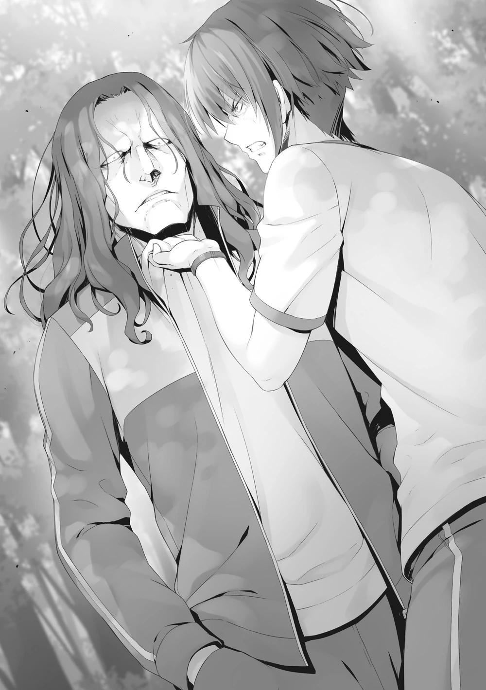
―¿Cómo te llamas?
―Año 1 Clase C, Utomiya Riku.
Utomiya. Una de las personas que Sakayanagi le había ordenado investigar. Ya que lo estaba deteniendo aquí, no era el comandante. Y Utomiya también adivinó que Kitou había sido instruido por alguien para venir aquí.
―¿Quién te dijo que vinieras aquí?
Aunque trató de obtener el nombre, Kitou no dio señales de responder.
―Aunque seas un estudiante de honor, no tengo intención de pasar por alto esto.
Con esas palabras, los ojos de Kitou brillaron con fuerza y su gran brazo apuntó al cuello de Utomiya. Utomiya fue capaz de tomar distancia con calma y escapar del ataque de Kitou sin dificultad. Pero debido a su rápida evasión, el transceptor que había estado en su bolsillo cayó a los pies de Kitou.
―¡Maldición!
Aunque le entrara el pánico y tratara de acercarse de nuevo, la postura de Kitou le impedía saltar sin cuidado.
―¿Utomiya-kun? ¿Qué estás haciendo?
Desde el transceptor que cayó a sus pies, se filtró la voz de Tsubaki.
―Tch...
Utomiya chasqueó la lengua y miró el transceptor que había dejado caer accidentalmente.
―No seguiste mis órdenes, ¿verdad?
Sintiéndose recelosa por la falta de respuesta, Tsubaki continuó.
Utomiya buscó la oportunidad de acercarse, pero Kitou le indicó que se calmara con una de sus manos.
Recogió el transceptor y lo lanzó ligeramente en dirección a Utomiya.
―...¿Cuál es... cuál es tu plan?
Hacia esas acciones impensables, como para desechar su malicia Utomiya preguntó.
―Mi objetivo está cumplido.
Al no haber más necesidad de luchar, Kitou levantó el objeto y se lo devolvió.
Escuchó la voz de Tsubaki desde el transceptor y juzgó que era la comandante.
La espalda de Kitou ya empezaba a estar distante e indefensa.
―Utomiya-kun, si me oyes entonces cálmate. Pelear con Kitou-senpai aquí y ahora es una mala jugada.
En el tiempo que no respondió y miró fijamente el transceptor, la figura de Kitou había desaparecido.
―...Soy yo.
Utomiya se quedó solo en poco tiempo y respondió en el transceptor.
―¿Estás a salvo? ¿Qué pasa con Kitou-senpai?
―Acaba de desaparecer.
―¿Por qué hiciste algo tan desconsiderado? Si no hubiera salido bien Utomiya-kun también habría sido expulsado ¿sabes? ¿O lo hiciste para que no viniera a mí?
―No es eso... lo siento. Fue mi propio juicio azaroso. Pensé que aunque la estrategia no saliera bien, no era necesario dar demasiada información a nuestros adversarios delante de nuestras narices. Lo detuve para que no acudiera a Tsubaki.
―No puedo evitar condenarlo si vas demasiado lejos, pero ¿es eso lo que Utomiya-kun pensaba realmente?
Tras un breve silencio, Utomiya habló.
―No... sí, es cierto. Me moví solo.
Como si su respuesta mostrara malestar, Tsubaki se quedó callada durante un rato al otro lado de la transmisión.
―Ya veo. Por ahora si puedes moverte vuelve.
―Entendido.
La transmisión terminó. Utomiya miró su tableta. Desde allí manejó otro transceptor, cambió el código y comenzó una transmisión.
―El insecto obstructor de segundo año fue alejado. Debe estar satisfecho de haber descubierto que Tsubaki es la comandante.
―Como se esperaba, Utomiya-kun.
―Entonces, ¿qué pasa con el plan de Tsubaki?
―Fracasó tal y como deseabas. Aunque creo que incluso si Ayanokouji-senpai no hubiera sido advertido a propósito de antemano, era un plan cliché ese no habría funcionado.
―Voy a colgar.
Sin prolongar el asunto, Utomiya apagó la batería del transceptor.
EL HOMBRE CONOCIDO COMO TSUKISHIRO
Por la mañana, me desperté en el extremo derecho de E3 y miré el mapa en mi tableta. El resultado de haber evitado ayer el avance de los de 1er año fue terminar el día sin haber pisado una sola zona designada. Según la información proporcionada por Sakayanagi, se retiraron justo al llegar la tarde, pero decidí no dirigirme a mis zonas designadas. Sólo para hacer tareas en el camino y ahorrar un mínimo de puntos.
Ayer, la zona aleatoria a las 13 horas fue F3, y después a las 15 horas fue G3.
Abrí mi mapa y vi una imagen de la búsqueda por GPS de las 13 horas de ayer.
Los grupos de primer año que me perseguían eran 5 en total. Junto con Housen, que vino después de borrar su señal de GPS, eso explica a todos ellos. No hay ningún error. Entonces ocurrió el enfrentamiento entre Ryuuen y Housen.
Cuando eso concluyó, todos los grupos se retiraron y continuaron con el examen especial. Eso es obvio por la búsqueda del GPS.
Sin embargo-. Mientras Sakayanagi y yo nos concentrábamos en esos enemigos, algunos grupos de los desunidos de 1er año se combinaron y se movieron para llegar a mis áreas designadas antes que yo. La primera vez que pensé que estos grupos eran sospechosos fue después de las 3 de la tarde, cuando mi próxima área fue designada como G3 y comencé a dirigirme a F4. Como el camino aquí era estrecho, si hubiera quedado en manos del enemigo, habría sido difícil escapar. Pero si lo evitaba, el desvío habría sido demasiado largo.
―Los evité para tener cuidado, pero eso me retrasó mucho para el último día.
El resultado de evitar ese riesgo. 6 fallos en la zona designada y 4
penalizaciones incurridas. Tengo que anularlas lo antes posible. Si hago esto 3
veces más la penalización me haría perder 18 puntos más.
Ahora mismo tengo 119 puntos, pero eso está muy lejos de estar a salvo de la expulsión. La línea de seguridad que veo es de 105 puntos. Si bajo de esa cifra,
no me extrañaría que me expulsaran. Por eso mismo, antes de nada, seguí moviéndome durante toda la noche hacia las inmediaciones del G3, mi última zona designada. Lo conseguí.
Como las clasificaciones ya no son visibles, debo imaginar las mías mientras lucho durante este último día. No puedo suponer que será la misma que mi clasificación de la 12ª noche. Parece que está bien ya que hay un total de 157
grupos, pero en realidad la mayoría de los grupos dejarán de unirse. Lo que significa que será mejor verlo como que el número de grupos disminuye considerablemente. Por supuesto, también habrá quien se mueva para salvar a otros grupos.
Si los grupos con alrededor de 200 puntos captan grupos de bajo rango, me superarán. Como es el último día, tampoco puedo ignorar el efecto de los multiplicadores de puntos dobles. El plan de 1er año podría empujarme a la expulsión.
También existe la posibilidad de que haya más alumnos de 1º año esperándome delante, pero ya no puedo utilizar la búsqueda por GPS. A las 7 de la mañana, mi área designada fue H3. Hay una montaña allí, así que será difícil decir que estoy agradecido por haber sido asignado allí. Pero no hay nada que pueda hacer más que esto, así que no se puede evitar. Incluso si tomo la ruta más corta me tomaría alrededor de 2 horas para llegar. No puedo perder el tiempo.
Pensar que me vería obligado a una arriesgada lucha por las zonas designadas en el último día, cuando la mayoría de los estudiantes tienen sus puntos multiplicados por dos y van a las tareas de desafío. Mi rango podría bajar todavía más para cuando llegue el mediodía. Después de preparar mi equipaje y partir, recibí un mensaje en el transceptor de Sakayanagi.
―Buenos días, Ayanokouji-kun. Ayer ocurrieron muchas cosas importantes.
―Lo logré gracias a ti.
―¿Estás bien con las penalizaciones? Aunque parece que te has movido bastante durante la noche.
Mis movimientos se filtraron a Sakayanagi a través del GPS.
―Mi primera área designada es H3. No tengo margen de maniobra pero creo que lo conseguiré.
―H3, ¿verdad?
Como si estuviera pensando algo, Sakayanagi murmuró el área designada con un profundo interés. Continúo la conversación con Sakayanagi mientras me muevo.
―La verdad es que tengo una cosa que me preocupa. Ichinose-san desapareció esta mañana.
Ese es otro problema molesto para el último día.
―¿Desapareció? ¿Un accidente?
―No. Creo que está haciendo algo auto destructivo. Ha estado actuando de forma extraña aquí durante los últimos días.
Ahora que lo pienso, ella mencionó algo así.
―Pero, ¿por qué te pusiste en contacto conmigo? No creo que pueda ayudarte con eso.
―A decir verdad, cuando utilicé un GPS para buscar la posición de Ichinose-san, entendí que ella estaba en el E3, donde tú estabas. Sin embargo, ella estaba en el lado opuesto, cerca de D3.
Incluso los dos extremos de la misma área están bastante lejos el uno del otro.
Pero ahora mismo, ya estoy poniendo un pie en F3.
―¿Tu última área designada ayer fue?
―D5. Ichinose-san estaba allí.
¿Por qué se levantó de madrugada para venir a E3 sin avisar a nadie?
―Por la mañana, me di cuenta de que uno de nosotros había desaparecido. He confirmado con la gente de mi grupo que nadie había utilizado la búsqueda por GPS. Parece que Ichinose-san lA utilizó. Por el momento no
está claro si se dirige al E3 o a una zona aún más lejana, pero ¿no sería normal pensar que va a encontrarse con alguien?
―Así es. No hay ninguna razón para moverse tan temprano en la mañana aparte de perderse la cuarta área en el día anterior.
―Pensé que tal vez era para reunirse contigo...
―Lo siento, pero no tengo ni idea. No he visto a Ichinose para nada en este examen especial. Puede que venga a F3, pero desgraciadamente yo también tengo prisa. ¿Qué vas a hacer?
―La primera área designada a la que debemos dirigirnos es la E6.
Perderemos las recompensas de Madrugador, pero no tenemos otra opción que ignorar esto. Porque en el peor de los casos, aunque se retire, no habrá un gran impacto ya que es el último día.
Aunque diga eso, el grupo de Sakayanagi es un precioso equipo de 7. Aspiraban a la victoria y fueron capaces de llegar hasta un ideal 4º puesto al final del 12º
día. Que Ichinose desapareciera aquí sería duro para ellos. Si lo miras de otra manera, está actuando de forma imprudente a pesar de la importancia del último día.
Ichinose actúa por el bien de sus compañeros más que nada. Esto es completamente impensable para ella.
―Tú también lo tienes difícil.
―Un accidente será inevitable. Bueno, aunque la dejemos sola el examen especial sólo durará la mitad del día así que no creo que haya problema. Si la ves, por favor, hazle saber la situación.
Sakayanagi dijo que más que eso sería un estorbo y terminó la transmisión.
―A dónde va Ichinose...
Mientras caminaba volví a colocar mi transceptor en mi mochila mientras sacaba mi tableta. En el último día, puedo permitirme no preocuparme por la batería. No debería haber ningún problema con el 31% restante. Había tareas dispersas por el mapa junto con mi área designada en la pantalla.
Durante las dos últimas semanas, las tareas aparecían en lugares a los que se podía llegar desde toda la isla. Pero justo este último día, comprendí que no aparecían tareas en absoluto en las partes del norte de la isla, las casillas 1 a 3.
En cambio, del norte al centro, de la 5 a la 10 y de la A a la E, se concentraban muchas tareas.
Entendí que esto era simplemente para guiar a la gente a volver a la casilla de salida ahora que es el último día. Llegar a la zona designada y luego desafiar las tareas rápidamente sería inteligente. Me apetece utilizar la búsqueda por GPS
para conocer la posición de Ichinose, pero ahora mismo corro el riesgo de ser expulsado. Para aumentar mis posibilidades de supervivencia aunque sea un poco, necesito ahorrar hasta el último punto.
PARTE 1
El segundo destino que me señalaron para hoy fue I2. El extremo noreste de la isla deshabitada. Como de alguna manera pude evitar una penalización, por ahora era un lugar al que podía dirigirme con alivio. Aunque fundamentalmente debíamos regresar a pie a la zona de salida una vez terminada la prueba a las 15:00 horas, dependiendo de la situación parecía que había planes para que las embarcaciones dieran la vuelta a la isla y recogieran a los estudiantes según fuera necesario.
Cerca de allí, parecía que un barco llegaría a J6 a las 5 de la tarde.
―Así que como es la etapa final, un área designada apareció en un lugar escandaloso...
En el lado sur de la isla, el ambiente del examen de concentrarse en las tareas no cambió. A pesar de eso, pensar que un área designada estaría en el extremo noreste. Obviamente quería lamentar el que la tabla se equivocara, pero no se puede evitar.
Sería un alivio estar satisfecho con eso, pero desde que llegué empecé a sentir algo inquietante. Hoy, desde la mañana no me había cruzado con ningún otro estudiante ni había visto ninguno. La isla puede ser grande, pero
fundamentalmente, moverse por ella da muchas oportunidades de escuchar o ver a alguien.
Por supuesto, ayer no pude llegar a mi zona final. Así que no es que no entienda que no me cruce con estudiantes de la misma tabla que yo, pero... entiendo que a estas alturas, muchos estudiantes ya están bajando a la zona sur de la isla donde se concentran las tareas.
Ya que había puesto el pie en I2, tal vez podría haber ignorado la última zona designada y dirigirme a las tareas. H3 está dividido en partes por un pequeño río.
Como ese río no se puede cruzar como un atajo, te ves obligado a dar un rodeo.
Es un lugar problemático.
Lo bueno es que se puede caminar por el lado del río para no tener que preocuparse de perderse. Bajando sin prisas por el suroeste por la orilla del río, y llegando al punto más allá del río en el noreste. Está bien seguir caminando junto al río hasta llegar a una montaña. Ahora estaba haciendo eso en el lado opuesto del río, llevando mis pies al centro de H3.
―¡Ayanokouji-kun-!
Mientras dedicaba mis oídos al sonido del río que fluía, oí desde lejos una voz que me llamaba por mi nombre. Estaba sorteando el río desde hacía un rato y había llegado al lado norte. Allí, Ichinose, cubierta de barro, me miraba sin aliento.
―Ichinose... ¿Llegaste hasta H3?
Si no recuerdo mal, según lo que dijo Sakayanagi Ichinose debería haber estado en E3. Ahora mismo eran más de las 10 de la mañana. Si el sol empezó a salir a las 5:30, eso significa que Ichinose había estado caminando continuamente durante 4 horas y media para venir aquí. Y a un ritmo considerablemente rápido.
―¡Yo... vine a encontrarte, Ayanokouji-kun! ―Aunque sin aliento y agotada, Ichinose gritó desde el otro lado del río―. ¡Voy para allá ahora mismo!
Diciendo eso, incluso mientras se tambaleaba de un lado a otro Ichinose corrió al lado del río. Tal vez porque su pesada mochila era una carga, la tiró en ese lugar. Su forma de caminar era terriblemente peligrosa. Si Ichinose, que parecía
estar acercándose al límite de su cuerpo, viniera aquí a pesar de eso, le rompería los huesos. Volví al lugar de donde vine para alcanzarla rápidamente.
Ambos corrimos por la orilla del río durante 5 minutos y llegamos a un punto donde podíamos encontrarnos. Como no podía permitir que Ichinose se esforzara demasiado, crucé el río hacia el norte antes que ella.
―Yo, yo fi-, finalmente te alcancé... espera, ya voy.
Después de haberme perseguido hasta aquí y haberme llamado, probablemente estaba sintiendo las consecuencias. Forzándose fervientemente a ponerse en pie con todas sus fuerzas, se acercó a mí paso a paso.
―Tto.
Ichinose estaba a punto de derrumbarse, así que la atrapé con mis brazos.
―¡Yo, lo siento mucho! ¿eh? ¿Por qué? Mis pies... no los siento...
Se apresuró a intentar levantarse, pero le temblaban las rodillas y parecía que no iba a poder ponerse de pie con normalidad.
―¿Qué demonios te pasa, Ichinose?
Ichinose me miró y abrió la boca mientras intentaba desesperadamente enderezar la situación.
―¡Yo, yo tengo algo que necesito decirte pase lo que pase, Ayanokouji-kun...!
―¿Algo que necesitas decirme?
―Me preocupé y me preocupé y siempre me preocupé... Tenía que proteger a mis amigos y compañeros de clase...
¿De qué demonios está hablando? No sé lo que es, pero definitivamente como mínimo es algo que se esfuerza en contarme.
―Pero, a pesar de eso estaba preocupada por Ayanokouji-kun, así que...
no importa...
Dentro de este examen especial, no hubo contacto ni nada en particular entre Ichinose y yo. Significa que algo inesperado sucedió. Para decirme esto, durante más de 4 horas ella siguió caminando desesperadamente hasta aquí.
―M, Mi... reloj se destruyó, así que, pensé en volver a la zona de salida para que me lo cambiaran... ¡en ese momento, vi al director interino Tsukishiro y a Shiba-sensei...!
Mientras su respiración aún no se había calmado, Ichinose hablaba con gran dificultad. No sé cuando sucedió esto, pero es plausible que ella estuviera preocupada por varios días.
―S-si Ayanokouji-kun está a salvo hasta el último día entonces, llámalo a I2 y hazlo desaparecer-Las palabras 『 Ｉ２』 y 『 Hacer desaparecer 』 . De hecho, si alguien sólo escuchara eso, pensaría apropiadamente en esas palabras como peligrosas. La razón por la que Tsukishiro y los demás dejaron que Ichinose escuchara su conversación por descuido fue porque su reloj se destruyó, deshabilitando su rastreo por GPS, ¿eh?
―Proteger a tus compañeros... ¿quieres decir que Tsukishiro los amenazó?
Aunque se sorprendió por un instante de que lo adivinara bien, Ichinose volvió a asentir.
―Si le decía a Ayanokouji-kun sobre esto... entonces expulsarían a mis compañeros de clase... pero, pero no importa, ¡no puedo dejar a Ayanokouji-kun solo...!
―Deberías haber dejado de pensar en ello y abandonarme. Soy tu enemigo... después de todo.
Si salía bien el estudiante conocido como Ayanokouji podría ser expulsado.
Hubiera sido mejor para ella pensarlo así.
Al escuchar esas palabras, Ichinose sacudió fuertemente su cabeza para decir que no.
―¡No puedo! Ayanokouji-kun es, Ayanokouji-kun es... ¡no es mi enemigo!
Ichinose agarró mi camisa cerca de mi pecho.
―Sin embargo, yo creo que somos enemigos.
―Después de todo... después de todo, Ayanokouji-kun para mí es...
La mano que había estado agarrando fuertemente mi camisa volvió a apretar con fuerza.
―¡Yo, yo te amo, Ayanokouji-kun...!
Probablemente, la propia Ichinose no pensaba decir esas palabras. Después de que esas palabras salieran, ella cerró su boca y desvió sus ojos.
―¡N-No! Justo ahora, eh, ¿por qué yo, eh, ehh?
Como si la misma persona no se diera cuenta de lo que estaba diciendo, entró en pánico y movió repetidamente la cabeza de un lado a otro.
―¡¿Ahora mismo, qué, me pregunto qué dije?!
Al igual que su recuerdo de lo que acababa de decir voló, no pudo entenderlo y entró en pánico.
―¿Puedo decírtelo? Lo que sea que me hayas dicho.
―S, sí... ¡Ah, no, no lo hagas! ¡P-Pensándolo bien lo recuerdo así que no lo digas!
―Gracias Ichinose.
―¡¿Eh, eh, ehh?!
Una vez más di las gracias a Ichinose. Más que a sus compañeros de clase y más que a los grupos que reunió para ganar en este examen especial, me dio prioridad a mí. No voy a tomar esos sentimientos sin respeto.
―Si Ichinose no me hubiera avisado, no sé qué habría sido de mí.
Esta era una gran encrucijada para mí. Si no hubiera encontrado a Ichinose aquí, no habría ido a I2 asumiendo que Tsukishiro estaba involucrado. Y Tsukishiro
efectivamente amenazó a Ichinose para silenciarla. Pero Ichinose está ante mis ojos ahora mismo. Y sin mirar atrás al riesgo, me lo contó todo.
―¿Es cierto lo que acabas de decir?
―Eso, quiero decir, no es eso. Esa, cosa ¿verdad?
―Si no es verdad entonces retíralo ahora. Lo entenderé mal.
―...Um... Malentendido... No es un malentendido ―Ichinose intentaba negarlo, pero se dio cuenta de que ya no podía hablar de ello y se resignó―. ...Yo... te amo...
Con una voz lo suficientemente pequeña como para desaparecer después de arañarme, lo admitió.
―Además, probablemente me di cuenta de que me sentía así desde hace tiempo... lo siento.
No hay que disculparse.
―Para ser sincero, no esperaba que Ichinose pensara en mí de esa manera. Estoy un poco sorprendido.
―Yo, lo siento... no te gusta, ¿verdad?
―Nada de eso. Es sólo que ahora mismo no puedo responder a tus sentimientos.
―U...un, no sería, adecuado para Ayanokouji-kun después de todo...
―Eso no es cierto. Hay varias cosas que debo resolver primero. En este estado no creo que pueda responder ni sí ni no.
Además, no puedo hablarle de Kei aquí. Aunque se entere después de esto y se moleste conmigo, ahora mismo estamos en medio de un examen en una isla deshabitada. Viendo que aún queda tiempo, no debo quitarle las ganas de luchar.
―No sé si esto te sentará bien, pero es la mejor respuesta que puedo dar ahora mismo.
―Un... entiendo.
Sin parecer enfadada o incluso insatisfecha, Ichinose asiente y me responde.
―Tengo la intención de ir a I2 desde aquí. Hay algo que necesito hacer allí.
―¡Eso no es bueno! ¡Es peligroso!
―Si no lo hago entonces no podré protegerte a ti o incluso a tus queridos compañeros de clase ¿no?
Debería entenderlo precisamente porque ella misma estaba muy preocupada No es difícil imaginar que Tsukishiro se enterara de que ella contactó y habló directamente conmigo. Pero parece que hay que enseñarle a Tsukishiro que esto no es un apuro, sino un retorno.
―Tómate tu tiempo para descansar y procura reunirte con tu grupo. ¿De acuerdo?
Acaricié una vez la cabeza de la obediente Ichinose y decidí dirigirme hacia el I2.
PARTE 2
La zona que rodea el límite entre I2 e I3 es un lugar rocoso. Hay algunos matorrales más altos que mi rodilla.
―Supongo que lo haré aquí.
Bajé la mochila que llevaba y la escondí en un matorral. Mientras no supiera lo que me esperaba, el equipaje a mi espalda sólo sería un estorbo. Decidí incluir mi tableta y todo lo que había en ella. Si voy a volver a la orilla del mar, debería ser capaz de regresar a este lugar rocoso sin perderme.
El lugar que Ichinose mencionó que Tsukishiro estaba preparando para hacerme desaparecer, ¿eh? Aquellos con mi misma tabla probablemente fueron dirigidos a un área completamente diferente. Gastar 1 punto de búsqueda en el GPS para verificar eso ahora mismo es algo que quiero evitar.
Además, cuando supe que Ichinose estaba involucrada, perdí la opción de no venir aquí. Si hiciera eso, Tsukishiro no será amable con la clase de Ichinose. Es hasta un punto en el que no puedo leer hasta dónde llegaría como venganza.
Fue el momento en que terminé mis preparativos y comencé a caminar hacia I2.
―Oye Ayanokouji. Qué coincidencia.
Nagumo sostenía su tableta y miraba hacia mí, como si estuviera viendo algo profundamente interesante. Viendo que aquí es donde me han colocado, que alguien más esté por esta zona no es natural.
¿Podría ser que, aparte del dinero del premio, este hombre también estuviera involucrado con Tsukishiro? No, para Tsukishiro llevar un título como Presidente del Consejo Estudiantil no tendría mucho significado.
Que esté aquí no significa necesariamente que esté relacionado con él, pero debería tener cuidado.
―¿Por qué está el Presidente del Consejo Estudiantil Nagumo en un lugar como este?
Incluso después de una breve exploración de los alrededores, no vi a una sola persona que pareciera ser parte del grupo de Nagumo.
―No te preocupes. Ahora mismo sólo estamos tú y yo en este lugar.
Tal vez incluso utilizó la búsqueda por GPS. Nagumo dijo eso y trató de disipar mi cautela.
―No hay tareas que encontrar aquí, pero ¿de dónde vienes?
La dirección desde la que apareció Nagumo era el sureste.
―Estaba jugando en las playas de I4. Después de todo, la actividad en la isla deshabitada está casi terminada.
Pensar que estaba jugando mientras casi todos los estudiantes estaban acumulando puntos con frenesí en este último día.
―¿Es este el margen de maniobra del rey?
Sin responder a la pregunta, Nagumo se rio.
― Aunque fuera así, te devuelvo esa frase. ¿Por qué viniste a este lugar sin tareas ni designaciones? ¿Encontraste a Honami?
Que su nombre aparezca aquí no es algo de lo que sorprenderse. Aunque no la viera directamente, su proximidad sería obvia si utilizara una búsqueda por GPS.
―¿Es un problema si la vi?
―¿No? Hay muchas cosas que debería decir sobre el hecho de que estén juntos incluso en un momento como este, pero ahora mismo estás aquí solo. En otras palabras, estás buscando algo más. ¿Qué hay que ver en I2?
Justo cuando me decidí a responder a su pregunta, Nagumo continuó cambiando de tema.
―El examen está terminado, ¿no? Sólo pensé en hacértelo saber. No hay muchos lugares en la escuela donde yo, el Presidente del Consejo Estudiantil, pueda hablar contigo a solas.
―Eso es cierto.
Yo soy un simple estudiante que evita a los demás. La otra persona es el Presidente del Consejo Estudiantil, lo suficientemente intimidante como para hacer que un niño deje de llorar. Hay un desfase. Pero es impensable que él trajera sus pies hasta aquí sólo para una pequeña charla.
―Parece que sabes que los de 1er año me atacaron.
―Parece que estaba en lo cierto.
Si alguien hiciera que me expulsen le darán 20.000.000 de puntos. Aunque Tsukishiro es el cabecilla, la implicación de Nagumo en esto es un hecho inequívoco. Dependiendo de la clase de hombre que sea Nagumo, no sería extraño que utilizara regularmente un GPS para controlar la situación.
Si uno viera mis movimientos junto a los de 1er año ayer, un ataque sería evidente. Al mismo nivel que yo, no, Nagumo estaba monitoreando toda la situación de los exámenes especiales en un nivel superior al mío. Que él
apareciera tan fácilmente aquí no significaba otra cosa que el hecho de que estuviera al tanto de mis acciones.
―No pienses mal de mí por el dinero del premio, ¿de acuerdo? No fue mi idea.
―Fue del director interino Tsukishiro, ¿verdad?
―Si entiendes todo eso, esta discusión no tomará mucho tiempo. Todo el dinero proviene del director interino Tsukishiro. Sólo le presté mi nombre como Presidente del Consejo Estudiantil.
Sea o no así, si el Director Interino le indicó que lo hiciera, ni siquiera Nagumo sería capaz de ir en su contra.
―Entiendo que has aceptado sus instrucciones como Director Interino.
Pero si fuera el Presidente del Consejo Estudiantil Nagumo que conozco, pensé que podría haberlo rechazado.
―Cuando me habló del premio en dinero, si fuera cualquier otra persona que no fueras tú probablemente no lo hubiera aceptado. Pero el que nombró no fue otro que tú. El único hombre que se ganó a Horikita-senpai.
Mientras pensaba, Nagumo miraba a través de mí a Horikita Manabu, que estaba detrás de mí.
―Responde, Ayanokouji. ¿Qué pretendes hacer más allá de este punto?
Que se preocupara por alguien tan insignificante como yo era sencillo. Pero Nagumo no se habría dejado arrastrar por algo así. Quiero atesorar el tiempo que tengo mientras no sepa lo que me espera más adelante.
―No tiene nada que ver contigo presidente Nagumo. ¿No deberías estar concentrado en el final del examen especial sin prestarme atención? Kouenji se debe estar acercando a ti. Si no vuelves, también te perderás las recompensas de llegada. Tampoco podrás participar en ninguna tarea.
La situación aún puede darse la vuelta.
―No te preocupes por eso. En este último día, he suprimido perfectamente a Kouenji.
Diciendo eso, Nagumo sacó un transceptor de su bolsillo. Aunque estuviera alejado sería suficiente mientras pudiera dar instrucciones, es lo que estaba diciendo.
―Me preocupa lo que puedas haber venido a hacer aquí, pero si no respondes entonces cambiaré la pregunta. Intenta mostrarme si tienes o no el poder en el que Horikita-senpai puso sus esperanzas. Tu verdadero yo.
¿Era esa la mayor razón por la que vino aquí?
―¿Podría ser que me estás diciendo que me enfrente a puñetazos con el Presidente aquí?
―No me importaría enfrentarme a puñetazos, pero personalmente prefiero formas más adecuadas de luchar. Después de que termine este examen de la isla deshabitada, debería haber oportunidades para luchar independientemente de nuestros años. Así que seré tu oponente allí.
Una invitación directa del Presidente del Consejo Estudiantil.
―Entiendes de este examen de la isla deshabitada, ¿verdad? Una pelea entre el Presidente y yo no estaría resuelta.
En este momento Nagumo tiene el primer y segundo lugar en este examen. Los había conservado hasta ahora. Con Kouenji todavía hay una oportunidad de darle la vuelta, pero sin duda sería una lucha dura.
―Tú eres uno. Nosotros somos siete. Sería más extraño si se resolviera.
―Tu pelea con Kouenji se arreglaría, ¿no? Aunque es un tipo raro es definitivamente fuerte. Comparado con él no he entrado en el top 10 ni una sola vez.
Si quería un enemigo fuerte le señalé a Kouenji.
―Bueno, él sí está por encima de mis expectativas. Después de todo, es el único que me hizo atacarlo en este examen.
Aun reconociendo a Kouenji en algunos puntos, se encogió de hombros como si estuviera asombrado. El hecho de que Nagumo tenga un transmisor-receptor sobre él señala su ataque a Kouenji en este momento.
―Usar a todos los de 3er año para privarlo de las recompensas de llegada y monopolizar las tareas es una hazaña que sólo el Presidente podría lograr.
A diferencia de los estudiantes de 1er y 2do año, casi todos los de 3er año están bajo el dominio de Nagumo. Si pensara en suprimir a Kouenji, podría hacerlo si movilizara a todos los de 3er año. No importa lo fuerte y rápido que sea o lo bueno que sea en sus tareas, sería inútil.
Los grupos de todas partes lo cortarían de raíz. En efecto, los únicos puntos que Kouenji podría ganar serían bonos de llegada de los movimientos simples.
Mientras eso sucede la brecha entre él y Nagumo seguirá creciendo.
―Seguro que te has dado cuenta de eso ¿eh? ¿Cuándo lo notaste?
―Me pareció sospechoso en el momento de las banderas de la playa. El vicepresidente Kiriyama estaba haciendo tiempo deliberadamente para algo.
Pensé que estaba reservado para el Presidente del Consejo Estudiantil.
Pero como llegué antes que él, no tuvieron más remedio que llenar esa última entrada. Nagumo estaba jugando tranquilamente mientras esperaba a que terminara la tarea de Kiriyama.
―Pensé que el vicepresidente Kiriyama sólo se oponía a mí, pero parece que de alguna manera no es el caso.
―En aras de la graduación en la clase A, ese tipo está uniendo sus manos conmigo a pesar de que me odia.
―Lo que significa que aparte de ese anormal de Kouenji, un estudiante normal no levantaría una mano ni un pie contra ti.
En contestación a mi respuesta, Nagumo se rio como si encontrara algo divertido.
―Eso no es lo que realmente piensas, ¿verdad? No crees que sea un ser humano increíble para nada.
―Eso es...
Intenté negarlo, pero Nagumo me detuvo con su mano.
―Seguramente estás pensando que sólo estoy ganando por usar a todos los de 3er año para trabajar, pero eso no es cierto. Ahora te mostraré mi poder sobrenatural.
―Poder sobrenatural, es eso.
―Te diré la clasificación de tu grupo al final del 12º día.
Las únicas clasificaciones publicadas fueron la de los 10 primeros y la de los últimos. Quitando esos 20 grupos del total de 157 grupos, quedan 137. Por supuesto, el único que conoce mi clasificación exacta soy yo. Antes de que cambiara la fecha, mi última clasificación era el 16º lugar.
―Tu clasificación era... el 11º lugar, ¿verdad?
Nagumo dijo eso con tanta seguridad, pero se equivocó un poco. Pero no puedo reírme de que se equivoque. En el 12º día utilicé repetidamente la búsqueda por GPS en respuesta al ataque de los de 1er año. Si no hubiera gastado esos puntos extra, habría quedado en el 11º lugar.
Comprender la clasificación de todos los grupos es imposible teniendo en cuenta las reglas. En otras palabras, lo que dijo Nagumo tiene una base adecuada.
―¿Me equivoqué un poco? Pero estás en el puesto 15 o 16, ¿no?
―Así es. Me impresiona tu precisión.
Cuando lo reconocí honestamente, Nagumo aceptó tranquilamente ese hecho diciendo:
―Sé que tengo razón. Sólo estaba bromeando cuando dije lo de los poderes sobrenaturales, pero si realmente fueras un élite que oculta su verdadero poder, no tendrías otra clasificación que esa.
Parece que el hombre llamado Nagumo siempre fue más excelente de lo que había pensado.
―Para no destacar, tomaste un rango un poco por debajo de los 10
primeros, constantemente en una posición alejada de los rangos más altos,
¿verdad? Si hubieras chocado conmigo o con Kouenji y tu rango hubiera bajado, habrías podido volver a subir.
Me moví con la intención de no destacar y esconderme hasta el final del día 12.
Los rangos superiores se cansarían y serían lentos en su acumulación de puntos en el último día. Dependiendo de la situación, me propuse ser capaz de acumular puntos en un suspiro y aspirar al podio de los ganadores. No, me había propuesto prepararme.
―¿Te diste cuenta? Que fue imposible desde el principio.
Desde el principio, Nagumo se estaba asegurando de que el plan que yo elaboré fuera ineficaz.
―El décimo lugar siempre ha sido el Kuronaga de 3er año ¿sabes? Le pedí que vigilara los 10 primeros puestos. Para suprimir a la gente que hubiera tratado de ahorrar puntos donde no pudiéramos ver y revertir la situación.
Al tratar de conseguir los puntos suficientes para abrir los puestos 10 y 9, lo estaba pasando mal día tras día. Eso también era parte del plan de Nagumo.
Eliminar por la fuerza a los enemigos que no podían ver y eliminar sólo a los que podían ver.
―Siempre he dudado de si eras realmente fuerte o no, pero con esto es obvio. Te ganaste el derecho a ser aplastado por mí. Alégrate.
―¿También formaba parte de tu plan que el Presidente del Consejo Estudiantil se esforzara por tomar el mando en la lucha contra Kouenji el último día?
―Cuando pensé en cuántos puntos quería acumular, habrían sido 400 o 500 puntos. Pero eso conlleva un cierto problema. Además, eso no sería interesante, ¿no? Pensé en darles a los de 2º y 1º año la esperanza de que podían ganar. Además, si hubiera perdido en una pelea reñida, podría haber tenido que ver la cara de fastidio de ese Kouenji.
Como el grupo más fuerte, Nagumo estuvo luchando a lo largo de estas 2
semanas con compostura. Y entonces hundiría a Kouenji en el último día y mostraría su presencia como el 1er lugar.
Si Nagumo se pusiera serio, podría conocer los puntos de todos los grupos a los que estaba prestando atención. Habría podido conocer las recompensas de llegada que habían obtenido y los resultados de las tareas en las que habían participado a través de la búsqueda del GPS y de los ojos de sus compañeros.
Incluso ahora, en el último día, cuando los puntos no estaban claros, no hay duda de que Nagumo comprendió con precisión cuántos puntos tenía Kouenji.
Lo que significa que podría conseguir una victoria dramática con una diferencia de 1 punto.
―Bueno, ya no me importa Kouenji. Me importa lo que haré en esta escuela al final. Eso es eliminarte, Ayanokouji.
Nagumo, que siempre estuvo persiguiendo la sombra de Horikita Manabu, ahora intenta verlo en mí.
Probablemente quiere arreglar esto completamente y sin dejar piedras sin remover.
―Es una pena, pero la líder de la clase 2-D es Horikita. Asumiendo que habrá un examen especial donde lucharemos con los de 3er año, no lucharé con el presidente Nagumo.
―¿Así que no tengo más remedio que llevarte al escenario principal?
Junto con el dinero del premio.
No es reacio a dejar absolutamente todo sobre ese asunto claro como el día ¿eh?
―Lo siento, pero me adelantaré. Por favor, continúa esta charla la próxima vez.
―¿Crees que te dejaré ir tan fácilmente? No tengo intención de dejarte ir hasta que nos enfrentemos, ¿sabes?
Como si tuviera la intención de venir a mí, Nagumo se adelanta. Si algo me está esperando adelante, Nagumo estará involucrado.
El enemigo es Tsukishiro. En el peor de los casos, es posible que Nagumo, con los derechos derivados de su nombre, me haga perder todo lo que he construido y me obligue a ser expulsado.
Aunque intente persuadirlo con palabras, no responderá de la misma manera.
Por supuesto, tampoco puedo mentir y prometerle algo en el futuro. Detengo mis pasos y me doy la vuelta un poco.
―Así que quieres pelear conmigo-
Como él entendió mal y se animó, presioné su estómago con fuerza y sin avisar.
Probablemente no esperaba ser atacado por su compañero de clase menor. Sin ninguna resistencia, Nagumo cayó al suelo de culo. La tableta que llevaba y el transceptor que llevaba en el bolsillo cayeron al suelo.
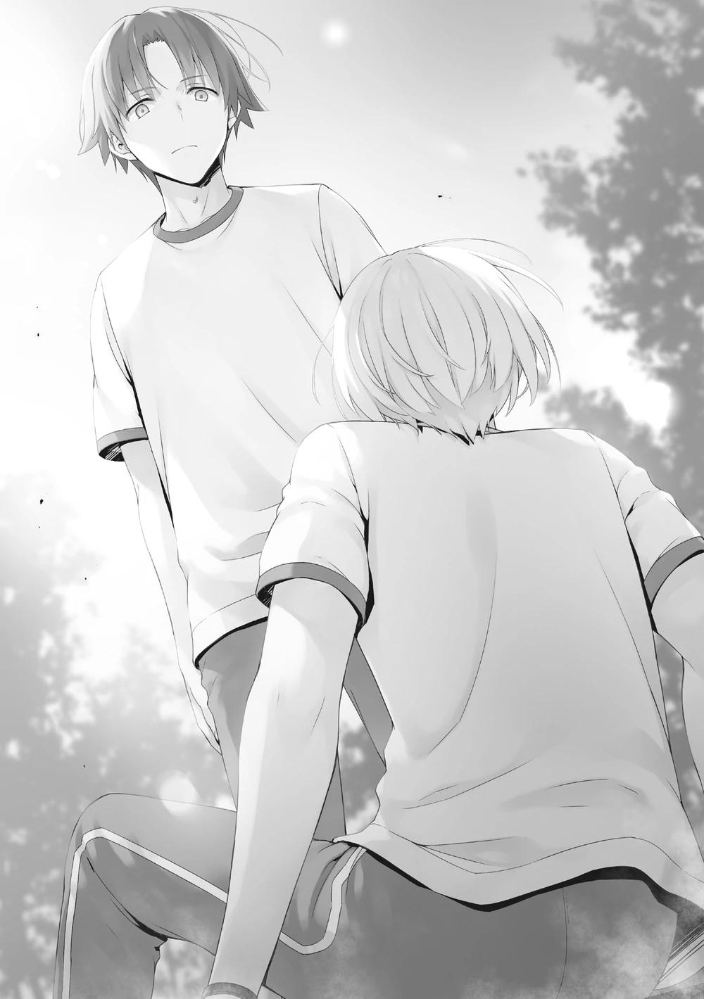
―¿Qué?
Parecía que no entendía que le había pasado algo a su cuerpo.
Antes de que su comprensión lo alcance, haré lo que sea necesario.
―Presidente del Consejo Estudiantil Nagumo. Todavía tengo una alta opinión de ti. Con un poder diferente al del Presidente del Consejo Estudiantil Horikita, te mantuviste espléndidamente en la cima de esta escuela. En la práctica, en este examen especial no sólo mantuviste un alto rango con margen de maniobra. Aunque diga que tienes todo el control, no sería exagerado.
Seguía callado. Antes de que se enfadara seguí hablando.
―Es que hay lugares que no deberías pisar. Por favor, retírate de aquí.
―Ja... no te metas conmigo Ayanokouji. ¿Me estás dando una orden?
―Precisamente, porque eres un alumno de clase mayor al que debo respetar, no tengo intención de ser suave contigo.
―¿Ah? ¿Qué clase de pez gordo eres?
Preparé toda la intención asesina que tenía y miré a Nagumo a los ojos.
―¡¿...?!
―¿No entiendes que te dije que te retiraras?
Como para no reconocer que el miedo fue infundido en él, Nagumo se levantó con fuerza.
―Ya está bien. Nadie me ha jodido tanto. Eres el primero, Ayanokouji...
En ese momento, se inició una transmisión en el transceptor que había caído al lado de Nagumo.
―Salió bien Nagumo, con esto Kouenji ha sido bloqueado de su tercera tarea consecutiva. Por favor, da las siguientes órdenes.
La voz de unos alegres alumnos de 3er año se podía escuchar.
Parece que su plan para suprimir a Kouenji estaba saliendo bien. Sin responder a esa voz, Nagumo me fulminó con la mirada.
―Oye Nagumo, si no das órdenes nuestra compañía no podrá moverse.
¿No tenemos que seguir atacando a Kouenji hasta que termine la prueba para que caiga en el segundo lugar de forma segura?
―¿Está bien que no contestes?
Incluso por la conversación que pude escuchar, me di cuenta de que esto era importante para Nagumo. Nagumo tomó silenciosamente el transceptor y apagó la batería con la perilla.
―Lo importante para mí no es Kouenji ―Sin ni siquiera intentar quitar la tierra, Nagumo se acercó a mí―. Es luchar contra ti hasta que no puedas aguantar más. Esa es mi última misión como presidente.
¿Orgullo, no? Se avivó como el Presidente y se sacudió su miedo.
―¡¿Yo-?!
Sin dudarlo, clavé un puño en el plexo solar de Nagumo.
―¡A, yano...ko!
Sin poder respirar por un instante, Nagumo perdió temporalmente la conciencia y se desplomó.
Lo atrapé y lo puse en un lugar oculto, apoyado en un árbol. No debería haber nadie aquí, excepto la gente que imprudentemente no escucha. Como si detectara algo anormal, el reloj de Nagumo emitió una alerta que resonó durante 5 segundos. Seguramente tardará más tiempo en despertarse.
20 o 30 minutos. De todos modos, Nagumo ya no puede involucrarse en lo que sucederá aquí. Aunque por supuesto, no podré evitar los problemas que surjan de esto después de que termine este examen de la isla deshabitada. Aunque eso es algo insignificante en este momento. Porque si no resuelvo mi problema con Tsukishiro como es debido, el camino a seguir no se abrirá.
PARTE 3
El último día, pasadas las 10 de la mañana, yo -Horikita Suzune- me dirigí a I2, y luego me dirigí al norte, al límite entre I4 e I3. El último día del examen especial es también el último y único momento para sacar toda la fuerza de voluntad.
Afortunadamente, anoche, hasta poco antes de las 12, no había nadie entre la clase 2-D que hubiera descendido a los 10 últimos. Los 5 últimos que estaban en peligro de ser expulsados eran todos los grupos de 3er año.
Pero no puedo estar completamente tranquila. Existe la posibilidad de que esos 5 grupos se junten con otros grupos en el último segundo para subir sus puntos, dejando a otro en su lugar. Definitivamente, cambiarán de lugar con los grupos del 6º o 7º puesto, que a duras penas mantienen sus posiciones. Llevando esto al extremo, los 10 últimos grupos podrían aliarse con grupos de alto rango y escapar de los 10 últimos.
La zona designada que se refleja en mi tableta es la I7. Estaba exactamente en la dirección opuesta a la I2, a la que me dirigía. Ignorar imprudentemente mi área designada era una acción que podía permitirme. ¿Por qué estaba haciendo algo así? La respuesta a esa pregunta estaba en el trozo de papel que agarraba con la mano derecha. Esta mañana, cuando me desperté en el interior de mi tienda, estaba escondido, doblado hasta resultar pequeño.
Cuando intenté abrirlo, las 4 palabras 'Mediodía', ' Ｋ ・ Ａ ,' 'expulsión' e 'I2'
habían sido escritas desordenadamente en el papel. Cuando vi esto por primera vez, tuve dos pensamientos. El primero fue que quien escribió esto tenía una hermosa letra, lo suficiente como para que quisiera convertirlo en un álbum. Y el otro pensamiento que tuve fue que ni el papel ni el bolígrafo nos fueron proporcionados gratuitamente.
―¿Qué sentido tenía comprar esta nota y este bolígrafo...?
Lo recordaba vagamente del documento del manual de la isla deshabitada, pero pensé que no tenía ningún valor y no me molesté en recordar su coste. No sé si esto se debe a que se les acabó la batería de la tableta o a que hubo un accidente urgente y necesitaron hacer un escrito. Como sea, alguien caprichoso compró una nota y un memorándum, escribió un breve código y lo envió aquí.
―No, esto es demasiado obvio para llamarlo código.
I2 es el área en esta isla deshabitada. El mediodía era la hora. Este memorándum me fue enviado el último día, así que señala que algo está sucediendo hoy, el día 14. Si fuera una simple broma sería sólo eso. Pero las últimas 2 palabras no lo eran.
Expulsión y Ｋ・Ａ . Dejando a un lado la expulsión, el problema era Ｋ・Ａ . Si otro estudiante viera este memorándum, seguro que no entendería lo que significaba. En el momento en que lo leí entendí el significado. Que estas eran las iniciales de Ayanokouji Kiyotaka.
―Si eso es lo que significa, entonces hoy, al mediodía, Ayanokouji-kun será expulsado en I2...
Pensé que era una broma. Así que a las 7 de la mañana, cuando mi área designada fue revelada, tenía la intención de ignorar esto. Pero la señal de GPS
de Ayanokouji-kun apareciendo en E3 pesó un poco en mi mente. Y si parecía que se acercaba a I2 a medida que pasaba el tiempo, podría no ser una simple broma.
Pensando en eso, esperé un poco y luego usé otra búsqueda de GPS. Si esto fuera una trampa que alguien hubiera enviado para hacerme perder un punto, habría caído en ella. El resultado - Ayanokouji-kun pasó por F3 a G3 y siguió caminando hacia adelante.
Si a este paso llega a I2... Impulsada por esa premonición, decidí dirigirme al norte para confirmarlo. Tiene un premio en la cabeza. No puedo desperdiciar la oportunidad que eso implica.
Todavía hay tiempo antes del mediodía, pero me pregunto hasta dónde caminará Ayanokouji-kun. Por supuesto, también existe la posibilidad de que esto sea sólo una coincidencia y ya se esté dirigiendo a una zona diferente. El impulso de hacer una búsqueda en el GPS brota, pero puedo soportarlo. Con mis puntos puedo entrar con seguridad en el 50% superior. Pero si no sólo ignoro mis áreas y tareas designadas a partir de aquí, sino que incluso utilizo las búsquedas, no sé dónde acabaré. Si esto termina siendo para nada, entonces debo seguir hasta que llegue a I2.
―¡Ah! ¡Por fin te encontré! ¡Por favor, espera Horikita!
En el momento en que casi podía ver un río delante de mí, una voz como ésta sonó desde atrás de mí.
―...¿Por qué estás aquí?
Ibuki-san apareció sin aliento mirando hacia mí. No parece una coincidencia. Por lo visto, se ha esforzado en utilizar la búsqueda por GPS para perseguirme hasta aquí.
―Tus puntos, por favor muéstrame cuántos puntos tienes.
―Espera un segundo. ¿Qué demonios estás diciendo?
Aparecer de repente y pedirme a mí, un enemigo, que le mostrara cuántos puntos tenía era difícil de entender.
―Lo dije, ¿no? Que en este examen especial, no perderé contra ti.
Ella, con confianza, me señaló con su dedo índice.
―No hay necesidad de verificarlo ahora. ¿No puedes esperar hasta el final?
―No hay garantía de que todos los puntos de los grupos aparezcan al final del examen especial.
―Efectivamente, así es. Porque los importantes son los grupos de arriba y de abajo.
No había garantía de que las clasificaciones de los grupos que tenían muchos puntos se mostraran a todo el alumnado de inmediato. Por supuesto, también existía la posibilidad de que se anunciara.
―Así que, por favor, déjame confirmarlo ahora.
Ella quería resolver quién obtuvo más puntos en el último día.
―Esto es tan tonto que no puedo creerlo, pero... el hecho de que hayas venido hasta aquí a propósito es cierto. ¿Cuántas veces usaste la búsqueda por GPS?
―...3 veces. Estabas cerca así que pensé que era una única vez"
Sería cada vez más difícil encontrar a quien querías encontrar dependiendo de la distancia que hubiera entre ambos. Ibuki-san utilizó una búsqueda por GPS
hasta 3 veces para venir aquí.
―Has hecho un buen trabajo.
―No necesito tu reconocimiento así que por favor muéstrame tus puntos.
¡Yo tengo 131!
Como si estuviera diciendo, cómo está eso, ella declaró con confianza.
―Gracias por decírmelo aunque no te lo haya dicho. Pero hay dos cosas que quiero decir. La primera es que no hay pruebas de que estés diciendo tu número real de puntos.
―¿Ja? Así que puedo simplemente mostrarte, ¿verdad?
Ibuki-san sacó una tableta de su mochila y me detuvo.
―La segunda es que, aunque me muestres tu conteo real de puntos, no te mostraré el mío.
―¿Ja? ¿Qué es eso? ¿Estás diciendo que eres igual que ese tipo?
¿Ese tipo...? Eso me hizo sentir un poco de curiosidad, pero contuve la charla.
―Aunque ambas somos de 2º año también somos enemigas. No quiero correr el riesgo de darte información.
Ahora mismo no creo que mi nombre aparezca entre los 10 últimos. Sin embargo, los puntos seguirán cambiando hasta el último segundo. Aunque sea el último día, la posibilidad de que la información que me está dando Ibuki me haga tropezar no es 0.
―Entendido. Así que te sorprende la cantidad de puntos que tengo. Es tu derrota, ¿verdad?
―Aunque metas la victoria o la derrota en esto no tengo intención de contestar.
Aunque repetí mi intención de no compartir ninguna información, Ibuki-san declaró con la intención de hacerme retroceder.
―¿No puedes reconocerlo honestamente? Que gané en cuanto a la cantidad de puntos.
―Lo haré por ti, así que por favor vuelve al examen.
Si ella se conformaba con eso, yo estaba dispuesta a hacerlo por Ibuki-san.
―...Qué irritante. ¡Por favor, muéstrame tus puntos!
― ¿Estoy cediendo, pero no quieres estar de acuerdo?
―Quiero saber cuántos puntos tienes realmente. Quiero saber con qué fuerza gano contra ti.
―Qué tontería...
―Es importante para mí.
―Lo siento mucho pero me adelantaré enseguida.
―¿Huyendo?
―Me dirijo a mi área designada. Llamar a eso huir es extraño.
Orienté mis pies hacia I2 para apresurarme hacia allí.
Como si viera eso como una huida, Ibuki-san se acercó para poder perseguirme si lo hacía.
―¿Tienes una área designada en el norte? ¿O sólo me estás persiguiendo?
―Lo que quiero saber ahora es tu cuenta de puntos. Si me entero de eso incluso volvería a mi área designada.
Ella iba a seguir persistentemente prestando atención a mí y sólo a mí sin importar qué.
Tener que parar aquí por una cosa tan extraña es honestamente lamentable.
Aunque me manipule este pedazo de papel, no quiero perder el tiempo.
―... Es mi derrota.
―¿Lo reconociste? Así que finalmente reconoces tu derrota, ¿verdad?
―No es eso. Estoy diciendo que he perdido por esa cosa que tienes que se parece a la persistencia. Los puntos que he acumulado son 145. Estuviste cerca pero el resultado es mi victoria.
Revelé la información que originalmente debería haber ocultado. Por eso declaré mi derrota.
―¿Ganaste contra mí? Si me estás diciendo que ganaste por favor muéstrame pruebas. Pruebas.
Parece una cuestión de rutina.
Sin embargo, no quiero quedarme más tiempo quieta.
Para verificar su seguridad, quiero llegar a I2 lo antes posible.
―Entendido.
En términos de efectividad, no, no creo que sea la respuesta correcta. Hacerle saber a Ibuki-san los puntos que tengo en el último día seguramente no tendrá un gran efecto. Ahora mismo cada minuto y cada segundo son preciosos. Bajé mi mochila y extendí mi mano hacia la tableta que había dentro.
Con un rostro severo que no mostraba signos de cambio, Ibuki-san esperó la respuesta a cuántos puntos tenía. Fue entonces cuando tomé la tableta en mi mano e hice clic en el botón de encendido. Ibuki-san y yo sentimos algo fuerte que ni siquiera intentaba ocultarse delante de nosotros y levantamos la cara.
―Te encooooontréééé.
Como una niña que se encuentra con su compañero de juegos, era una voz nada amenazante.
―Hola, Horikita-senpai.
Ibuki-san no trató de ocultar su descontento al ver aparecer a una estudiante de improviso.
―...¿Quién eres?
―Amasawa Ichika-san de la clase 1-A.
Había una posibilidad de que ella viniera por casualidad al mismo lugar, pero parece extraño. Enfrenté cautelosamente a Amasawa-san con mi tableta en la mano. La que escribió sobre el dinero del premio de 1er año esta mañana en el papel - ¿podría ser ella?
―No me hagas caso, por favor. Puedes continuar.
―No puedo hacerlo. Estábamos hablando de algo privado.
El hecho de que quiero evitar mostrar mis puntos tanto como sea posible también se ha comunicado hacia Ibuki-san. Ella debería entender que no quiero mostrar mis puntos en la tableta aquí. Intenté animarla suavemente para que se fuera, pero Amasawa-san no se movió. Ibuki-san vio eso y, como si estuviera cansada de esperar, gritó irritada
―Estás estorbando.
―¿Está bien Sudou-senpai? Horikita-senpai.
―¿Ja? ¿Ignorándome?
Aunque debería haber escuchado la pregunta de Ibuki, Amasawa-san la ignoró.
Como si no tuviera intención de marcharse de inmediato, bajó la mochila que llevaba a la espalda y movió los hombros.
―...Sí. Estoy agradecida de que se haya salvado gracias a ti.
Con una amplia sonrisa, no hizo ningún gesto de disculpa. ¿Está pensando que no soy alguien con quien disculparse por cómo trata y lidia con Ayanokouji-kun?
¿O por el contrario no está pensando que hizo algo malo?
―Te dije que estás estorbando. Tenemos una cita así que por favor vete.
―¿Una cita? ¿No la inmovilizó también Ibuki-san...?
Es como si hubiera estado escuchando nuestra conversación desde el principio.
Tal vez ese sea el caso.
―Todavía no tiene nada que ver contigo. Piérdete he dicho.
Estás en el camino así que piérdete, dijo en un tono más fuerte. Si esto sigue así, es probable que Ibuki-san levante la mano.
Incluso ante tal amenaza, Amasawa-san se rio como si fuera divertido.
―Me pregunto cuál es tu objetivo, Amasawa-san.
Dejé a Ibuki-san en paz y centré mi atención en Amasawa-san. No quiero perder más tiempo de la cuenta pero no se puede evitar.
―Tch.
―Además, Ibuki-san está irritada, pero está esperando como si no pudiera evitarse.
―Tengo una pregunta. ¿A dónde va Horikita-senpai desde aquí?
―Ahora mismo estoy hablando con Ibuki-san, pero una vez que termine me dirigiré a mi área F3 de inmediato.
Por supuesto, eso era una mentira. Ahora estoy descartando a propósito mi área designada.
Pero no tiene ningún sentido decirle eso a Amasawa-san. Ella conspiró con los otros de 1er año y maquinó para que Ayanokouji-kun fuera expulsado por el dinero del premio. Con las cosas relacionadas con Ayanokouji-kun, es más fácil no decir nada innecesario. Eso es lo que juzgué, pero me di cuenta enseguida de que fue un error.
―Eres una mentirosa - Horikita-senpai. Tu área designada no está aquí,
¿verdad?
―Me pregunto qué quieres decir. ¿Estás tratando de atraparme con un extraño truco?
―Es inútil tratar de engañarme. El área designada original de Horikita-senpai era I7. ¿Me equivoco?
El área designada con la que respondió Amasawa-san era exactamente donde se suponía que debía ir a continuación. No puedo llamar a esto una coincidencia.
Incluso su expresión facial hace impensable cualquier cosa que no sea que lo sabía desde el principio y que vino a hacer algo con ese conocimiento.
―Nosotros, los de segundo año, tenemos una forma de luchar característica de nosotros, los de segundo año. No podemos decir la verdad sobre todo.
Justo después de decir eso continué.
―Es inevitable ser cautelosos contra la gente que tomó medidas para que Ayanokouji-kun fuera expulsado, ¿no es así?
La fluidez de esta charla cambia aquí. El primer año es el enemigo. No había necesidad de mostrar vergüenza.
―Hmm. Bueno, eso podría ser cierto.
Incluso mientras decía eso, era como si nuestras palabras no hubieran llegado a sus oídos. Si su actitud ya se basa en conclusiones, entonces no se sentirá como si estuviera aquí.
―¿A dónde quieres llegar Horikita-senpai? Podría ser... ¿no es I2?
De alguna manera, parece que mis pensamientos eran correctos en el mal sentido.
―Estás haciendo una variedad de predicciones. Pero sólo he decidido ir a I2 esta mañana. Adivinaste muy bien, ¿no?
Incluso si ella hubiera utilizado las búsquedas del GPS para localizar mi ubicación, si ya lo hubiera sabido entonces ir por delante de ella no habría sido posible. Si ese es el caso, entonces también debería ver el papel doblado de hoy como relacionado con Amasawa-san. Sintiéndose confundida, Ibuki-san se acercó a mí y me planteó una pregunta al respecto.
―¿Cuánto tiempo pretendes alargar esto?
Me siento tan irritada como ella.
Teniendo en cuenta el tiempo que ya he dedicado a tratar con Ibuki-san a este ritmo voy a tener que apresurar mi asunto con Amasawa-san.
―Ibuki-san.
Decidida incluso a filtrar información, activé mi tableta y le mostré a Ibuki-san la pantalla de mis puntos. Ya que venía con ella no importaba, también se vería la existencia de la ampliación del grupo de 3 miembros que había ganado, pero no fui capaz de usarla hasta el final así que aproximadamente no hay ningún peligro real. Aunque probablemente no le importaría algo como el número máximo de miembros de mi grupo.
En el momento en que vio mis puntos, Ibuki chasqueó ligeramente la lengua.
Luego se rascó la cabeza y puso gran parte de su irritación en palabras.
―¿Haaa? ¿Lo dices en serio? ¿Haa? Esto es lo peor.
Hubo un resultado un poco cruel para sus mejores esfuerzos de estas dos semanas. Sin embargo, creo que Ibuki-san hizo lo mejor que pudo. Su acumulación de puntos para competir conmigo a pesar de no tener mucha capacidad académica es un logro suficiente si lo miramos en perspectiva.
―Si estás satisfecha, me dirigiré a mi área designada. Nuestros puntos se van a multiplicar por 2 en este último día, así que todavía hay una oportunidad de revertir esta situación.
―Eso es cierto, pero... ¿por qué estás abandonando tu área designada?
Como si estuviera interesada en lo que Amasawa-san acababa de decir, preguntó eso.
―Es una oportunidad, Ibuki-san. Me encontré con algo y ahora no estoy en condiciones de acumular más puntos.
Aunque no lo explique todo desde el principio lo entiendes, ¿no? Apelé con mis ojos.
―Es cierto que el resultado no se decide hasta que termine este examen.
Que te detengas aquí sólo significa que puedo seguir adelante y darle la vuelta a la situación.
Mientras se exasperaba, como si también estuviera satisfecha, Ibuki-san tentativamente se dio la vuelta y comenzó a alejarse. Con esto he conseguido separarme de Ibuki-san por ahora, al menos. Mientras guardaba mi tableta en la mochila, me centré en tratar con Amasawa-san.
―Voy a ir a I2 desde aquí. ¿Qué vas a hacer?
―¿Por qué estás abandonando tu área designada y vas a un lugar sin relación? Ni siquiera hay tareas allí. ¿No es esto algo que no deberías hacer durante el examen especial?
―¿No eres tú la primera que debería entenderlo?
―¿Qué quieres decir?
―Por favor, no te hagas la tonta. Mientras estaba durmiendo tiraste este papel en mi tienda. ¿Por qué lo hiciste?
Pellizqué el pequeño papel entre el pulgar y el índice izquierdos y se lo mostré.
―...¿Papel? Si te parece bien, ¿podrías enseñármelo?
Ella puso mala cara. De todos modos, este papel no me serviría de nada. Le entregué el papel a Amasawa-san, quien yo creía que era su creadora.
Amasawa-san lo aceptó, lo abrió y verificó su contenido.
―Frases desordenadas... 'Mediodía', 'Ｋ・Ａ ,' 'expulsión', 'I2'.
Lo leyó en voz alta y cerró los ojos un rato.
―Dios... ¿A cuántos juegos quieres jugar...?
―¿Jugar? ¿Cuál es tu intención al involucrarte conmigo y con Ayanokouji-kun?
―No lo sé. Parece que al igual que Senpai soy una participante más.
―Por favor, no intentes engañarme. Que aparezcas ante mí es una prueba de que escribiste ese papel.
Como si estuviera molesta por algo, Amasawa-san se rio, rompió un trozo del papel y lo tiró. Lo rompió 7 y 8 veces, y luego tiró los pedacitos.
―Cuando viste estas 4 palabras, ¿sentiste algo molesto?
―Ayanokouji-kun podría ser expulsado. Descubrir eso no fue algo difícil de hacer.
―Hmm.
Ella continuó hablando como si entendiera la situación más que yo. De todos modos, seguirle el juego de palabras será una pérdida de tiempo. Me coloqué la mochila en la espalda y caminé hacia ella.
―No me gusta esto-. Aunque no sabes nada de Ayanokouji-senpai, te sientes como si fueras su camarada porque eres su compañera de clase. Me pregunto sobre eso.
Amasawa-san dijo esas palabras cuando vino a mi lado.
―Horikita-senpai no sabe nada de Ayanokouji-senpai ¿verdad?
Algo no me gustó de eso y terminé parando el paso.
―¿Estás diciendo que sabes todavía más de él que yo?
Dirigió sólo sus ojos hacia mí, se encontró con los míos y se rio como una vencedora muy orgullosa.
―Por supuesto. Sé mucho sobre Ayanokouji-senpai. Por qué es tan atractivo, inteligente... y más fuerte que nadie.
No pensé que una persona de 1er año que acababa de inscribirse supiera cosas sobre Ayanokouji-kun. ¿Significa eso que ella estaba familiarizada con él desde antes o después de la secundaria? ¿Al igual que Kushida-san y yo éramos de la misma secundaria? A Amasawa-san no le importó y siguió hablando.
―Entonces, ¿qué sabe Horikita-senpai?
¿Qué sé yo?
Él es... desde que entré en la escuela, Ayanokouji-kun fue mi primer... amigo. Sí, debería estar bien llamarlo amigo. Nuestros asientos estaban juntos, y hablábamos de muchas cosas... Al principio pensé que era un estudiante normal, pero resultó ser mucho más inteligente de lo que pensaba.
Incluso Onii-san reconocía que era más rápido que él, y que estaba bien versado en artes marciales. Pero normalmente parecía querer esconderse y llevar una vida escolar tranquila.
Todavía no hay mucha gente que sepa cómo es cuando se pone serio. Pero si la gente aparte de ellos tuviera información sobre él, podría haber una gran diferencia en esa información.
―Sí, es posible que no sepa nada de él. No puedo negar eso.
Pensando de nuevo en Ayanokouji-kun, acabé llegando a esa conclusión.
Quizás Amasawa-san sabía mucho más de él que yo. En respuesta a mis palabras, que podrían tomarse como una admisión de derrota, Amasawa-san se rio.
―Pero...
―¿Pero?
Definitivamente, lo importante no estaba ahí. En este momento, no creo que sea lo mucho que sé de él.
―Estoy pensando que desde ahora hasta que nos graduemos, quiero seguir conociendo a Ayanokouji-kun. Como compañero de clase... como amiga, estoy muy lejos de ti.
Ese era mi deseo actual. Era lo que sentía honestamente. No sólo le he hecho pasar un mal rato una o dos veces. Pero para nuestra clase, es una persona indispensable y un camarada que no podemos permitirnos perder. Si ahora mismo está en peligro, entonces tengo que ir hacia él rápidamente. Esa es la razón por la que voy hacia él, incluso si eso significa descartar mis áreas designadas.
Ahora, fui capaz de reconocer una vez más lo que estaba tratando de hacer.
Esta elección nunca fue errónea. Si esto simplemente termina como un miedo innecesario, no llegué demasiado lejos.
―¿Crees que puedes ser útil? Aunque seas alguien como tú.
―No sé si necesita más poder en este momento. Pero cuando tenga problemas pienso ayudarlo.
Después de todo acababa de dar un giro a mi vida escolar. No sé si esta conversación que me hizo perder más tiempo tiene un gran significado. Debo agradecerle que me lo haya recordado. Cuando intenté empezar a caminar, la mano derecha extendida de Amasawa-san bloqueó mi avance.
Mirando de nuevo su rostro, su sonrisa había desaparecido y ahora era sustituida por una opresiva intención asesina con la que me miraba.
―He comprendido algo al hablar contigo. En realidad, estás tratando de hacer que algo suceda en I2. Si no fuera así, no habría sido necesario detenerme tan desesperadamente.
No puedo perder más tiempo.
―¿A dónde vas?
―¿No lo entiendes con todo esto? Voy a I2 para ayudar a Ayanokouji-kun.
Un movimiento para ayudarlo si está en problemas, exactamente como dije hace un momento.
―Por favor, no me hagas reír. Es imposible que Ayanokouji-senpai quiera ayuda de alguien como Horikita-senpai, ¿verdad?
Ella dice algo así para tratar de detenerme.
―Eso puede ser cierto por ahora, al menos.
―¿Quieres decir que no lo será en el futuro?
Asentí y me di la vuelta.
―Hay otra cosa que he entendido de esto. Realmente no quieres que vaya a I2. En otras palabras, no eres el remitente de ese papel.
Intenté esquivar su mano derecha y alejarme, pero Amasawa-san me bloqueó de nuevo.
―No te dejaré ir Horikita-senpai.
―Cuanto más me detengas, más debo ir a I2. De acuerdo con lo que dijiste, él está en problemas ahora mismo, ¿verdad?
No importa cuánto sepa ella sobre sus circunstancias. Ahora mismo evidentemente tiene la convicción de que algo le está pasando a Ayanokouji-kun.
―¿Crees que serás capaz de ir?
―Sí, lo creo.
Aunque tenga que eliminar el obstáculo que tengo delante por la fuerza.
―Hmm. Al menos siento que tu voluntad es lo suficientemente dura. Te haré un favor y esperaré a que dejes tus cosas.
En otras palabras, ella va a suprimirme por la fuerza bruta. No debería tratar esto como una simple amenaza. Tomé esas palabras con sinceridad y bajé mi mochila lentamente a mis pies.
―Lo diré por adelantado, pero tengo más o menos experiencia en artes marciales.
―Lo sé.
―...Cierto. Estás bastante bien informada.
Me pregunto si eso significa que sabe mucho no sólo de Ayanokouji sino incluso de mí.
―También diré esto por adelantado. Soy súper fuerte así que deberías venir a mí con eso en mente.
Desde el momento en que mostró su rabia, percibí que no era una chica ordinaria. Definitivamente esas no son palabras vacías ni nada por el estilo, ¿no
es así? El cansancio de la prueba de la isla deshabitada se acumula de forma natural. Pero eso también se aplica a Amasawa-san que está ante mí.
No tengo ningún problema con mi cuerpo, así que estamos iguales dependiendo de nuestros estados. Si ese es el caso, no perderé fácilmente. Tomé lentamente una postura mientras observaba los movimientos de Amasawa-san. En lugar de ejecutar alguna forma especial, se limitó a seguir mirándome ominosamente.
―Si dices que vas a encontrarte con Ayanokouji-kun, entonces para detenerte jugaré sólo un poco.
Amasawa-san, delante de mí, adelantó su pie izquierdo:
―...
Aunque estaba perfectamente alerta, justo después de ver que se movía sentí el peligro y salté hacia atrás para escapar. Ella no había puesto mucha fuerza en el brazo que extendió. ¿Intentaba atraparme? De todos modos, evité su primer ataque. Cuando pensé eso, lo siguiente que supe fue que mi cuello estaba siendo agarrado por su brazo derecho.
―Imposible...
Mientras susurraba palabras que no calificaban como palabras, mi campo de visión se extendió. Después de que el dolor recorriera mi espalda, me di cuenta de que había sido arrojada por su hombro.
―Un pun~to. Es una broma.
―¡Kahaa!
Expulsé un doloroso aliento sin poder respirar.
―No es bueno ser negligente. Bien, empecemos de nuevo. Levántate, levántate.
Amasawa-san sonrió maliciosamente mientras me miraba con desprecio. No necesito expresar con palabras lo humillante que fue eso. Lo comprendí con sólo un momento de contacto. La fuerza de Amasawa-san es considerable. Como las
dos somos mujeres, pensé que aunque hubiera una diferencia de poder, ésta sería pequeña.
Planes, ingenio, destellos de brillantez o suerte. Una sola de estas cosas era suficiente para cambiar las tornas. Pero podría haber sido ingenuo pensar eso.
De todos modos, el daño en mi espalda no es lo suficientemente ligero como para reírse. Es bueno que hubiera tierra debajo de mí, pero mi recuperación llevará algún tiempo.
Si el enemigo estaba orgulloso de su abrumadora superioridad, entonces déjame usarlo tanto como sea posible. Gasté decenas de segundos en recuperarme.
―No te preocupes, esperaré. Puedes descansar 5 o incluso 10 minutos.
―Por supuesto que harás eso, ya que no quieres dejarme ir hacia Ayanokouji-kun.
―Sería mejor si pudiéramos llegar a un acuerdo sin pelear, ¿sabes?
Incluso para ti.
Eso es completamente cierto. En el último día de este examen especial, que había ido sin problemas, estoy empezando una pelea. Si no lo hago bien podría retirarme y ser expulsada porque soy un grupo individual.
―...Una vez más.
Después de superar el dolor en mi espalda, adopté una postura una vez más. La misma postura que antes. Las peleas frontales no son mi punto fuerte con sólo el conocimiento que tengo de las artes marciales.
No puedo hacer nada más que mostrar el poder que aprendí como lo aprendí.
Aunque la velocidad de Amasawa-san me sorprendió, si ella pelea con una especialización en Judou entonces yo también tengo algo. Una vez, mi instructor de karate me enseñó a conciencia qué hacer como mujer si me atrapa un hombre.
Lo puse en práctica mientras lo recordaba en mi mente. No tengo el margen de maniobra para ir a lo fácil, pero si el oponente es Amasawa-san yo no necesito
preocuparme por eso. Deseché la idea de que estaba luchando con un menor y la cambié por la sensación de luchar contra un superior.
―Ahaha.
Amasawa-san centró su atención no en mi cara sino en los ligeros cambios en mis hombros y piernas. Se rio como si fuera divertido.
―Sí, sí, lo entiendo Horikita-senpai. Entiendo bien cómo te sientes. Pero,
¿sabes?
No voy a seguir sus juegos de palabras. Ahora, concentré todos mis nervios en ver su primer movimiento. Cuando noté que pasaba un instante de tiempo, intenté conectar con el pie derecho que pisaba mi guardia. Volví a darme cuenta del inminente ataque con su pie izquierdo justo encima de mi flanco con el dolor que vino después.
―¡...!
Sentí el suficiente dolor como para desmayarme o llorar y salí volando hacia el suelo. Lo único que podía hacer contra ese poder del que ni siquiera podía defenderme era aterrizar con seguridad. Rodé por el suelo dos y tres veces y me sumergí en la confusión a pesar de saber por qué las cosas se habían vuelto así.
―¿Pensaste que lo haría principalmente con Judou? Tu pensamiento es ingenuo-
―¡U, uu...ku...!
Sin pensarlo presioné mi flanco alrededor de donde me patearon y cerré los ojos.
Contra un dolor tan abrumador, mi corazón casi se dobló por un segundo. Esta es la segunda vez que siento su poder y me desespero. Desde que me enfrenté a Housen-kun... oye.
Recordando ese reciente incidente, sentí muchas cosas que me hicieron perder la confianza mientras seguía de pie.
―Los de primer año de este año son todos estudiantes poco lindos...
―¿Quieres decir que el año pasado, Horikita-senpai era linda a diferencia de mí?
Creo que fue una respuesta maliciosa, pero realmente me dolió escucharla.
Aunque soy un tipo de estudiante diferente a ellos, no podía carecer de encanto y ser superada. Cuando intenté poner fuerza en mis pies para volver a levantarme, me atacó una sensación como si mi poder se estuviera agotando.
De un lanzamiento y una patada, mi fuerza física ha disminuido más allá de lo que podía imaginar.
―¿Quién eres? Parece que conoces a Ayanokouji-kun de antes...
Una cosa segura es que esta chica y él tienen una fuerza extrañamente similar.
Una fuerza como la que Ayanokouji-kun mostró cuando fue contra Housen-kun y mi hermano.
―No se lo diré a alguien como tú Senpai.
―Sí, no pareces el tipo de persona que responde con tanta facilidad.
De todos modos, el hecho de que el oponente esté jugando es una buena noticia.
Sin embargo, está tratando de evitar que vaya hacia Ayanokouji-kun. Me pregunto cuánto tiempo puedo perder. Para proceder necesito evitar recibir incluso un poco más de daño.
―¿Cómo puedo decir esto? Estoy decepcionada por muchas cosas.
Horikita-senpai es incluso menos excelente de lo que había imaginado. Porque es así, Ayanokouji-senpai no le dice nada.
Como si estuviera espiando mi corazón, las pupilas de Amasawa-san estaban sobre mí.
―Diciendo que quieres ayudar pero sin ser realmente digna de confianza.
Quiero saber qué piensas de ti misma.
―...Ese, podría ser el caso.
―Ya lo dije antes, pero Ayanokouji-senpai no puede contar con alguien como Horikita-senpai.
―Aunque eso fuera cierto, quiero escucharlo de su boca, no de la tuya.
―¿No entiendes que eso es insensible?
Sin siquiera intentar ocultar su irritación, Amasawa-san se acerca a mí.
―Kushida-senpai tenía más cosas que valían la pena ver.
―¿Kushida-senpai? ¿Por qué mencionas a Kushida-sen...?
―Párate, Horikita-senpai. El hecho de hablarte como mi senpai me enfurece, así que voy a terminar con esto.
Al menos por piedad, ella levanta mi cuerpo y me da algo de tiempo. Así que tampoco puedo rendirme hasta que la pelea termine. Me pongo de pie y concentro toda mi energía en hacer frente a los ataques de Amasawa-san.
Probablemente acabe igual, pero no se puede evitar. No puedo hacer nada más que esto.
―¡Baiba~i
Amasawa-san se acerca con pasos ligeros. ¿Bloquear? ¿Esquivar?
Seguramente ninguna de las dos cosas servirá. Si ese es el caso, entonces al menos devuelve un golpe... ¡Pan! El ruido seco de un puño se escucha a mi lado.
Pero el dolor no llega. Mi línea de visión está bloqueada por las sombras.
―Tú, por qué...
La estudiante que atrapó el puño ante mí escupió sin siquiera mirar hacia aquí.
Esa pequeña espalda pertenecía a Ibuki-san, que debería haberse ido.
―Tah... Qué puñetazo lanzaste.
―Buena atrapada~. Estoy un poco sorprendida por tu inesperada visita.
No pude asimilar la situación ni moverme. Ibuki-san se dio la vuelta y me fulminó con la mirada.
―La que te va a derrotar soy yo. No quiero verte perder contra alguien de 1er año.
Mientras decía eso, el puño que atrapó la sacudió. Amasawa-san tomó distancia.
―Es Amasawa Ichika~. Por favor, recuerda mi nombre, Ibuki se-npai.
―No tengo buena memoria. Si quieres que te recuerde, ¿es esa toda la impresión que me vas a dejar?
―Jajaja, tal vez un poco interesante.
―Voy a entretener a esta chica, así que ¿por qué no vas a donde querías ir?
―¿Qué estás diciendo? ¿No hiciste este examen especial para ganar contra mí?
―Hasta estás dejando de lado tus áreas designadas. No tendría sentido volver por algo así.
¿Regresó por algo así? Me trago sus palabras.
―Esa chica es increíblemente fuerte. Podrías arrepentirte de esto.
¿Todavía estás segura?
―¿Qué es eso? ¿Quieres decir que perderé?
―Así de fuerte es la oponente.
―No tengo ganas de perder contra alguien como Ibuki-senpa-i.
―Já, adelante.
Esa torpe amenaza logró el efecto contrario, y la fuerza de voluntad de Ibuki se encendió.
―Aunque le ganes a Amasawa-san, podrías pasarte de la raya. Sonará una alarma de emergencia y es muy posible que te veas obligada a retirarte.
Existe la posibilidad de que te expulsen.
―¿No es lo mismo para ti?
―¿Eh? Sí, así es.
―Creo que soy más fuerte que tú.
Mientras decía eso, hizo un gesto indicándome que me marchara de inmediato.
―¿Quién de ustedes peleará? Apúrense y decidan~
―Lucharé contra ella.
―¿Es esa la frase de la persona que casi pierde hace un momento? Estás en el camino así que vete.
―Esta es mi pelea. No tiene nada que ver contigo.
―Estás diciendo locuras. ¿Te golpearon en la cabeza y te volviste loca?
―Eso es...
No es bueno. No puedo detener a Ibuki-san con acciones a medias. Pero tampoco puedo confiarle esto a ella.
Agarré el hombro de Ibuki-san y la obligué a agacharse.
―¡Qué estás haciendo!
―He intentado no decirlo directamente, pero déjame decirte. No puedes ganar contra ella.
―Por favor, no juegues. No lo decidas antes de que ocurra.
―Es un hecho. No pude hacer nada con las manos o los pies, así que no podrás ganar.
Si estuviera en llamas, lo avivaría al máximo.
―Si ese es el caso, entonces dame una prueba directa-Extendí mi brazo izquierdo hacia Ibuki.
―¿Qué?
―No tengo intención de perder. Si tienes la intención de meterte en esta pelea, entonces demuéstrame tu determinación de la misma manera. Por favor, únete a mi grupo. Entonces, si alguna de nosotras no se recupera, puede retirarse y podemos evitar el retiro como grupo.
―Estás bromeando. ¿Por qué iba a hacer eso con alguien como tú?
―Te lo acabo de decir. Muéstrame tu determinación. Si no la tienes por favor no te unas a la pelea.
―No me gusta esto...
―Está bien si no te gusta. Pero si vas a participar entonces quiero que lo hagas.
―Esto es tan malo que voy a morir. Pero que una de 1er año te haga retirarte no sería divertido.
Entendimos que nuestros pensamientos se repelían mutuamente.
Pero de todos modos tocamos los relojes. El tiempo necesario para formar un vínculo es de 10 segundos. Si hubiera querido, Amasawa-san habría podido detenernos, pero no dio señales de moverse. Nos miraba y disfrutaba de nuestras interacciones, como siempre.
―No es un mal plan. Es cierto que si dos grupos individuales se fusionan, podrían evitar la expulsión incluso si uno de ellos está gravemente herido.
Amasawa-san nos dio la espalda y se alejó tranquilamente de nosotras. No es que sintiera el peligro de una pelea de 2 contra 1 y huyera. Puso un grado de distancia entre nosotras, se detuvo y se dio la vuelta.
―Pero has calculado mal algo, Horikita-senpai.
―¿Calculado mal? Me pregunto a qué te refieres.
―El hecho de que esté bien que una de ustedes se retire. Si le das la vuelta también significa que no hay problema si rompo a una de ustedes.
Mostró una sonrisa que nunca había mostrado hasta ahora y que parecía estar hecha de simple malicia.
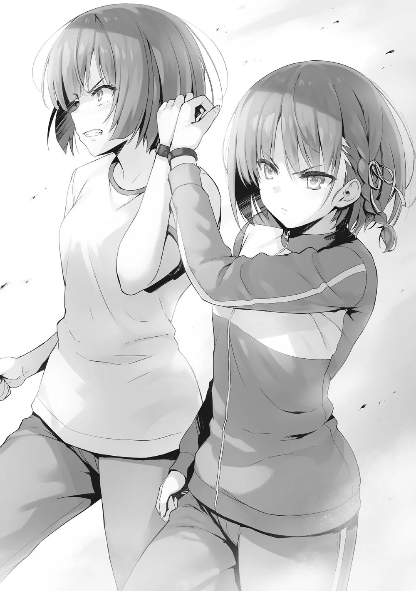
―¿Tienes miedo? Qué poco impresionante.
Aunque debería haber sentido la fuerza del oponente, por alguna razón Ibuki-san parecía estar divirtiéndose.
Entonces, la señal de finalización del enlace resonó.
―¿A cuál de ustedes debo romper? ¡No lo sé!
La cara de Amasawa-san estaba llena de pasión cuando empezó a correr. Sin ninguna postura ni nada, extendió su brazo y se dirigió hacia aquí para alcanzarnos.
―¡Jajaja! ¡Jajajajajajajaja!
Su gran sonrisa retorcida la hacía parecer inhumana. Ibuki-san o yo. Parece que yo le desagrado más, pero eso no significa necesariamente que me tenga como objetivo.
―¡Vamos, Ibuki-san! ¡A tu izquierda!
―¡No me des órdenes!
Mientras decía eso Ibuki-san se movió hacia su izquierda. Al mismo tiempo, yo también me moví hacia mi derecha y busqué a quién de nosotras atacaría Amasawa-san. Amasawa-san acercándose a nosotras de frente no parecía tener la más mínima intención de mofarse de nuestro pequeño truco. Puede que tenga la intención de decidir en el último segundo. Si ese es el caso, lo comprobaré detenidamente.
Como ambas nos movimos al mismo tiempo, la distancia entre nosotras se perdió en un instante y chocamos. No es que Ibuki-san se sincronizara con mis puños, así que, como es lógico, no estábamos sincronizadas. Pero, de nuevo, eso no significa necesariamente que fuéramos derrotadas fácilmente.
A pesar de eso, como si hubiera estado practicando lo suficiente para acostumbrarse, Amasawasan esquivó limpiamente. Para seguir golpeando, seguimos atacando sin descanso.
―Bien, tiempo fuera...
Nuestros golpes, los cuales no los contuvimos en lo absoluto, fueron detenidos silenciosamente por Amasawa-san.
―¡Qué es lo que hace esta niña de 1er año...!
―Dios...
Nos alineamos y miramos fijamente a Amasawa-san, mientras recuperábamos el aliento. Nuestra combinación improvisada no estaba coordinada, pero seguía siendo un 2 contra 1. Normalmente la otra persona debería estar convenientemente abrumada, pero somos nosotras las que nos estamos cansando.
Es más de lo que imaginaba... no, ella supera la imaginación. Dentro del sentido común que tengo, su existencia es inidentificable. Ella ha contenido un brazo dominante. Si Ibuki-san trata de meter una patada, podría ser contrarrestada.
―Ibuki-san, por favor no te descuides.
―¡Suéltame!
¿No podía soportar que la sujetaran? Ibuki-san estiró su flexible cuerpo hasta el límite y lanzó una patada. Como si eso fuera lo que estaba esperando, Amasawa-san usó el brazo dominante que sujetaba para derribarla.
―¡¡…!!
―Dije tiempo fuera, ¿no es así?
En este momento, en este agotador estado de batalla, sentí una indescriptible sensación de incomodidad. Una clara diferencia de poder. ¿Estaba Amasawasan jugando? Parecía que estaba luchando con el mínimo de movimientos desde hace un tiempo.
Hace un rato, cuando habíamos luchado 1 contra 1, ¿qué habría pasado si ella no hubiera esperado a que me recuperara? Pero algo no me parece bien. Con su fuerza debería haber sido capaz de suprimirnos por completo. He pensado en un plan que me gustaría probar. De todos modos, primero tenemos que cambiar la situación.
―¡Haa!
Intenté usar mi puño izquierdo, pero al igual que Ibuki-san fue apartado ligeramente.
―Muy bien, prepárense para empezar de nuevo...
Con una amplia sonrisa mientras nos miraba, Amasawa-san tomó distancia una vez más.
―¿No estamos en el mismo barco?
―A diferencia de ti, yo he estado empujando las cosas hacia esta dirección... para prepararme para empezar de nuevo.
―Una excusa aquí es penosa.
Eso es probablemente lo que cualquiera diría de nosotras si viera esta situación.
―Si quieres fastidiar, te haré recordar...
Ibuki-san se volvió a levantar y parecía que se estaba preparando para seguir, incluso sola. La agarré de la mano y la detuve.
―¿Qué estás haciendo?
―Ya que nos hemos convertido en camaradas, por favor, escucha mis instrucciones. Puedes hacerlo, ¿verdad?
―¿Haaa? Por supuesto que no.
―Si no puedes esto no tendrá sentido. Deberías entender lo fuerte que es Amasawa-san. Si fuera sólo yo o sólo tú no seríamos capaces de ganar.
―Aunque así sea, no seguiré tus órdenes por nada del mundo.
Pienso. En cuanto a Ibuki-san, ¿cuál es la forma más óptima de acercarse a ella?
Si Ayanokouji-kun estuviera en este lugar, en esta misma situación, ¿qué haría?
¿Qué debería hacer para que 2 personas que originalmente no se llevan bien cooperen aunque sea en este lugar?
―Ibuki-san.
―Dije que no, ¿verdad?
―Sé bien que tú y yo somos como el agua y el aceite. En esta isla deshabitada, frente a esta de 1er año, llegamos a esta situación sólo por una pequeña pelea, pero hay una cosa que respeto de ti.
Así es. Haré lo que tenga que hacer ahora mismo sin dudarlo.
―Tu sentido de la pelea no se queda atrás del mío. No, creo que está ligeramente por encima del mío.
―Ja, ¿qué es esto tan de repente? ¿Estás tratando de adularme?
―Sin embargo, tu estilo de lucha está especializado en peleas de 1 contra 1. En las peleas de 2 contra 1 contra un enemigo fuerte, cuando se trata de cómo nos movemos estoy más familiarizada con ello. Puede que me haya equivocado al pedirte que trabajes conmigo. Préstame ese poder tuyo.
Ibuki escuchó esas palabras y se giró hacia mí por un instante.
―Eres fuerte comparada conmigo. Pero eso es todo. Aparte de eso, es como si nuestros niveles fueran diferentes. No puedes estudiar. No puedes unir a tus compañeros de clase o unirte a otros. Lo siento, pero nombrarte como mi rival a pesar de eso es toda una arrogancia.
Si se enoja que se enoje. Pero no dejaré lo que estoy diciendo a la mitad.
―Pronto llegará el momento de que salgas de tu caparazón. Ibuki Mio-san.
―...¿Qué es eso?
―Si sigues avanzando como hasta ahora, correrás el riesgo de que te expulsen.
―Está bien, si se llega a eso, ni modo.
―Eso significaría mi victoria total y absoluta. ¿Está bien?
―¿Ja?
―Si te expulsan por ser medio idiota no puedo llamarte mi rival. Sigue hasta el último segundo del último momento y conviértete en una rival que pueda amenazarme.
―Ah-ya lo entendí. Lo entiendo así que cállate. Te seguiré sólo hasta aquí.
Es suficiente, ¿verdad?
―Buen trabajo.
―Entonces, ¿qué debo hacer?
―Al igual que la última vez, atacar a Amasawa-san al mismo tiempo. Pero golpearla es secundario. Quiero que la rodees sin que te atrapen. Y quiero que sigas atacando.
―¿Golpearla es secundario? ¿Qué logrará esto?
―Si estoy leyendo correctamente... entonces esto nos dará definitivamente una oportunidad de ganar. Cuando dé la señal ataca con todo lo que tengas.
No parecía que lo entendiera, pero Ibuki-san se separó de mí.
―¿El tiempo de planificación se acabó? Entonces, ¿empezamos pronto el segundo asalto?
Nos lanzamos al mismo tiempo y nos enfrentamos a Amasawa-san mientras nos separamos a derecha e izquierda. Para no ser atrapada, no debo acercarme. A una distancia en la que puedo tocarla o no tocarla con mis puños, mido el tiempo y aguanto.
Por supuesto, si Amasawa-san no hace nada al respecto, será golpeada directamente por mi ataque. Por lo tanto, mientras sea atacada, sus nervios seguirán inevitablemente desgastados. Con calma, en silencio, y cuando siento el peligro tomo distancia rápidamente.
Si fuera sólo yo no habría sido capaz de retroceder, pero sólo porque estamos separando su conciencia en dos direcciones, es una estrategia pasable. No hay.
Todavía no hay hueco. Antes de que me quede sin aliento, más rápido, más rápido...
A causa de ser continuamente bombardeada por un ataque peligroso, la agudeza de los movimientos de Amasawa-san comenzó a apagarse. La de la cara sonriente estaba obviamente empezando a quedarse sin aliento.
―¡Ahora!
Para no perder la oportunidad de mi vida, clavé mi puño derecho en Amasawasan. Si esto fuera como hasta ahora, ella lo habría evitado con una sola mano para mostrar margen de maniobra. Pero ella adoptó una postura defensiva.
Detuvo mi ataque directo a su cuerpo. Ibuki-san dio la vuelta a su espalda y pateó el suelo. Amasawa-san se dio la vuelta para tratar de lidiar con ella, y yo le clavé mi puño cerrado en la cara. El cuerpo de Amasawa-san se estremeció por el primer ataque que recibió de nosotras.
―¡Haaaaa!
En medio de una intensa caída, le di un golpe en el abdomen y ella no pudo adoptar una postura defensiva. Amasawa-san soltó un suspiro y se desplomó.
En ese instante me puse a horcajadas sobre ella y detuve sus movimientos para que no se volviera a levantar.
―Tuh... eso funcionó...
―H, haa... haa... esto termina aquí, Amasawa-san. Reconozco tu fuerza pero tu resistencia selló tu derrota.
Aproveché un punto débil inesperado y de alguna manera fui capaz de revertir la situación.
―Aha, ¿lo descubriste? Tengo un cuerpo débil.
A pesar de estar montada no se puso nerviosa sino que se rio con la lengua ligeramente afuera. Miré la ropa de gimnasia de Amasawa-san sin ninguna razón en particular y dudé de mis ojos. Por debajo de su ropa de gimnasia, su piel se asomaba ligeramente.
Sin pensarlo, agarré su ropa y la subí con fuerza.
―Tú, qué, esa herida...
Una marca severa que parecía un moretón. Vi muchas marcas de haber sido golpeada. Completamente diferentes de la estocada que le di, heridas que parecían haber sido infligidas como castigo. Eso significa que fue herida antes de que empezáramos a pelear.
―Tuve una pequeña pelea antes de ustedes.
A todas luces, su cara debería estar retorcida por la agonía. Debería ser difícil para ella incluso caminar. A pesar de eso, en un estado tan golpeado, ella luchó con ambas y tuvo una ventaja.
No es que no tenga resistencia. Desde el principio ha estado luchando al borde de la muerte. Estaba luchando por encima de mí cuando necesitaba recuperarse... Ese hecho casi me marea. Alguien que pudiera infligir heridas como estas a Amasawa-san en su estado perfecto. Incluso si incluyo a los hombres, no me viene a la mente nadie más que Housen-kun.
―¿Quieres saber quién hizo esto? Podría haber sido Housen-kun.
No hay duda de que la fuerza de Housen-kun va más allá de lo normal. Si luchara contra Amasawa-san, que tiene una fuerza irreal, aún podría estar por encima de ella. Pero de su personalidad, aunque no es seguro, he entendido algo.
Es impensable que ella responda directamente. Al final no me ha mostrado una sola respuesta que pudiera entender. Si ese es el caso, entonces, ¿el que abrumó a Amasawa-san fue otro? Incluso si incluyo a todos los estudiantes de la escuela, no puedo precisar a nadie. Yamada-kun tal vez, no, no habría ningún beneficio para él en hacer eso.
―Lo siento pero no te voy a creer. ¿Quién fue realmente?
―¡No puedo responder a eso...!
Negligencia. Después de ver que estaba lesionada, no pasó por alto el instante en que me sacudí.
―¡Oye, qué estás haciendo?
―...Sí. Eso fue una tontería.
De poder aprovechar una oportunidad única, a dejar escapar a Amasawa-san.
―Entonces, no... Con esto volvemos al punto de partida.
El oponente estaba herido por todas partes. A pesar de eso ella invirtió la situación de nuevo.
Si seremos capaces o no de suprimirla de nuevo... honestamente no lo sé. Pero no tengo otra opción. Entonces, como si hubiera pensado en algo, se dirigió a su mochila y sacó su tableta.
―Parece que se acabó. Ha sido un poco divertido, pero creo que se terminó el tiempo.
―¿Qué quieres decir?
―Quiero decir que hemos terminado. Si quieres irte entonces por favor vete~
Diciendo eso, ella abrió el camino hacia el que había mostrado una fuerte resistencia. ¿Una especie de trampa? Como nuestra comprensión no pudo seguir el ritmo, Amasawa-san se alejó.
―¿A dónde vas?
―¿Adónde? Sí, por ahora a mi área designada, supongo. Tengo que hacer el examen especial de alguna manera.
De todos modos, si ella se retira entonces puedo ir a comprobar el estado de Ayanokouji-kun.
―Ah, es cierto. No creo que tengas que ir a buscar a Ayanokouji-senpai nunca más, ¿sabes?
―...¿Por qué?
―Todo está ya hecho. Si crees que estoy mintiendo, ¿por qué no lo ves por ti misma?
―¿Ayanokouji-kun?
En ese momento, Amasawa-san miró ligeramente hacia abajo.
―¿Y si lo compruebas por ti misma? Pero podrías arrepentirte de no haber llegado a tiempo.
Como si realmente tuviera la intención de retirarse, Amasawa-san pasó a nuestro lado. Imposible, ¿podría alguien acabar con él?
―¿Qué vas a hacer? ¿Irás con Ayanokouji? Por eso luchamos contra Amasawa-san, ¿verdad?
―Sí, iré con él.
Ya he llegado hasta aquí. No puedo echarme atrás precisamente ahora.
―Entonces yo también iré.
―¿Por qué?
―Si Ayanokouji está en apuros, quiero estar allí para reírme de él.
―Qué rencorosa.
Ambas nos pusimos apresuradamente nuestras mochilas y salimos corriendo hacia I2.
PARTE 4
He cruzado la línea límite y he llegado a I2, pero no ha llegado ninguna señal de mi reloj. Normalmente habría pensado que podría tratarse de un error de cálculo de mi GPS, pero esta vez no parece probable.
Si ese fuera el caso, para compensar el error de cálculo del reloj, tendría que ir al centro de la zona. Por supuesto, en estas dos últimas semanas no ha ocurrido ni una sola vez. Como la zona central de I2 está en la punta de la isla, tendré que ir allí de todos modos. Si Ichinose no hubiera acudido a mí, me habrían hecho poner un pie aquí sin saber nada.
Caminé lentamente por un sendero sin salida. Antes de que hubiera caminado 10 minutos, un profundo bosque había ido absorbiendo la luz, y ante mí pude confirmar que el cielo azul y el mar se extendían. Incluso después de llegar aquí
mi reloj no ha tenido ninguna reacción. En cambio, vi a dos adultos de pie en una pequeña playa frente a mí.
Uno de ellos era alguien a quien recordaba bien, el director interino Tsukishiro.
Parecía una especie de juez. Y el otro era el profesor de clase de 1ºD, Shiba-sensei. Era una pareja extraña, pero parece que de alguna manera es así.
―Adoptó un método bastante contundente, Director Interino Tsukishiro.
Mientras caminaba, esa voz sonó.
―Nada en absoluto había funcionado, ¿sabes? Esta es una elección que apenas puedo permitirme.
Volví a recordar los 14 días de este examen especial. El hecho de que Tsukishiro me atrajera a I2 como una trampa final se había hecho evidente.
Pero no es que no haya caído en ella en absoluto. En esta zona del noreste, no hay áreas o tareas designadas para que no vengan otros estudiantes. Pero al mismo tiempo, podría haber ignorado mi área designada y dirigirme a completar las tareas. O podría haberme movido con alguien como Nanase que tenía la misma tabla que yo.
Que Tsukishiro establezca una etapa final aquí y la deje al azar es poco probable. Eso significa que desde ayer, mi llegada aquí estaba 『decidida.』
Nanase perdiendo contra mí y luego moviéndose por separado después de eso.
Eligiendo moverme solo para esconderme alrededor del 11º lugar para aspirar a los rangos más altos. Incluso el momento del ataque de los de 1er año. No sería un error ver desde el principio todo esto como un plan de Tsukishiro.
―Entonces, ¿qué pasará conmigo después de esto?
Un pequeño barco al borde de mi visión estaba anclado con el motor en marcha, mecido por las olas. En otras palabras, se habían preparado para partir en cualquier momento.
―Si es posible, me gustaría que siguieras nuestras indicaciones y subieras a este barco con nosotros.
―Podríamos resolver esto pacíficamente con el retiro voluntario de Ayanokouji Kiyotaka.
Shiba-sensei añadió eso.
―¿Cree que elegiré obedientemente subir a ese barco?
―Ciertamente. Si fueras obediente, no habría sido necesario desplazarnos hasta esta isla deshabitada.
―De todos modos, no es que Shiba-sensei tuviera ningún vínculo con esta escuela. Así que era uno de los suyos, director interino Tsukishiro.
El hecho de que no tuviera ningún contacto previo con esta escuela también podía significar que se le había asignado la vigilancia de Amasawa-san. Parece que ya no hay necesidad de eso y ya no tiene ganas de ocultarlo.
Probablemente parecería sospechoso estando en el noreste donde no había nada, pero Ichinose y Nagumo también estaban aquí. Si actuaron como camuflaje, entonces estaban funcionando bien.
No, a pesar de todo, sería bueno tomar esto como que el que nos vigila ha estado al lado de Tsukishiro. Pero no veo ningún peligro visible en él.
―Habría sido fácil suprimirte aquí si hubiéramos usado cualquier arma, pero desafortunadamente eres una mercancía. Es mi deber devolverte a salvo, así que... he juzgado que necesito usar mis puños.
Tsukishiro se paró en la playa de arena y se rio implacablemente mientras levantaba tranquilamente sus manos. Aquí, en mi último momento, tenía que chocar los puños con Tsukishiro. Él no es Nanase. Definitivamente no puedo seguir esquivando sus ataques, y probablemente no funcionaría.
―Quiere decir que tengo que aceptar para evitar la expulsión.
―Así es.
―Si es posible, ¿ podría perdonarme? No voy a decir que arreglar las cosas por medio de la violencia sea malo, pero soy un estudiante de esta escuela. Basado en las reglas normales esto sería una 『violación.』
―Ese puede ser el caso. Sin embargo, Ayanokouji-kun, incluso dentro de la Habitación Blanca eres un modelo con resultados especialmente buenos. Si todos tuvieran que pelear contigo dentro de las reglas, entonces nadie sería tu enemigo ¿verdad? ¿No crees que competir con otras personas en esta escuela es una tontería? ¿O estás encantado de sentirte como el Rey de la Montaña?
―Si eso fuera cierto, entonces sería una traición a las esperanzas de ese hombre... no, una degeneración ¿no?
―No, no, eso no es cierto. El mayor deseo de la Habitación Blanca es controlar Japón, e incluso el mundo entero. Si tú, un éxito, te sientes así, entonces en el futuro ¿cuánto más encantado te sentirías de controlar el mundo?
Desde una pequeña escuela de Japón, la conversación cambió de repente a la dominación mundial. No importa quién escuchara semejante fantasía, sólo se reiría con desprecio. Tsukishiro, delante de mis ojos, probablemente duda de lo realista que es eso. Sólo está siguiendo órdenes y cumpliendo con sus deberes.
―Bueno, si tuviera que decir lo que realmente pienso, no creía que esta escuela fuera tan importante.
―Eso es cierto. Para ti esta escuela sólo supera el nivel de los niños pequeños.
―Sólo hablo del plan de estudios. Por fin puedo ver la dirección de las cosas que debo y quiero hacer en esta escuela. Creo que voy a disfrutar mucho hasta que me gradúe. Además, hay mucha gente excelente fuera de la Habitación Blanca.
Más que eso, este lugar era un tesoro de recursos humanos que la Habitación Blanca nunca podría aportar.
―No pretendo menospreciar a ningún alumno de la Escuela Superior de Educación Avanzada. Los que superan la excelencia de la que hablas suelen encontrarse en todo el mundo. A veces hay quienes te superan en lo deportivo o en lo académico. Sin embargo, los importantes no son esos, sino los que sacan excelentes resultados de cada situación y son capaces de liderar a mucha gente.
El director interino Tsukishiro rápidamente dirigió sus ojos a Shiba-sensei.
―¿Cómo están Nagumo-kun e Ichinose-san?
―Creo que Nagumo-kun ha dejado de moverse e Ichinose-san ya está lejos.
Que yo detuviera a Nagumo e Ichinose era, por supuesto, también parte de sus cálculos.
―Entonces, en cuanto a la presencia inesperada, parece que Amasawasan detuvo sus movimientos.
¿Presencia inesperada? Aquí no hay tareas ni designaciones. ¿Alguien venía aquí aparte de Ichinose y Nagumo? Si un estudiante no relacionado pudiera aparecer en este lugar, sería un inconveniente para Tsukishiro. Parece que ese personaje irregular fue detenido por Amasawa-san.
―Lo que significa que ha dejado de usar su cortesía.
―Sin embargo, no me pareció que usted y Amasawa-san estuvieran aliados.
― Para decirlo simplemente ella es una 『 traidora. 』 Aunque fue la persona seleccionada para devolverte, parece que desde el principio no tenía intención de hacerlo.
Como si quisiera decir que las conversaciones inútiles habían terminado, Tsukishiro dio un paso adelante. Tampoco era mi plan dejar que se perdiera el tiempo. Ambos nos acercamos poco a poco. Entonces la distancia que quedó entre nosotros fue de 5 o 6 metros. Para que yo no pudiera escapar, Shiba-sensei va lentamente detrás de mí.
―No dirás que el 2 contra 1 es injusto, ¿verdad? Aunque sea temporalmente eres el Magnum Opus de la Habitación Blanca. Incluso me siento un poco nervioso.
Aunque dijo eso, Tsukishiro tenía un margen de maniobra abrumador. Intuí que aunque podría haber luchado bien contra mí 1 a 1, eligió luchar contra mí 2 a 1.
Sin un ápice de orgullo, adoptó una actitud sólida. Desplazo mi línea de visión y la encaro hacia el barco de la orilla. Solo había un marinero observándonos; el
piloto. En otras palabras, aunque viniera corriendo, sólo tenía que ocuparme de 3 enemigos.
―No te preocupes. Los que lucharán contigo sólo seremos él y yo.
El oponente no es tan simple como para que pueda aceptar sus palabras sin cuestionarlas. Con lo que dijo antes, aunque esté con las manos vacías no puedo descartar la posibilidad de que esconda un arma. No se trata sólo de un adulto con un poder desconocido. Dos agentes me estaban rodeando con la posibilidad de tener armas y refuerzos. Iba a luchar en busca de otras variables.
Normalmente esta multitarea debería haberse grabado en el cerebro, pero no tenía ningún desorden en mi mente. Las peleas irracionales y desventajosas se me habían impuesto repetidamente desde que era un niño pequeño. Era tan necesario y normal como que un ser humano necesite respirar para seguir vivo.
―No crees que vayas a perder de ninguna manera. Eso es lo que dice tu cara.
―¿Eso es lo que le parece?
Un resultado visible no se deja ver por ningún lado. Tendré que apoderarme del futuro o éste no se abrirá. Rodeándome por detrás y por delante, mis oponentes seguían observándome. Normalmente querría hacer correr la primera sangre y golpear primero, pero para empezar no es un buen plan.
Los que están delante y detrás de mí no son estudiantes, sino gente de la escuela. Si sólo levanto la mano contra ellos, estaría en desventaja fuera de esta pelea.
―Aunque sabes que sería más efectivo, seguro que no haces el primer movimiento. Eso es propio de ti ―Tsukishiro, conociendo un poco la dirección de educación de la Habitación Blanca, analiza―. Bueno, entonces - sin reservas, vamos a empezar, Shiba-sensei.
Al mismo tiempo que pronunció su nombre, los dos adultos comenzaron a caminar hacia mí en forma sincronizada. Con calma y en silencio, mientras avanzaban como piezas de Shogi en una partida final, la distancia entre nosotros se redujo.
Shiba-sensei borró su presencia y sus pasos por detrás de mí al mismo tiempo.
La distancia hacia Tsukishiro por delante de mí era ahora de 7 pasos, 6 pasos, 5
pasos, 4 pasos-.
Al agacharme un poco, evité las dos manos de Shiba-sensei que habían intentado agarrarme la cara por la espalda. Como pensé, el primer golpe vendría de la espalda. Mientras esquivaba eso, desde mi frente Tsukishiro extendió sus brazos y trató de atraparme de la misma manera que Shiba-sensei. Lo esquivé con un giro sobre la playa, me levanté y corrí al mismo tiempo y escapé de su persecución. La brisa del mar soplaba mientras una nube de arena danzaba. Los dos adultos no se apresuraron a perseguirme, sino que miraron en silencio hacia aquí.
Los adversarios también me observaban. No tenían datos. Intentaban medir mi habilidad a través de mis movimientos. Mi pie se hundió en la arena. Si esto iba a ser así, tal vez debería haber tirado mis zapatos con anticipación.
Debajo del sol que los iluminaba calurosamente, los dos empezaron a caminar de nuevo para acortar la distancia. Mirando mi cara y mi cuerpo frente a ellos, me moví hacia atrás sólo en la medida en que ellos avanzaban. Me puse de espaldas al mar, escapé y conservé un pie lejos de la suave arena y evité que me rodearan al mismo tiempo.
―Hay una teoría, pero es dudoso que pueda llamarse respuesta correcta, Ayanokouji-kun.
Ya no podían tomar mi espalda, pero en cambio mi ruta de escape se estrechó.
Estaba en una posición en la que si descendía más, mis pies serían tocados por las olas. Tsukishiro y Shiba-sensei se acercaron a esa posición. Efectivamente, sus brazos extendidos intentaban atraparme. Parece que aún no tienen intención de dañarme con golpes.
―Tu escape fue hecho con habilidad.
Ambos aceleraron su paso. La brecha por la que podía escapar estaba siendo arrebatada. Bajé un pie hasta casi tocar el agua y corrí sin esperar.
―¿Oh? ¿Has renunciado a intentar proteger tu espalda con el mar?
Si el oponente estaba confundido entonces yo también podría escabullirme fácilmente. Mientras pensaba eso, Shiba-sensei y Tsukishiro patearon la arena y se acercaron a mí.
2 contra 1. Si soy atrapado por cualquiera de ellos se acaba el juego en ese instante. Los cuatro brazos se turnan para intentar alcanzarme. Si muestro una pequeña brecha se acabó. Corro y trato de tomar distancia, pero sin quedarse atrás los dos comienzan a perseguirme.
Si sigo escapando en un lugar como este, seguirá mermando mi resistencia. Es obvio que su objetivo es cansarme con el calor y el emplazamiento. Dejé de huir, puse mi cuerpo al límite y di un paso firme con mi pierna izquierda en la arena.
Se dirigió a Shiba-sensei a mi espalda.
―¡¿Mu?!
Ante la inesperada trayectoria de mis movimientos, los desplazamientos de Shiba-sensei se endurecieron. Mientras hice una finta con mi mano izquierda, apunté a su abdomen con mi mano derecha, pero Shiba-sensei, sintiendo el peligro, conservó la distancia. Una prueba de que elegiría esquivar antes que atraparme.
―Vaya, contra los dos, estás dando una pelea espléndida Ayanokouji-kun.
Intenté cambiar a un contraataque mientras esquivaba a ambos, pero fui incapaz de conseguir un golpe limpio.
―Pero la resistencia de un humano tiene límites. Deberías empezar a quedarte sin aliento pronto.
―Es difícil luchar contra usted, director interino Tsukishiro.
―A menudo les desagrado a los demás por mis acciones, pero es mi trabajo.
Sin tener en cuenta la suciedad o la limpieza, una forma de luchar que pretende atraparme y llevarme de vuelta. Pero no estaba gastando resistencia sin razón.
Lo que gané al llegar a este punto. La diferencia entre la habilidad marcial de Tsukishiro y Shiba-sensei era pequeña pero estaba ahí.
Si Tsukishiro era un 4, Shiba-sensei era un 6. Entendí que los movimientos de Shiba eran más agudos. Sin embargo, mi percepción me decía que Tsukishiro estaba un escalón por encima... De todos modos, mi balance de cautela cambia lentamente a 5 y 5. Pensé que estaba confiando mi espalda a Shiba-sensei, que era ligeramente más débil que él, pero era lo contrario.
Estaban buscando mi espalda. Por ello quiero atacar al más débil Tsukishiro, pero su fuerza sigue estando fuera de serie. Este era alguien de otro nivel. No era alguien a quien pudiera derribar fácilmente. Por otro lado, si se da cuenta de que he terminado de analizarlo, Tsukishiro podría centrarse en su guardia.
Antes de que note que me he dado cuenta de su diferencia de poder, derribar a Shiba-sensei de un solo golpe. En pocas palabras, garantizar un golpe mientras están despistados. Ahora mismo, cuando el oponente aún no tiene intención de golpearme, es mi oportunidad. Si tengo suerte entonces podré dañarlos por completo. Y entonces, después de que Shiba-sensei esté incapacitado, lidiar con Tsukishiro sin un momento de retraso.
Los pensamientos sucedieron en un segundo. A la misma velocidad ambas personas venían a atacarme. Pero las manos que deberían haber estado tratando de atraparme, ahora estaban fuertemente apretadas. Pasaron a golpear.
Me han descubierto.
Notaron mi intención de intercambiar golpes. Si me golpeaban así, ambos me atraparían. Si ese es el caso, entonces con esto, necesitaré un ataque más fuerte. Intenté dejar de lado el pensamiento de dañar a Shiba-sensei a mi espalda, pero algo inesperado sucedió. Sentí frío en el cuello y me vi obligado a interceptar su contraataque. Sin contar las veces que había conseguido esquivarlo, hui de Tsukishiro.
Un pequeño y seco sonido llegó a mis oídos en el último segundo procedente del puño que Shiba-sensei blandió. Si hubiera tratado de intercambiar golpes con él, tal vez no hubiera podido moverme ahora. No había ningún error. El golpe de Shiba-sensei tenía el mismo poder que el mío.
No, incluso más...
Estaba mirando a Tsukishiro por el lado mío, que debería ser inferior a Shiba.
Pero él fue 2 pasos más rápido de lo que esperaba.
―...Como pensaba no puedo ser negligente con usted, Director Interino Tsukishiro.
Esquivé su ataque que vino de inmediato y empecé a sudar frío en medio de esta pelea, que se sentía como si hubiera durado años. Si no hubiera confiado en mi intuición, ¿qué habría pasado? No sólo podría haber recibido el golpe de Shiba-sensei, sino que también podría haber estado indefenso ante el ataque de Tsukishiro.
Tsukishiro era 4, Shiba-sensei era 6. Esa lectura fue un engaño. Información falsa creada por el enemigo. Estaba conservando su poder intencionalmente. Su ataque gritaba esa advertencia.
―Intentaste eliminarlo desde allí, pero tu velocidad de reacción no está al nivel de una persona normal ¿eh?
Si. El hecho de haber evitado esa posibilidad fue una suerte. Que desagradable sería que Tsukishiro, fuera más débil que Shiba. Solo ese punto me ayudó a subir la guardia en ese momento. Estos dos eran demasiado cautelosos para arriesgarse hasta el final, pero si tenían algo que ganar entonces se arriesgarían sin dudarlo. La situación me perjudica un poco, ¿eh?
Incluso si tratara de aplastar a uno de ellos antes, sincronizar mi evasión perfectamente y luego golpearlos también es difícil. Es impensable que su combinación fuera hecha en un día.
´
―¿Has terminado de analizar? Ayanokouji-kun.
Todavía no han pasado dos minutos desde que empezó la pelea. Ya he intentado varios patrones, pero ninguno de ellos resultó en un golpe decisivo.
―Pelear puramente como niños comparando nuestras fuerzas es algo fácil de hacer. Pero para que nosotros, los adultos, no perdamos, no podemos dudar en adoptar cualquier cosa que no sea el mejor plan. Incluso si es sucio o algo que nunca querrías ver.
Tsukishiro también lee el 99% de mis pensamientos. Con precisión y sin confusión, luchará sin dejar que sus propios pensamientos sean leídos. No,
¿debería decir que incluso dejando que sus propios pensamientos sean leídos, no mostraría la verdad? De todos modos, con esta situación no podré dar un golpe decisivo. A este paso, si me van a abatir de todos modos, parece que debo correr mis propios riesgos.
―Director interino Tsukishiro.
El que rompió esta desventaja y no había dicho muchas palabras hasta ahora fue Shiba-sensei. Justo después de que su nombre fuera mencionado, pareció que Tsukishiro también notó algo extraño. Algo que nadie había esperado aquí.
―En un lugar tan apartado como éste, ¿qué hacen el director interino Tsukishiro y un profesor de clase con un alumno? ¿Podría decirme, por favor?
Un visitante no invitado.
―Tú eres...
―Ella es Kiryuuin Fuuka de la clase 3-B.
¿Por qué está ella aquí? El único designado para venir a esta zona debería ser yo.
―No pareces estar perdida. ¿Hay algo que necesites?
Aflojando un poco su postura de combate, Tsukishiro pregunta con su tono de voz habitual.
―La verdad es que he estado observando las cosas desde detrás de un gran árbol desde hace un rato, pero no entendía la situación. Así que vine corriendo hacia aquí.
Por supuesto, no es que las señales de GPS de Tsukishiro y Shiba fueran invisibles.
―Esto puede ser por lo que vine. Parece que tuve un accidente con mi reloj.
Así lo dijo Kiryuuin mientras se reía. Nos mostró su reloj, cuya tapa se había roto en pequeñas partes.
―Los caballeros de la escuela están frente a mí, así que me gustaría que me escucharan. No hay ningún problema, ¿verdad? Aunque mi reloj está roto, eso sólo significa que la función de seguimiento de puntos está desactivada. A dónde voy depende de mí.
―Por supuesto que no hay ningún problema. Pero los accidentes de los relojes en este examen nunca se detienen.
Tsukishiro no pareció asustarse por la presencia irregular en este lugar.
Normalmente ser visto por otro estudiante era una señal para irse. Pero, efectivamente, Tsukishiro, entendiendo que este es el último combate, no se irá.
Simplemente apuntará el nombre de Kiryuuin en la lista de eliminación.
―Ayanokouji, ¿era esto innecesario?
Si ella viera una extraña pelea entre un estudiante y un profesor, no tendría sentido guardar las apariencias. Más que eso, este accidente fue un movimiento efectivo.
―Eso depende de lo que pase después de esto. ¿Puedo tomar esto como que me estás ayudando?
La fuerza de Tsukishiro es considerable. Su estilo de pelea, derivado de toda la experiencia y habilidad que ha acumulado, lo convirtió, incluso en mis recuerdos pasados, en alguien a quien podría llamar un enemigo de primera clase.
―Por supuesto. No sé qué está pasando, pero como compañera de clase mayor es natural que protejas a tus compañeros menores, ¿verdad?
Diciendo eso, Kiryuuin se puso a mi lado y se rio.
―¿Pero por qué viniste aquí?
―Ayer parecía que estabas huyendo de los de 1er año. Me sentí interesada y pensé en preguntarte la historia completa, pero como te estabas escapando tuve que hacerlo.
Así que destruyó a propósito su reloj para poder llegar hasta donde yo estaba sin ser descubierta.
―Me alegro de haberme dejado llevar por mi curiosidad. Al final conseguí ver algo realmente interesante.
Es cierto que normalmente este tipo de cosas no sucederían.
―Shiba-sensei, confío en usted para tratar con ella.
―Por lo que veo, el director interino y Shiba-sensei parecen increíblemente fuertes. No sé cuán útil puedo ser, pero probablemente no será por mucho tiempo.
Diciendo eso, Kiryuuin se puso directamente a mi lado y levantó los puños alegremente.
―Si puedes quitarme, aunque sea uno o quizás dos segundos de mi tiempo, entonces te doy la bienvenida.
―Por favor. Puedo aguantar contra usted al menos uno o dos minutos.
Pero Ayanokouji, ¿no puedes lucir algo mejor?
―Mejor, ¿verdad?
―Tu cara de flojera tampoco ayuda. Levanta las manos y trata de parecer que estás a punto de pelear.
No pensé que ella diría algo así aquí, de todos los lugares. Pero me sentí empujado por la extraña presión de Kiryuuin y no pude evitar intentar adoptar una pose como esa. De alguna manera parece una escena de pelea de un drama.
―...¿Cómo está?
―Fufu, eres torpe para estas cosas. Bueno, está bien. Yo digo que apenas estás en el nivel más bajo.
Kiryuuin sonrió ampliamente y volvió a adoptar una posición de combate.
―¿Tienes experiencia en golpear a la gente?
―Soy una dama, ya sabes. Por supuesto que no tengo ninguna.
―...¿Hablas en serio?
―No te preocupes. He pensado antes que quiero probarlo una vez.
Los dos tomamos distancia y nos fuimos a nuestras distintas peleas 1 a 1.
―Acabemos con esto, director interino Tsukishiro.
―Si sólo eres tú, entonces puedo ganar - ¿es tu opinión?
Tsukishiro adoptó una postura con su habitual sonrisa, sin dar la sensación de tener margen de maniobra ni de urgencia.
―Entonces, ¿podrías mostrarme? Tu verdadero poder en un combate 1
contra 1.
Me encuentro con el enemigo que bloquea el camino frente a mí como un igual.
Si no lo hago entonces el que quedará destrozado seré yo. Pero con eso tendré que resolver esto en un minuto. Antes de que Kiryuuin sea suprimida por Shiba-sensei. Esquivo sin hacer ruido el ataque de Tsukishiro y clavo mi puño izquierdo en su mejilla.
―¡¿…?!
Seguí golpeando con tempo. Eran puñetazos afilados. Como sólo estoy concentrando mi conciencia en hacerlos aterrizar, cada uno de ellos no tiene mucha potencia. Sin embargo, a medida que seguía descargando los puñetazos, la sonrisa de Tsukishiro se diluía. Estaba intentando atacar su espíritu de lucha.
Incluso si es sólo un poco de daño, se produce un efecto en el cuerpo humano.
Eso es 『lágrimas』
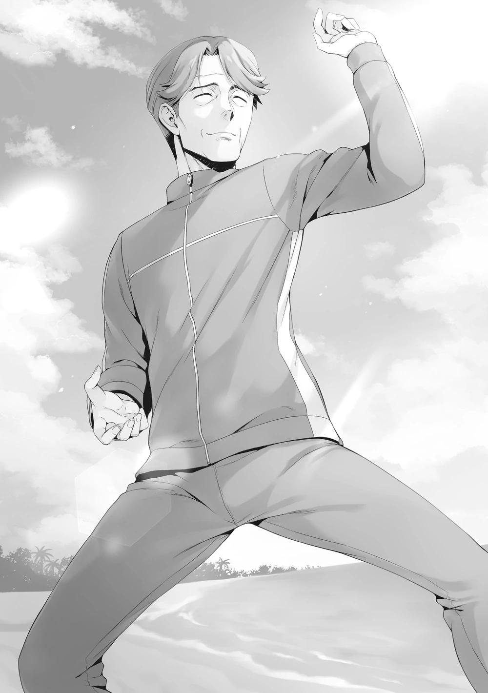
Para todos los humanos, un golpe al espíritu de pelea inducirá a las lágrimas.
Las lágrimas salen antes que el dolor, y el campo de visión vital es eliminado.
Que sea un adulto o un niño, joven o viejo no tiene nada que ver. Se trata del cuerpo humano.
Cuando el campo de visión de Tsukishiro empeoró, golpeé su barbilla con un uppercut. Tsukishiro miró hacia arriba y seguramente se mordió la lengua.
Escupió un poco de sangre.
―¿Cuándo terminará?
Tsukishiro se limpió la sangre que le salía de los labios y se rio siniestramente.
―Te reconoceré, aunque seas un niño en tu segundo año de preparatoria.
Eres, sin duda, la mayor obra maestra.
Incluso entre todos los oponentes con los que he chocado los puños hasta ahora, Tsukishiro es sin duda élite de primera clase. Puedo estar de acuerdo con eso, aunque juzgue que podría ganar contra él 1 a 1.
―En primer lugar no me gustan las cosas rudas, pero es tan divertido que no se puede evitar.
Riendo como si a algo le hiciera gracia, Tsukishiro vuelve a adoptar una posición.
Pero en lugar de venir hacia mí de inmediato, Tsukishiro retrocede lentamente.
Podría tomar esto como que está ganando tiempo hasta que Shiba-sensei suprima a Kiryuuin, pero... Sin perder la calma, busqué tranquilamente el camino hacia la victoria. Tsukishiro miró la arena bajo mis pies. Aunque sólo fue por un segundo. Sin importarme eso, di un paso adelante y puse fuerza en mi mano derecha.
―¡Eres completamente, soberbio!
Tratando de torturarlo, alcancé a Tsukishiro con un golpe en el cuerpo. Casi puse una cantidad satisfactoria de poder en ese golpe directo. Pero la sonrisa de Tsukishiro todavía no desapareció. Incluso mientras se derrumbaba, Tsukishiro cogió arena con su mano izquierda y la lanzó hacia mí.
Y con su mano libre, se clavó en la arena, como si se hubiera abierto un profundo agujero en ella y la levantó. Aunque el golpe de su mano derecha me diera directamente, con su cuerpo en esa condición no me causaría mucho daño.
Sin embargo, no recibí esa mano derecha directamente. Aparté la mano de Tsukishiro, tomé su mano derecha inmediatamente y la detuve.
―¡-!
Aquí, por primera vez, la sonrisa de Tsukishiro desapareció. Ante mis ojos estaba la pistola aturdidora que Tsukishiro había estado sosteniendo en su mano derecha.
―¿Cómo lo supiste?
―No lo supe hasta el último momento. Pero a pesar de no mostrar ninguna fisura ni siquiera un instante, su visión bajó hasta donde yo estaba, como si quisiera verificar algo. Entonces me sentí inquieto. Si realmente pretendía quitarme la visión con la arena, no hacía falta que se molestara en mirar al suelo.
Cuando tomó la arena en su mano izquierda y la lanzó hacia mí, mi mente se adelantó.
―Además, me pareció que tomar deliberadamente mis ataques de frente era poco natural.
Como nuestra fuerza era casi igual, ambos necesitábamos cambiar el flujo de la situación.
―Si pudiera, no querría correr este tipo de riesgo... esa era mi intención, pero tu fuerza fue suficiente para desconcertarme.
Soltó el agarre de su mano derecha y dejó que la pistola aturdidora cayera de cabeza a la arena de la playa.
―Bueno, entonces, ¿qué vas a hacer desde aquí? Recibí bastante daño...
Ante nuestros ojos, Shiba-sensei había sujetado a Kiryuuin por detrás. La estaban obligando a rendirse. Entonces, levanté la mano del director interino Tsukishiro y envié una señal a alguna parte. Cuando lo hice, el capitán de la
pequeña embarcación anclada parecía estar sujetando algo e intentaba descender. Es obvio que era su última baza en la posibilidad de 1 entre 100 que habían perdido. Pero eso también era para nosotros.
―Es una pena, pero se le acabó el tiempo, director interino Tsukishiro.
La pequeña embarcación dejó de repente de prepararse para desembarcar y puso en marcha su motor. Dejando atrás al Director Interino, partió rápidamente.
Seguramente porque vieron otra pequeña embarcación en el mar.
―...Estoy sorprendido. ¿Cómo llamaste a un barco? Aunque obviamente hice algunos preparativos por adelantado. Para que en el caso de que lo intentaras, no pudieras obtener ayuda de la escuela. Y yo que pensaba que querías evitar que te conocieran.
―Es sencillo. Si observa el barco lo suficientemente bien lo verá, ¿no es así?
Mirando de cerca la cubierta del barco, se podían ver las figuras de Mashima-sensei y Chabashira-sensei. Eso es lo que Tsukishiro supuso también.
―Si alguien informara de que un estudiante de la clase 2-A y de la clase 2-D se han derrumbado en I2 y están en estado grave, ¿qué pasaría? No se encubriría tan fácilmente. El hecho de que sus profesores de clase estuvieran incluidos en el equipo de socorro que vendría rápidamente hacia ellos es algo que pude comprobar en casos anteriores. Sabía que Mashima-sensei y Chabashira-sensei vendrían lo antes posible.
En pocas palabras, la escuela decidió que los profesores titulares, que serían reconocibles a primera vista, eran los más adecuados. Si escuchaban de la Clase 2-A o de la Clase 2-D, aunque no quisieran ir, tendrían que hacerlo. Si sonaba una alerta de emergencia no habría tiempo para verificar todas las señales del GPS una por una. Si recibían la información de que su reloj no funcionaba, acudirían aunque no tuvieran señal GPS que buscar.
―Si se comprobaran las señales GPS de todos los estudiantes,
¿cambiaría la situación para que no vinieran?
―No. Ahora un estudiante de ambas, clase 2-A y 2-D, están en el mapa sin señales de reloj. ¿No aumentaría eso la credibilidad?
―Tu objetivo desde el principio era ganar tiempo y esperar este resultado.
Por eso cuando te diste cuenta de que estabas en desventaja al principio te centraste en huir ¿verdad?
―Su amenaza poco seria contra Ichinose fracasó. Si va a hacer algo tiene que hacerlo concienzudamente.
Como resultado, antes de que Tsukishiro viniera aquí nos dio a Sakayanagi y a mí la oportunidad de recibir ayuda.
―Pero aún así, tengo una posición sagrada, ¿sabes? No puedes hacer nada peligroso.
Tsukishiro dijo algo que no sabía si era una broma o real, y se rio.
―¿No le ha salido el tiro por la culata en este examen?
Al igual que Tsukishiro, que había renunciado, Shiba-sensei soltó inmediatamente las manos de Kiryuuin.
―...Fuu. Me salvaste Ayanokouji. Es como si no pudiera hacerle daño, tanto que fue gracioso.
Entonces, como si fuera a luchar contra su cuerpo, se arrodilló sobre una rodilla.
Había estado mirando la pelea de ella y Shiba-sensei de soslayo. Aunque fue una pelea sólo defensiva, ella aguantó bien. El hecho de que reconociera la evidente superioridad de su oponente y se concentrara sólo en defender sin forzarse fue impresionante.
Si precisamente Shiba-sensei se hubiera unido a mi impecable pelea con Tsukishiro, no sé cómo habría resultado. Al poco tiempo el barco llegó a tierra, y Mashima-sensei y Chabashira-sensei bajaron. El transceptor que me dio Sakayanagi fue útil hasta el último segundo.
―Así que reconoce esto como mi victoria.
―Ahora mismo no puedo no reconocerlo, ¿verdad?
Con esta situación, a Tsukishiro no le sería posible entregarme. El hecho de que sólo yo fuera designado a esta área, si se investigara, definitivamente se encontraría una falla.
―Tus puntos tocan una línea delgada pero, bueno, probablemente debería ser apenas seguro. Dado que me convertí en un funcionario, si cayeras a los 5
grupos más bajos, definitivamente surgirían quejas.
―No hay que preocuparse. Yo mismo he estado vigilando la línea de seguridad.
―Una preocupación infundada ¿eh? Bueno, entonces, por ahora dejaré este lugar.
―¿Por ahora? Me gustaría que perdonara los efectos de mis actos violentos. Creo que al menos va en contra de los ideales de la escuela. Aunque según las reglas debería agradecer cualquier intento de probar mi fuerza física.
Sin borrar su sonrisa, el director interino Tsukishiro mira a Mashima-sensei y a Chabashira-sensei desembarcando.
―Por favor, escuche mi última pregunta, Director Interino Tsukishiro.
¿Realmente trataba de hacer que me expulsaran? Es cierto que me puso en duras condiciones, pero si yo estuviera en su lugar habría utilizado métodos más fiables.
Es impensable que el hombre que tengo delante sea tan tonto como para no pensar en eso.
―Me sobrestimas. Seguí las órdenes de mis superiores y traté de expulsarte con todas mis fuerzas. Pero el resultado es que no funcionó y me derrumbé frente a ti.
Una cosa que entendí fue que, efectivamente, el hombre llamado Tsukishiro aún no me había mostrado su límite. No está claro si sus palabras de hace un momento fueron una mentira o no, pero debo tomar esto como que tiene otros objetivos.
―¿Puedo pedirte que le digas algo de mi parte a Amasawa-san?
―Oigámoslo.
―Por desobedecer continuamente las órdenes, Amasawa Ichika ha sido marcada como fracasada. Ella ya no tiene ningún lugar al que regresar. Si va a seguir permaneciendo en esta escuela o va a desaparecer, que haga lo que quiera.
¿Verdad? ¿Mentira? No pude percibir eso de Tsukishiro. Aunque reconocía su derrota, no parecía inmutarse. Si Amasawa fue realmente expulsada de la Habitación Blanca, entonces esto no puede terminar ahí. Es cosa segura.
Es decir, que todo lo relacionado con la Habitación Blanca no se ha resuelto con esto. Todavía hay algo más. Eso es lo que me hace pensar.
―Por favor, muéstrame tu esfuerzo hasta el final.
Tsukishiro se incorpora lentamente, levanta las manos con resignación y se acerca a Mashima-sensei.
―Aquí no ha pasado nada. Ayanokouji-kun y yo sólo estábamos discutiendo.
―¿Crees que acabará con esto?
―Que termine con esto o no es sólo una cuestión de elección. No tengo la intención de ir en contra de ti, un maestro. Más bien me gustaría que agradecieras que no voy a resistirme.
Miro a Mashima-sensei y asiento para decir que está bien.
―Entonces, ¿nos vamos? El examen especial de los estudiantes aún no ha terminado.
Compruebo que los adultos están subiendo al barco y miro en dirección a Kiryuuin. Tal vez esté cansada por ser la oponente de Shiba-sensei. Está sentada en la playa de arena con una rodilla levantada y mirando al mar.
―Estuviste genial, Ayanokouji.
―No, Kiryuuin-senpai también estuvo increíble con Shiba-sensei como oponente.
―Después de ver cómo peleas no puedo tomar eso ni siquiera como un cumplido. No te preocupes. No estoy hablando de ti como si no estuviera involucrada. Pero ahora quiero escuchar todo sobre esto.
Ser visto estaba fuera de mis expectativas pero es una suerte que fuera Kiryuuin.
―Tengo una vida doméstica un poco desordenada. Eso es todo.
Levantándose y palmeando ligeramente la arena que tenía en el trasero, Kiryuuin comienza a caminar hacia el bosque. Para cuando Kiryuun y yo salimos de I2 y llegamos a I3, la figura de Nagumo no se veía por ningún lado. Aunque no es un sustituto de él, casualmente me encontré con unas estudiantes. Las dos miraron en mi dirección y se sorprendieron al ver mi cara.
―Qué grupo más raro, Horikita. Vas caminando junto a Ibuki. ¿Va a llover mochi hoy?
―...Tú, ¿estás bien?
―¿Bien?
―Um, no importa. Pensé que estabas peleando con alguien.
Esta vez Kiryuuin y yo hicimos contacto visual y negamos al mismo tiempo.
―¿No? No hay nadie aquí.
―Entonces, ¿qué estás haciendo aquí?
―Estaba muy cansado de estas dos últimas semanas. Estaba descansando en una playa privada mientras miraba el mar.
―Tienes bastante margen de maniobra. Aunque como eres tú probablemente ya habías acumulado el mínimo de puntos.
¿Por qué Kiryuuin-senpai? Es lo que dijo con sus ojos.
―Vi a un estudiante holgazanear y lo traje de vuelta. Tenemos que hacer esto seriamente hasta el final.
Diciendo eso, Kiryuuin-senpai golpeó ligeramente mi espalda y comenzó a caminar.
―Nos vemos más tarde en el barco después de que el examen termine.
Horikita se puso a mi lado y se aseguró de algo con una pequeña voz.
―¿Realmente estás bien...?
―¿Qué?
―Vamos... aunque es sólo lo que he oído. Además, ese papelito.
―¿Papel?
―No, no es nada. Por favor, no te preocupes. Hay muchas cosas que aún no entiendo, así que lo pensaré yo misma y luego te lo contaré.
Aunque estaba preocupado por no saber qué era, no quiero prolongar lo que pasó en el I2. Después de todo, no puedo contarle a nadie lo que pasó con Tsukishiro.
―De todos modos, ¿por qué están aquí Ibuki y tú? No hay ninguna tarea en esta área, ¿verdad?
Ibuki intentó decir algo pero Horikita la detuvo.
―Ibuki-san me retó a una competición, así que ambas comprobamos los puntos de cada una. Tu señal de GPS estaba en un lugar extraño, así que sólo quería comprobar la situación.
―Te dejaré con un empate.
―...¿Cómo has llegado a esa conclusión? Está claro que gané, ¿no?
―Fue un error. Un error.
―Sea o no un error, ya que tengo al menos un punto más que tú, es mi victoria.
No entiendo muy bien, pero después de esta prueba Horikita e Ibuki se acercaron un poco más... ¿creo?
Y entonces, no mucho después, la prueba de la isla deshabitada terminó.
LOS RESULTADOS YA ESTÁN AQUÍ
Después de dos largas semanas, el examen de la isla deshabitada terminó. El último día, los heridos procedían de grupos que intentaban forzarse a hacer cosas, pero se acabó. En la zona de salida, los miembros del personal dieron la bienvenida a los alumnos como si quisieran recompensarlos.
Y cuando el mundo empezó a teñirse de rojo pasadas las 6 de la tarde, se dio la señal de que todos los estudiantes participantes habían regresado y subido a los barcos. Antes se anunció que los resultados se mostrarían dentro de los barcos.
Pero esta vez, como para tener en cuenta la posibilidad de que muchos estudiantes fueran expulsados, los grupos inferiores serían informados con antelación.
Desde el momento en que se abordaron los barcos hasta la hora de acostarse, seguramente se sabría la verdad en algún tiempo. No podían permitir que se convirtiera en una ejecución pública ante los ojos de los alumnos. Los 5 grupos más bajos serían llamados antes y verificarían de antemano si podían salvarse o no.
Lo que significaba que los estudiantes que pudieran permitirse defenderse de la expulsión podrían pagar el precio y salvarse. Los que carecieran de puntos privados o no pudieran gastarlos por cualquier motivo, aunque los tuvieran, serían expulsados en ese momento, harían las maletas y subirían a los barcos más pequeños.
Después de unos días me duché para limpiarme y que cayera la suciedad.
Luego deambulé por el barco. En principio, éste sería un momento para
contactar con los amigos o pareja a través de un teléfono, pero la escuela seguía vigilando los teléfonos. Así que eso no se podía permitir.
Me crucé con algunas personas de la clase D e intercambiamos brevemente palabras de agradecimiento. Mientras lo hacía, había llevado mis pies hasta la cubierta. Allí vi una pareja interesante. Estaban hablando frente a frente.
Como no intentaban esconderse especialmente, reconocí a uno de ellos enseguida. Su rostro estaba cubierto de heridas. Contaban la historia de una intensa pelea con Housen durante el examen.
―Aunque nos interrumpieron, no has olvidado la promesa que me hiciste,
¿verdad? Y el dinero.
Ryuuen, que mencionó algo sobre una promesa, me miró una sola vez y volvió al barco.
―Por supuesto Ryuuen-kun. Cuando llegue el momento por favor dilo cuando quieras.
Hacia la espalda de Ryuuen, Sakayanagi rio alegremente.
―¿Lo prometes?
―Sí. El potencial de batalla de los de 1er año no estaba claro. Hice uso de Ryuuen como un hábil mercenario, pero no era del tipo que coopera tan fácilmente. Así que si pide algo, lo escucharé y le daré una petición.
Ya veo. Así que por eso apareció para bloquear a Housen.
―Por cierto, ¿sabes el resultado de su pelea?
―No lo sé. Ryuuen-kun y Housen-kun volvieron a la zona de salida con heridas por todas partes. Aunque sé que después de ser tratados fueron declarados retirados.
En otras palabras, aunque el resultado de su pelea no está claro, terminó con la retirada de ambos. Pero no debió ser sencillo hacer que ese tipo se moviera. En el examen de la isla deshabitada se centró sólo en ganar.
―De nuevo, ¿te alegras de haberlo prometido tan fácilmente?
―Sí. No sé cuándo la utilizará, y... esa promesa parece que se envolverá en su propio cuello en un futuro próximo.
Sakayanagi al decir eso tenía unas pupilas que parecían tan inofensivas como las de un niño. Una cita inofensiva. Sólo el hecho de que su promesa no era tan ligera era seguro.
―Estoy muy contenta de que estés a salvo. Recibí tus instrucciones. ¿No hubo ningún problema con el momento en que borramos el GPS?
―Tu tiempo fue perfecto. Definitivamente te devolveré el favor.
―Lo que quiero, ya sea ahora o después, es sólo una cosa. Es tener un enfrentamiento serio con Ayanokouji-kun que nadie interrumpa.
―Esa es una propuesta muy difícil.
―Me doy cuenta de eso. Ahora mismo quieres pasar tus días tranquilamente si puedes. Comprendo perfectamente que no puedes destacar despreocupadamente. No hay necesidad de ser impaciente. Después de todo, aún nos queda un año y medio de actividades escolares.
En algún momento del camino hacia la graduación, si aparece una oportunidad de tener un encuentro, entonces será suficiente, dijo Sakayanagi.
―Ya son las 6 de la tarde. Hora del anuncio de los resultados.
―Sí.
¿Qué grupos realmente ganaron y qué grupos perdieron? Pronto lo veremos.
PARTE 1
Cuando llegó la hora de la cena, a las 7 de la tarde, los miembros de la Clase D
se reunieron de forma natural y comenzaron a comer en el mismo lugar. Sería una cuestión de rutina llamar a esto una cuestión de rutina. Ayer y hoy, la lista de los grupos más bajos era invisible. Para saber qué grupos estaban en malas condiciones no había más remedio que oírlo directamente.
―En primer lugar... estoy muy contento por el hecho de que hayamos podido terminar el examen sin que falte ninguno de los grupos de la Clase 2-D.
Y que todos los alumnos de la clase D estemos aquí es una señal importante de que pudimos evitar la expulsión. Estoy muy contento.
Mirando a sus compañeros de clase, Yousuke habló únicamente desde su corazón. No pude ver a Yousuke ni siquiera una vez en la isla deshabitada, así que estaba un poco preocupado. Pero parecía que su cabeza estaba llena de preocupaciones por sus compañeros en lugar de por él mismo.
De hecho, el que esté en este lugar significa que Ruka y Airi también están a salvo. Rápidamente hice para ver los estados de las otras clases de 2º año. No parece que falte nadie en particular.
Muchos estudiantes se relamían por la lujosa comida después de esas dos semanas. Pero no todo es diversión y juegos. Los miembros del profesorado empezaron a reunirse. Cuando llegaron las 8 de la noche, se encendió el micrófono.
―Por favor, suspendan temporalmente sus comidas y conversaciones.
Atraídos por tal anuncio del profesor de la clase 3-A, Sasaki, los alumnos lo miraron.
―En primer lugar, buen trabajo con respecto al Examen Especial de la Isla Deshabitada. A pesar de que un total de 13 personas se retiraron, fueron capaces de pasar las dos semanas, sin que ningún grupo se retirara. Nosotros, los profesores, también estamos sorprendidos.
La primera fue una felicitación.
―Creo que hay clases que ya han notado que les faltan compañeros. Pero como explicamos de antemano, penalizaremos a los cinco últimos grupos con la expulsión. Los grupos con varias personas estarán representados con el nombre de uno de sus miembros. Clase 3-D Mutou, Clase 3-D Kawakami, Clase 3-C
Katumata, Clase 3-C Shinonome y Clase 3-B Mikitani. Con estos 5 grupos, un total de 15 personas".
Los de 1º y 2º año se agitaron ante el anuncio de Sasaki-sensei. De hecho, estos grupos estaban definitivamente en la clasificación baja justo antes del final del día 12. Pero que todos los expulsados fueran del 3er año fue un poco inesperado.
Porque pensé que Nagumo los salvaría. Y teniendo en cuenta los desórdenes, pensé que el primer y segundo año caerían. Pero el resultado fue que cinco grupos de 3 personas de 3er año fueron expulsados.
―Como ninguno de estos grupos pudo salvarse, las 15 personas fueron expulsadas".
Basándose en este resultado, ¿decidieron en privado dejar que esos cinco grupos de 3er año fueran expulsados? Pensando eso, miré las caras de los de 3er año pero de algún modo se ve que ese no es el caso.
Parecían asustados. Como si los hubieran puesto de ejemplo. Intenté buscar a Nagumo, pero su perfil lateral que vi por un instante no resultó diferente al habitual. Pero quizás en el último segundo, su disputa conmigo afectó a este resultado.
Se encendió la pantalla grande y se reflejó una pantalla blanca. En ese momento apareció una persona más.
―Ahora, desde aquí anunciaremos los resultados de los tres primeros del Examen Especial de la Isla Deshabitada.
Era el director interino Tsukishiro. No mostraba ninguna señal de haber peleado conmigo en lo absoluto. Al igual que cuando declaró el inicio, estaba moviendo las cosas con calma.
―3er lugar - Grupo de clase 2-A de Sakayanagi Arisu. 261 puntos.
El nombre de una persona de segundo año apareció de repente entre los tres primeros. El único grupo de siete personas dentro de los de segundo año.
Sacaron a relucir sus ventajas al máximo, acumulando puntos con firmeza y subiendo lentamente su rango. Parece que se han colado en el tercer puesto.
En el último día Ichinose se separó de ellos durante la mitad del tiempo, pero eso no pareció tener un gran efecto. En términos de puntos, el grupo de Ryuuen y Katsuragi también luchó duro, pero la retirada de Ryuuen en el decimotercer día les afectó. Como Katsuragi se quedó solo, obtuvo menos puntos de llegada y menos tareas en las que pudo participar. Seguramente tuvo dos días duros deseando seguridad porque también tuvo que evitar retirarse.
La multiplicación por dos del último día también jugó en su contra. Por otro lado, Sakayanagi llevó las cosas con firmeza. Los estudiantes que se movieron para detener a los de primer año eran todos ajenos al grupo de Sakayanagi. La tableta que ella utilizó también era de otro grupo. No corrió un gran riesgo. Se enfrentó bien a un fuerte oponente usando a Ryuuen.
El propio Ryuuen debería haber sido capaz de predecir que su pelea con Housen sería peligrosa. ¿Se movió por sus lazos con él desde la secundaria?
¿O la 『promesa』 tuvo algo que ver?
Suponiendo esto último, entonces eso implicaría que era más tentador incluso que las recompensas que hubiera obtenido por conseguir el tercer puesto. Pero que el grupo de Kiriyama perdiera velocidad en el último segundo estaba fuera de mis expectativas.
Entonces el segundo lugar. No sería exagerado decir que esto lo decidiría todo.
Al final del duodécimo día sólo confirmé que Kouenji y Nagumo estaban por delante del resto. Incluso si sus puntos bajaron en cierta medida, los puntos que tenía el tercer lugar no estaban fuera de las expectativas.
¿Sería Nagumo, que lideraba a los de tercer año, o Kouenji, que se movía solo mostrando una fuerza imparable?
―2º lugar - Grupo de clase 3-A de Nagumo Miyabi. 325 puntos.
Cuando el director interino Tsukishiro leyó eso en voz alta, lejos de los vítores, se alzaron voces como gritos. Sin un momento de retraso, anunció al ganador.
―Primer lugar - Clase 2-D Kouenji Rokusuke. 327 puntos.
En el instante en que se pronunció su nombre, todos los estudiantes centraron sus miradas y atención en él y Kouenji se bañó en ellas. Sin parecer siquiera
celebrar su victoria, cualquiera podía ver que se limitaba a sentarse tranquilamente. Como si volcar el examen fuera sólo un pequeño incidente para él.
Aun así, Kouenji había conseguido el primer puesto en las duras condiciones de ser un grupo individual. Ganó los 300 puntos de clase, 1.000.000 de puntos privados, y 1 punto de protección que recibiría el 1er lugar.
―Realmente lo hizo. Kouenji-kun.
Kouenji movió su mirada hacia Horikita preguntándole, sabes lo que esto significa ¿verdad? Con esto Horikita no puede responder más que con un asentimiento. Completamente de acuerdo con su promesa, Kouenji aseguró su justificación hasta la graduación. Incluso significaba que le permitiríamos vivir su vida escolar aún más como él quería después de esto.
―Dios... honestamente no puedo ser feliz. Pero tampoco puedo estar exasperada...
―¿No está bien ser feliz ahora? Que gane 300 puntos de clase es decisivo para que ascendamos a la Clase A. Hemos asegurado nuestra salida de la Clase D por segunda vez.
Además, Kouenji siempre había estado haciendo lo que quería. No había sido controlado ni nada, incluso ahora.
―Sí, eso es cierto. Con esto nos hemos acercado a la cima en un suspiro.
Clase B o Clase C, no sería extraño que sustituyéramos a cualquiera de ellas.
―Siempre y cuando no cometamos un error imprudente en nuestro día a día y bajemos enormemente.
Las acciones cotidianas y las acciones problemáticas restan ligeramente nuestros puntos de clase.
―...Por favor, no digas algo tan desagradable.
Pero lo que me replanteo es el gran significado en esa diferencia de 2 puntos.
Recuerdo que la persona de Nagumo se esforzó por venir a verme. La voz de sus compañeros la pude escuchar desde su transceptor. Si en ese momento,
Nagumo hubiera respondido a su transceptor, siento que el 1º y 2º puesto se intercambiarían.
Y habría una diferencia en los grupos expulsados, ¿no?
Aunque no es una respuesta que pueda obtener pensando.
Por el momento, se ha cerrado el telón de este largo examen especial. No faltaba ni una persona de los de 2º año. Hemos superado el verano.
También se determinó que Amsawa Ichika era de la Habitación Blanca. No sé por qué, pero al menos por ahora se alía conmigo en lugar de con Tsukishiro.
¿Fue un plan premeditado, o la traición de Amasawa a la Habitación Blanca fue una acción propia? En la situación actual no tengo ninguna base para decidir esto. Pero la información que obtuve definitivamente no fue poca. A pesar de eso todavía quedan varios misterios. Tal vez, a este ritmo, estas vacaciones de verano no terminen sin problemas.
PALABRAS DEL AUTOR
Desde el año pasado trabajo día y noche sin tener suficiente tiempo libre ni siquiera para recuperar el aliento. Pero aumenta infinitamente. Cuando termino uno, gano otro. Los días en los que mi cuerpo y mi mente se ven mermados continúan. Hola, soy Kinugasa.
... ... ... uhmm.
¡No tengo nada que escribir en esta parte!
Cosas como que mi dedo gordo del pie ha estado palpitando con un dolor extremo últimamente. (Probablemente no sea gota) El lugar de curry salado en mi barrio es delicioso así que fui allí sin pensarlo. (Desde el fondo de mi corazón todo está bien) Pedí curry a domicilio. Después de tener un concurso de miradas con mi HP (¿página de inicio?) durante casi una hora, pensé en la tarifa de entrega y finalmente fui a buscarlo yo mismo en mi bicicleta. (¿Y qué?) Sin ningún cambio especialmente nuevo, simplemente me he enfrentado a mi vida diaria.
Sí, de acuerdo. ¿Es hora de actualizar las noticias recientes?
Los epílogos siempre no tienen contenido, así que por favor, entiendan. Esto fue sobre la segunda mitad del Examen de la Isla Deshabitada.
Esta vez, fue el cuarto volumen, pero recordando que estos dos últimos volúmenes han sido inmensos. Con eso, aunque he escrito cerca de 700
páginas, todavía quiero escribir episodios sobre Amasawa. En la isla deshabitada, muchos personajes importantes estaban peleando, así que quería escribirlos también, pero no podía separarme del argumento principal de ninguna manera...
Si hay demandas para ello me gustaría intentar escribir cada uno de los episodios de esos personajes, pero como no sé si habrá demandas lo ignoraré por ahora. En el 4º volumen, la lucha con Tsukishiro se acaba temporalmente, pero las cosas relacionadas con la Habitación Blanca continuarán un poco más.
Me pregunto si la gente que lee esto está adivinando algo.
Y la próxima vez, aparte del examen especial, el volumen 4.5 cubrirá las vacaciones de verano a bordo del crucero de lujo. Por favor, miren los detalles del examen de la isla deshabitada y los episodios de los personajes que no se tocan.
No sé si hubo un cambio en sus opiniones sobre los personajes aparte de Ayanokouji. O de la Habitación Blanca tocada aquí -.
Así que, cambiaremos a las vacaciones de verano, pero como la prueba de la isla deshabitada estoy planeando varios desarrollos profundos, así que por favor disfruten. Con eso, a todos, nos encontramos de nuevo después de cuatro meses a más tardar. Por favor, cuídenme de nuevo en este año 2021.
HISTORIAS CORTAS
SHIINA HIYORI SS - BAJO UN CIELO ESCARLATA
―¡¡Whoa!! ¡Por fin hemos llegado!
Ishizaki-kun miró al mar y gritó después de la larga caminata de hoy.
―Eres demasiado ruidoso Ishizaki, cállate.
Su voz reverberaba en los oídos de Nishino-san que salió a detenerlo.
―No hay nada malo en ello, ¿verdad? Después de todo sólo estoy gritando~ ¡Uoooh! Estamos aquíeeeeeee!
―¡No me escuchaste!
Nishino-san salió a golpear a Ishizaki-kun ya que continuaba con sus gritos.
Pero ni siquiera el dolor pudo impedirle gritar mientras continuaba con su animada actuación.
Ver esto me hizo sonreír.
Creo que hacen una pareja sorprendentemente buena.
De repente oí pasos detrás de mí.
¿Era otro grupo cuya zona designada era la misma que la nuestra?
Me di la vuelta y la persona que estaba allí era...
―¿Ara? ¿Eres tú Ayanokouji-kun?
Pregunté antes de que mi mente se diera cuenta de la realidad.
―Te ves más animada de lo que esperaba.
Cerró la distancia con la misma actitud de siempre.
―Han hecho todo lo posible y hemos conseguido aumentar el tamaño de nuestro grupo a 6.
Ayanokouji-kun miró a Ishizaki-kun, aparentemente satisfecho con esa explicación.
―¿Era ese tu plan todo el tiempo? ¿Agruparte con él?
―Sí. Tenía varios grupos en mente y su grupo era uno de ellos.
Aunque sólo lo planeé para apoyar al grupo de Ishizaki-kun, que no lo estaba haciendo bien, salió mucho mejor de lo que esperaba, y los puntos que obtuvimos aumentaron aún más después.
―Te ves con buena salud como siempre, Ayanokouji-kun.
No era una persona que se esforzara, pero este es un examen en el que nada es seguro.
―Sí, al menos por ahora.
―No creo que deba preocuparme por ti, pero por favor ten cuidado. Una sola lesión puede hacer que te expulsen.
―Lo sé.
Ir solo significa que no puedes protegerte de lo inesperado.
Aunque quisiera ayudarle, mi grupo ya está al máximo de su capacidad.
―Sólo quedan 3 días, ¿verdad?
Sólo espero que esté bien hasta entonces.
―Sí.
Miré su cara bañada por la luz del atardecer y me puse a pensar.
Que se retire sería mejor para mi clase.
Sé que es así de simple, pero no puedo continuar con estos pensamientos.
No, creo que sólo quiero evitar pensar en ello.
Para mí, Ayanokouji-kun es un buen compañero de lectura. Un buen amigo.
Y... ¿cómo decir esto?
Tiene un encanto misterioso. Es alguien a quien no puedo dejar de mirar.
Hace que quiera pasar más tiempo con él. Tanto como sea posible.
Si no tuviéramos que pelear, si estuviéramos en la misma clase, entonces esta vida escolar se pintaría con colores aún más encantadores.
Si sólo estos momentos gentiles pudieran durar para siempre...
KIRYUUIN FUUKA SS - CARA DE PÓKER
Tras llegar a mi zona designada, obtengo 1 punto de la bonificación de llegada.
Sin darme cuenta, mi nombre apareció en el top 10 gracias a los puntos que poco a poco conseguí reunir.
―Pensar que el grupo de Kuronaga ha mantenido su 10º puesto todo este tiempo. Es demasiado devoto a Nagumo.
Ver los puntos del grupo de Nagumo que siempre compitió por el primer puesto, me desconcierta.
―Qué aburrido es ese Nagumo.
Como alguien a quien le gusta estar sola, nunca puede llegar a gustarme su forma de luchar, aunque puedo reconocer que tiene algunas pizcas de fuerza.
Puede parecer que hace una confrontación total, pero detrás de esa fachada se ve su deseo de jugar con sus oponentes.
Parece que, después de todo, no puedo interesarme por un producto acabado.
En ese sentido, la persona a la que vale la pena prestar atención es quizás Kouenji Rokusuke.
―Sería una mentira decir que no estaba interesada en él, pero...
Mientras contemplaba el paisaje de esta isla deshabitada, vi por casualidad a cierto estudiante.
Ayanokouji Kiyotaka. Sus habilidades son desconocidas, pero es cierto que parece un interesante.
―Llegas bastante tarde Ayanokouji.
Ya sabía que tenía lugares en el mismo grupo que yo basándome en la función de búsqueda del GPS.
―Parece que es así.
A pesar de nuestro repentino encuentro, no estaba sorprendido en lo más mínimo.
¿Tal vez hizo una búsqueda previa y se dio cuenta de que ya compartíamos la misma tabla?
―Creo que tenía otro fuerte rival compitiendo por el bono de llegada. ¿Así que eras tú?
Intenté curiosear un poco.
―No sé si eso es cierto. Incluso los grupos de otra tabla pueden terminar en el mismo lugar. Y lo que es más importante, ¿no dijiste que no te interesaban los 10 primeros?
Evitó mi ligero pinchazo y trasladó el tema de conversación hacia mí.
―Este examen en la isla deshabitada ha sido sorprendentemente divertido hasta ahora, así que tengo que decir que mi tensión ha sido alta a pesar de mi edad.
No lo presionemos demasiado ahora.
Presionar demasiado no siempre se convierte en algo más divertido.
―Pienso seguir a este ritmo.
―¿No aspirarás al primer puesto?
―Todos los demás están luchando por el podio, así que no puedo tomármelo con calma si me uno a ellos también, ya sabes. Pero si Nagumo y Kouenji se eliminan entre sí, entonces puede que lo reconsidere.
―Ya veo, eliminándose entre ellos. Por ahora no parece que eso vaya a ocurrir.
Me pregunto cuánto sabe él.
Qué admirable, ser capaz de poner cara de póker hasta ahora debe ser un talento en sí mismo.
―¿A este paso crees que Nagumo dejará en paz a Kouenji?
Le pinché esperando que su cara de póker se desmoronara por un momento.
―En cuanto a resistir con fuerza, no puedo decir que sea seguro que resulte en la victoria de Nagumo. Probablemente sólo ha observado hasta ahora, pero no tardará en hacer su movimiento. Lo que quiero decir es que es muy posible que veamos a Nagumo contra Kouenji antes de tiempo. Dependiendo de cómo se desarrolle, podemos ser testigos de una situación en la que uno de ellos o ambos luchen por los puntos.
Le expliqué con pulcritud y él asintió al entenderlo todo.
―Tirar de la manta debajo de alguien también es importante.
Generalmente puedo ver si alguien es capaz o no hablando con alguien una o dos veces.
―¿Y no aspirarás a la cima también?
Solo preguntaré esto una vez antes de irnos ya que quería ver sus reacciones.
―Desgraciadamente no me veo en el top 10 para nada.
―Ya veo, pensé que al menos tendrías los mismos puntos que yo.
No me mostrará nada aquí, concluí.
Dejaré mi valoración de él para más adelante.
El tiempo hasta mi graduación se ha convertido en algo que espero con ansias debido a él y a Kouenji.
ICHINOSE HONAMI SS - ALGO QUE TENGO QUE DECIRTE
Debería haber sabido que el último día de este examen especial sería importante.
Tan pronto como llegó la mañana dejé mi grupo y comencé a correr dentro del bosque.
Me pregunto cuánto tiempo he estado corriendo.
No pude aguantar más y terminé usando la búsqueda por GPS esta mañana.
Si Ayanokouji-kun está en algún lugar cerca de I2 hoy...
Por favor, que esté en algún lugar del sur, deseé y miré los resultados.
Pero estaba en la parte norte de la isla.
Mi intuición me dijo que se dirigía a I2 hoy, en el último día.
La conversación que escuché antes aún perduraba en mis oídos y no pude contenerme más.
―¡Haa, haa....! Haa, Haa....!
Mi respiración se había vuelto agitada y pronto caí de rodillas.
He estado corriendo sin pensar y desesperadamente hasta ahora y ahora estoy en mi límite...
No, creo que ya he superado esa etapa.
Quiero encontrarme con él. Tengo que encontrarme con él y decírselo.
Era lo único que sostenía mis dos piernas mientras corría.
Sólo quiero tumbarme en el suelo y dormirme.
No puedo evitar que esta sensación se apodere lentamente de mí.
Puedo sentir que mi agotamiento desaparece lentamente mientras cierro los ojos y me lanzo a la oscuridad.
―No.... No puedo....
Las yemas de mis dedos se mueven y agarro la tierra.
La arena se me queda pegada bajo las uñas y me despierto de la incómoda sensación.
Ya no puedo estar de pie.
Pero no puedo permitirme quedarme dormida aquí.
He dejado atrás a mis preciados compañeros.
Incluso se puede decir que los he traicionado para llegar hasta aquí.
¿Para qué? me pregunto.
Pero incluso entonces no puedo encontrar una respuesta clara.
¿Quiero salvar a Ayanokouji-kun?
¿Qué significa salvar a alguien?
¿Puede alguien como yo hacer eso?
Aunque no sé lo que está pasando. ¿Aunque no sepa nada?
"Por favor, ten cuidado", ¿es tan importante decirlo?
Ahora me doy cuenta de que mis acciones no tienen sustancia.
Entonces, ¿por qué estoy cubierta de sudor, tan cansada mientras corro por mi vida?
Es una pregunta interminable.
Y entonces, al otro lado del río, encuentro a Ayanokouji-kun dirigiéndose hacia el I2.
Por más que intento levantar la voz, no me sale nada.
Agotamiento, sorpresa o impaciencia. Mi voz está bloqueada por un torrente de sentimientos.
Y a pesar de eso, aunque no he conseguido calmarme, grito.
―¡Ayanokouji-kun...!
Las palabras que consigo exprimir llegan al otro lado.
―¡Yo.... vine a encontrarme contigo!
Sí. He corrido hasta aquí con ese propósito.
―¡Ya voy!
Aunque no debería ser capaz de correr, no...
Aunque no debería ser capaz de caminar más.
Mis pies de alguna manera lograron dar un paso adelante.
Sólo quiero encontrarte.
Es lo único que me sostiene ahora.
-Hay algo que tengo que decirte.
IBUKI MIO SS - NO HAY RAZÓN PARA ELLO
Era el décimo día de examen en la isla deshabitada Esta mañana, fui a la otra tienda cercana.
Confirmé que el dueño no estaba antes de alcanzar la mochila que había dentro.
No estoy tratando de robar nada. Sólo quiero confirmar algo.
Y tengo que mirar lo que hay dentro para hacerlo.
Pero en realidad no quiero mirar. Era una contradicción.
Agarro la mochila con cierta vacilación.
―Es más ligera de lo que esperaba...
Ver lo ligera que era me hizo confiar aún más y revisé el contenido sin tapujos.
Ropa, cosas para la higiene personal, comida... y una sola botella de agua de 500 ml.
―Lo sabía.
Mientras mi duda se convertía en convicción, volvió el dueño de la mochila, Ayanokouji.
―¿Qué estás haciendo?
―¡¡…!!
Su repentina llamada me sobresaltó tanto que creo que salté del suelo.
―¿Miraste mi tableta? ¿O hay algo más que quieras?
―¡Claro que no! Sólo quería... comprobar si realmente era justo, sólo eso.
No quiero que me confundan con un ladrón así que dejé la mochila.
De todos modos, ahora que lo he confirmado, necesito preguntarle esto directamente.
―Sólo queda una botella de agua potable en tu mochila. ¿Cómo diablos te sobra mucha, eh?
Este tipo quería hacer un intercambio justo conmigo ayer.
Quería entregarme dos botellas de agua a cambio de algunas raciones.
Perdí la calma y no pude pensar entonces, ya que tenía muchas ganas de agua, y me llevó a esto....
Me mintió.
Nunca tuvo mucha agua y me ayudó ya que estaba deshidratada.
―Querías que te debiera, ¿verdad? ¿Por eso me ayudaste?
Si es así, es demasiado ingenuo de su parte. Tengo que hacer que se dé cuenta de eso.
O eso pensaba...
―Sin embargo, si no hubieras revisado mi mochila, nunca lo habrías sabido.
―Uh.
Obviamente. Si no hubiera ido a confirmarlo, no habría sabido que también le faltaba agua.
―En otras palabras, se suponía que era un intercambio justo sin importar la verdad.
¿Así que por eso debería escupir un honesto "Gracias"? Nunca lo haré aunque alguien me obligue a abrir la boca.
Como si quisiera hacerlo.
―No creo que pueda aceptar eso... de acuerdo. Entonces no obtendrás nada a cambio.
¿Te parece bien? Pregunté por si acaso.
―¿Me darías algo aunque me debieras algo?
―De ninguna manera.
Respondí en un parpadeo, sin necesidad de pensar.
No hay ninguna razón para ello.
Es que odio a este tipo.
KADOKAWA EXPO: KARUIZAWA KEI - CITA DE PRUEBA Esta es una historia de justo antes del examen de supervivencia de la isla del segundo año. Yo, Karuizawa Kei estoy caminando hacia el centro comercial Keyaki después de la escuela. El centro comercial Keyaki es muy popular entre los estudiantes al salir de la escuela. Hay muchas cosas que hacer, la gente viene a pasar el rato con sus amigos, o a comprar cosas, o a arreglarse el pelo.
O quizás, a una cita con su pareja.
De todos modos, como no se permite salir del recinto escolar, el centro comercial Keyaki es algo de lo que los estudiantes no podemos prescindir. Por cierto, suelo venir aquí con mis amigas para pasar el rato.
Pero hoy estoy aquí sola.
No es que tenga nada en particular que quiera comprar.
Pero hay algo que quiero hacer.
―Fuuu, estoy un poco nerviosa.
Murmuro esas palabras mientras me dirijo al centro comercial por la entrada norte.
Ha pasado casi 1 hora desde que terminaron las clases y ya hay una cantidad bastante grande de estudiantes.
―Bien, bien, debería estar todo bien con esta cantidad de gente aquí.
Mientras miro a mi alrededor, sigo caminando ligeramente aliviada.
Lo primero es lo primero, me dirijo a la tienda general como estaba previsto. La tienda en sí es bastante pequeña pero parece que hay unas 4 chicas dentro disfrutando mientras miran alrededor.
Entonces.
Me paseo por la tienda mientras sostengo mi teléfono. En poco tiempo recibo un mensaje. Es la señal de que todos los preparativos se han completado.
Sigo caminando mirando los artículos a la venta mientras intento contener la sonrisa que se forma en mi cara.
Como cada semana salen nuevos artículos, es raro aburrirse. Me gustan especialmente los bonitos accesorios. Sin embargo, últimamente he comprado tantas que todas las correas de mi teléfono son ahora más pesadas que el propio teléfono. Hoy tengo que resistirme.
Resistir.... Resistir... ¡No creo que sea capaz de hacerlo!
―Lindo~
Una de las correas recién llegadas es tan linda.
Una correa con una imagen de gato en una pequeña cinta.
Envío una imagen de la correa usando mi teléfono. Mientras murmuro para mí, me muevo lentamente por la tienda.
¿Así que te gustan este tipo de cosas?
Sonrío al recibir la respuesta.
¿Inesperado?
Respondo.
Un poco.
Es la respuesta que recibo.
Seguramente mi corazón dará un vuelco si recibo esto de mi novio♡.
Estuve pensando en enviar dicha respuesta pero es demasiado vergonzoso así que terminé borrándola.
Como era de esperar de la prueba de hoy. Pero aún no tengo el valor para ello.
Me emociono al recibir una foto enviada por la otra persona pero cuando la veo....
pensé que en su lugar te gustaría algo como esto.
Es una foto de una correa ilustrada con calaveras y cruces.
No puede ser, tu sentido común es realmente horrible. Sólo los chicos de secundaria usarían algo así.
Esta vez mi respuesta es un poco mezquina. Ah, bueno, es importante que no todo lo que se diga sean palabras dulces.
Tal vez sea un buen momento para contarles cuál era el objetivo de hoy.
La verdad es que, mientras deambulo por la tienda yo sola, hay otra persona que sigue una ruta diferente pero que camina conmigo. No creo que haga falta una explicación a estas alturas pero.... Esa persona es mi novio Ayanokouji Kiyotaka. Es súper genial, inteligente y atlético.
―Quizá lo estoy alabando demasiado... ―Me corrijo.
Quiero decir que sería una exageración decir que sus habilidades con respecto a las relaciones humanas son buenas.
Ejem, de todos modos esta es una manera de que tengamos una cita de prueba.
Ambos fijamos diferentes lugares para encontrarnos, y decidimos recorrer la tienda por diferentes caminos.
Si otras personas escucharan esto, probablemente pensarían ¿qué pasa con eso? Sin duda.
Sin embargo, como el hecho de que estamos saliendo es un secreto, esto es una prueba para ver lo agradable que es una cita.
Mahh.... El hecho de que estoy saliendo con Kiyotaka seguramente se revelará en algún momento, pero por ahora está bien.
¿Qué vas a hacer ahora?
¿Puedo mirar un poco más?
Después de intercambiar estos pocos mensajes, continúo deambulando por la tienda.
Sí, parece que nadie se ha dado cuenta.
Quiero decir que es obvio ya que a lo sumo parecemos dos personas que han venido a la tienda por separado y están mirando cosas diferentes. Por supuesto, el hecho de estar cerca el uno del otro me hace feliz, pero al mismo tiempo, acabé pensando en que quiero hablar con él directamente.
Creo que poder hablarnos, vernos a los ojos y que nuestras manos se toquen, esa es la verdadera alegría de estar en una cita.
Después de salir del almacén general, me dirijo al supermercado y luego a la librería, yendo de un lugar a otro, de un artículo a otro mientras transcurre el tiempo.
La cita fue agradable, pero también acabó sintiéndose un poco solitaria.
No creo que la prueba haya sido un fracaso pero, estas emociones mezcladas....
Supongo que después de todo, realmente quiero tener una cita como es debido con Kiyotaka tan pronto como sea posible.
Sí, eso es lo que estoy pensando una vez más.
Entonces...
Ese día, alrededor de las 7 de la tarde.
Mientras estoy viendo la televisión, un golpe en mi puerta me hace levantarme.
―¿Hmm?
No es el timbre de la puerta, sino un ligero golpe.
Me pregunto quién será, pero no oigo ninguna voz.
Abro la puerta de entrada porque me parece un poco extraño...
En el suelo del pasillo hay una pequeña bolsa de papel con dibujos rosas. No veo a nadie mientras miro y a la derecha.
Mientras sigo pensando en lo extraño que es, recojo la bolsa y entro en mi habitación.
¿Esto es para mí, no?
Antes de abrirla, palpo su contenido desde fuera.
―Hmm podría ser esto....
Con algo en mente, abro la bolsa...
Dentro hay una correa con una imagen de un gato en una pequeña cinta.
Mirándolo, suelto una carcajada sin pensarlo.
―Realmente es un simplón cuando se trata de este tipo de cosas.
Si cree que haciendo este tipo de cosas se hará popular, pues se equivoca.
Retiro todas las correas de mi teléfono y con una sonrisa le coloco el pequeño gato.
―Algo como esto no es suficiente para que me satisfaga, ¿de acuerdo?
Durante el resto del día me paso el tiempo mirando la correa.


VISÍTANOS EN NUESTROS
DIFERENTES SITIOS
http://gladheimtranslations.blogspot.mx/
https://twitter.com/GladheimT
https://mastodon.social/@GladheimT
Si alguien desea hacer una donación
https://ko-fi.com/gladheimtranslation
https://www.buymeacoffee.com/gladheimtls
https://patreon.com/GladheimT